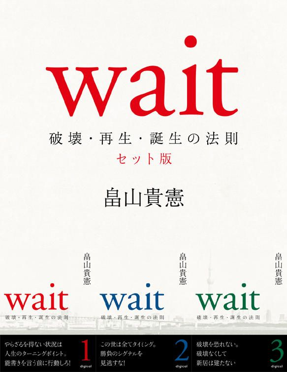
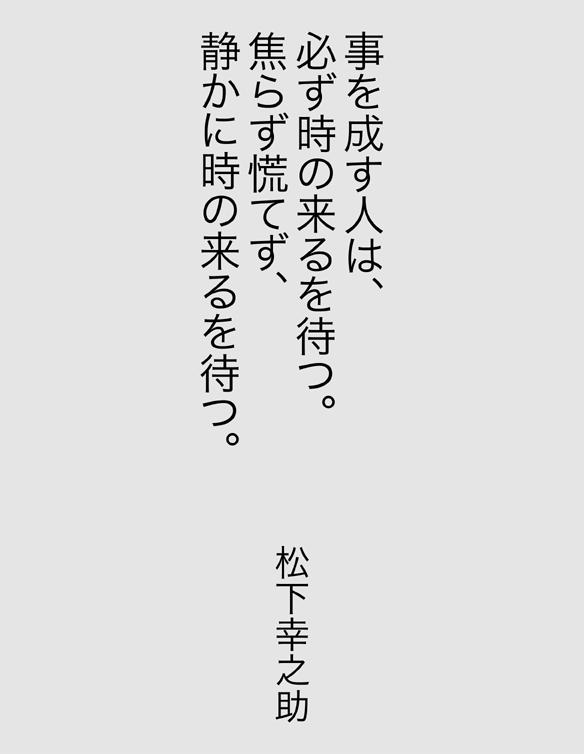
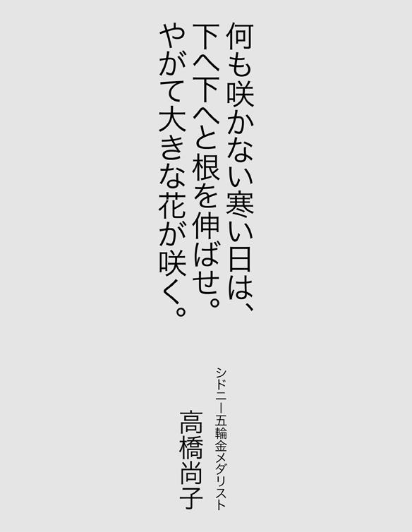
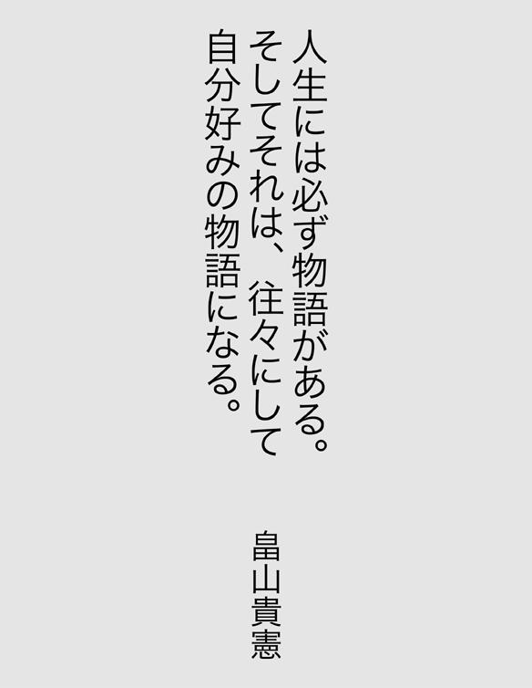

| Wait 〜破壊・再生・誕生の法則〜 第一巻～第三巻セット版 (【impress QuickBooks】) | |
| 畠山貴憲 | |
| (2012) | |




【プロフィール】
畠山 貴憲（はたけやま たかのり）
一九七〇年東京都生まれ。一九九七年劇団『ＡＴＡＣ』の座長になり、二〇〇二年劇団名を『ＴＨＥＡＴＥＲ ＪＵＮＫ』と改める。二〇〇三年『永遠の一秒』が、萬スタジオバックアップシリーズで最優秀審査員賞を受賞。翌年上演の『海を越えた挑戦者たち』はＦＭ沖縄制作のラジオドラマに選出される。その後、フリーになり、二〇〇九年小説『ｗａｉｔ』が、第十六回松本清張賞の予選を通過。四一〇編の中の三三編に選ばれる。来年、小説「（仮）バンミカセ！～海を越えた挑戦者たち～」が琉球新報社より出版予定。同作品は現在、映画化として進行中。
『事を成す人は、必ず時の来るを待つ。焦らず慌てず、静かに時の来るを待つ』
この言葉は、パナソニック（旧松下電器）の創業者、松下幸之助氏の名言です。
『何も咲かない寒い日は、下へ下へと根を伸ばせ。やがて大きな花が咲く』
これは、元女子マラソン、シドニー五輪金メダリスト、高橋尚子選手の座右の銘。
何れも、本作品中に登場する言葉です。
今からちょうど五年前、私は十年間座長を務めた劇団を断腸の思いで閉じました。そして、それからすぐに睡眠障害を患ってしまい、日に日に体力が奪われていきました。まさに負のスパイラル。加速度をつけながら、私の身体が悲鳴を上げます。
まず耳が聞こえなくなり、しばらくして、今度は高熱が一週間ほど続いたと思ったら、突然、顔の右側半分が動かなくなりました。
顔面神経麻痺──
私の細胞一つ一つが破壊されていくような気がしました。
苦悶、煩悶の日々が続きました。
もう限界でした。
そんなある日、雨に霞む海岸通りを眺めていたら、遠くにぼんやりと明かりが見えたのです。すぐにガソリンスタンドの明かりだと気付いたのですが、私はその明かりがなぜかしら『自分の進む道しるべ』のような気がしてなりませんでした。
本作品の構想が降ってきた瞬間です。
ちょうど、そんな時でした。先ほどの言葉（松下幸之助氏と高橋尚子選手の言葉）に出会ったのは。
『事を成す人は、必ず時の来るを待つ。焦らず慌てず、静かに時の来るを待つ』
『何も咲かない寒い日は、下へ下へと根を伸ばせ。やがて大きな花が咲く』
それから私は、耳が聞こえなくても顔が動かなくても出来ること......そう、本を書き始めたのです。
自分の過去を、主人公、志村洋介にトレースしました。もちろん、洋介ほど私は格好良くありませんが、この主人公は見事、私の過去を受け入れてくれました。
そして半年の時間を要し、ようやく書き上げました。私の小説処女作『ｗａｉｔ』を。
本作『ｗａｉｔ』は、あくまで自分の過去をモデルにしたフィクションですが、私はこの作品を書き上げて、一つだけ気付いたことがあります。それは、これまで私の歩んできた人生が、実は自分好みの物語だったということ。つまり、自分好みの物語のような人生を、私はこれまで歩んできたというわけです。
人生とはとかく、そういったものなのかもしれません。
読者の皆さんも、一度、この機会に自分の人生を振り返ってみて下さい。望むと望まないに関わらず、実はそれが自分好みの物語だったことに気付くかもしれませんよ。
最後に蛇足ですが、そんな私の物語は、数ヵ月後、松本清張賞の予選を通過しました。
人生には必ず物語がある。そしてそれは、往々にして自分好みの物語になる。
畠山貴憲
【登場人物】
○志村洋介 劇団『ｗａｉｔ』座長。劇作家。演出家。俳優。
○西村恭子 女優。
○高田直哉 俳優。フリーター。
○東野美穂 女優。フリーター。
○松原守 俳優。フリーター。
○鳥海研二 俳優。フリーター。
○西村翔太 恭子の弟。
○大原社長 大原プロの社長。
○勝田信夫 舞台監督。洋介の師匠的存在。
○美川俊二 俳優。フリーター。
○中込ゆり 日南放送社員。
○大沼育子 日南放送報道部副部長。
○三島友則 福岡県のとある会館の職員。
○橋本昌美 宮崎県小林市のとある会館の館長。
○仲間 聡 沖縄県在住の洋介の知人。
○新垣正弘 沖縄県那覇市議の秘書。
○高嶺 徹 琉球タイムス社文化事業局事業部部長。
○川岸正平 劇団『ｗａｉｔ』制作。
○川本新之助 宮崎県のとある会館の館長。
○長森健一 宮崎のとある劇団の座長。
○君島 恵 女優。タレント。
○安岡邦子 戦争当時、特攻隊を見送った生き証人。
○野上理恵 女優。フリーター。
○小峰修一 プロデューサー。
○真柴健吾 映画監督。
○添田 久 出版社編集員。
○山田憲明 舞台照明。
ｗａｉｔ ～破壊・再生・誕生の法則～
セット版
１ 天王洲のカフェ
先ほどまであんなに晴れていた空がいつの間にか黒い雲に覆われ、遂に雨が降り出した。店内では相変わらず、南国の蒼い海と青い空がテレビモニターに映し出され、ＢＯＳＥのスピーカーからハワイアンのトロピカルなサウンドが響いている。周りの客は、平日ということもあってＯＬやらサラリーマンばかり。ビビッドなサウンドと仕事の愚痴を言うグレーな声が店内を複雑な色に染め上げていた。
洋介が雨に気付いたのは、窓の外からストロボのような閃光を感じたからだ。一瞬、誰かが写真でも撮っているのかと思ったのだが、次の瞬間、耳をつんざく雷鳴でそれと気付いた。
〈どうしよう......傘、持ってきてないや......〉
耳栓代わりのイヤホンをしたまま、洋介は深いため息をついた。
天王洲アイルの中にある、ちょっとお洒落なカフェ。彼がここへ来るのは一年振りだった。別に、何となくここへ読書に来たのではない。ちゃんとした意志を持ってここへ来たのだ。テーブルの上には、食べかけのサンドウィッチと氷が融けて透明の層ができているアイスコーヒー、それと、ハードカバーの本が一冊。
昨日、古本屋で『東京湾景』を購入した洋介は、この本に描かれているシチュエーションの中で読んでみたくなり、天王洲アイルにあるこのカフェに来た。そして、最後の『お台場まで』という章を残してりんかい線でお台場へ向かい、その最後の章をタイトル通りお台場で読み終える予定だった。かなりベタな計画ではあったが、それほど暇だったのだ。
「俺は、一体、いつまで待てばいいんだろう......」
あっという間に水溜りの出来た石畳を眺めながら、洋介がポツリと呟いた。
今年に入ってからというもの、正月に数日間仕事をしただけで、後はこの数ヶ月ずっと待っていた。二年間さぼっていたフィットネスジムに再び通いだし、今まで熟読していなかった八百ページにも及ぶ歴史書を三回も読み返して要点をパソコンに移し出した。日本語のルーツから太平洋戦争に至るまで。
それでもまだ時間は余った。今度はＤＶＤを狂ったように観始める。『二百三高地』『大日本帝国』『零戦燃ゆ』『仁義なき戦い』......どれも、洋介の大好きな脚本家、笠原和夫作品ばかり。
それでもまだ時間は余った。そこで昨日、古本屋へ行き、小説をまとめ買いしてきたというわけ。
ふと、イヤホンと繋がっている携帯に目をやる。着信があればそのイヤホンからメロディが流れてくると分かっていても、無意識に確認してしまう。着信がないのを確認すると、今度はメモのボタンを押す。洋介は携帯のメモ帳をネタ帳代わりにしていた。
『人は感情の動物だからこそ、自分を律することが必要なのだ』『人として最も恥ずべき行為とは、罪を他人になすりつけたり、嘘をついて責任逃れをすること』『人には二つのタイプがある。与えることを望むタイプと、与えられることを望むタイプ』
携帯画面の最後に、今日、テレビを見て書き写した一番新しい言葉がある。
『何も咲かない寒い日は、下へ下へと根を伸ばせ。やがて大きな花が咲く』
洋介はその言葉を黙読すると、携帯を閉じ、再び『東京湾景』を開いた。
一 始動
ちょうど十年前、洋介は初めて脚本を書き始めた。別に脚本家になりたかったわけではない。仕方なしに書き始めたのだ。
洋介が所属している『未来予想ズ』というふざけた名前の劇団は、旗揚げ時の座長が命名した。未来予想図の『図』を片仮名の『ズ』にしてチームっぽさを出したかったのだろうが、もし最後の文字が片仮名でなくても、洋介はこの名前が気に入らなかった。なぜなら、ドリカムがどことなく苦手だったから。
そんな『未来予想ズ』の旗揚げ公演は見事に大失敗。それこそ未来予想図を描く前に、再び白紙に戻された。しかもこの公演後、演出兼座長を務めた神谷は、打ち上げの席で、「次の座長は洋介だから、宜しく」と告げて、あっさりと退団してしまう始末。もちろん最初はその言葉に困惑したが、あまりにも不甲斐ない旗揚げ公演に洋介は決心した。〈この劇団を何とかして、いっぱしの劇団にしてやろう〉と。
座長になって初めて行なった仕事は、劇団名を変えること。どうしても、「未来予想ズ座長、志村洋介です」とは言えなかったのだ。
結局、劇団名は洋介が命名した。新しい劇団名は『ｗａｉｔ ウェイト』。
『事を成す人は、必ず時の来るを待つ。焦らず慌てず、静かに時の来るを待つ』
これは松下幸之助の言葉だ。歴史上、偉業を成し遂げた人物は皆、その時が来るのを待った。
十七世紀、漢民族が支配していた明を、満州族のヌルハチは勢力を拡大しながら虎視眈々と狙っていた。そして一六一九年、ヌルハチ率いる後金軍はサルフの戦いで明を破り、その後にヌルハチの息子、ホンタイジが遂に清朝を建国した。
日露戦争で、世界最強とうたわれたバルチック艦隊を破って日本を勝利に導いた東郷平八郎は、敵が攻撃してきているにもかかわらず、その距離を絶妙な距離に保つまでは決して自軍に攻撃命令を出さなかったという。
明治維新を成し遂げた志士とて、あの革命が五年早くても遅くても、恐らくは成功していなかっただろう。つまり、全てはタイミングなのだ。そのタイミングを見極める目とそれを待つ精神力、それが事を成すのに最も重要なことだと洋介は考えていた。
こうして劇団ｗａｉｔは、洋介をリーダーに新たに活動を始めた。劇団が活動を始めるということは、公演企画を立てるということ。公演企画を立てるということは、作品を決めるということ。作品を決めるということは、既成の本にするのかそれともオリジナルにするのか決めなくてはならない。洋介は、コピーバンドのような劇団には絶対にしたくなかった。かといって、劇団員の中で本を書けて演出できる人間など一人もいない......。仕方なく、読み終えたばかりの小説を原作に脚本を書き始めた。もちろん、演出も。
処女作『未完成の城』の執筆は半年を要した。当時、洋介はロケバスの運転手のアルバイトをしており、雑誌の専属スタイリストと一緒に都内のショップを回って小物やら家具を梱包し、それを出版社や撮影スタジオに毎日運んでいた。一見すると楽そうな仕事だが、労働時間は通常九時から十八時。もちろん、スタイリストの都合によっては残業も当たり前。しかも月曜日から金曜日まであり、時には土・日に出勤することもあった。これでは普通のサラリーマンと何ら変わりない。それでも、なんとか休憩時間と休みの日を利用して脚本を書き上げた。
脚本を書き上げると、即座にある女優に連絡した。どうしても、彼女に演じてもらいたい役があったのだ。
「もしもし、志村ですけど」
「おォ～、久しぶり。元気？」
相変わらず西村恭子の声は、歯切れが良くて気持ちが良い。
「うん、なんとか」
「噂は聞いてるよ。今度、演出するんだって？」
「うん。そのことで、ちょっと話があるんだけど」
「なに？ もしかして、出演交渉だったりして」
「まァ、そんなとこかな......」
洋介の煮え切らない返事にも、恭子は張りのある声で返す。
「本、読ませてよ」
「うん。いつなら時間空いてる？」
「今週の土曜なら大丈夫だよ」
「じゃあ、時間が決まったら、また連絡する」
「了解。演出家先生」
電話を切った後、洋介は何だか複雑な心境で目の前にある書きあがったばかりの脚本を手に取った。
「演出家先生......か」
洋介が池袋の宝くじ売り場に到着したのは、約束の時間よりも十五分ほど前だった。恭子がその場所に姿を現したのは、約束の時間の十五分後。洋介は池袋の雑踏の中、三十分、彼女を待った。
「ごめん、ごめん。電車が遅れちゃって」と言いながら、Ｔシャツにジーンズ姿の恭子が小走りでやってくると、洋介は、「いきなり遅刻かよ」と応えながらも、思わずその均整のとれたスタイルに見とれた。
恭子は『大原プロ』という芸能プロダクションに所属しており、そこの養成所で講師も兼任している。歳は洋介の一つ上。昔、洋介は恭子のレッスンを受けていたことがあった。つまり、この二人の関係は先生と生徒。
「でもさ、メールくらいできたろ」と洋介が口を尖らせると、「だって、シルバーシートに座っちゃったんだもん」と、恭子も口を尖らせる。
「じゃ、立てよ」
「ごめん。そこまで気付かなかった」
洋介が養成所を辞めて以来、なぜか二人の会話はこんな感じだった。別に付き合っているわけでも、男女の関係があったわけでもない。
「別に、どこの店でもいいよな？」と、道行く人を避けながら洋介が訊く。
「演出家先生に任せる」と、恭子は洋介の背中に応えた。
「ちょっとさ、その演出家先生っていうの、やめてくんない？」
「じゃ、なんて呼ぼうかな」
「いいじゃん、今まで通り志村君で」
「だって、志村君っていうとさ、なんだか自分の苗字を呼んでるみたいなんだもん」
「なんで？」
青信号が点滅し出したので、二人は足早に横断歩道を渡った。恭子が洋介の隣に付く。
「ほら、西村の『西』って、両方とも母音が『い』でしょ。だから、『に』がハッキリ発音されないと、『し』が無声化されて強調されるから、シムラに聞こえるの」
「それ、おたくの社長が怒鳴る時だけだろ？」
「だから嫌なの！」
「なんかそれって、俺の苗字が嫌って言われてるみたいなんだけど」
雑居ビルの中にあるエレベーターのボタンを押しながら、洋介がまた口を尖らせる。
エレベーターが開くと、次々にその小さな空間へ人が押し寄せてきた。なぜか洋介は、女性と二人でエレベーターに乗るといつもにやけてしまう。二人だけならそんなこともないのだが、満員のエレベーターに乗るとなぜかにやけてしまうのだ。別に今までその理由を深く考えたことはなかったが、今、初めてそれを考えてみた。きっと話したいけど話せないこの密室が面白いのかもしれないと思った瞬間、恭子が声を潜めて話しかけてきた。
「じゃ、リーダーってどう？」
洋介はとてつもない笑いが込み上げてきて必死にそれを堪えた。それは恭子の言葉にではなく、言葉を発した恭子にである。
「ねェ、ねェ」と、その大きな目を更に大きくして返事を催促する恭子に堪えきれず、洋介が吹き出したのと、エレベーターの扉が開いて人が噴き出したのはほぼ同時だった。
「いらっしゃいませ！」
男性店員の大きな声と洋介の大きな笑い声が重なる。
この店は手羽先が自慢らしいが、決して美味しい代物ではない。それでもいつも大勢の客で賑わっているのは、単純にその値段の安さにあるのだろう。洋介はこの店で酒を飲むたび、翌日、必ず頭が痛くなった。しかしいくら翌日に響こうが、この値段の安さにはかなわない。『生ビール・サワーどれでも百円均一！』
店内は、若者とサラリーマンとＯＬでごった返している。楽しい酒。悲しい酒。神妙な酒。いやらしい酒。多種多様。
洋介と恭子は女性店員に案内され、角のテーブル席に着いた。
「ご注文は、いかがなさいましょう？」と、流暢な日本語を話す中国人留学生らしき店員に訊かれると、まず洋介がお絞りで顔を拭きながら、「生」と応え、そのあとに恭子が、「二つ」と笑顔でピースサインを作ってみせる。しかし伝票に記入しながら、「かしこまりました」と言った彼女の顔は、なぜだか不機嫌。いや、そう見える。
また新たな客が入ってきた。店内のあちこちから、「いらっしゃいませ！」の声が響く。その女性店員も不機嫌そうな顔のまま、「いらっしゃいませ！」と、怒声のような声を張りあげる。そんな店内の様子を、洋介がお絞りを畳みながら観察するように窺っている。恭子は、そんな彼をジッと観察した。
実は、こういった酒の席で周りの人間を観察するのが、洋介は好きだったのだ。若い男女の席は特に。そんな彼の顔を窺いながら恭子が怪訝そうに、「なに、そんな嬉しそうな顔してんの？」と尋ねると、「別に」と言って、今度は畳んだお絞りでテーブルを拭き始める。
日本人が『別に』という答え方を覚えたのは、一体、いつ頃からなのだろうか。
『なに、怒ってるの？』『別に』
『なに、泣いてるの？』『別に』
『なにが、そんなに可笑しいの？』『別に』
よくよく考えたら、一切、会話になっていない。その理由を訊いているのに、『別に』というのは質問の答えになっていないではないか。『Ｗｈｙ』と質問したら、ちゃんと『Ｂｅｃａｕｓｅ』で答えろ！ と、つまらないことで恭子が腹を立てていたら、洋介が、『Ｂｅｃａｕｓｅ』で答えた。
「あの男、ふられるな」
「え？」
「ほら、お前の後ろに座ってるカップル」
恭子が振り返る。
「バカ！」
思わず、洋介は小声で怒鳴った。しかしその声もカップルに届いてしまい、洋介と恭子は益々ばつが悪くなる。そんな空気を救ってくれたのは、先ほどの不機嫌そうな店員さん。
「お待たせしました！」と、なぜか怒られるようにして言われると、二人は、「ありがとう」と引きつった笑顔で応え、洋介がメニューから適当に注文をする。
「冷奴と枝豆と手羽先」
「かしこまりました」
店員が去るのを見計らって、「ねェ、ここの手羽先、美味しくないんでしょ？」と、恭子が身を乗り出しながら恐る恐る訊くと、「どれ食ったって、うまくねェよ」と、洋介が平然と答える。
「え？」
「ま、ま、ま、そんなことより──」
そう言って洋介が急かすようにジョッキを掲げ、二人はビショビショに濡れたジョッキを重ねた。
「乾杯！」
店内は相変わらず、人の声とスピーカーから流れてくる歌手の声が、どちらも負けじとボリュームを上げている。
「ほら、酔う前に」と、洋介が台本を差し出す。恭子は、「ありがとう」と言ってそれを受け取ると、ペラペラとページを捲った。そんな彼女を洋介が不安げに見つめる。何せ、自分が初めて書いた脚本だ。よく画家とか作家が、自分の作品を初めて見せる時は裸を見せるより恥ずかしいと言うが、何となくその気持ちが分かったような気がした。いや、むしろ洋介は自分の裸には自信があった。昔、フィットネスジムでインストラクターのバイトをしていた時から自らもトレーニングを始め、それ以来、どこか筋肉オタクの気があるくらいだ。だから皆で酒を飲みに行っても、つまみは豆腐や枝豆といったタンパク質を多く含むメニューを好んだ。
台本を食い入るように読んでいる恭子を気にしながら、洋介が煙草に火を点ける。店内のＢＧＭは、いつの間にか邦楽から洋楽へと変わっていた。
「ねェ、私、知子って役でしょ？」と、恭子が台本に視線を落としたまま訊くと、洋介は隠す素振りもなく、「うん」と正直に答えた。
「なんかこのまま読んだら、最後までここで読んじゃいそうだから、帰ってからゆっくり読むわ」
恭子がそう言って台本を鞄の中にしまうと、今度は男性店員がやってきた。
「お待たせしました。冷奴と枝豆と手羽先になります」
テーブルの上に並べられたそれぞれの品は、見た目では決してまずそうではない。
「わァ、美味しそうじゃない、この手羽先。食べよ。私、お腹すいちゃった」
香ばしそうな匂いを漂わせている手羽先に恭子が手を伸ばしたとき、突然、洋介が、「あッ」と声を上げた。
「どうしたの？」と、恭子が慌てて手を戻す。
「この曲」
天井を指差す洋介を見て、恭子が耳を傾ける。
「スイートボックス？」
「うん」
バッハの名曲『Ｇ線上のアリア』をラップ調にしたこの曲は、この年、よくラジオから流れていた。
洋介はロケバスの中で度々、自分の書いた台詞に曲を合わせて演出していた。どちらかといえば、脚本家より演出家の方が向いていたのかもしれない。しかし、本がなければ演出は出来ない。例えば、いくら腕の良いコックがいても、食材がなければ料理が出来ないのと一緒だ。
洋介がジョッキの底をお絞りで拭きながら、「今回、この曲を使おうと思うんだ」と言うと、恭子が、「え？ スイートボックスを？」と目を丸くする。その顔が可笑しかったのか、それとも半音上がった恭子の声が可笑しかったのか、「違うよ。Ｇ線上のアリア。ヨハン・セバスティアン・バッハ」と洋介は笑った。まさかそんな、バッハをフルネームで言われるなんて思ってもみなかった恭子は、また目を丸くした。
「それにしても、リーダーってホント不思議だよね」と恭子が頬杖をつく。
「なんで？」
「だってさ、見た目は、絶対にクラシックなんて聴かない！ って感じなのにさ──」
「俺がクラシックを聴いてると、そんなに可笑しいか？」
「別に可笑しくはないけど......なんだか不思議な感じ」
「ふ～ん」と口を尖らせながら煙草をもみ消すと、洋介は手羽先を一つ手に取り、かぶりついた。口の周りが手羽先の油で光る。
「ところでさ、まだいる？」
「え？」
恭子の質問の意味が最初、洋介にはさっぱり分からなかったが、「う・し・ろ」と、口を大きく開けたその仕草でようやく分かった。
「あァ、さっき帰ったよ」
後ろを振り向いて先ほどのカップルがいないのを確認すると、恭子は再び洋介に質問を投げかけた。
「どうして、分かったの？ 男がふられるって」
「雰囲気だよ、雰囲気」
「へェ～」と、その答えに満足のいっていない恭子は、ビールジョッキを空にしてから店員を呼んだ。
「すいませーん！」
男性店員が足早にやってくると、「おかわり──」と言ったところで一瞬、洋介を窺ってから、「二つ」と再びピースサインを作ってみせる。このピースサインは、もちろん『二つ』という意味で、今、店内に流れはじめたジョン・レノンの『イマジン』とは何の関係もない。先ほどの不機嫌そうな店員が、忙しなく横を通り過ぎる。
「俺、好きなんだよね。男と女がお互いの心中を探り合ってるのを見るの」
そう言って、洋介はまた店内を見回した。恭子は枝豆に手を伸ばす。
「へェ～、でも、あまり、いい趣味とは言えないね」
「そうか？ でも役者には必要だと思うけど」
「そうかな」と言った恭子の口には、枝豆がくわえられている。
「だって、台本に書かれてある台詞と台詞の間には、たくさん機微が埋まってるんだぜ。その、台詞に書かれてない台詞を掘り起こして表現するのが役者の仕事だろ？」
「まァ、そうだけど」
「その機微を探るには、男と女の会話が一番分かりやすい」
「じゃあ、私たちの会話はどうなの？ この会話の中にどういう機微が埋まってるの？」
「え？」
「周りは、私たちのことをどう見てると思うの？」
また怒ったようにして、「お待ちどうさまです！」と、あの店員がジョッキをテーブルの上に二つドカッと置く。洋介はそのビールを一口飲んでから、泰然たる口調で言った。
「一つだけ確かなことは──」
恭子が洋介を上目遣いで見ている。
「さっきから、恭子は俺に質問ばかりしてるってことかな」
「え？」
「きっと、この会話を台本に起こしたら、恭子の台詞は『？』だらけだぜ」
質問をするのは、『あなたのことを、もっと知りたいからです！』と喉まで出掛かったが、恭子はその言葉をビールと一緒に呑み込むと、替わりにこう言った。
「きっとリーダー、良い演出家になるね」
洋介のもとに恭子から連絡があったのはその翌日だった。恐らく、あれから自宅で何度も本を読み返した為に一睡もできなかったのだろう。恭子は日曜の朝八時という、まだ良い子のみんながテレビの前で仮面ライダーを応援している時間帯に電話をかけてしまった。
「もしもし、恭子です。ごめん、寝てた......よね？」
「うん......」
「あッ、ごめん......じゃ、また後で掛け直すよ」
「いいよ。どうした？」
どうやら洋介は、まだ寝ぼけているようだ。「どうした？」って、恭子が電話をかけてくるのだから要件は一つしかない。
「知子役、是非、私にやらせて下さい」
「え？ 誰？ ともこ？ え？ 恭子......だよな？」
恭子は、「やっぱ、また後にする」と言って、冷たく電話を切った。
この二人が再び顔を合わせたのは、それから一ヵ月後の稽古初日。なぜか恭子と会ったあの日以来、ｗａｉｔのメンバーも洋介のことを『リーダー』と呼ぶようになっていた。
ｗａｉｔの初代メンバーは、恭子を含めて十一人になった。恭子はあの日、電話で自分もｗａｉｔに入れてほしいと告げ、晴れてメンバーの一員となったのだった。
大半は彼女の入団を歓迎した。『大半は』というのは、全員ではないということ。顔では快く受け入れているが、決して心の中ではそうでないと、数人の女優陣を見て洋介はすぐに分かった。確かに華のある女優が入団するとなると、男優陣はそれだけで嬉しいのかもしれないが、女優陣にとってはそうも言っていられない。ライバルが増えるのだから。ルックス・スタイル・実績の三拍子揃った女優、西村恭子という最大のライバルが。しかし視点を変えれば、それは同時に自分を高めるチャンスでもある。洋介は、そう考えてくれることを切に願った。
長机を四つ組み合わせて正方形を作り、役者は全員、互いの顔が見えるように座る。まるで会議でも行なうようだが、ｗａｉｔの本読みはいつもこうだった。
稽古前に、メンバー最年少の高田直哉と人数分コピーした台本は、もう既に全員が目を通していた。最年少ということもあってか、洋介は直哉を可愛がった。また、直哉も洋介を兄のように慕っていた。
「では、キャストを発表します」
洋介の一言で、メンバーの表情に緊張が走る。といっても、誰がどの役になるのか大よその見当は皆ついていたらしく、きっと『内定』から『確定』になった程度なのだろう。実際、洋介がキャストを発表しても、一様に『やっぱり』といった表情を浮かべていた。ある役以外は。
「じゃ、次、知子役は──恭子」
「はい」
その瞬間、女優陣の目が一斉に恭子に注がれた。洋介は、そんな女優陣を一瞥してから先に進んだ。
知子という役は有名女優の役である。本来、女優が女優役をやるというのは難しいのかもしれないが、洋介はここにいる役者陣をまだ一人前の役者とは認めていなかった。いうなれば役者の卵、或いはさなぎといったところだろうか。もちろん、自分自身も含めて。
洋介は二十一歳の時、役者になろうと決意した。それから現在に至るまで、数多くのバイトをしてきた。ホスト、清涼飲料水の営業、フィットネスジムのインストラクター、居酒屋の店員。中にはこんなのもあった。農家のビニールハウスの設営。こうした経験の中から一つだけ心に決めていることがある。それは、バイトを辞めて役者として一本立ちするまでは、他人に職業を訊かれても『フリーター』と答えること。
以前、駐車違反で警察に捕まった時も洋介は、職業を「フリーター」と答えた。すると、その警察官は眉一つ動かさず、「無職ね」と言った。
確かにそうだ。『フリーター』とは世間一般では『無職』だ。それでもバイトで生計を立てている以上、プロの役者とは言えないと、現在も自分で決めた掟を貫き通している。ｗａｉｔの座長を引き受けてからは、その気持ちが更に強くなった。ちなみに、今のバイトはバーテンダー。
「それじゃ、今日の稽古はこれでとります。お疲れ様でした」
洋介の声にメンバーが応える。
「お疲れ様でした！」
およそ三時間の稽古が終わり、メンバーは各々、片付けに入った。今日は、これから決起会という名の飲み会があるからだろうか、いつになくスピーディーに片付けは終了した。
アルバイトで生計を立てている貧乏役者にとって、やはりこの店は有難い。池袋にある手羽先が自慢のお店『こけっこ』にｗａｉｔのメンバー十一人が集結した。直哉が予約した席は、奥の座敷部屋。個室になっているので周りの酔っ払いを気にせずに飲めるが、洋介は人間観察が出来なくて少し寂しそうだった。
隣に座った東野美保が、「リーダー、なに飲むの？」と甘えた声で訊くと、洋介は相変わらずお絞りで顔を拭きながら、「生」と応えた。
「リーダー！ それ、おっさん臭いで」
大阪出身の鳥海研二が突っ込みを入れると、同じく関西、奈良出身の松原守が更に追い討ちをかける。
「しゃあないやん。だって、おっさんなんやから」
「うるせェ。二十八歳のどこがおっさんやねん。二十八歳ちゅうたら、まだケツの青いクソガキじゃい！」
洋介の弁解はちょっとキツかった。しかし、恭子がそれを救ってくれた。
「ちょっと、守。ていうことは、私は、おばさんってことですか？」
「え？ いや......恭子さんは、お姉さんですよ」
恭子は、洋介を見て笑った。洋介は笑いながら、守にお絞りを思いっきり投げつけてやった。
「ちょっと、リーダーやめなよ。もう、子供なんだから」
隣で美保が、まるで彼女の様に洋介をたしなめる。
「うるせィ」
恭子は、そんな二人からなぜか視線を逸らしてしまった。
恭子と美保は、以前は同じ事務所の先輩と後輩の関係でとても仲が良かったのだが、美保が事務所を辞めて以来、疎遠になっていた。しかし、こうしてまたｗａｉｔで再会を果たしたのだった。つまり洋介と恭子と美保は、同じ事務所の先輩と後輩でもあったのだ。
「お待ちどうさまです！」
男性店員が十一個分の生ビールを一人で持ってきた。すかさず、一番年下の直哉がジョッキを皆に回す。
「はい、はい、はい──皆さん、ジョッキは渡りましたか？」
「は～い！」
「それじゃ、リーダー、乾杯の音頭をお願いします」
直哉の声に促され、照れ臭そうに洋介が立ち上がる。
「え～、それでは、『未完成の城』の成功と、劇団ｗａｉｔの発展を祈って、乾杯！」
「乾杯！」
「ワー」とか「ヤー」とか「オー」とか、言葉というより表音文字を発しながら一同がジョッキを重ねる中、洋介はふいにある言葉を思い出した。
『言語と文字は別である。言語は音であり、文字は符号である。文字は言語に及ばないが、その言語は行為に及ばない。イエス・キリストもブッダもソクラテスも皆、行為者に他ならないのだ』
確かに洋介も、それは一理あると思った。手紙やメールよりも、電話で直接、言葉にして伝えた方が相手に誤解を招きにくい。なぜなら、声にすればその高低や強弱で気持ちを的確に伝えることが出来るから。それよりももっと確実なのは、実際に会って話をすること。そうすれば、今度は表情という武器もプラスできる。
『文字は言語に及ばない。言語は行為に及ばない』
洋介はこれから、文字・言語・行為と、全てのものと向き合わなくてはならない。脚本家は『文字』で自分の世界を描き、演出家はその文字を『言葉』に起こし、より立体にしていく。そして役者は、それらに表情や動きをプラスした『行為』で表現しなければならないのだから。
皆の顔はどれも笑顔だった。洋介は、そんなメンバーの笑顔を眺めながら美味しそうにビールジョッキを傾けた。
２ 止まない雨
ネオンの光が濡れた石畳に反射しているせいだろうか、洋介は窓際で本を読んでいるにもかかわらず、外が暗くなっていることに全く気付かなかった。先ほどから雨脚は殆んど変わっていない。外の雨音は、見事に店内のトロピカルなサウンドによって掻き消されていた。
このとき既に、最後の章を残して、お台場で読み終えるという計画は変更されていた。理由は簡単。傘を持っていないから。そのうちに止むだろうと高を括っていたのだが、一向に止む気配はない。そうこうしているうちに『東京湾景』を読み終えてしまった。
本を閉じ、雨に輝く外の景色をぼんやりと眺める。
「この向こう側が、ちょうどお台場なんだよな......」
洋介にとって、お台場はとっておきの散歩コースだった。海岸通りに面している自宅マンションからレインボーブリッジを歩いて渡り、そのまま海岸線をひた歩く。お台場海浜公園を過ぎ、潮風公園へ。そして南極観測船『宗谷』と青函連絡線『羊蹄丸』の脇を通って最終目的地、青海南ふ頭公園へと辿り着く一時間ほどの散歩コース。この青海南ふ頭公園は、洋介の大のお気に入りの場所だった。東京湾を挟んだ向こう側に大井埠頭を望み、その奥には天王洲アイルの高層ビル群、つまり、ここ。パノラマに広がるその景色は、六本木ヒルズや東京タワーはもちろん、羽田空港に離着陸する旅客機まで肉眼で捉えることができる。しかも、天気の良い日には遠く富士山まで見渡せるのだ。ここからのサンセットは、これまた格別。洋介は、事あるごとにこの場所を訪れた。いや、別に事がなくても、時間のある時はここを訪れていた。昨年の夏は......
ふと、ある台詞が脳裏をよぎり、再び本を開く。その台詞はラストのページにあった。
『私にはまだ傷がない』
これは、青山ほたるという作家の連載小説が、急遽、休載になるというシーン。そこで彼女が、お詫びの言葉として雑誌に載せた言葉だった。
『私にはまだ傷がない』
そのページを開いたまま、外の輝く景色へ視線を戻す。店内で響いているハワイアンは、洋介の耳まで届いていない様子。本を閉じ、徐に席を立つ。鞄に本をしまい、上着を羽織る。店員の一人がせっかちに、「ありがとうございました！」と、カウンターの中から声をかける。洋介は、そのまま静かに店を出た。
幾つもの店舗が入っているこのビルは、大きな劇場も入っていた。三ヶ月前、洋介は一人でこの劇場にミュージカルを観に来ている。どことなくミュージカルは苦手だったのだが、その作品は本当に素晴らしく、観劇後しばらく興奮が収まらなかった。そんなことを思い返しながら傘の売っている場所を探し歩き、ＦｒａｎｃＦｒａｎｃの店頭に並べてあるモスグリーンの傘を購入した。『ＳＡＬＥ！ ￥５００』
真新しい傘を開き、雨で輝く町を歩き出す。雨は先程よりだいぶ小降りになっていた。
二 代表作
事実上、ｗａｉｔの旗揚げ公演は大成功だった。予想以上にお客さんも入り、公演アンケートの評価もこれまた予想以上に高かった。『未来予想ズ』の頃に比べたらこの結果は雲泥の差だ。洋介は、ひとまず自分の役目が果たせたと、ホッと胸をなでおろした。もちろん、そうともなれば打ち上げが盛り上がらないわけがない。
月島のもんじゃ焼き屋で一次会を盛大に行ない、二次会はそのまま銀座へ。といっても、赤い看板の居酒屋さんだけど。
いつの頃からかメンバーの間で『和民』『白木屋』『笑笑』といった居酒屋チェーン店を『赤い看板』と呼ぶようになっていた。理由は、どのチェーン店も看板が赤いから。
公演ビデオを撮っていた恭子の弟、翔太は、一次会から打ち上げ風景も撮影していた。公演後、洋介はそのビデオを何度も観返したが、打ち上げシーンまで観たのは、この日が初めてだった。
それは二次会でのこと。お客さんから貰った花束やら、お酒やら、お菓子やらの大荷物を抱えて店に入ってくるメンバーを、翔太がカメラを回しながら、「お疲れ様です」と言って迎えている。入店した時は、時おり疲れた表情を浮かべていた者も、翔太にカメラを向けられるとすぐに笑顔に変わり、つまらないギャグまで添えている。その時、画面の奥から美保の甘えた声がかすかに聞こえてきた。
「リーダーどこに座るの？ 私、リーダーの隣がいい」
まァ、これくらいならいつもの事だと流せるのだが、洋介が、「ん？」と思ったのは、そんな美保を引きつった表情で見ている直哉だった。もう一度、巻き戻して見てみる。やはり、美保が言った『リーダーどこに座るの？ 私、リーダーの隣がいい』という言葉に対しての反応に間違いない。洋介は薄い笑みを浮かべながら、「別に恋愛は自由だけど、本末転倒になるなよ」とテレビの中の引きつった直哉に呟くと、ビデオを消してからテーブルの上に置いてある台本『いあん』を手に取った。この台本は、直哉が書いたもの。次回公演は、直哉の作・演出で行なうことになっていたのだ。
洋介は、決して作家や演出家になりたいわけではない。あくまで役者になりたかった。だから、自分の次に作・演出の出来る人間を求めていた。そこで立候補してきた直哉が、次回公演の作・演出に選ばれたというわけ。しかし、直哉の書いたこの『いあん』という作品は、周囲から猛烈な批判を受けた。
「まったく......」
ペラペラとページを捲りながら、洋介がため息混じりの声を出した時、テーブルの上で携帯がブルブルと踊った。
「もしもし」
池袋の喫茶店で恭子と翔太の三人で会うことになった洋介は、いつもの宝くじ売り場で二人を待った。辺りは相変わらず黒山の人だかり。
〈どこから、この人達は湧き出てくるんだろう？ きっと上から見下ろしたら、蟻んこのようで気持ち悪いんだろうな〉
洋介は、池袋の街で唯一といっていい高層ビル、サンシャインビルを見上げた。
いつも、不思議だった。新宿や品川は次々と高層ビルが建ち並んでいくのに、どうして池袋だけはこのサンシャイン以外、他の高層ビルが建たないのか。
昔から洋介は、どこか土地の雰囲気に敏感なところがあった。例えば、後輩のアパートを探しにＯ町界隈を歩いたとき──
「なんか、この町って独特な雰囲気ない？」と辺りを窺いながら洋介が訊くと、後輩は全く何も感じていないようで、「そうっすか？」と応えると、こんなことまで付け加えた。
「そういえばこの前、この近辺をネットで検索してみたら、この辺って昔、刑場があったらしいですよ。ほら、鈴ヶ森刑場って有名な」
「へェ～......そんな有名な刑場があった場所に、お前、住みたいんだ」
「俺、別に、そんなの気にしませんから」
「あッ、そう......」
そういう意味ではここサンシャイン近辺も、第二次大戦後、極東軍事裁判で被告人となった東条英機らが処刑された場所（巣鴨プリズン）として有名だが、洋介はなぜかこの池袋という街が嫌いではなかった。実際、今この街に住んでいるのだから。
明治通りを右翼の街宣カーが、『歩兵の本領』を大音量で流しながら走り抜けたため、洋介は危うく携帯の着信音を聞き逃すところだった。
「もしもし」
「リーダー、恭子です。もう、宝くじ売り場にいる？」
「うん」
「あァ、ごめん。今、社長といるんだけど、社長も話が聞きたいって言ってるんだけど、いいかな？」
「翔太は？」
「今、一緒にいる」
「分かった」
「じゃ、西口のポエムって喫茶店知ってるでしょ？」
「うん。前に打ち合わせしたところだろ？」
「そうそう。私たち、今、そこにいるから」
「はいよ。じゃ、今からそっち向かうわ」
「はい」
恐らく『いあん』の台本のことで、恭子が所属事務所の社長に色々と相談したのだろう。
恭子と翔太は本当に仲の良い姉弟だった。この台本にまず「待った！」をかけたのは翔太だ。彼は、前回の公演からｗａｉｔの制作担当になっていた。その翔太から姉である恭子に話が行き、恭子から社長に話が行ったに違いない。そんなことを考えながら洋介は、線路を潜る地下通路を通り抜け、西口へと歩いた。ふと、アンモニアの臭いが鼻を突く。
〈でも社長は、一体、俺に何を言うつもりなんだ？〉
実際に社長といっても、今では洋介となんの関係もない。昔、所属していたプロダクションの社長というだけで、ｗａｉｔのことに口出しする権利は何もなかった。まァ、資金援助でもしてくれているのであれば話は別だが。
「お疲れ様です」
地下にあるその喫茶店はテーブルが大きいため、よく舞台の打ち合わせなどに利用されていた。しかしコーヒー一杯が七百円と高かったので、スタッフとの打ち合わせ意外は殆んど利用されることはない。
「おォ、久しぶりやな、志村」
兵庫県出身の大原社長は、昔、運送会社を経営していたせいか、どこか荒々しい感じのする人だった。でも洋介にとって、この荒々しさは決して嫌いではなかった。
「お久しぶりです」
「読ませてもろうたで、この本」と、社長が台本をチョコンと持ち上げる。
「はァ......」
恭子が洋介を窺いながら、「リーダー、何にする？」とメニューを渡すが、洋介はメニューを受け取らずに、「アイスコーヒー」と答えた。すると今度は翔太が、「すいません！」とウェイトレスを呼ぶ。
正直、洋介は居心地が悪かった。この二人の様子から、何か仕組まれているような感じがしたから。
「率直に言わせてもらうが、この本は、ちょっと酷いなァ」
テーブルに置かれた台本を人差し指でトントンと叩きながら、社長がいきなり本題に入った。元々、眼光の鋭い人だが、今はその眼光がもっと鋭く感じられる。
「アイスコーヒー下さい」
水を持ってきたウェイトレスに、翔太が洋介のアイスコーヒーを注文すると、その言葉を最後にしばらく沈黙が続いた。
洋介は、それでもあえて口を開かなかった。全員の表情から見て取れるのは、明らかに自分を説得すること。台本を変更する説得を。約束通り、三人で会って自分を説得するならまだしも、社長を使って説得しようとするこの二人の行為がどこか卑怯に思えたのだ。〈社長に説得されれば、納得するとでも思ったのか？〉
そう考えたら、無性に腹が立ってきた。
「あの──」
我慢しきれなくなって洋介が沈黙を破った時だった。突然、恭子が泣き出した。
「ごめんなさい、リーダー。私......私が社長に相談したの。だって、せっかく、前回の公演が成功したのに、このままじゃ、あの公演が無駄になっちゃうと思って......」
姉をかばうように、翔太が口を挟む。
「やっぱ、次もリーダーが書いて演出した方がいいと思います」
〈そんな簡単に言うなよ......〉
洋介は、憤りを通り越して気が抜けた。それは直哉に対する説明責任から生じたのではなく、単に、また一から本を書いて演出するという行為がとても億劫に思えたのだ。
「わしも、そう思うで」
気の抜けた洋介にとって、この社長の一言はダメ押しに近かった。すると突然、社長が恭子の方を見ながら、「もう泣くな！ シムラ！」と声を荒らげる。
「はい！ え？」
洋介は一瞬、自分が呼ばれたのだと思ったが、以前、恭子が言っていた『西村』が『シムラ』に聞こえる話を思い出し、そうでないことに気付いた。
社長を一瞥してから、誤魔化すように店内を見回す。この店はブラジルまでコーヒー豆を取りに行っているのか？ と思うほど時間のかかるアイスコーヒーが出てきたのは、もう既に四人が帰り支度をしている時だった。
その日は朝から雨だった。直哉とお昼に待ち合わせをした洋介は、先に店に入ってランチを取ることにした。ランチといってもファーストフードのハンバーガーだけど。
相変わらず、その店は空気が悪かった。自分も煙草を吸うので文句も言えないのだが、洋介はこの店に来るたび、煙草の煙が気になる。エビカツをサンドしたハンバーガーをほお張ったとき、コーヒーと傘を手にした直哉が現れた。
「お疲れ様です」
「おふはへ」
エビカツは思ったよりも熱かったようだ。慌ててアイスティーで口の中を冷ます。
「大丈夫ですか？」
「うん......」
直哉の表情は穏やかだった。しかし洋介はこれから、この直哉にとても残酷なことを伝えなければならない。「『いあん』は、次の上演台本として採用できない」と。一度とはいえ、脚本を書いた経験を持つ洋介にとって、それを伝えるのは辛かった。『本を書く』という作業がどれほどの時間と労力を費やすか、身をもって理解していたから。
「ところで、お前は何も食べないの？」とストローをくわえたまま洋介が訊くと、直哉は、「自分、朝が遅かったんで」と応えながら、コーヒーにミルクを入れた。
「そう、じゃ、食べ終わるまで、ちょっと待ってて」
洋介は、ハフハフしながら意味のない時間稼ぎをした。余程の猫舌らしい。
直哉がトイレへ向う。店内のあちこちから、奇声にも似た女子高生の甲高い笑い声が聞こえてくる。相変わらず店内は、煙草の煙でかすんでいる。
直哉がトイレから戻ると、遂に意を決した洋介が口を開いた。
「なァ、直哉、『いあん』の件なんだけど......」
「美保さんから聞きました」
女子高生の奇声がまた聞こえた。
「え？ 何を？」
「だから、僕の脚本が却下されたって」
「え？ なんで？」
まるで、その笑い声は洋介に向けられているようだった。それほど素っ頓狂な顔をしていた。誰かが、「キモッ！」と声にした。
「なんでって......リーダーが決めたんじゃないんですか？」と直哉が口を尖らす。
「そうだけど......なんで美保が知ってんだよ」と洋介も口を尖らせる。
「翔太から聞いたんじゃないんですか」
「あの、バカ」
『人間というものは、何か一つでも権力を持つと、それをひけらかしたくなるもの。弱い人間は、それを誇示することによって自分を保っているのだ』
洋介は、いつかテレビで偉そうに話していた評論家の顔を思い出した。
どんな組織でも、ポジショニングというのは難しい。もちろん、ｗａｉｔでも。各々が自分の立場をわきまえなければ、たちまちその組織はカオスとなってしまう。まだ自分の事を過大評価し、その権力をひけらかしているだけなら救いようがある。本当の実力を教えてあげれば良いのだから。しかし、これに恋愛が絡んでくるとこれまた厄介だ。洋介は、ふとあの二次会でのビデオを思い出した。直哉が引きつった表情で美保を見ていた、あのビデオを。
「ところで直哉──」
「はい」
「お前、美保には電話で聞いたのか？」
「え？」
直哉は一瞬、顔色を変えたが、すぐに普段のポーカーフェイスに戻した。しかし洋介は、その一瞬を逃さなかった。
「バイト先が近いんで、たまにメールとかで──」
バイト先が近いことも、たまにメールをしていることも、洋介の質問とは直接関係ない。洋介はただ、「電話で聞いたのか？」と質問しただけだ。
「そッ」
「それより、次の台本どうするんですか？」
直哉が話題を変えた。
「俺が書くよ」
「大丈夫なんですか？」
「何が？」
「いや、時間とか──」
「やるしかねェだろ。前に遊び半分で書いたやつが途中まで上がってるから、それをこれから死に物狂いで完成させるよ」
「どんな話なんですか？」
「特攻隊の話」
お店に入ってきたＯＬの傘が、雨でビショビショに濡れていた。洋介がふと視線を外に向ける。季節は、もうじき梅雨に入ろうとしていた。
羽田空港──。ここも、洋介のお気に入りのスポットだった。空港や港といった長距離ターミナルを、洋介はなぜか好んだ。別にどこかへ行く用事がなくても、飛行機や船を見るためだけに出かけるほど。竹芝桟橋に行っては停泊している東海汽船に見入り、羽田に行っては暗くなるまで展望デッキから旅客機を眺めた。要するに、乗り物が好きなのだ。いや、果たして乗り物だけなのだろうか？ 中学生の時、洋介はよく友人にこう言われた。「授業中の洋介って、寝てるか地図帳を眺めてるかどっちかだよな」と。しかし、眺めていたのは地図帳だけではなかった。国語の教科書の最初のページに『モンゴルの大草原』というタイトルの写真が載っていたのだが、国語の授業中以外でもその写真を飽きずにずっと眺めていた。きっと、乗り物に乗ってどこか遠くへ行くのが好きなのだろう。一人で飛行機に乗るときは、決まって窓側の席を予約するということからもそのことが窺える。
『旅の醍醐味は道中にあり』
どんな珍道中が待ち受けているのか、高鳴る胸を抑え、洋介は出発時刻の一時間も前に羽田空港内にあるカフェにいた。
遊び半分で書いていたという特攻隊の物語は、結局、一週間以上もバイトを休み、寝る間を惜しんで書き上げた末、稽古に突入した。タイトルは『ＴＥＡＲＳ ＦＯＲ ＴＨＥ ＦＵＴＵＲＥ ティアーズ・フォア・ザ・フューチャー』。前作『未完成の城』は、原作をもとに舞台化したものだったが、この『ＴＥＡＲＳ ＦＯＲ ＴＨＥ ＦＵＴＵＲＥ』は、正真正銘、洋介のオリジナル作品。そのラストシーンでイメージした場所が、宮古島にある東平安名崎という沖縄屈指の景勝地だったため、特攻隊役を演じる洋介と直哉と守の三人は、急遽、沖縄、宮古島へ飛ぶことになった。
洋介は、以前に三度ほど宮古島を訪れたことがある。同じ場所に三度旅するほど、宮古島に惚れていた。いや、沖縄に惚れていたのである。
「おはようございます」
まず最初に直哉が現れた。アロハにサングラスに白い肌。なんだか頑張っちゃっている感のある直哉に、洋介の口元がつい綻ぶ。
「おはよう」
「あれ？ 守さんはまだですか？」
「うん」
「おかしいな。今日は、一番に行くって張り切ってたのに......ちょっと俺、電話してみますね」
「まァ、まだ時間あるから一服しろや」
「あァ......はい」
しかし守は、約束の時間が過ぎても現れず、直哉が何度電話しても出ないので仕方なく搭乗ロビーへ向かおうとしたとき、洋介の携帯が鳴った。
「何やってんだよ！ 今どこ」
「ごめん、ごめん。京急って、途中からずっと地下を走るやんか、せやから──」
「だから、今どこ！」
「もう、近くにおるよ」
くたびれたＳｅｘ ＰｉｓｔｏｌｓのＴシャツを着た守が、全く反省した様子もなくヘナヘナとやってくる。
「お待たせ」
洋介は、さっさとチケットを守にも渡し、搭乗ゲートへ急いだ。
「急げェ～！」「おう！」
洋介の後を直哉と守が続く。走りながら守は、執拗に遅刻の理由を洋介に語った。
「家は、ホンマに早く出たんやで。せやけどな、駅着いた時、レンタルＣＤを返さなアカンのに気付いてな、もういっぺん家へ戻ったやんか。それでもまだ、時間は余裕あってん。問題は、その後や。あの店員が悪いんや。こっちが急いでるっちゅうのに、いきなり一枚一枚ＣＤを拭きだしてな。十二枚ともやで。ったく、こんなときに、そんな、まめに拭かんでもええやん思うて、そいつの名札を見よってん。そしたら『まめだ』って書いてあるやんか。可笑しいやろ。だって『まめだ』やで。そんなアピールせんでもええやんなァ。なんかあの名札見よったら、怒鳴るに怒鳴れなくなってもうて......。で、結局、そのまま拭き終わるのを待っとったら、遅刻してもうた」
大方、守の遅刻理由はこんなとこだった。だが、守の言い訳はとどまることを知らず、飛行機に乗ってから尚も続いた。
「でな──」
「守、席、交換しよ」
「ええよ」
どさくさに紛れて、洋介が守の窓側の席を奪う。
「でな──」
「なになに」
そんな二人の傍らで、既に直哉は寝息を立てていた。
やはり梅雨明け直後の沖縄は最高だ！ 真っ青な空に爽やかな潮風、エメラルドグリーンの海からは、「ザザーン！」と潮騒がお出迎え！ ザザーン！ ザザー、ザー、ザー...
「なにこれ......」
沖縄はザーザーぶりだった。
那覇で飛行機を乗り換え、一路、宮古島に向かう予定だったのだが、大雨のため、三人は那覇空港で足止めを食らうはめとなった。それでもここは沖縄。欠航ではなく遅延しているだけなのだからと気持ちを切り替え、空港内にある小さなレストランでビールを飲み始める。直哉がカウンターの端にハンディーカムのビデオカメラを設置。三人はオリオンビールと書かれたジョッキを重ね合わせた。
「めんそ～れ～！」
ゴクゴクと喉を鳴らしながらその薄いビールを飲み、「あァ～！」と、まるでテレビＣＭのようにジョッキを派手に置くと！
「......」
なぜかその後、三人の沈黙が続いた。
「......」
尚も続いた。
「......」
洋介が吹き出した。
「おい！ 誰か話せよ！」
三人は、ビデオカメラを意識して何も話せないでいたのだ。まったく、よくもこんな男達が役者なんて務まるものだ。
「やはり、台詞がないと緊張しますね」と、役者っぽいことを口にしたのは直哉。
「なに、格好つけとんねん」
守の突っ込みに、すかさず直哉が反撃。
「じゃ、守さん、何か話して下さいよ」
「ああ、ええで」と勢いよくカメラ目線を送った守が、「せやからな！ 俺が今日遅刻した理由はやな！」と気炎を上げた瞬間、洋介に、「カットアウト」とビデオの停止ボタンを押されて見事、秒殺。
「ちょっと、何すんねん、リーダー」
「もう、耳にタコできた」
洋介は、せっかく飛行機からの景色を楽しもうと窓側の席を奪ったのだが、守が二時間半ずっとしゃべりっぱなしだったため、殆んど外の景色を楽しめなかったらしい。まァ、席を奪った方も奪った方なのだが......
その後、宮古島行きの便の搭乗案内がされたのは二時間後のこと。もちろん三人はベロベロだった。
この年は『戻り梅雨』と呼ばれ、七月半ばを過ぎても南西諸島になかなか太陽の季節は訪れず、愚図ついた天気が続いていた。通常、六月の後半には梅雨が明けるので、約一ヶ月も梅雨明けが延びていたことになる。宮古島の天候はまだ沖縄本島よりはましだったが、それでも厚い雲に覆われ、湿った潮風が肌にまとわりつくような、とにかく不快な気候だった。おまけに低気圧の影響で飛行機は揺れ、酒とのダブルパンチで、三人はホテルに到着するなりノックダウン！ 昼間から三人仲良くベッドでお休みした。
洋介が起きた時にはもう既に夕方の五時を回っており、そこに二人の姿はなかった。きっとビーチへでも行ったのだろうと、再び深い眠りについた。
そして、数時間後──
「ホンマ、寝すぎやて」
「ごめん......」
何やら、洋介が守に責められている様子。
「ホンマ、恥ずかしかったわ。なァ、直哉」
「ええ、まァ......」
どうやら、洋介もすぐ起きるだろうと思い、守と直哉は鍵を部屋に置いたままビーチへ出かけたようだ。一応、念のために携帯を持参して。もちろん、オートロックのこの部屋は、鍵がなければ中へは入れない。しかし、二人が鍵を持って行ってしまったら洋介の自由が利かなくなると思い、あえてそうした。二人の思いやりだった。ところが、いざ二人が帰ろうと、洋介に電話をかけても一向に出ない。ホテル内にいるかと、二人で捜し回っても何処にもいない。仕方なくフロントで事情を説明して合い鍵で中へ入ってみると、ナント、まだ大いびきをかいて寝ている始末。
「ホンマ、寝すぎやて」
「だから、ごめん......」
二人のこの同じ会話をベッドで横たわりながら聞いていた直哉は、いい加減に飽きたとみえて、こっそりと下の売店へビールの買出しに出かけた。
「ホンマ、寝すぎやて」
「だから、本当にごめんって」
しつこく繰り返されるこの会話は、仕舞いには二人とも笑いが込み上げてきて言葉にならなくなっていた。
「ホンマ......寝すぎ......やて......」
「だから......ごめんって」
ベッドが三つ並んだ湿った部屋に、爽やかな笑声が梅雨明けを告げるかの如く響く。
洋介は幼い頃『梅雨前線』を『梅雨電線』だと思っていたらしい。
梅雨に入ると、日本列島上空にはなぜかこの電線のように延びた梅雨前線がへばりついて、長い間、雨をもたらす。それでもやがて季節が過ぎれば、太平洋高気圧がこのうっとうしい梅雨前線を北へと押しのけてくれるのだ。夏の到来である。
三人が宮古島を訪れた翌日、沖縄地方はようやく梅雨明けを迎えた。何処までも青く澄んだ空。梅雨の間、ずっと力を蓄えていた夏の太陽。そして、バスクリンでも入れたかのようなエメラルドグリーンの海。まさしく、これが沖縄だ。洋介が初めて沖縄に来たとき一番驚いたのは、このエメラルドグリーンの海だった。よく街で見かけるパンフレットは、ずっと合成だと思っていたらしい。
「起きろ～！」
一番早く起きた洋介が、テラスから戻ってくるなり大声を張り上げた。
昨日、昼間寝過ぎてなかなか寝付けないだろうと思っていた洋介が、結局、一番早くに寝てしまい、残された二人はそんな洋介を見て、「ホンマ、寝すぎやて」と延々、愚痴をこぼしていた。二人がようやく眠りについたのは、明け方の四時過ぎ。
「なんで、朝からそんなに元気やねん......」
守が、顔をしわくちゃにしながらだみ声を上げる。直哉は未だ夢の中。
「飯食いに行こ。腹減った」と洋介が毛布を剥ぐと、守が、「ええよ、俺ら」と毛布を手繰り寄せる。
「そんなこと言うなよ。一緒に行こうぜ」と、また洋介が毛布を剥ごうとすると、「一人で行ってきたらええやん。俺ら、まだ寝とるから」
そう言って毛布に潜り込み、再び眠りについてしまった。
「ったく、何だよ......」と口を尖らせながら、仕方なく洋介は一人寂しくレストランへと向かった。
朝食はバイキングだった。和洋、好きなものを選べる。デザートも、パイナップルやマンゴーといった南国のフルーツが皿一杯に盛られ並べてある。実は、洋介にとってこのバイキングというのは、なかなかのくせ者なのだ。普段、朝食はご飯と納豆、それに味噌汁と、大体、決まっているのだが、なぜかバイキングになるとその法則がもろくも崩れ去る。
まず、パンを焼いている間にいつも通りご飯と味噌汁をよそり、納豆をトレーに乗せて自分のテーブルに置く。おかずは目玉焼きとサラダ。その後、再びバイキングコーナーへ戻り、焼きあがったパンを取り出してから、スクランブルエッグとソーセージ、それに、マカロニサラダといった洋食に合いそうなおかずを選んで再びテーブルに戻る。恐らく周りの人は、もう一人来るのだろうと思っているに違いない。しかし、これだけでは終わらない。今度は、バイキングコーナーに陳列されてある全てのドリンクを取って行くのだ。コーヒー、紅茶、牛乳、野菜ジュースなどなど......
テーブル一杯に並べられたその朝食の数々は、まるでホテルのパンフレットに載っている写真のよう。こうして、洋介は闘いに入る。
部屋に残った二人は、結局、あれから守がすぐ起き、気持ち悪そうに一服していた。そこへ入ってきた男は気持ち悪そうではなく、正真正銘、気持ち悪かった。
「リーダー、どないしたん？」
「食い過ぎた......」
「今、直哉がシャワー浴びとるで」
トイレへ行こうとするのを直哉に阻まれた洋介は、そのままベッドに横たわる。
「なに、また寝るつもりなん？」
「ちょっとだけ」
「じゃ、俺も飯食ってくるわ。直哉が出たら、そう伝えといて」
「うん」
守がテーブルの上に置かれた食券を手にした時──
「守......気をつけろよ」
「何を？」
外で一斉に、蝉が鳴きだした。
季節の匂いというのは、厳密に言えば存在しない。草花の香りで春と気付き、焚き火や灯油の匂いといったもので冬を感じる。つまり、その季節に応じたものの匂いが、そのままその季節の表象となって顕現されるのだ。『俺のパンツを洗ってくれ』という言葉が、『結婚』の二文字を連想させるのと同じ原理ではないだろうか。
では一体、これは何の匂いなのだろう？ やはり『沖縄の匂い』という他、ないように思う。洋介は、この沖縄の匂いが大好きだった。草と花と土と潮の香りが入り混じった沖縄の匂いが。
ホテルを出た三人は、そんな香りを一身に浴びた。今日は、島内をレンタカーで巡り、最後に『ＴＥＡＲＳ ＦＯＲ ＴＨＥ ＦＵＴＵＲＥ』のラストシーンのモデルとなった場所、東平安名崎へ行く予定。レンタカーの車種は、この三人にピッタリな軽自動車。
「なんやねん、これ......もっと、こうオープンの、こう......」
守の言葉を洋介が遮る。
「もっと、金出せば借りれるぜ」
「うん、これも、なかなか味があってええな。うん、ええ、ええ」
「もう、車なんてどうでもいいから、早く行きましょうよ」
ビデオカメラ片手にもう待ちきれない直哉は、そう言ってそそくさと車へ乗り込んだ。
「よし！ デッパ～ツ！（出発）」
洋介の掛け声と同時に、カーステレオからＴＨＥ ＤＯＯＢＩＥ ＢＲＯＴＨＥＲＳの『Ｌｏｎｇ Ｔｒａｉｎ Ｒｕｎｎｉｎ』が流れ始める。
「おう！」
運転席に洋介、助手席には守、直哉は後部座席で、車窓からの景色と車中での二人の様子、そしてたまに自分も撮影している。
「守、ナビゲート頼むで」という洋介の声に、守は、「任せとけィ！」と気合いを入れてから、ホテルで貰った地図を颯爽と開いた。
車が駐車場から公道へ出る。
「守、これはどっち？」
「右でええんとちゃう」
「よし」
車は右折。そのまま直進した。
Ｔ字路にぶつかる。
「守、これは？」
「右でええんとちゃう」
「了解」
車は右折。そのまま直進した。
「守、これは？」
「右でええんとちゃう」
そこは、大きな駐車場だった。
「守、これは？」
「停めればええんとちゃう」
「アホか！ 貴様！ 戻ってきてどないすんねん！」
「だって、この地図、見にくいねんて。ほら」
確かに守が差し出した地図は見にくかった。だからといって......
「戻ってこなくてもいいだろ！」
「ほな、リーダー！ 次行ってみよう！」
そんなマイペースな守を見て洋介は思う。こいつは完璧に沖縄向きだと。
『なんくるないさー（なんとかなるさ）』
まさにその言葉通り何とかなったようで、三人はこの日の予定を無事にこなし、残すところ白浜ビーチと最終目的地、東平安名崎だけとなっていた。
後部座席でビデオを撮るのに夢中だった直哉が、「なんか、お腹すきません？」と久しぶりに声を上げると、洋介は、「しゃあねえ、飯でも食うか」と言いながら『またよし』と書かれた食堂へハンドルをきった。
もとはと言えば、「ソーキそばと宮古そばって、どう違うんやろな？」という守の言葉に端を発して注文された両品だったが、食べたのは洋介と直哉だったため、守はその違いを認識することが出来なかった。どうやら、そばアレルギーだったようだ。遥々沖縄までやって来て、エメラルドグリーンの海を眺めながら親子丼をがっついていた。これは帰京してから分かったことだが、沖縄そばには全くそば粉を使用していないことが判明し、守はそれから沖縄そばの虜になったらしい。
店を出てきた三人は再び車に乗り込み、次なる目的地、白浜ビーチへ向かった。空にカルガモの親子のような雲が一列に並んで浮いている。
ビーチの駐車場へ車を停めると、そこからは徒歩で白い砂丘を登って行く。まるで小麦粉で出来たような白い丘。その頂上に到達した時、三人は思わず目を疑った。その名の通り、真っ白な砂浜から眺めるサンゴの海は、この世のものとは思えぬほど美しい。三人は、しばらくその場に立ち尽くすと、誰からともなくゆっくりと歩き始めた。
まず、洋介が靴を脱ぐ。
続いて、守と直哉も靴を脱ぐ。
洋介がＴシャツを脱ぎ捨てる。
続いて、守と直哉もＴシャツを脱ぎ捨て、三人は走り出した。
「りゃっほ～い！」
三人共このとき海水パンツを着用していなかったが、ジーンズのまま海へ飛び込む勢いで走る。
洋介の「いくぞォ～！」の叫び声に二人が続く。「お～う！」
と、その時、目の前に、忌まわしい絵の描いてある立て看板が目に入り、三人の足が煙を吐きながら急停止する。
『先日、この海でサーフィンをしていた男性がサメに襲われる被害が発生しました。充分に注意を払って海にお入り下さい』
今度は看板の前でしばらく立ち尽くす。波風の音が切なく三人の耳に届く。
ザザ～ン、ザザ～ン、ヒュ～、ヒュ～......
洋介がゆっくりと踵を返した。
続いて、守と直哉も踵を返した。
洋介がゆっくりとＴシャツを拾った。
続いて、守と直哉もＴシャツを拾った。
三人は無言のまま、もとの駐車場へと戻っていった。
車中、ようやく守が重い口を開く。
「どうやって、注意を払えっちゅうねん......」
その答えは誰も知る由もない。
東平安名崎は、ウチナーグチ（沖縄語）で東の事を『あがり（太陽が上る）』と呼ぶことから『あがりへんなざき』とも呼ぶ。そこは、宮古島の南東から約二キロに渡って突き出た岬で、太平洋と東シナ海を一望することができるベストビューポイント。この大パノラマの前に立つと、洋介はいつも同じことを考えた。
〈たかが六十年ほど前、この海が米軍の艦船群に埋め尽くされたなんて......〉
それほど、ここからの景色は美しかった。今回は特に、特攻隊をモチーフにした作品を書き上げたということもあって、その感慨はひとしおだった。なぜ、特攻隊をモチーフにしたのか？ それは正直、洋介にも分からない。別に歴史が好きだったわけでもないし、太平洋戦争に興味があったわけでもない。むしろ、歴史より地理の方が好きだった。授業中は『寝ているか地図帳を眺めているか』といった少年だったのだから。しかし、洋介は史実を基に脚本を書き上げた。
誰かが言っていた。「この世に偶然など存在しない。全ては必然なのだ」と。
だとしたらこの必然とは、一体、何なのだろう？ 遊び半分でも書いていなかったら、或いは、直哉の『いあん』がそのまま上演台本として採用されていたら、この作品が日の目を見ることはなかった。もしこれが、偶然でないとしたら......
洋介は、この不思議な因果に『ＴＥＡＲＳ ＦＯＲ ＴＨＥ ＦＵＴＵＲＥ』という作品の持つ計り知れないパワーを感じた。この景色と同質の何か説明のつかないパワーを──
相変わらず遠くに浮かぶ水平線は、僅かに丸みを帯びながら空とそのブルーを分かち合っている。夏の澄んだ青空と紺碧の海。美しい景色とは、大きく、果てなく、どこまでもシンプルなものなのかもしれない。洋介は、ふとそんな風に思った。この目前に広がる景色が、まさにそれだったから。太平洋と東シナ海が一望できると言っても、別に海に線が引っ張ってあるわけではない。そこにあるのは、彼方まで広がる大海原。
洋介は海が大好きだ。それも、ある程度ひいたところから見る海が。街の夜景も自分がその中にいると気付かないが、一歩ひいたところから見てみると、こんなに美しいものかと気付く。これは人生にも通ずると、そんな景色を通じて洋介は理解していた。学生の頃、国語の教科書の最初のページにあった写真『モンゴルの大草原』に惹かれたのは、そういったことの胎動だったのかもしれない。そう考えると、やはり全ては必然なのだ。洋介がこの作品を書き上げたことも、この三人で宮古島を訪れたことも、そして後に、この『ＴＥＡＲＳ ＦＯＲ ＴＨＥ ＦＵＴＵＲＥ』が劇団の代表作になることも。
真っ黒に日焼けした三人は、那覇空港の出発ロビーを走っていた。守が遅刻をしたからではない。那覇市内の居酒屋で三人揃って酒を飲んでいたから。
行きと同様に那覇空港から飛行機を乗り継いで羽田へ向かう予定だったのだが、その乗り継ぐ飛行機が最終便だったため、三人は一度市内へ繰り出して居酒屋に入ってしまったのだ。
「別に一時間くらいなら、大丈夫だろ」と、高を括っていたのは洋介と守。一番年下の直哉は、「酒は、やめときましょうよ」と二人を説得したのだが、お兄さん二人の「平気、平気」の声に仕方なく付いて行った。
確かに居酒屋を出たときは、まだ時間に余裕があった。しかし、問題はその後。まさか、那覇市内を走る国道五十八号線が渋滞するとは想定外だった。
「沖縄はどうでした？」と三人を気遣ってか、それとも何も考えていないのか、タクシーの運転手が緩慢な口調で問いかけると、お兄さん二人の軽率さに内心腹を立てていた直哉が、「どうもこうも、全ては飛行機に乗れるか否かにかかってますね」と、半ば運転手に八つ当たりぎみに答える。
「そう言われてもねェ、こう渋滞してちゃあねェ」
運転手のそののんびりとした物言いに、思わず直哉が舌打ちをする。その両脇に乗車しているお兄さん二人は、いつになく大人しい。
「あァ、ようやく流れ出しましたね」
運転手の声に、洋介と守が一斉に首を伸ばしてフロントガラスを覗き込む。しかし、直哉がその細い一重まぶたを更に細くして両脇の二人を睨みつけると、二人はスルスルと亀のように首を縮めた。この首が再び伸びたのは空港に到着した直後のこと。空港で車を降りた二人は、突如、亀からウサギへと変身したのだ。
「急げェ～！」「おう！」
結局この旅は、「急げェ～！」「おう！」で幕をあけ、「急げェ～！」「おう！」でその幕を閉じることとなった。
「ちょっと！ リーダー！ 守さん！ 待って下さいよ！」
しかし、その真っ黒に日焼けした三人の顔は、明らかに行きのそれとは違っていた。
「直哉！ 急げェ～！」と、タンクトップの洋介が先頭を走る。
「急げェ～！」と、シド・ヴィシャスの守が、直哉を振り返りながら洋介の背中を追う。
「お～う」と、アロハの直哉が、ヨレヨレと必死に付いて行く。
通し稽古とは本番と同様に、一場から最終場まで止めずに通して稽古をすること。通常、この通し稽古に入るのは稽古期間の最終段階。プロ野球の春季キャンプに例えるなら、オープン戦といったところだろうか。簡単な舞台セットが組まれた稽古場で、役者は衣装を着用して稽古に臨む。その他、音響スタッフや照明スタッフ、そして舞台監督もこの通し稽古には訪れる。
洋介は、この日の通し稽古を十八時から行なう旨をメンバーに伝えた。本番まであと五日、作品自体は順調な仕上がりを見せている。しかし、洋介には一つだけ気がかりなことがあった。それは、集客動員数。今回、公演を行なう劇場は、今までｗａｉｔが公演してきた劇場の中で最も大きい。もちろん、演劇雑誌への掲載や劇場での折込みチラシ、また、関係者への招待など、劇団としてやるべきことは全てやった。あとは、メンバーがどれだけチケットをさばいてくれるかなのだが......。洋介も毎晩、友人と食事に行ってはチケットを売りさばいた。チケット代を貰う代わりに食事代を全部出していたため、結局、自分でチケットを買うよりも高くついた。
演出席でそんなことを考えながら顧客リストにチェックを入れていると、楽しげに雑談する直哉たちの声が聞こえてきた。
「守さん、いびき、うるさいんですもん」
直哉がストレッチしているふりをしながらそう言うと、美保も同じくどこの筋も伸ばしていないストレッチをしながらその意見に同意する。
「ホント」
「でも、美保やって、俺が夜中に起きたとき、いびきかいとったで」と言っている守は、どちらかというと、ストレッチというよりはマッサージに近い。
どうやらこの三人は昨晩、守のアパートで飲んでいたらしい。先ほどまで気付かなかったが、よく見ると三人は色違いの同じＴシャツを身につけている。きっと稽古前に、どこかの店で購入してきたのだろう。そんな三人を洋介が苦々しげに見ていると、スッと恭子が近寄ってきた。
「リーダー、大丈夫？」
「うん」
なぜ人は「大丈夫？」と訊かれると、大丈夫でなくても「大丈夫」と応えてしまうのだろう......
「あまり、無理しないでね。リーダーも役者として舞台に立つんだから」
「ありがとう。ところでさ、恭子」
「ん？」
直哉たち三人のフワフワと浮いた笑い声が稽古場に響く。
「いや、何でもない」
「何よ。教えてよ」
「いや、チケットさ──」
「あァ、任せといて。私、百枚は絶対にさばくから」
そう言った恭子の言葉に少しだけ落ち着きを取り戻した洋介だったが、直哉の次の言葉でそれは一気に吹き飛んだ。
「今日も、守さん家に集合ですか？」
「はい、始めます」
洋介はいきり立つ感情を抑え、メンバーを集合させた。いつものように、稽古場の中心でメンバーが円陣を組む。
「おはようございます」と洋介が挨拶すると、メンバーの「おはようございます！」という元気な声が続く。
突然、「直哉」と言って、洋介がその目を凝視した。
「あッ、はい」
「チケットの売れ具合はどうだ？」
突然のことで一瞬、怯んだ表情を見せたが、直哉はいつものポーカーフェイスで、「なかなか、やっぱり」と曖昧な返事を返した。
「守は？」と洋介が視線を移すと、同じく、「難しいなァ」と言ってはぐらかす。
「美保は？」
彼女は俯いて答えなかった。洋介が一つため息をつく。
「なァ、お前ら、売れてないのか？ それとも、売ってないのか？ どっちなんだ」
三人は何も答えることが出来ない。空気が張り詰めていくのが分かる。まるで真冬の深夜、池に氷が張っていくように。
「そんな、お揃いのＴシャツを着て。昨日、何してたんだ？ お前ら。ん？」
すると守が、「家で、飲んでました」と口を尖らせた。
「チケットは？」と洋介が続ける。
「売ってません」
「直哉、お前は？」
「売ってません」
その時、美保が泣き出した。しかし洋介の表情は変わらず、一度、全員を座らせた。
「本番まで、あと五日なんだぞ。劇場のキャパは、皆、知ってるよな？」
直哉は泣いている美保のことが気になるらしい。チラチラと隣を窺っている。
「おい、直哉。キャパは、知ってるよな？」
洋介が少しだけ声を荒らげると、開き直ったのか、それとも美保に格好いいところを見せようという稚拙な勘違いをしたのか、突然、直哉が強気な態度に出た。
「知ってますけど、そもそも、あのキャパを埋めるのは、無理なんじゃないですか」
洋介の目の色が変化したのは、誰が見ても明らかだった。しかし洋介は、極力、感情を抑えて言葉にした。
「じゃあ、なんでお前は、あの劇場でやりたいって言ったんだ？ 『いあん』をやるにしても、あの劇場だったんだぞ」
「それは......」
『いあん』の執筆中、その劇場を提案したのは直哉だった。洋介は、あまりにキャパがありすぎるという理由から最初は難色を示したが、劇団のレベルアップを図るにはやはり今までと同等ではなく、ランクを上げる必要性があると判断して直哉の提案を受け入れたのだった。
「大体、チケットを売ろうと努力してるならまだしも、チケットを売ろうともしねェで、あのキャパを埋めるのは無理ってどういうことなんだよ。え？」
直哉の唇が見る見る紫色になっていく。一方、洋介の怒りはもう、絶頂に達していた。
「能書き言う前に行動しろや！ その後で、ゆっくり、てめェの能書き聞いてやるわ！」
美保が声をあげて泣き出す。洋介はそんな彼女にも怒声をあげた。
「泣いてる場合じゃねェだろ！ 美保！ もっと、自覚しろ！」
結局、この日の通し稽古はボロボロだった。
洋介はこの劇団の座長を押し付けられて以来、劇団の事だけを考えてきた。役者をやりたくて入った劇団でも自ら脚本を書き、演出もした。結果も残した。これでまた役者に専念できると思ったのも束の間、再び作・演出に逆戻り。それでも必死に良い作品を創りあげようと努力した。
洋介が作品にこだわるのには一つの理由があった。それは、この集団が芸能プロダクションではなく劇団という組織である以上、商品は役者でなく作品だと考えていたから。一役者を売り込むための作品を、どうして見ず知らずのお客さんがわざわざ映画よりも高いお金を払って観にきてくれる？ 自分ならそんなのごめんだ。自分に酔っている名も知らぬ素人役者を観るくらいなら、まだＢ級映画を二回観た方がましだ。それほど洋介は作品にこだわった。
直哉の『いあん』を初めて読んだ時、この本が酷いのは分かっていた。しかし、良い本が良い作品になるとは限らない。あくまで、脚本とは設計図にすぎないのだから。問題は、その作品が舞台に上がった時にどうなるかだ。確かに設計図も大事かもしれないが、設計図だけが全てではない。池袋の喫茶店で社長や恭子と話し合った時、洋介はそのことだけを考えていた。本が駄目なら演出で見せれば良いではないか。あの時リーダーとして、劇団のために本を書いてくれた直哉を尊重してあげたいという思いも確かにあったが、洋介は有るもので最善を尽くすことを考えていたのだ。
結果的には、あの時、脚本を変更して良かったのだろう。実際、作品的には順調に仕上がっているのだから。前作よりも手ごたえを感じているくらいに。しかし、その一方で劇団の秩序は徐々に崩壊しつつあった。
洋介は、初めて舞台上から観客の笑い声を聞いた。すすり泣く声を聞いた。劇場が大きい分、空席は目立ったが、それでも集客動員数の劇団新記録を樹立。『ＴＥＡＲＳ ＦＯＲ ＴＨＥ ＦＵＴＵＲＥ』は名実ともに、前作『未完成の城』を越えた。しかし、洋介の表情にいつもの明るさはなかった。ひとつずつ結果を残していくたびに何かが壊れていくような、そんな不安に駆られていたのだった。自分も、そして劇団も。
きっとこれで、この先も劇団の作・演出は自分がやらざるを得なくなるだろう。必然的に役者として費やせる時間は減っていく。しかし、それはもう仕方がない。自分はこの劇団のリーダーなのだから。洋介は自分にそう言い聞かせた。だが、本当にこのままでやっていけるのだろうか？
座長兼、作家兼、演出家兼、役者──あまりにも抱えている仕事が多すぎるし、仕事の質が違いすぎるような気がした。まだ、作・演出だけなら作品の事だけを考えていれば良い。しかし、それにリーダーという仕事がプラスされると、劇団というものを包括的に考えなければならない。つまりプロ野球で言う、球団社長と監督を兼任するようなものなのだ。そう考えるとリーダーをやるのなら、むしろ作・演出は誰か違う人間にやらせるべきではないか？ 逆に作・演出を手がけるのであれば、リーダーは違う人間がやるべきではないか？ 正直、分からなくなっていた。特にこの作・演出という仕事とリーダーという仕事を兼任するのは難しいと考えたのである。通し稽古中に起きた、直哉、守、美保の件に関しても、恐らくリーダーという仕事だけならもっと違った対応が出来たのかもしれないし、逆に、別のリーダーがいればその人間に任すことも出来た。
あの日以来、三人は、以前に増して結束力を強めた。特に、直哉と美保は。洋介もそのことは重々承知していた。きっとあの三人は、この先そう長くないだろう。どうせなら、このまま地球もろともぶっ壊れてしまえばいいと洋介は思う。
ノストラダムスの大予言はこうだ。『一九九九年七の月、恐怖の大王が空から降ってくる』
だが、実際はこうだった。『一九九九年八の月、恐怖のストレスが空から降ってきた』
結局、地球もｗａｉｔも滅びず、人類は難なく二十一世紀に突入していった。ｗａｉｔのメンバーから、あの三人の名前だけをかき消して。
３ 海岸通り
天王洲アイルを出てすぐ、天王洲大橋を渡り終えた頃には既に雨は止んでいた。海岸通りを走る車のヘッドライトを見ても、雨脚は確認できない。大体、前から歩いてくる人が傘を差していない。
洋介は、もっと雨が降っていてほしかった。なぜなら傘を買ってしまったから。五二五円で。
「あ～あ、勿体ない」
小さくそう呟き、差していたモスグリーンの傘を閉じた瞬間、洋介の中で突然、何かが動き出した。
〈勿体ない？ 俺は今、五二五円を勿体ないと思ってるのか？〉
急に嫌気がさした。それと同時に、今まで内奥に眠っていた何かが突如、噴き出してきた。まるで、とうとうたる海に海底火山が噴き出すように。或いは、静寂に包まれたネス湖にネッシーが姿を現すように。
〈俺は一体、何を待ってるんだ！ 大体、待つって、どういうことなんだよ！〉
『待つ』とは、『人・物事・順番などが来るのを望み、頼みとして時を過ごすこと』とある。つまり『待つ』とは、必ずしも静止している状態を示すものではない。『待つ』も一つの『行為』なのだ。
日本史の中に『鎖国』というのがある。鎖国と聞くと、どうしても静止しているイメージをしてしまう。文字通り『国を鎖（とざ）す』と書くのだから。しかし実際のところ、当時、鎖国という言葉は存在せず、『寛永の令』といって、ポルトガルとの断交を意味したにすぎなかった。それどころかそれ以降の日本は、李氏朝鮮や琉球王国といった東アジアの国々と積極的に外交を行なおうとしていた。
ちょうど時を同じくして、大陸では明に代わって清朝が建国され、十七世紀後半、西洋ではポルトガル・スペインに続いてオランダも衰退し、イギリスやフランスといった国々が台頭し始めていた。徳川幕府はこうした世界情勢の中、海外から情報を買い付け、半眼を国内に、そして他の半眼を海外に向けながら静かにその力を蓄えていった。即ち、『動きながら待った』のである。
洋介も確かに動きながらその時を待っていた。しかし、その動き方に問題があるように思えてきたのだ。ジムへ行って体を鍛え、体調を整えておくことも必要だし、本を読んであらゆる知識を身につけておくこともそれはそれで必要だが、根本的なところが欠如しているような気がしたのだ。
洋介の中から次々と言葉が噴き出してくる。まるでマグマのように。
〈結局、人間誰しも最後に待ってるのは『死』なんだよ〉
その瞬間、自分が待っているのか、それとも相手が待っているのか、つまり、待っているのか待たれているのか分からなくなった。そういえば三島由紀夫脚本の舞台『黒蜥蜴』の中で、「追っているのか追われているのか」といったような台詞があったのを思い出した。
相変わらず、海岸通りの交通量は多い。上に首都高速が走っているせいか、エンジン音が反響してとてもうるさく感じられる。
〈ｗａｉｔか......〉
洋介は自分と劇団を重ね合わせ、そのうるさい海岸通りを直進した。
三 背徳の瞳
ローマは一日して成らず。どんな時代のどんな国家も、一朝一夕には成立しない。永い時の中で、栄枯盛衰を繰り返しながら少しずつ成長し、進化していく。
破壊・再生・誕生──
破壊は再生の始まりであり、再生はまた必ず新たなものを生み出す。これを連綿と繰り返しながら一つの集合体は徐々に成長し、進化を遂げていくのだ。地球が自転しながら、太陽の周りをぐるぐる回るように。
四年前に誕生した劇団は、一度、破壊され、名前を変えて再生し、順調に成長していった。しかし、やはりこの宇宙の法則からは逃れられない。
結局、『ＴＥＡＲＳ ＦＯＲ ＴＨＥ ＦＵＴＵＲＥ』の公演後、あの三人以外も次々と退団していき、残ったのは僅か四人だけとなった。洋介、恭子、研二、翔太。それでも、大原社長の尽力でオーディションを行ない、メンバーを九人まで増やすことができた。九人いれば充分に公演を打つことが出来る。劇場は再び小さくなってしまったが、ｗａｉｔは四回目の公演を無事に終わらせた。
この公演に、直哉、美保、守の三人が一緒に訪れ、客席から冷ややかな目で観劇していた。三人は公演終了後、誰に挨拶することもなく、そそくさと劇場を後にした。
それから一週間後のことである。洋介のもとに手紙が届いたのは。差出人は、高田直哉。『僕はリーダーの助けになりたいです』とだけ書かれた手紙に、洋介は純粋に喜んだが、確かに都合の良い話ではあった。劇団のメンバーとしてやることもやらずに、それを叱責されたら反省するどころか好きな女の手前、いきがったことを吐き捨て、挙句の果てにはそれを正当化するような理屈をくっ付けて退団していった人間なのだから。それが今度は、『リーダーの助けになりたい』ときたもんだ。本来なら、「ふざけんな！」と一蹴するところだが、洋介はそんな過去の事にこだわるより、直哉の今の気持ちを真っ直ぐに受け止めようと思ったのだ。過去の事は全て水に流して。だが、恭子は違った。
「ちょっと、リーダー、本気なの？」と、携帯から恭子の素っ頓狂な声が響く。
「うん」
「なんでよ」
「なんでよって......」
「私は、絶対反対だからね。そんなことしたら、また同じことになっちゃうよ」
「そんなこと、分かんないだろ」
「分かるよ。結局、直哉が戻ってくるのは、どこも行くところがないからでしょ？」
「だったら余計だろ」
「なんで？ どうしてよ。そうやって、また、傷つくのはリーダーなんだよ」
恭子の気持ちは嬉しかった。しかし洋介は、直哉の言葉をどうしても信じたかったのだ。『リーダーの助けになりたい』という言葉を。
もう、かれこれ一時間近く話しているせいで、お互いに携帯を持つ手がしびれてきていた。ここ数分は、話している時間よりも沈黙の時間の方が長い。恭子が一つため息をついた。
「ねェ、リーダー」
「ん？」
「私、以前から思ってたんだけどさ、リーダー、才能あるんだから、もっと外に出て作品創った方が良いんじゃない？」
自分を思ってくれての発言だとは分かっていても、洋介はショックだった。自分が外に出るということは、その間、劇団は活動できなくなるということ。自分個人の成長は続けられるかもしれないが、劇団自体は、その間、成長がストップしてしまうことになる。洋介は、なぜ恭子がそんなことを言えるのか不思議だった。自分が所属している劇団の成長が止まってしまうのに。
「なんで、そんなこと言えるんだ？」
「だって、こんなところでいつまでもくすぶってたら勿体ないよ、リーダー」
『こんなところ』という言葉に引っかかりはしたが、洋介はあえて言い返さなかった。いや、言い返せなかった。それは、自分でも心のどこかで『こんなところ』と思っていたから。でもそれは、自分自身を卑しめていることにも繋がる。なぜなら『こんなところ』のリーダーは、何より自分自身なのだから。
「分かった」
洋介は、凛として応えた。
「じゃ、恭子が『もっとここで作品を創ってほしい！』って言えるような劇団にするよ」
恭子は、その言葉に何も応えなかった。しかし直哉の件に関しては、洋介に任せるということで、一応、納得して電話を切った。
そういえば何年ぶりだろう？ この店に来たのは。『未完成の城』の決起会以来だから、もう一年以上になるだろうか。そんなことを考えながら洋介が辺りを見回していると、見覚えのある女性店員が、「あれ？」といった表情で三杯目の生ビールを持ってきた。
この日、珍しく恭子の方から洋介に飲みに行こうと誘い、二人は『こけっこ』に来た。
「どうよ？ 最近、社長は」と、洋介が枝豆をくわえながら訊くと、恭子は空いたお皿を重ねながら、「何だか、ヤル気があるんだかないんだか分からないし、とうとう私、バイト始めちゃったよ」と顔をしかめる。
「へェ～、何の？」
「ピザ屋」
基本的にメンバーは稽古期間中には毎日顔を合わすが、一度公演が終わってしまうと次の稽古が始まるまでそれぞれバイトに集中するため、顔を合わすことは殆んどない。
恭子は、今まで事務所との契約の関係でバイトはしていなかったが、どうやら今年度から契約内容が変わったらしい。
「大丈夫なのか？ 事務所」という洋介の質問に対し、恭子は、「分からない」と言って、まだジョッキに半分も残っていたビールを一気に飲み干した。
「おかわり！」
洋介はこれ以上、事務所のことは訊かず、今日は恭子に付き合うことに決めた。
「おかわり！」
小渕首相緊急入院！ のニュースが流れたこの日、二人はいつになくハイペースでジョッキを空けていった。半ばやけ酒気味。店内のスピーカーからは、福山雅治の『桜坂』が流れている。二十一世紀になって初めての春は、こうして訪れた。
「マジで！？」と、恭子がビールにむせながら声を裏返す。
「うん、マジで」
「演出は？」
「演出も直哉にやらせるつもり」
ジョッキ片手に、「う～ん」と唸っている恭子の表情は一見考えている風にも見えるが、実際のところ、その思考回路はとっくにオフになっていた。
「まッ、いッか。直哉のことはリーダーに任すって言ったんだし。おかわり！」
恭子が空のジョッキを掲げると、洋介は、「直哉が戻ってきても、いつも通り接してくれよな」と言って、ジョッキの底をお絞りで拭いた。
「分かってるって。私だって、もう子供じゃないんだから。三十一よ、三十一」
自分の歳を反復すると、恭子は洋介のジョッキを取り上げ、それも一気に飲み干した。
「おかわり！」
洋介は、自分の目の前に座っているその三十一歳の女性をまじまじと見つめた。自分がまだ十代の頃、三十歳の女性といったら間違いなくおばさんだった。それが十年以上の時を経て、実際自分がその歳になってみるとそうは思わない。全く都合の良い話である。でも確かに、昔に比べたら今の女性の方が若いと洋介は思う。いつまでも若々しくいられるというのは、ある意味この国の豊かさの表れなのかもしれない。
「なによ」と、恭子が少しはにかみながら声にする。
「うんん、別に」と、洋介は意味深な笑みを浮かべてかぶりを振った。
「どうせ、おばさんだなァとか思ってたんでしょ」
酒のせいか、それとも照れたせいか、恭子が頬を紅潮させながら卑下した姿を、洋介は本気で可愛いと思った。
「人間、おじさんとかおばさんって言われる時期が一番長いんだぜ。だって、そうだろ？ 十代はまだ子供扱いされて、三十になったら、もう、おじさんおばさんだもん」
「そっか......そうだよね。さすがリーダー！ 良いこと言うね！」
「中生二つ、お待ちどうさまです」と、あの不機嫌そうな店員が穏やかな表情で七杯目の生ビールを持ってきた。彼女のお陰だろうか、今日はいつもよりも店内が穏やかに見える。
「リーダー、結婚しないの？」
恭子の唐突な質問に、洋介は一瞬、面を食らった。
「え？」
洋介の目を見ずに、「好きな人とかは、いないの？」と言いながら、恭子が冷奴をとり皿に移している。洋介が一つ咳をした。
「なんだよ、急に」
「別に。はい、乾杯～！」
何に乾杯したのか、恭子は、自分のジョッキを洋介の前に置かれたままのジョッキに重ね合わせた。
「あァ～！ 美味しい～！」
本当に恭子は、ビールを美味しそうに飲む。そんな彼女を見ているのが、洋介は好きだった。
「ねッ、リーダー、私って、まだいけるかな？」と恭子が問いかける。
「それは女優として？ 女として？」と洋介が問い返す。
「両方」
洋介はわざと大げさに腕を組み、「う～ん......」と唸り声を上げた。恭子はその仕草を見て、「なによ、それ」と笑った。とても魅力的な笑顔だった。その時ふと、洋介は変な想像をした。今夜、恭子と一夜を共にする──
恭子が、「ん？」という顔で洋介を見る。思わず洋介が視線を逸らした先に、席を立とうとするカップルがいた。山姥のような化粧をした女が、「今日は、ジャグジー付きの部屋、空いてるかな？」と、あからさまにこれからホテルへ行くことをアピールしている。洋介は一瞬、この女がジャグジーに入って化粧を落としたらどんな顔になるのだろうと思った。少なくとも、今よりましになるのは間違いない。だとしたら、この女は何のために化粧をしているのかという新たな疑問が沸き起こり、視線を恭子に戻すと、虚ろな目でこちらを見ていた。
なんだか先ほどの想像が現実味を帯びてきたような気がした洋介は、不自然に目を逸らして腕時計を見る。
「何時？」と訊いてきた恭子の声がどことなく甘ったるく聞こえた。それでも、「十一時半。終電何時だっけ？」と平静を装う。
「十二時だけど......」
「じゃ、ボチボチ行くか」と、洋介は紳士を気取って帰り支度を急ごうとするが、煙草をポケットにしまう以外はこれといって支度するものもなく、何を確認しているのか、一通り指差し確認してから意味も無く、「よし」と頷いて立ち上がる。しかし恭子は、なかなか席を立とうとはせず、「ねェ、リーダー......」と上目遣いで洋介を見ている。
「ほら、急がないと終電乗り遅れるぞ」
「うん......ちょっと、トイレに行って来てもいい？」
「間に合うか？」
「いいよ、間に合わなかったら──」
恭子はその先を言わずに席を立ち、トイレへと消えていった。
こういうシチュエーションで都合の良いように考えてしまうのは、やはり男の性だろう。洋介は、「間に合わなかったら......何なんだよ......」と口を尖らせながら、どんどん膨れ上がっていく妄想と『アレ』を抑え込むように煙草に火を点けた。
午前二時──。二人は洋介のアパートにいた。
結局あの後、恭子がトイレから出てきたのは三十分後。朝まで飲みたいからとか、洋介と一緒にいたいからといった計算ではなく、三十分後。純粋にトイレで吐いていたのだ。
仕方なく洋介は、タクシーを拾い、「池袋警察の前まで」と告げてその一キロ程の道のりを走ってもらった。しかし、大変だったのはその後だ。不愉快そうな運転手に料金を支払い、完全にノックダウンしている恭子をタクシーから引きずり下ろした。タクシーが去った後、お巡りさんが、「大丈夫ですか？」と、一見、親切を装って近付いてきたが、明らかにこの状況を不審に思っている様子だったので、「自分は、劇団ｗａｉｔの座長を務めてる志村洋介、三十歳。まだ、バイトで生計を立ててるので職業はフリーター。つまり無職。で、この人はうちの女優です」と、職務質問される前に先に述べてやった。
やっとの思いで階段を上がり、恭子を自分のベッドに寝かせたのはほんの二十分前のこと。それからすぐ、洋介も電気を消してソファーベッドに横になったのだが、なかなか寝付けない。外からは、数分ごとにパトカーのサイレンが聞こえてくる。そのたび、暗闇の部屋を赤い影が揺れ動いた。洋介は、その影法師のような赤い影を見つめながら、さっきの店で想像したことを思い浮かべた。今日、恭子と一夜を共にする──
確かに、一夜を共にはしているが、あまりにも自分が想像したのとかけ離れていることに笑いが込み上げてきた。
〈ただ気持ち悪かっただけかよ〉
もし、そうでなかったとしても、やはりセックスはしなかっただろう。いや、その前にそうなるわけがないか。と、自嘲しながら寝返りを打つと、ベッドから恭子の寝息が聞こえてきた。なぜだか、その寝息に合わせて赤い影法師が踊っているように見える。
直哉は洋介に、「また宜しくお願いします」と、うやうやしく頭を下げ、洋介はそんな直哉に、「宜しく頼むぞ」と笑顔で肩を叩いた。こうして、再びｗａｉｔのメンバーとなった直哉の処女作『ブルーバード』の稽古が始まった。劇場は『ＴＥＡＲＳ ＦＯＲ ＴＨＥ ＦＵＴＵＲＥ』の時に使用したあの劇場。キャパの広いあの劇場。それは、洋介から直哉に対してのエールでもあった。俄然、直哉は気合が入った。しかし、メンバーはこの二人だけではない。実はここまで来るのにも、ひと悶着あったのだ。
『いあん』の時、最初に「待った！」をかけたのは翔太。もちろん、あの作品に関しては、翔太が待ったをかけなくてもいずれ誰かが唱えていただろう。しかし翔太は、この『ブルーバード』にも待ったをかけたのだった。
今度の作品は前回の反省を活かし、脚本の段階からある程度、洋介も口を挟んでいた。それは直哉も了承済みだったし、何よりそれを提案したのは翔太本人だった。
準備稿が上がり、洋介がチェックした原稿を翔太や恭子なども交えて打ち合わせを重ね、最終的に四稿まで書かせた。にもかかわらず翔太は、「やはり直哉君には、この仕事は向いてない」と、さじを投げたのである。そのとき洋介は、きっと翔太は直哉が何を書いてきても待ったをかけるなと思った。
直哉と翔太は同い年。どこかお互い、変なライバル意識を持っていた。しかし、そんな私的な感情を劇団に持ち込まれても困る。洋介は翔太を説得した。
「とりあえず、本自体は、だいぶスッキリしたと思うから、後は演出で何とかなると、俺は思うけど」
「甘いですよ、リーダー」
少しの間を挟んで、洋介が徐に口を開く。
「なァ──お前、どっかで直哉のこと、目の敵にしてないか？」
しまった！ と、一瞬思ったが、洋介はもうこれ以上、正論で説得しても無駄だと思った。ところが翔太は、その言葉に動揺するのではなく、落胆の声をあげた。
「リーダーを見てると、なんだか不憫でなりませんよ」
「え？」
「とにかく僕は、直哉君がｗａｉｔにいるのなら辞めます」
洋介には、まるで話が分からなかった。今回は何としても直哉の作品で行くぞと、翔太に説得したその答えが、「分かりました」でも「作品の変更を願います」でもなく、「直哉君がいるのなら、僕は辞めます」なのだから......さっぱり分からない。しかも、リーダーを見ていると不憫でならない？ ますます分からない。何だか、翔太の言っていることが全て詭弁に聞こえてきた洋介は、「お前が辞めようと、今回は、直哉の作品で行くから」と言ってしまった。すると翔太は、「分かりました。短い間でしたが、お世話になりました」と、淡々とした口調で告げ、踵を返した。
そんな翔太の後ろ姿を眺めながら、〈実はあいつ、俺に何か大事なことを隠してるんじゃないのか？〉と根拠のない不安に駆られたが、もうこれ以上、詮索する気も起きず、洋介はその場で恭子に連絡を入れた。
最近の翔太を見ていて何となく察しがついていた恭子は、これといって乱すこともなく、翔太の出した結論を素直に受け入れた。それから一週間後、製本も済み、ようやくｗａｉｔ五回目の公演『ブルーバード』の稽古が始まった。
いつものように、稽古場の中心でメンバーが円陣を組む。
「では、今回、初の作・演出を手がける直哉、何か皆に一言」
洋介のいきなりのフリにも、照れるどころかどこか自信に満ち溢れたその様は、確かに頼もしくも見えた。しかし洋介は、なぜかその姿を見て翔太の言葉が浮かんだ。
『リーダーを見てると、なんだか不憫でなりませんよ』
メンバーたちは、直哉の熱のこもった話を輝いた瞳で聞いている。恭子以外は。
「では、これから約二ヶ月間、宜しくお願いします！」
「宜しくお願いします！」
直哉とメンバーたちは、やる気に満ちていた。何かを始めるときは、常に不安は付きまとうもの。何はともあれ、これで直哉が成功を収めてくれればｗａｉｔの作・演出家は二人になるのだから、こんなに嬉しいことはない。そのためには、なんとしてでもこの公演を成功させなければ。洋介は、改めて気合いを入れ直した。
ｗａｉｔでは、通し稽古に入るまでは昼間バイトをして夜に稽古を行なうのが基本となる。時間は十八時から二十二時まで。十八時からといってもそれぞれバイトがあるため、全員が揃うのは大体、十九時過ぎ。早く来た人間は、ストレッチや発声を入念に行ない、稽古に臨む。遅れてきた人間は、簡単なストレッチをしてから稽古に合流する。これが大方、通常の稽古だ。しかし通し稽古に入ると時間帯が変わる。稽古時間は十三時から二十二時まで。つまり全員バイトを休まなければならない。当然、通し稽古と本番を合わせたこの二週間は芝居漬けとなる。でもメンバーにとっては、この二週間が一番『生きている』実感の得られる時間だった。その反面、気が緩むのも決まってこの時期。それは色々な意味で。
「リーダー、鳥海さんは、今日も遅刻ですか？」と、演出席でＭＤデッキをカチャカチャと弄くっている直哉が訊いた。しかし洋介も遅刻の連絡は受けておらず、ＮＧ表を確認していると、「おはようございます」と言いながら、ニワトリのように頭をペコペコさせた研二が入ってきた。すかさず洋介は、遅刻の理由を問いただそうとしたが、それを阻むように直哉が、「ちょっと、鳥海さん、頼みますよ～」と、満面の笑みを浮かべる。研二も笑顔で、「ごめん、直哉」と頭を掻く。
言ってしまえば、ただこれだけのことだった。だが、洋介は何かが引っ掛かった。何かが......
徐に、ストレッチをしている恭子に視線を送る。恭子もまた、洋介を見ていた。
その日の稽古後、洋介は直哉を飲みに誘ったが、「これから友達にチケットを売る約束があるので」と断られた。確かにその理由だけを聞けば以前の件もあるので、よく頑張っているなと褒めてあげたいところだが、やはり洋介は何かが引っ掛かっていた。
「リーダー、今日、これから何か用事ある？」
着替え終わった恭子が、洋介に歩み寄りながら声をかける。
「いや、別にないけど」
「じゃ、ちょっと、飲みに行かない？」
あの日以来、二人は飲みに行っていなかった。というよりも、恭子の方が一方的に拒んでいた。どうやら猛省したらしい。その恭子が飲みに誘うのだから、きっと何かある。そう直感した洋介は、次の言葉で確信した。
「研二も誘ったからさ」
稽古場を出たｗａｉｔ一行は、いつも通り幾つかのグループに分かれながら、明治通りを池袋駅方面へと歩いた。帰路は全員揃って稽古場を出るため、一緒に帰ることが多く、毎回、駅の近くで帰宅する者と飲みに行く者とに分かれるのだが、この日は、洋介、恭子、研二の三人以外は全員帰宅する者となった。
横断歩道を渡っていくメンバーたちに、洋介が、「お疲れさん」と手を振る。恭子も、「お疲れさま」と手を振る。しかし研二は、なぜか何も言わなかった。そんな、ちぐはぐな三人をリセットしてくれたのは『こけっこ』の店員さん。
「いらっしゃいませ！」
その元気な声に釣られて、「三人！」と、洋介の声も大きくなる。
「かしこまりました。三名様ご来店でーす！」
いつもよりも空いている店内のあちこちから、「いらっしゃいませ！」の声が聞こえてくる。その声に、三人の空気も少し軽くなった。
お通しとお絞りを持ってきた若い女性店員に、早速、恭子が注文する。
「ウーロン茶」
一瞬、洋介は、「え？」と思ったが、あえて無理には勧めず、自分の生ビールを注文した。しかし、あの晩のことを知らない研二は不自然に思って当然だ。
「あッ、じゃ、俺も生──どないしたん？ 恭子姉さん」
いつの間にか、恭子は極道の妻のように呼ばれていた。
「打ち上げまで禁酒しようと思って」
「え？ それやのに、飲みに誘ったん？」
確かに研二の疑問は正当だ。明らかに恭子のケアレス・ミスである。別にこの場で洋介に反省の色を示さなくても良かったのだ。目的が違うのだから。しかし彼女はそれを混同してしまった。これでは『話があります』と言っているようなものではないか。
「お前に話があるんだ」
接ぎ穂を失った恭子を援護射撃したつもりなのか、それとも玉砕しようとしているのか、突然、洋介が口火を切った。
研二が、「え？」と声にすると、続けて恭子も、「え？」と間の抜けた表情を浮かべる。
しかし洋介は、そんな恭子の顔を見向きもせず、研二の顔だけを見て続けた。
「お前、最近、遅刻ばっかしてんだろ。直哉も今、一所懸命頑張ってるんだ。俺達、旗揚げメンバーがそんなんでどうすんだよ」
〈何だ、そのことか〉と、研二は安堵の表情を浮かべ、「はい」と返事したが、洋介はこれだけでは終わらせず、視線を隣の恭子に移す。
「お前もだよ。恭子」
「え？」と、今度は戸惑った表情を見せる。
「どっか最近、集中しきれてないだろ。何か、不安要素でもあんのか？」
〈なるほど〉と、ホッとした恭子だったが、それを顔には出さず、洋介の引いたレールに演じながら乗った。
「うん......正直言って今のｗａｉｔ、全然まとまってないような気がする」
研二が一瞬、チラッと恭子を窺ったのを、洋介は見逃していない。
「そうかな？ 俺は、そうは思わないけど。研二はどう思う？」
「うん......」
どうやら、洋介と恭子の見事なインプロヴィゼーションで、研二に鎧を着られる前に懐へ入り込むことができたようだ。そんな二人が目で小さく握手すると、俯いたままの研二が徐に口を開く。
「これ、ホンマに直哉には言わんといてな」
こうやって秘め事はばれていくもの。
「俺も、どうかと思うんやけどな、直哉、この公演が終わったら自分の劇団立ち上げるつもりやで。そのための根回しを今、ｗａｉｔで必死こいてやっとるわ」
前の席の女性客二人が、手を叩きながら大口を開けて笑っている。しかし、その声は全く聞こえてこない。洋介は一瞬、全ての音が消えたような気がした。店内に流れているＢＧＭも客の声も全て。
ふと店内を見る。まるで無言劇のように、人々が表情だけで会話をしている。恭子を見る。口元を小刻みに震わせながら涙を堪えているようだが、その目は既に真っ赤になっている。研二を見る。洋介は精一杯、冷静を装った。
「それで？」
自分の声と共に、再び店内の音が聞こえ出す。
「俺のところにも、誘いが来たんやけど......」と研二が呟いた。
洋介はジッと研二の目を見つめていたが、研二は一度も視線を合わそうとはせず、言葉を続けた。
「俺、この芝居が終わったら、大阪帰ろう思うて。せやから、断った」
その言葉に、洋介は全く心が動かなかった。本来ならば旗揚げメンバーが劇団を辞めて実家へ帰ると告げているのだから、もっと心が動いてもいいはずなのに、なぜだか、ちっとも動かなかった。
「あいつ、いつ頃からそんなことしてたんだ？」
洋介がそう率直に訊くと、研二は顎ひげを弄りながら、チラッと洋介の顔を窺い、「もう、最初の頃からやで。だって、リーダーと恭子姉さんには内緒で、稽古初日の前にメンバー集めとったもん」と平然と答えた。
「翔太もか？」
「翔太には連絡しなかったみたいやけど、俺からチラッと話した」
大きなため息をつくと、洋介は肩を落として項垂れた。
『リーダーを見てると、なんだか不憫でなりませんよ』
翔太の言ったこの言葉の意味が、今ようやく分かった。しかし、あまりにも遅すぎた。洋介は、溢れ出そうな涙を必死になって堪えた。鼻の奥がツンとして、こめかみの辺りがピクピクした。そんな洋介をよそに、研二は言葉を続けた。
「あいつ、初めっから自分の劇団を作るために、ここへ戻って来たんとちゃうんかな」
洋介は、自分が情けなくてたまらなかった。悔しくてたまらなかった。『リーダーの助けになりたい』という直哉の言葉を信じ、恭子の反対を押し切ってまで再びメンバーとして迎え入れた自分の愚かさに、自分の不甲斐なさに、はらわたが煮えくり返った。
「なんで、今まで黙ってたんだ？」
洋介の声がかすれる。
「本番が終わるまで、言うつもりなかったんやけど......なんや、恭子姉さんが感づいてそうやったから......」
恭子は流れる涙を手で拭いながら、搾り出すように声にした。
「誰が、ここまでにしたと思ってるのよ......」
顎ひげを弄っていた研二の手が一瞬、止まる。
「誰がｗａｉｔを、ここまで引っ張ってきたと思ってるのよ！ 皆、ずるいよ！ 勝手すぎるよ！ リーダーを......いつだって自分のことより、劇団のことを最優先に考えてきたリーダーを出汁にして！ 皆、何様のつもりよ！」
「もう、いいよ、恭子」
「よくない！ なんで！ どうして、そこまでして、リーダーをやらなきゃならないのよ！ 結局、皆、自分では出来ないことを全部リーダーに押し付けて、それを踏み台にしてるだけじゃない！ 外面ではリーダー、リーダーって持ち上げといて！ なんで、そんな慇懃無礼な人間のために、リーダーが犠牲にならなきゃならないのよ！ 私、もうこれ以上、リーダーが傷つくの見てられないよ！」
声にして恭子は泣いた。研二は言葉を失い、俯いた。洋介は必死に歯を食いしばった。必死に。
「俺......別に、皆のためにリーダーやってるわけじゃないよ」
恭子と研二が揃って洋介に視線を向ける。
「ｗａｉｔのためにやってるんだ......リーダー。うまく説明できないけど、ｗａｉｔって、なんか自分の子供のような気がするんだ。だから、俺が守って育ててやらなきゃ......そんな気がするんだ」
今日はいつもより店内が空いているせいか、妙にＢＧＭが大きく聞こえる気がする。
浜崎あゆみの『ＴＯ ＢＥ』が流れ出した。
恭子はその曲を聴きながら、なんだか洋介とｗａｉｔに重なる気がして胸が苦しくなった。
そして、視線をテーブルの上に落とし、こめかみの辺りをピクピクさせながら懸命に耐えている洋介を見て決心した。彼がｗａｉｔの父親なら、私はｗａｉｔの母親になろうと。
先ほどの若い女性店員が、笑顔でドリンクを持ってくる。
しかし、そのドリンクを飲む者は誰もいない。
店内のスピーカーから、「君がひとり磨き上げた」と、ハスキーボイスの女性ボーカリストが洋介にエールを贈っている。
あの晩のことは三人とも、一切、口にすることなく、ｗａｉｔは本番を迎えた。洋介の指示だった。今は、とにかく本番を成功させること。洋介は、そのことだけを考えようと努力した。もちろん、恭子もそう努めた。しかし二人とも、直哉の顔だけは真っ直ぐに見ることができなかった。
二週間後、表面的には何事もなく、無事に公演は終了した。評価もまずまずだった。打ち上げの席で洋介は、遠くからメンバー一人一人の目を見た。皆、輝いているように映った。だがどうしても、その一重まぶたの切れ長の目だけは歪んで見えた。その目の奥に、他人には決して見せないもう一人の人物がいるような気がしてならなかった。背徳の瞳を持った、もう一人の直哉が──
４ 道
洋介は歩き続けた。その道を一歩ずつ。
天王洲アイルから自宅マンションまで続く直線道路は、途中までモノレールが平行して走る。昔から、洋介はモノレールが好きだった。今では、羽田に飛行機を見るためだけに行ったりもするが、昔は、このモノレールに乗るときは決まって飛行機に乗るときだったから。モノレールは洋介にとって、いわば旅のプロローグなのだ。だから今でも、その車窓から望む景色はどこかワクワクする。きっとそれは、その景色にまだ見ぬ景色を映し出しているからなのだろう。旅とはそういうものではないだろうか。
旅はその日を待ち望み、指折り数えているときが一番楽しい。しかし一度始まってしまったら、後は終わりを待つのみ。洋介は、こうやって常に先を見ていた。
車の運転も同じこと。車を運転しているときは、常に何十メートルか先を見ている。だからこそそこに到達したとき、安全に走行できるし危険も回避できる。ところが足元しか見ていなければ、たちまち大事故を起こすことになるだろう。車は走っているのだから。
洋介の頭上をモノレールが静かに通り過ぎると、突然、イヤホンから着信メロディが流れた。着信相手を確認してから慌てて電話に出る。
「もしもし」
「小説ジュピター編集部の高森です。お世話になっております」
「お疲れ様です」
洋介は、この電話を何ヶ月もずっと待っていた。ジムに通いながら、ＤＶＤを見ながら、勉強しながら、そして、本を読みながらずっと。
「例の、小説連載の件なんですが......やはり、あれだと、ちょっとテーマが重すぎて小説としては......」
「はァ......」
「どうですかね、この際、いっそのこと新作を書かれてみては」
「はァ......」
「まァ、すぐにとは言いませんから、書きあがったらまた連絡下さい」
「はァ......」
「それでは」
結局、何ヶ月も待った電話で、洋介は、「はァ」しか応えることが出来なかった。
「それだけかよ。人をこれだけ待たせといて、たったそれで終わりかよ」
しかし、不思議と落胆はしていなかった。いや、厳密に言えば少しは落ち込んだが、逆に、これでやっと一つ呪縛から解き放たれたような気さえする。
「なるほどね」
洋介の目は、もう既にその先へと向いていた。モノレールに乗ったときのように。車を運転しているときのように。
ここから自宅マンションまで約二キロ。その真っ直ぐに伸びた海岸通りが、洋介の目には、今まで自分が歩んできた道、これから歩むであろう道に映った。
また雨が降り出す。
〈やっぱ、傘買ってよかった。五二五円〉
再びモスグリーンの傘を広げると、洋介はその道をまた一歩、前に踏み出した。
四 一人旅にて
ｗａｉｔは二人になった。洋介と恭子の二人だけに。
前回の公演後、直哉は、『ｗａｉｔのために、一度、外で勉強してきます』というのを理由に劇団を去った。もちろん、それが嘘だということは分かっていた。洋介は、黙って直哉に手紙を返した。『僕はリーダーの助けになりたいです』と書かれた手紙を。直哉は、それを引きつった表情で受け取った。他のメンバーも一様に、一身上の理由を述べて辞めていった。彼らが、直哉の立ち上げる劇団に入るのかどうかは分からない。そんなこと洋介にとってはどうでもよかった。ただ、研二が大阪の実家へ帰ることだけは本当だったようだ。
洋介は、今までのお礼と労いの言葉を綴った手紙を研二の実家に送った。その手紙をポストに投函した後、ふとこの四年間を振り返ってみた。役者として前座長に誘われて『未来予想ズ』に入団し、その翌年いきなり座長を任せられ、作・演出も手がけるようになった。劇団名を『ｗａｉｔ』に変え、恭子が入団した。少しずつではあるが、確実に劇団は成長していた。それが遂に、ここで二人だけとなった。恭子は、「いいじゃん、リーダー。膿が全部出たと思えば」と明るく言うが、今の洋介には、もう、その前向きに考える気力さえ残っていない。
「遅いよ、リーダー」
「ごめん」
恭子と洋介は、とある劇団の稽古場へ向かうため、いつもの宝くじ売り場で待ち合わせをしていた。その劇団とは、いわゆる新劇団と呼ばれる老舗の劇団で、そこの劇団員でもある勝田信夫が毎回ｗａｉｔの舞台監督を務めていた。洋介が〝おやじ〟と慕っていた勝田は、洋介の師匠的存在でもある。
「勝田さん、リーダーのこと心配してたよ」と恭子が言った。
「そう」と、洋介はぶっきらぼうに応えた。
表情を失った洋介を見て、無意識に恭子の歩くスピードが速くなる。名目上は、ｗａｉｔが二人になった旨を報告するというものだったが、一刻も早く勝田に会わせた方がいいと考えたのだ。
稽古場の外で二人を待っていた勝田は、「稽古場じゃ何だから、近くでお茶でも飲みながら話そうか」と、二人を道路向かいにある喫茶店に誘った。
カウンターで各々、注文したドリンクを受け取ってから席に着く。が、全員、自分のドリンクを口に運ぶだけで、なかなかその口を開こうとはしない。勝田は自分の意見を述べる前に、まず洋介の口から話を聞こうという心積もりでいたし、恭子は恭子で、洋介の口から話さなければ意味がないと思っている。つまり、この重たい空気を作っていたのは洋介に他ならず、本人もそのことは自覚していたのだが、何をどこから話したら良いのか全く見当がつかなかった。そんな洋介に手を差し伸べたのは、やはり勝田。
「うん、大体のことは恭子ちゃんから聞いてる。まァ、劇団という組織は、どこでもそんなこと当たり前にあるんだから。うちみたいな劇団だって、昔はそういうこともあったんだからさ。でもな、洋介。ここで諦めたら負けだぞ。まァ、お前さんは、こんなことで負けるような人間じゃないだろうが」
唇を噛み締めながら俯く洋介を、隣で恭子が心配そうに窺っている。
「恭子ちゃんを大事にしろよ」
勝田のその言葉に、思わず洋介が視線を上げた。一瞬、どういう意味なのか理解できなかったのだ。普通に捉えれば、『これから二人でやっていかなければならないのだから大事にしなさい』と解釈するのだろうが、どうもその言葉には含蓄があるような気がしてならなかった。
「そうだよ、リーダー。私を大事にしないと罰が当たるよォ」と恭子がおどけるように言うと、洋介は薄い笑みを浮かべた。
「あッ、やっと笑った。リーダー」
「え？」
「久しぶりに、リーダーの笑った顔、見た」
「だって、お前と会うこと自体、久しぶりじゃん」
「そっか」
そんな二人を、まるで父親のような眼差しで勝田が見つめる。
「とにかく直哉の件は、そのままそっとそこに置いておけ。何もいじくらず、そっと。直哉のことを、憎んだり恨んだりしたら絶対に駄目だからな。そんなことしたら、お前さんが駄目になってしまう。確かに、今は辛いかもしれないけど、そっと、そこに置いておけ。できるな、洋介。お前さんには、恭子ちゃんがいるんだから」
恭子はこの時、既に事務所を辞めていた。ｗａｉｔの母親になるために。しかしそのことは一切、口にせず、隣から自分の顔を窺う洋介にただ優しく微笑んだ。
しばらくの間、洋介は東京を離れようと決意した。確かにあの日、勝田と会ってだいぶ気持ちは楽になったが、まだ次に進むまでには至っていない。
恭子は毎日、洋介にメールを送った。『良い本を見つけたから、リーダー読んでみて』とか、『あの映画、リーダー好きそうだから、今度、一緒に観に行かない？』とか、洋介の創作意欲を掻き立てる内容のものが殆んどだったが、中にはこんなものもあった。『今日、痴漢にあった』
洋介は、このメールだけはどう返信すればいいのか分からず、『ご愁傷様』とだけ打って返した。
恭子の気持ちは確かに嬉しかったし、早くそれに応えたいという気持ちもあった。しかし、洋介が受けた心の傷は思ったよりも深かったようだ。気が付けば、いつもあの直哉の目を思い返している。歪んだ光を放ったあの目を。
『憎んだり恨んだりしたら絶対に駄目だからな』という勝田の言葉も頭では分かっているが、心がそれを拒絶する。やはり直哉のことを憎いと思った。でも同時に、これではいけないとも思っている。洋介はそんな自分と闘い、煩悶しながら必死になって出口を探した。だが、そのトンネルは予想以上に長く入り組んでおり、きっとこのままでは出口は見つからないと思った。そこで一人旅を決意したのだった。一度、東京を離れれば何かが変わるかもしれない。自分の中に蓄積したこの燃えカスを、邪念でどろどろになった泥水のような灰を少しは排除できるかもしれない──
『恭子、俺、少しの間、東京を離れることにした』
『分かった。待ってるね』
早朝、自宅アパートを出た洋介は、池袋発伊豆急下田行きの列車『踊り子号』に乗った。その先は、まだ決めていない。ただどうしても、この旅を下田からスタートしたかったのだ。なぜなら、伊豆の海は関東近辺で最も好きな海だから。ただそれだけ。
小田原を過ぎると、辺りの景色が急に開け、海が見え出した。太陽の光が紺碧の海に反射してキラキラと眩しい。洋介はその光り輝く大海原を眺めながら、一つだけ心に決めた。まだ行き先も帰る日も決めていないが、この海だけはずっと見ていようと。
列車はあっという間に熱海を過ぎ、河津駅に到着した。九月とはいえまだ日差しは強く、外からは蝉の鳴き声が聞こえる。
伊豆急下田駅に到着したのは、それから間もなくのこと。日差しは強いが、人はまばら。着実に季節は秋へと向かっていた。
さァ、これからどうするかだが、海沿いを行くとなるとこのまま西伊豆を経由して三島か沼津へ向かい、名古屋方面を目指すことになる。
「すみません」
洋介は、とりあえず駅員に訊いてみることにした。しかし、いきなりここで壁にぶち当たる。なんと、西伊豆には鉄道が走っていないことが判明。仕方なく、一度、河津まで戻り、バスで修善寺を目指すことにした。天城越えである。まァ、これも旅の醍醐味の一つ。洋介は、徐々にテンションが上がってきた。
河津駅から意気揚々とバスに乗り込む。いざ、出発！ 軽快にバスが走り出した。洋介一人だけを乗せて......
『この海だけはずっと見ていよう』と思っていた海は、どんどん離れて行き、気が付けば秘境とも思える山並みが続く。次第に霧が濃くなってきた。雨も降ってきた。それも、ザーザーと降るのではない。シトシトと降るのである。恨めしそうに、シトシトと......
『天城越え』の歌詞があれほど強烈なのも、この景色を見れば頷ける。
洋介のテンションは、上がりきる前に墜落した。眠りに落ちた。
そんな彼が夢から覚めた時には、もう既に修善寺に到着していた。先ほどの恨めしい雨が嘘のように、空はすっかりと晴れ渡っている。無事、天城越えは終了したようだ。
洋介は、気持ちを切り替えて伊豆箱根鉄道に乗り込み、三島へと向かった。せっかく温泉処として有名な修善寺温泉に来たのだから、ゆっくりお湯にでも浸かって行けば良かったのだが、どうしても『天城越え』の歌詞が脳裏から離れなかったのである。一刻も早く、この場を立ち去りたかった。
二、三両しかないそのローカル線は、のどかな田園風景の中、ゆっくりと走った。こんなのんびりとした気持ちになったのは、どれくらいぶりだろう？ 移り行く晩夏の景色を眺めながら、洋介はまた一つ心に決めた。どこを終着点にするかはまだ分からないが、ずっとこのまま各駅停車のローカル線でのんびり行こうと。
強い日差しがだいぶ和らぎ始めた頃、伊豆箱根鉄道が三島駅に到着し、同時に今日の目標も決まった。それは、今日中に名古屋まで行くこと。まァ、今日中といっても、まだまだ時間はある。のんびりと行こうではないか。そう思う一方で、やはり、まだあの歌の歌詞が気になる......
定刻通り、電車は三島駅を出発。
〈いや～、なんて快適な乗り物なんだろう。○○線って〉
日本一速い電車で、洋介は名古屋へ向かった。何かから逃れるように......
改めて、車窓を流れるそのスピードに驚嘆させられる。人類はなぜここまで急ぐのだろう？ なに故、スピードを競うのだろう？ 目まぐるしく移り変わる景色をぼんやりと眺めながら、洋介は考えた......と、書きたいところだが──
〈それ行け～！ そら逃げろ～！〉
すました顔の裏側で、メガホンを持ちながら新幹線にエールを送り続けている韋駄天洋介。しかし、ものの五分もすればすぐに飽きてしまうのも、この男の特徴。今度は、通過駅の駅名を読み取る。
〈新富士！〉
〈掛川！〉
洋介は幼い頃から野球をやっていたせいか、優れた動体視力を持っていた。だが、この列車は先ほどのローカル線とは違い、日本一速いのだ。
「なんか、気持ち悪くなってきた......」
こうして、乗り物酔いした洋介を乗せた新幹線は、無事、名古屋駅に到着した。
名古屋に着いた洋介は、まず、今宵の宿を探すことにした。書店へ立ち寄り、ビジネスホテルを探す。別に、名古屋に長期滞在するつもりもなかったので、一番安いホテルを探していると、突然、携帯が震えた。携帯画面を確認するが、アドレス登録されていない番号だ。
「もしもし」と、少し声のトーンを下げて電話に出る。
「もしもし、佐竹ですけど」
「はい？」
洋介は、佐竹という男を思い出せなかった。きっと間違い電話だろうと思った次の瞬間、その名前と顔が一致して、「佐竹さん！」と、思わず声を張り上げてしまったため、一斉に周りの客の注目を浴びた。「お久しぶりです」と小声で話しながら、おずおずと店を出る。
佐竹とは、以前、ロケバスのバイトをしていた時に知り合い、現在も名古屋近郊に住んでいるという。事情を聞いた佐竹は急な話に多少驚いた様子だったが、快く洋介を自宅へ招待した。人生とは不思議なもので、こういったことがたまに起こるから面白い。これも必然なのだろうか？ 佐竹とは、もう二年以上も連絡を取り合っていなかったし、大体、携帯のアドレス帳に登録されていなかったのだ。それが、このタイミングで連絡があるのだから、やはり必然としか考えられない。洋介は、そう自分なりに結論付けると、名鉄犬山線に乗車した。
佐竹の自宅は、名鉄名古屋駅から三つ目の西春という駅で降りる。車内は、サラリーマンや学生たちで混雑していた。一見、東京と何ら変わりない車内の風景だが、よく見るとあちこちで『中日』の文字が目につく。中吊り広告、それにサラリーマンが手にしている新聞も、中日、中日、中日......
〈やっぱ、皆、ドラゴンズファンなのかな？〉
なわけもないのだが、ついそんなことを考えてしまう。まだ、さほど言葉の違いは感じられないが、きっとこれから西へ向かうにつれ、徐々に車内で話す言葉も変わっていくのだろう。そう考えたら何だか胸が躍った。どの辺りから言葉って変わるのだろう？ よし、今度こそ新幹線を利用せず、在来線で大阪へ向かおう。洋介が次なる目的地を定めると、電車は西春駅に到着した。
その巨漢ぶりは変わっていないようだ。改札を出ると、佐竹が仁王様のように立っていた。
洋介が歩み寄りながら、「どうも、ご無沙汰してます」と頭を下げると、佐竹はまるで仁王様から大仏様にでも変わったかのように、「元気そうだね」と穏やかな表情を浮かべ、そのまま二人は、味噌カツを食べに出かけた。
なぜだろう？ 地方を訪れると、なぜかその土地の名物料理が食べたくなる。別に、東京にいたって食べられるのに。札幌ラーメンから沖縄そばまで。しかし不思議と、その土地で食べると美味しく感じられる。それが本当に美味しいのか、人間の舌が適当なのかは分からないが、その味噌カツは本当に美味しかったと洋介は思う。
食事を終え、満足した洋介は爪楊枝をくわえながら、この一人旅に至る顛末を佐竹に話した。佐竹も爪楊枝をくわえながら、洋介の話を真剣に聞いた。食堂のテレビでは、中日対巨人の野球中継が流れている。佐竹はチラッとテレビに視線を向けてからこう言った。
「よし、じゃ、のんびりと釣りにでも行こうか」
「え？」
正直、洋介はそのプランに戸惑った。せっかく東京から来たのだから名古屋の街を案内するとか、地元の人間しか知らないスポットを紹介するとか、そういった流れになるのかと思いきや、釣りである。釣りなら東京にいたって出来る。
「ブラックバスと海釣り、どっちが良い？」と、続けざまに訊かれた洋介は、「じゃ、海で」と、あえなく海釣りを選択し、それを確認した佐竹は、ポケットからしわくちゃな千円札を二枚取り出すと、「よし、そうと決まったら、即行動」と言って二人分の代金を支払い、そそくさと店を出た。
「ちょっと、佐竹さん、お金──」と、財布を持った洋介が大きな背中を追う。
「いらん、いらん」と、大きな背中は小さく手を振った。
「ごちそうさまです......」
洋介は思いもよらぬ展開に、なんだか期待と不安が入り乱れた。
三重県志摩半島の海に到着したのは、深夜三時過ぎ。二人は、ワンボックスの車の中で仮眠をとっていた。けたたましい目覚ましが鳴ったのは、それから一時間後のこと。外はまだ暗い。辺りでは釣り人客が、煙草をふかしながら船が出るのを待っている。
いかだ釣りと呼ばれるこの釣りは、沖に設置してあるいかだまで船で行き、その上で一日中釣りをする。昼食は予約制で、いかだまで届けてくれるらしい。トイレはいかだの上に設置してある。つまり一度いかだに到着したら、迎えの船がくるまで帰ることが出来ないというわけ。飯もトイレも釣りも全て海の上。一日中──
空が白み始めた頃、釣り人客を乗せた船がいかだに向けて出港した。鏡の様な凪の海面を船が滑るように走る。遠くに志摩スペイン村の高級ホテルが見えてきた。南欧を思わせる佇まいのホテルが、洋介の目には背伸びしているように映った。紛れもなくひがみである。我らが目指すは、いかだの上。高級ホテルとは程遠い、いかだの上。しかし考えようによっては、あんなホテルよりも贅沢なのかもしれない。いかだまで船でランチを運んできてくれるというのだから、さながらタヒチの洋上コテージのようではないか。そう思ったら洋介は、俄然、気合が入った。
〈よし！ 絶対に釣ってやる！ 目標、五十センチオーバーの黒鯛！〉
船がいかだに到着。うん。予想通り、ただのいかだだった。簡易トイレつきの。
洋介が、その海上に浮かぶ釣り場をぼんやり眺めていると、下船した釣り人客が一斉に戦闘モードに入った。場所取りである。こんな小さないかだの上なのだから大して変わらないだろうと思うのは素人。玄人はそうでないらしい。
洋介も佐竹の見よう見まねで準備を進める。ようやく、一投目を海中に振り下ろした。
太陽が上り始めた頃、佐竹の竿にあたりがきた。黒鯛である。佐竹は見事な竿さばきで、三十センチほどの黒鯛を釣り上げた。洋介の竿にはまだあたりはない。
太陽が真上に上った頃、ランチを乗せた船がやってきた。待ちに待ったお弁当である。その中身はおにぎりの他に、人参と大根の煮物と卵焼きが入っていた。弁当を凝視したまま洋介が考え込む。人参、大根、卵焼き......人参、大根、卵焼き......
〈あァ......巨人、大鵬、卵焼きだ〉
すっきりした洋介は、海に糸をたらしたままおにぎりをほお張った。
太陽が西に傾きかけた頃、佐竹の竿に今日、三度目のヒット。洋介の竿には未だあたりはない。と、その時、竿ではなく、いかだの上に置いてあった携帯が震えた。一瞬、あたりだと勘違いした洋介は、頭にきてそのまま携帯を放置。携帯は震えながらゆっくりと移動していき、海に身投げした。
ポチャン！
「え？」
とき既に遅し。携帯は無言のまま海の藻屑となった。一体、誰からの連絡だったのか......洋介は携帯がなくなったことよりも、そっちの方が気になった。
太陽が沈み始めた頃、迎えの船がやってきた。結局、本日の洋介の釣果はゼロ。佐竹は黒鯛三尾に終わった。
翌日の早朝、洋介は佐竹と一緒に西春のアパートを出た。
「モーニング食べて行こう」
そう言って、佐竹が行きつけの喫茶店へ車を走らせる。
〈なるほどね。噂では聞いてたけど本当だったんだ。名古屋の人は、喫茶店で朝食をとるって〉
なぜかこの時、洋介は『生活』という文字が浮かんだ。不思議と、その文字には匂いまでついている。
二人はコーヒーとトーストの香ばしい匂いの立ち込める喫茶店でモーニングを食べてから、再び車で名古屋駅へと向った。窓の外には、東京の朝と何ら変わらぬ景色が広がっている。ただ、空は東京よりもずっと高い。
駅の改札で、「本当に色々と、ありがとうございました」と洋介が頭を下げると、佐竹は、「いえいえ、また名古屋へ来たら、いつでも連絡ちょうだい」と、笑顔で握手を求めてきた。洋介も、「はい」と、笑顔で手を差し出す。すると佐竹は、最後にこんなことを口にした。
「それじゃ、良い旅を」
良い旅を──なんだか心が温まった。
良い旅を──素敵な言葉だ。
そんな素敵なお土産を貰った洋介は、改札を抜け、駅のホームへと向かった。
次なる目的地は大阪。名古屋からは、まずＪＲで関ヶ原を抜けて米原を目指す。そして米原から琵琶湖を南下し、大津を抜ければ次は京都だ。洋介は、どの辺りから、いわゆる関西弁と言われる方言が混ざってくるのか楽しみだった。移り行く車窓からの景色も、新幹線とは違ってのんびりとしている。どこか時間もゆったりと流れているような気がする。ゆったり、のんびり......ゆったり、のんびり......
「次は大津～」
ハッと目を覚ますと、既に車内は関西弁で埋め尽くされていた。昨日、殆んど睡眠をとっていなかったため、すっかり眠りこけてしまったらしい。
目を覚ました洋介の目に最初に飛び込んできたのは、馬鹿でかい湖、琵琶湖である。一瞬、海だと思った。別に寝ぼけていたわけではない。それほど大きかったのだ。その琵琶湖を後にした列車はすぐさま京都に到着し、それから間もなくして大阪へ着いた。新幹線で来れば一時間あまりのところを、洋介はその倍以上の時間をかけて大阪へやってきた。まァ、その殆んどは睡眠時間だったのだが......
日本第二の都市大阪。洋介がここへ来るのは二度目だ。しかし一度目は小学生の頃だったため、殆んど記憶に残っていない。
まず洋介は、これからの予定を立てるため、喫茶店を求めてデパートに入った。ディスプレイされている洋服が何だか皆、派手に見える。先入観からなのか、それとも本当に派手なのかは分からないが、頭の中はもう既にシャランＱの『ズルい女』になっていた。
調子よく口ずさみながら、店内をうろうろする。完全に不審者である。店内の客が、そんな洋介を訝しげに見ている。不審者が今、喫茶店に入った。
「いらっしゃいませ」と、水を持ってきたウェイトレスの制服まで派手に見える。洋介はアイスコーヒーを注文した。奇しくも店内にはシャランＱが流れていた。
一見、どこにでもある普通の喫茶店なのだが、店内のいたるところに貼り付けてある
『岸和田だんじり祭り』のポスターが洋介の目を引く。この威勢のいいお祭りは、一度、見てみたい祭りの一つだったので、もちろん即決した。この祭りを見てから次へ進もうと。
辺りから、小気味のいい大阪弁が聞こえてくる。
「ホンマ、あいつもしょぼいやっちゃのう。もう、東京から戻ってきよったんか」
「東京の水に合わんかったんとちゃう？」
後ろの席でコーヒーを飲んでいるサラリーマンの会話を聞いて、洋介はふと研二のことを思い出した。
〈あいつ、この大阪のどっかにいるんだよな......〉
すると、迷わずポケットの中に手を突っ込んだ。携帯を取り出すために。が、しかし、携帯は昨日の夕方、自殺してしまい、今はもうこの世に存在しない。いや、存在はしているが、海中の奥深くに眠っている。
〈そっか......〉
舌打ちをしながら顔を歪めた洋介は、バッグの中から今度は手帳を取り出した。
〈書いてあるかな......〉
基本的にその手帳に記してある連絡先は、ＤＭや年賀状を出す時に利用するものなので、劇団員などの連絡先は書き入れていない。だが──
〈あった！〉
洋介は、研二の連絡先をちゃんと記入していた。先日、手紙を送った際、手帳にもその連絡先をしっかりと写していたのだ。
「お待ちどうさまです」と、ウェイトレスがアイスコーヒーを持ってくる。
「ありがとう」と洋介は微笑んだ。
しかしそれは、ウェイトレスに愛想笑いをしたのではなく、研二に会えるのが嬉しかったから。ピンクの制服を着たウェイトレスがニコッと微笑む。店内のスピーカーから『つんく』が、「ズルイ女」と言っている。
洋介はアイスコーヒーを一気に飲み干し、店内の公衆電話から電話をかけた。〈出ろ......出ろ〉と、心の中で唱えて五回目の呼び出し音が鳴ったとき、受話器から研二の無愛想な声が聞こえてきた。
「もしもし」
携帯画面に『公衆電話』と表示されてあるのだと思うと、洋介はなぜかしら、「もしもし」と言う口元が綻んだ。もちろん、そんな口から出た、「もしもし」の声は、より一層、相手を不愉快にさせる。
「はい？」と、研二の声は攻撃的。
「俺」
「誰？」
「志村」
「え！？」
急に研二の声のトーンが上がった。電話の声とは本当に分かりやすいと、洋介は思う。
実家へ電話をかけると、母親は決まって、「はい、志村です！」と愛想よく出るくせに、その相手が息子だと分かった途端、「なんだ。どうした」と、急にトーンを下げる。まァ、そのままのトーンで話されても気持ち悪いが。
それともう一つ、母親の電話で学んだこと。それは、電話の切り際で起こる声の変化。人間、電話の切り際になると、どんどん声のトーンが上がっていく。「はい、分かりました。はい、はい、はい、はい、それでは、また明日」と、この「はい」のトーンがどんどん上がっていくのだ。洋介は実家にいる頃、母親の電話を傍らで聞きながらそのことを発見した。つまり『声色』というように、声にも色があるのだ。その気分に応じた色が。
研二の声色は今、明らかに暗色から明色へと切り替わった。
「リーダー！？ どないしたん？ 急に──あッ、そう言えば、手紙ありがとう」
「うん。どうよ？ 調子は」
「うん、まァ、ボチボチやな」
「そっか」
「どないしたん？」
「お前、今日って何してんの？」
「今日はこれから一件、会社の面接に行って......」
ようやく、研二が気付いたようだ。
「まさかリーダー、今──」
「大阪におんねん」と、洋介は関西弁で返した。
「ホンマかいな！」
「ホンマやで」
「なんでなん？」
「なんでなんって──」
思わず洋介は言葉に詰まった。まさか傷心旅行に来てますなんて言えるはずもない。
「まッ、そんなことどうでもええわ。ほなら、泊まるとこは？」
こういう時、せっかちな大阪人は良い。研二は、洋介が大阪に来た理由よりも宿泊するホテルの方が気になるらしい。
「まだ、決めてないけど、どっか適当に安いビジネスホテルでもとるよ」
「家に泊めてやってもええねんけど、オカンがうるッさいからな。東京から友達が来たなんて言うたら、きっと、一晩中、寝かしてくれへんで」
「それは困る」と言いつつも、洋介は研二の好意に感謝した。普段なら気付かない些細な好意でも、一人で旅をすると敏感に気付き、感謝する。ただ家に泊めてくれるという好意だけでも。
「それじゃ、後ほど」
洋介は、今晩七時に梅田で研二と待ち合わせの約束をして電話を切った。そのままレジで会計を済ませて店を出る。
デパートの外へ出ると、なんだか懐かしい匂いがした。それは臭覚的なものではなく、もっと別なところで知覚する匂い。改めて洋介は、大阪の街を見渡した。どこか、懐かしい匂いのする街。都会ではあるけど、どこか懐かしさを漂わせる、そんな街。
誰かが言った。『人間の精神は、作り出すものに宿る』と。街を好きになるということは、即ちそこに住む人達を好きになるということ。洋介は、この街を好きになれるような気がした。
阪急梅田駅で待ち合わせをした二人は、研二が今バイトしているというバーに入った。
「ミナミなんて行っても、おもろうないで」
洋介は、やはり大阪ミナミというブランドをこの目にしてみたかったのだが、研二がそれを拒んだ。佐竹といい、研二といい、どうしてこうもメジャーの場所に連れて行ってくれないのか、洋介は自分に置き換えて考えてみた。もし、友達が急にやってきて東京を案内するとなったら、一体、自分は何処へ連れて行くのだろう？ お台場、竹芝桟橋、羽田......う～ん......やはり、一緒なのかもしれない。東京タワーや浅草などには連れて行かないのだろう。いや、そもそも自分が行ったことがない。帰ったら一度、東京タワーにでも行ってみるかと思ったその時、入り口から常連客らしき女性が二人入ってきた。
「なんや研ちゃん、今日はお客さんなんや」と、派手なシャネルのスーツを着込んだ女が言うと、「うん。ホンマは今日、シフト入っとったんやけどな、東京から友達が来たもんやから代わってもろうた」と研二が応える。
女性二人は、その東京から来たという男を品定めでもするかのようにして見ると、愛想の良いお辞儀をした。洋介も、まるでどこかの漫才コンビのようだなと思いながら、その派手なシャネルの女と地味なポロシャツの女に、「こんばんは」とお辞儀を返した。そんな三人を見て、「なァ、こっちで一緒に飲まへん」と、研二がシャネルの女に声をかける。
「ええのん？」
「ええよ。なァ、リーダー」
「うん。俺は別に構わないけど」
カウンターでコロナビールを受け取ってから、女性二人が洋介たちのテーブル席に着くと、研二はまるで合コンの幹事のように各々を紹介し始めた。
「香奈ちゃんに小百合ちゃん。で、こちらが、俺が東京で劇団やってた時のリーダー、志村さん。リーダーって呼んだって」
「リーダー！ 乾杯～！」と、洋介の隣に座ったシャネルの香奈が声を上げる。「初めまして～」と、ポロシャツの小百合も続く。洋介は、「あッ、どうも」とぎこちなく応え、自分のグラスを二人のコロナの瓶に合わせた。
「なんや、東京って感じするな」と、香奈がコロナを一口飲んでから言うと、小百合も、「ホンマやな」と言ってコロナを一口飲む。そんな二人を見て研二が、人差し指を自分の鼻の頭に当てながら、「俺は？」とキラキラした瞳で香奈に訊く。
「研ちゃんは、どっからどう見ても生粋の大阪人やわ」
「そうか？ 俺やって四年も東京おったんやで」
「そんなオリンピック一回分東京におったからってな、なんも変わらへんて」
香奈と小百合の笑い声が、店内に流れるｊａｍｉｒｏｑｕａｉの歌声と混ざり合う。そんな中、洋介は香奈に率直な質問をぶつけてみた。
「東京っぽいって、どんな感じなの？」
「なんて言ったらええんやろ。うち、東京行ったことないから、あくまでイメージなんやけどな、東京の街ってやっぱスマートな感じするやん。都会やし」
「大阪だって充分都会じゃん」
洋介が言ったこの一言で、店内に流れ始めたＪＥＦＦ ＢＥＣＫのギターが黄色い声に掻き消された。
「キャ～！ じゃんやて。なァ、なァ、もう一遍言うてみて」と、はしゃぐ香奈を見て、洋介は初めて『じゃん』という言葉が東京弁なのだと理解した。だから、「え？ 全然普通じゃん」と、あえて『じゃん』を強調してサービスしてやる。すると今度は、「うわァ～！ うち、初めて生で聞いたわ」と小百合がはしゃぐ。隣で研二が呆れたように、「お前ら、ホンマ、アホやな」と顎ひげを弄りながら言う。香奈は、「だって、キムタクとかが使ってる言葉やで」と、なぜか恍惚とした表情を洋介に向けている。
「別に今、キムタクが言うたわけやないやろ。リーダーやで」と、研二は完全に呆れ顔。
「リーダーやって、じゃん言えばキムタクに見えるんや！」
洋介は複雑な心境でグラスビールをすすった。
「なァ、なァ、リーダー、やっぱ東京って、ええ男が多いのん？」と、どこか湿気を帯びた小百合の質問にも、「別に、たいして変わらないんじゃん？」と、相変わらず『じゃん』を強調してかわす。しかも疑問符つきで。
「ええ女は？」と訊いた香奈は、洋介を斜めに見ながら眉を上下に動かした。
「こっちの方が、可愛い娘、多いんじゃん？」
相手の求めている答えを洋介が『じゃん』つきで答えてあげると、再び女性二人の奇声が店内に響いた。なぜかしらその奇声はＪＥＦＦ ＢＥＣＫのギターのリフに、妙にはまっていた。
結局この後、洋介は必要以上に『じゃん』を繰り返した挙句、〈俺ってこんな話し方してたっけか？〉と、自分の話し方が分からなくなってしまった。
「だから、さっきから、そう言ってんべ！」
何を質問されたのか、酔いの回ってきた洋介がそう答えると、その東京人らしからぬ言い回しに、一瞬、酔いの醒めた香奈が、「なァ、なァ、リーダー。ホンマに東京の人なん？」と質問を変える。すると洋介は元気よくこう答えた。
「埼玉の人じゃん！」
もう既に『じゃん』の使い方すら分からなくなっていた。
その後、店を出た四人は、まだ飲み足りない香奈と小百合に対して、研二はどうやらお開きモード。二人を説得して帰らせると、洋介を行き着けのラーメン屋へ誘った。正直、研二のその行動に違和感を覚えたが、洋介はあえて何も言わずについて行った。そのラーメン屋は、チャーシューが絶品らしい。
「おっちゃん、チャーシュー麺ちょうだい」と研二が言うと、「あッ、じゃ、俺も」と、洋介が付け加える。するとその後に、「それと、瓶ビール一本ね」と、更に研二が付け加えた。
奥からおっちゃんの、「あいよ」という無愛想な声が返ってくる。豚骨の匂いと酔っ払いが溢れる店内でただ一人、おっちゃんだけが黙々と働いている。
二人の間に、しばし沈黙が流れた。
「はい、ビール」
そう言っておっちゃんがカウンターの中から瓶ビールとグラスを二人の前に置くと、研二が洋介のグラスにビールを注ぎながら沈黙を破った。
「なァ、リーダー」
「ん？」
瓶ビールを受け取り、今度は洋介が研二のグラスに注ぐ。
「俺、思うねんけどな──」
二人はグラスを重ねた。一口飲んでから研二が続ける。
「リーダーって、ホンマ凄い人やと思う。才能もあるし吸引力もあるしな。俺、正直、リーダーみたいな人、東京におらへん思うてたもん。東京ってやっぱ、どっかすかしたイメージがあるやんか。せやけどリーダーは、ちゃんと皆に目線を合わせてくれるし、あえて自分の隙を皆に見せるし。その距離感が皆を引き付けるんやと思う。せやけどな、逆にそれが仇になる場合もあるんとちゃうんかな」
「え？」
「要するに、普通にしとったらリーダーは凄い人なんやって。せやけど、皆に自分の隙を見せて安心させる何かを持ってはるから、逆に皆、そこに付け入るんとちゃうんかな。ちゅうか、自分らと同じ次元の人やって勘違いしてしまうんやろ。いくら泳ぎが上手な人やって、溺れとる人間を何人も抱えとったら、自分が溺れてまうで」
洋介は一瞬、恭子の言葉を思い出した。『リーダー、才能あるんだから、もっと外に出て作品創った方が良いんじゃない？』『こんなところで、いつまでもくすぶってたら勿体ないよ』
「結局、自立でけへん奴は、リーダーみたいな人間を利用して上行くしかあらへんし、逆に、リーダーみたいな人間を妬む奴も出てくるやろうし」
「直哉のことか？」
そう言って洋介がビールを一口飲むと、研二も一口飲んでから続けた。
「あれなんか、まるっきしリーダーに対しての嫉妬やん。だって、あいつ今、自分の劇団で団長呼ばれてるらしいで」
洋介は、ため息が出た。それは失望や落胆といった感情から出たのではなく、心底くだらないと思ったからだ。
「はい、チャーシュー麺二つ」
カウンターの中からおっちゃんの声と一緒にチャーシュー麺が差し出される。洋介が割り箸を二本取って研二にも渡してやると、二人は同時にチャーシュー麺をすすり始めた。
「俺、ホンマ、リーダーと出会えて良かった思うてるで」
ラーメンをすすりながら言うところが何とも研二らしい。
「せやからリーダーには、こんなところで絶対に潰れてほしくない」
洋介の手が一瞬、止まった。研二が、あの女性達を帰して自分をラーメン屋に誘ったのは、もしかしてこの一言が言いたかったからなのではないか、そう思ったからだ。
洋介は、こんな美味しいラーメンを初めて食べた気がした。それは味覚的なものではなく、大阪の街の匂いと何処となく重なる気がした。
「なァ、研二」と洋介が呟く。
「ん？」と応えながら研二がラーメンをすする。
「また東京くる気になったら、いつでも言えな」
今度は、研二の手が止まった。
「待ってるから」
「うん」
それから二人は、ラーメンを食べ終えるまで一言も言葉を交わさなかった。いつの間にか店の外には長蛇の列ができている。それでもおっちゃんは顔色一つ変えず、狭いカウンターの中で黙々と働いている。
店を出るとき、ボソッと言ったおっちゃんの「おおきに」の声が、なぜかしらこれから別々の道を歩み出そうとしている二人の背中をそっと押してくれた気がした。
だんじり祭りのある岸和田へは、大阪駅から電車を乗り継いで五十分ほど。土地勘がないとは、こういうときに便利だ。五十分といえば、今、洋介が住んでいる池袋から実家までとほぼ同じくらいの距離なのだが、なかなか実家へは遠いという理由で帰らない。しかしなぜか、こういうときの五十分はあっという間に感じられる。きっと、人間の距離感とは気分によって変わるのだろう。つまり、当てにならないのだ。
この日は、台風が接近しているにもかかわらず、岸和田駅は黒山の人だかり。出店も出て大いな賑わいを見せている。ねじり鉢巻とお揃いのはっぴに、洋介は興奮した。やはり、祭りは良い。
遠くから、威勢のいい声が聞こえてくる。
「そりゃ！ そりゃ！」
人ごみを掻き分け、洋介は思わず身を乗り出した。
「そりゃ！ そりゃ！」
お揃いのはっぴを着た男女が勢いよく曳いてくるだんじりの上で、団扇を手にした男が華麗に舞っている。まるでその様は、牛若丸のよう。
「そりゃ！ そりゃ！」
だんじりがカーブに差し掛かる。しかしその勢いはとどまらず、加速度をつけながらカーブを曲がった。遠心力が働いて大きな弧を描く。
「そりゃ！ そりゃ！」
だんじりの端が電柱に激突し、観客から大きな拍手と歓声が沸き起こる。
「そりゃ！ そりゃ！」
洋介は、無意識のうちに涙を堪えていた。
〈なんでだ？ なんで俺は今、涙を堪えてるんだ？〉
辺りからは、相変わらず威勢のいい声が聞こえてくる。
「そりゃ！ そりゃ！」
だんじりを曳く人、その上で華麗に舞う人、それを見ている観客。皆、それぞれにいい顔をしている。生きている。洋介は、その生命力にも似た猛烈なエネルギーに圧倒された。涙が出た。それは感涙とも少し違う。もちろん、悔し涙でも嬉し涙でもない。きっと人間には、どこかにこういった感情が備わっているのだろう。どうにも形容しがたい感情が。
洋介は改めて、今回、旅に来て良かったと思った。今、体の中からドロドロになった燃えカスが急速に吐き出されている。
「そりゃ！ そりゃ！」
この掛け声と共に──
「そりゃ！ そりゃ！ そりゃ！ そりゃ！」
翌日、洋介は一路、南を目指した。ようやく、今回の旅の最終目的地を決めたのだ。それは本州最南端の地、潮岬である。伊豆半島の南端、下田からスタートした今回の旅は、紀伊半島の最南端、潮岬で終えることになる。だが、いつ東京に戻るかは依然として決めていない。
その日は台風の影響で電車の遅れが懸念されたが、通常通り動くということで、洋介は大阪からＪＲを乗り継いで御坊駅を目指した。ひとまず今日の目的地は和歌山県美浜町にある、日の岬という場所。別に、これといって特別な理由があるわけではない。ただ、雑誌に載っていたその景色に惹かれただけのこと。相変わらず、洋介の理由は単純だ。
御坊駅までは三時間近くかかった。既に陽も傾きかけている。急がねば。しかし、洋介には急げない理由が一つあった。それは......お金が無い。大阪駅からＪＲに乗る時に気付いたのだが、御坊駅の近くにも郵便局くらいはあるだろうと高を括ったのが間違いだったようだ。どこを探しても、駅周辺に郵便局らしきものは見当たらない。仕方なく、近くの交番で訊いてみることにした。
「すみません......」
別に悪いことをしているわけではないのだから問題はないのだが、どうも洋介は警察官という人種が苦手だった。奥から恐そうな警察官が出てきた。
「はい」
「あの、この辺に郵便局ってあります？」
「歩き？」
〈見りゃ、分かんだろ！ 他にどんな手段があんだよ！〉と洋介が心の中で叫ぶと、奥から今度は、優しそうな婦人警官が出てきて、「歩いてやと結構あるね」と言った。
「どれくらいかかります？」
「う～ん......二、三十分はかかるかなァ」
「そうですか......」
しかし、行かないわけにはいかない。そうでなければ、今日は野宿だ。その時、婦警が思わぬことを口にした。
「良かったら、乗せて行きましょうか？」
「え？」
「パトカーで」
微妙だった。
「あ......でも......」と洋介が口ごもっていると、「遠慮せんで、さァ、乗って」と、婦警が背中をポンと押す。そのまま、まるで連行されるように洋介はパトカーに乗った。
運転席に恐そうな警官が乗り込み、助手席に優しそうな婦警が乗車する。確かに、好意的に接してくれているのは分かる。しかし、乗り物が乗り物なだけに何とも......。いくら乗り物好きな洋介でも、出来ることならパトカーと救急車だけは乗らずに一生を終えたいと願う。
それにしても人間とはつくづく単純な生き物だと洋介は思う。その乗り物に乗った途端、犯罪者のような目つきになってしまうのだから。気が付けば目は泳ぎ、なぜかしら丁寧に両手の握りこぶしまで前に差し出していた。すると助手席から、「いい天気ですね。どちらから来はったんです？」と、婦警の軽やかな声が聞こえてくる。それでも洋介の声は、「東京です」と、まるで犯罪者のように重くるしい。
「一人旅ですか？」
婦警のこの一言で、やっと我に戻った。
「え？ あッ、はい」
「素敵ですね」
そう言った婦警の顔は確認できなかったが、思わず洋介の口元が綻んでしまうほど、その声は澄んでいた。運転席からウインカーのカチカチという音が聞こえてくる。
パトカーが郵便局に到着すると、洋介は丁重にお礼を述べて車を降りた。笑顔でお辞儀する婦警とは対照的に、運転していた警官はやはりぶっきらぼう。思わず『ごめんなさい』してしまいそうなくらい、ぶっきらぼう。洋介は想像してみた。この人が笑ったら、一体どんな顔になるのか。
林家こん平が出てきた。
ＡＴＭには、数人の客が並んでいた。洋介もその一番後ろに並び、ようやく現金を下ろすことができた。お婆さんが二人、椅子に座ってお茶をすすっていた。
明細書を確認しながら外へ出ると、見覚えのある車がふと目に映る。白と黒のツートンカラーに赤い回転灯。どことなく威圧感のある車。そのくせ、ウルトラマンやゴジラに出てくる時はいつだって役に立たない車。そう。あのパトカーが洋介を待っていてくれたのだ。
「どうせ、また駅まで戻るんやろ？」と、助手席から婦警が顔を覗かせる。
「はい」と、洋介は頷いた。
「乗っていき」
「ありがとうございます！」
純粋に嬉しかった。洋介は、今回の旅で色々な優しさに出会った気がした。きっと佐竹が自分を釣りに連れて行ったのも、佐竹なりの思いやりだったのだろう。せっかく東京という喧騒から抜け出して来たのだから、また人ごみの中へ連れて行くよりは海でのんびりした方が良いと考えたに違いない。研二があの女の子達を帰してラーメン屋へ誘ったのも、彼なりの励ましだったのだと思う。研二は大阪へ来た理由などどうでもよかったのではなく、あえて訊かなかったのだと洋介は思う。パトカーの後部座席でそんなことを考えながら、今までガチガチになっていた自分の心が少しずつ溶けていくのを感じた。暖かい日差しで、氷がゆっくりと融けていくように。
あっという間にパトカーは駅に到着し、車を降りようとした時だった。今までずっと黙っていた恐そうな警官が思わぬ言葉を口にした。
「良い旅を」
名古屋で佐竹がくれた言葉。
良い旅を。
茜色に染まった町に爽やかな秋風が吹きぬける。その涼風と穏やかな陽光を一身に浴びながら、洋介は先を急いだ。
日の岬へは、ここからバスでの移動となる。左側に海を望むとても気持ちの良い道だ。昨晩の台風の影響か、至る所に流木やらゴミなどが散乱している。波も高い。今回、旅の最終目的地に選んだ潮岬は、台風時の中継の際、よくテレビで目にする場所でもある。昨晩もきっと、その様子が全国へ伝えられたのだろう。しかし今は一転、台風一過の澄んだ秋空がどこまでも広がっていた。
今宵の宿は、選択する余地もなく国民宿舎。選択する余地がないというのは、ここには宿が一件しかないから。
洋介はチェックインを済ますと、荷物を部屋に置いて外へ出た。
その場所は、紀伊水道を挟んで遠くに四国の山並みまで見渡すことができる。海には絶え間なく船が行き交い、空には南紀白浜空港へ向かう旅客機が手の届きそうな高さに飛んでいる。
もう何時間、この場所にいるのだろう？ 洋介は晩飯も食わず、チェックインしてからずっとそこにいる。ベンチに寝転がりながら、宇宙のような星空を眺めている。空港へ向かう飛行機がまばゆい光を放ちながら飛んでいく。まるでその様は宇宙船のよう。
そんな夜空を眺めながら、ずっと考えていた。研二が大阪で言ってくれた言葉を。
『リーダーは、ちゃんと皆に目線を合わせてくれるし、あえて自分の隙を皆に見せる』
確かに、それは自分のやり方だった。決して自分は特別な人間ではないし、また、そうあるべきではないと考えていたから。
『せやけどな、逆にそれが仇になる場合もあるんとちゃうんかな。いくら泳ぎが上手な人やって、溺れとる人間を何人も抱えとったら、自分が溺れてまうで』
〈だったら俺は、どうしたらいいんだ？〉
星のきらめく彼方へと、宇宙船が吸い込まれていく。
これからｗａｉｔは、恭子と二人での再出発となる。もちろん、二人では舞台は出来ないので、また新メンバーを加入することになるだろう。恭子が以前言った、ｗａｉｔの膿が全部出たという考え方も、確かに今は通用するかもしれないが、リーダーである自分の根本が変わらない限り、またすぐにその膿は溜まってしまうのではないか......
洋介はますます分からなくなってきた。きっと今、携帯を持っていたら、恭子に電話をかけてしまっていただろう。携帯を失くしたことが不幸中の幸いなのか、それとも不幸中の不幸なのか......それすらも分からない。遠くから船の汽笛が聞こえる。
「結局、直哉は美保にふられたのかな？」
洋介は、全くとんちんかんな事を口にした。時おり、彼にはこういったことがある。一つのことを真剣に考えていたと思ったら、突然、明後日のことを口にする。しかし、それはよくよく考えてみると、決して明後日のことなんかではなく、ちゃんと理にかなっているのだ。要するに、原因究明に至るプロセスに於いて起こる現象らしい。
『因果律』という言葉がある。因果律とは、全ての結果には必ず原因があるということ。きっと、その結果から遡って原因を探る途中に、こういった現象が起きるのだろう。つまり、物事を『点』ではなく『線』で捉えていくと、一見、とんちんかんと思えるようなことも出てくるというわけ。
結局その夜、洋介は原因に至る前にベンチで眠ってしまった。
「ハ～クション！」
深夜、寒くて目を覚ますと、そこら中で鈴虫のコンサートが開かれていた。夜空に浮かぶ三日月が、なぜだか、「クックックッ」と笑っているように見える。
翌朝、かゆくて目が覚めた。どうやら、ダニに刺されたらしい。
「ったく、これならベンチで寝てた方が、まだましだったわ」
洋介は、布団を畳みながら一人ごちた。
ボリボリと背中をかきむしりながらレストランへ向かう。さすがに一人で来ている客はいないようだ。周りはカップルや家族連ればかり。なんだか気恥ずかしくなり、さっさと朝食を済ませると、逃げるようにしてレストランを去った。
夜になるとだいぶ涼しくなるが、さすがに昼間はまだ暑い。自分の季節が終わるのを拒むかのように、夏の太陽がそのエネルギーを振りかざしている。
チェックアウト後、洋介はもう一度あの場所を訪れた。今日も遠くで船の汽笛が聞こえる。目の前を不思議な色をした小鳥が飛んでいった。
バッグから雑誌を取り出し、今日のルートを入念に決める。ここから潮岬まで、七、八十キロといったところだろうか。しかし洋介は、潮岬に一気には行かず、南紀白浜を中継することに決めた。なぜなら、その雑誌に良さそうな民宿が載っていたから。
雑誌をバッグにしまい、いざ出発！ この景色に、またいつか必ず来ると誓ってその場を後にした。先ほどの不思議な色をした小鳥が、梢で、「チッチッチッ」と鳴いている。
御坊駅で民宿に予約の電話を入れた洋介は、昨日のお巡りさんがいるか覗いてみたが、パトロール中らしく、パトカーもろとも不在だった。
御坊から白浜までは、電車で一時間半ほどの道のり。洋介は、右側の座席から海を眺めた。カタンコトンとローカル線に揺られながら、ふと、もうじき訪れる旅の終わりを予感する。
カタンコトン、カタンコトン──
旅の終点まで、ゆっくりと時を刻む。
カタンコトン、カタンコトン──
大海原に揺らめく太陽の光が眩しい。
カタンコトン、カタンコトン──
〈一体、海って何リットルあるんだろう？〉
洋介の癖がまた始まった。
白浜の駅は、予想以上に人で賑わっていた。まァ、あくまで予想以上なので、どんな予想をしていたかにもよるのだが。
南紀白浜といえば、シーズン中は大阪方面からの海水浴客で賑わう観光地。しかし、今はもうシーズンオフ。従って夏が終わった白浜は閑散としているだろうと、洋介は予想していたのだが、大学生はまだ夏休みのようで、どこかのサークル団体がバスを待っていた。どうやら同じバスに乗るようだ。到着した無人のバスが、あっという間に満員になった。
車内は学生達の話し声や笑い声でとても賑やか......というよりも、うるさい！ 車内アナウンスが全く聞こえない。初めて来る町で初めて乗るバス。そんな状況下で車内アナウンスが聞こえないのは死活問題だ！ ＤＥＡＤ ＯＲ ＡＬＩＶＥだ！ と、心の中で中指を立てながら洋介は叫んだが、それでも表面上は至って冷静に車内アナウンスに耳を傾ける。
アナウンスが流れた。よし！ 次だ！ 意気揚々とブザーを鳴らす。バスが静かに停車し、ようやくノイズから解放された。
波の穏やかな海岸の町。うん、のんびりとしていて気持ちの良いところだ。まだ夏の面影を残した太陽が、洋介を容赦なく照らす。
〈う～ん、眩しい～！〉
思わず、伸びもしたくなる。
〈う～ん、気持ち良い～！〉
その時、停留所の文字が目に入った。
〈う～ん、間違えた......〉
こうして、洋介はバス停一つ分歩くこととなった。
そうはいっても田舎のバス停一つ分は結構な距離があり、今宵の宿に到着した頃には、先ほどの爽快感が嘘のように洋介の体は不快感に包まれていた。
「どないしたん？ そんな汗びっしょりかいて」と、民宿のおばちゃんが目を丸くすると、もはやジョークを言う余裕もない洋介は、ここまでの顛末をありのまま話した。するとおばちゃんは、「近くに良い温泉があるから浸かっておいで」と入浴券をくれた。
「ありがとうございます。それと、この辺にコインランドリーってありますか？」
洋介がそう尋ねると、おばちゃんはメモ帳に地図を描きながら、「外の自転車、使ってええから」と、まるで自分の息子と話しているような口ぶりで言う。
「ありがとうございます。助かります」
そう言って入浴券と地図を財布にしまうと、洋介は自転車にまたがり、コインランドリーへ向かってペダルをこぎ出した。
「りゃっほ～い！」
自転車という乗り物が、こんなにも爽快な乗り物だったとは今まで気付かなかった。風を切りながら、洋介はあのうるさかった大学生たちに感謝した。バス停一つ分歩いていなければこの爽快感は味わえていないと思ったから。籠の中で洗濯物を入れたビニール袋が、風を受けてバサバサと音をたてている。
洋介は今年で三十歳を迎えた。そんな彼に周りの人はこう言う。「何だか、随分と遠回りしてるね。もっと近道があったんじゃないの？」と。それは恐らく『役者』という意味で言っているのだろうが、そう言われるたびにこう返す。「遠回りとは、近道を知ってる奴が言う言葉だよ。俺は近道を知らないから、これが遠回りなのかも分からない」
確かにそうだ。遠回りとは近道を覚えた時点で初めて成立する概念。つまり近道を知らない限り、その人にとってそれは遠回りではないのだ。
海岸沿いの道を自転車が疾走する。
「うっひょ～！」
それと、洋介はこうも考えていた。重要なのは、『早さ』ではなく、『強度』であり、その強度は辿ってきた道によって必ず異なると。要するに、いくら早く目標に到達できても、そこで潰れてしまったら元も子もないというわけだ。例えば、いくら高卒でプロ野球界に入れたとしても、そこで潰されてしまったら何の意味もない。或いは、ステロイドなどの薬物を使用していくら自慢の肉体を創り上げても、肝臓がボロボロになっては元も子もない。つまり問題はそこに到達することではなく、その先にあるのだと洋介は考えていたのだ。だから心のどこかで、今の自分がプロの世界へ足を踏み入れたとしても、きっとすぐに潰されてしまうと思っている。
洗濯し終えたばかりの荷物を籠の中に入れ、洋介は再びペダルをこいだ。だいぶ陽も傾き、潮風が心地いい。民宿を通り過ぎ、そのまま温泉へと向かう。思わずペダルをこぐ足に力が入った。
「どりゃ～！」
そこは、温泉というにはあまりにもお粗末な場所だった。着替える場所は外。もちろん露天風呂。言い方を変えれば岩風呂？ 要するに、海岸の岩場がそのまま露天風呂になっているのだ。
戸惑いながら服を脱ぐと、ずっと右側の座席に座っていたせいか、右腕だけが陽に焼けて赤くなっている。恐る恐る、風呂場？ を覗く。洋介は言葉を失った。次第にグラデーションを色濃くしていく夕空と紺碧の海とのコラボレーション。打ち寄せる波が岩場で弾け、光り輝いている。
絶景だった。まるで、地球に浸かっているようだった。
「ふ～ぅ」
頭の上にタオルを乗せた洋介が大きく息を吐きながら、パレットの上で絵の具を混ぜ合わせたような空を見上げる。なんだか体中の毛穴から老廃物が排出され、体内が浄化されていくよう。潮騒がそれに輪をかけ、心を癒してくれる。刻一刻とその表情を変えていく空と海。地球は丸い。地球は動いている。これらを温泉に浸かりながら肌で感じることができるのだから、ここは日本一の温泉だと洋介は思う。遠くで漁船が波に揺られている。
帰り道、ゆっくりと自転車をひきながら宿へ戻った。海を眺めながらのんびりと。気が付くと「うみ」の歌を口ずさんでいた。
宿に到着すると、おばちゃんが、「ご飯、どないする？」と訊いてきたので、思わず、「何でもいいや」と答えそうになってしまったが、母親でないことに気付き、「適当に買ってきます」と断ると、洋介は自転車のお礼を述べた。すると、おばちゃんが心配そうに、「温泉、どないやった？ よかったやろ？」と訊いてくる。洋介は、「最高だった」と笑顔で親指を立てた。おばちゃんも、「そやろ」と親指を立てた。しかし、その立てた親指が不自然に見えたのは、そのポーズのまま、「ところでお兄ちゃん、何泊するんやったっけ？」と訊いてきたから。
「まだ決めてないんだけど......大丈夫ですか？」と洋介が伺う。
「あァ、ええよ。ゆっくりしていき」
そう言ったおばちゃんの親指はまだ立ったままだったが、この時はちゃんと台詞とポーズが合っていた。
朝六時。けたたましい目覚ましの音で目が覚める。今日はいよいよ、最終目的地、潮岬へ行く日。とはいっても、また今日、ここへ戻ってくるのだが。よほど、この民宿が気に入ったらしい。
潮岬へ行く前、洋介は宿の裏にある白浜のメインビーチ、白良浜へ散歩に出かけた。まだ早朝ということもあって、ビーチには誰もいない。穏やかな海。穏やかな空。穏やかな空気。全てが穏やかに感じた。
ゆっくりと目を瞑り、それらに自分の身を委ねてみる。鼻から深く息を吸い、口から大きく息を吐く。次第に、海も空も空気も、そして自分も全てが溶け合って一つになっていく。地球という一つの生命体に。
海と砂の匂いがする。空気と太陽を感じる。波と風の音が聞こえる。
ザブ～ン、ザブ～ン......
ザブ～ン、ザブ～ン......
ザブ～ン、ザブ～ン......
勢いよく息を吐き捨て、洋介は目を開いた。
「よし、行くか」
潮岬へは白浜駅からＪＲで串本駅まで行き、そこからまたバス移動になる。計二時間ほどの旅。考えてみたら、旅二日目に志摩まで行っているので、これで紀伊半島を四分の三週したことになるわけだ。東京から伊豆半島を巡って紀伊半島へ渡り、その紀伊半島を四分の三週した。そんな旅も、いよいよゴールを迎えようとしていた。
バスが潮岬へ向けてゆっくりと走る。国道から細い道に入っていき、平屋の続く家並みを抜けると前方に海が見えた。
〈いよいよだ〉
洋介は複雑な心境で、遠くに広がるそのネービーブルーを見つめた。そして遂に、北緯三十三度二十六分、東経百三十五度四十六分、本州最南端の地、潮岬に足を踏み入れた。
そこは広大な敷地に芝生が植えられ、その奥に浩々たる紺碧の海が広がっている。辺りは風の音しか聞こえない。売店やレストランの入った建物も、潮風に晒されてどことなく寂れた感じがする。人もまばら。そんな寂寞とした光景の中、自分の足に記憶させるように、洋介はゆっくりと力強く潮岬灯台へ向けて歩を進めた。
明治六年に開設したというその灯台の中は、思ったよりも狭かった。一歩ずつ踏みしめながら狭い螺旋階段を登っていくと、次第に出口の方から風の音が聞こえてきた。外はかなり強風のようだ。徐々に、足音が風の音に消されていく。
ようやく、陽が差し込むところまで到達した。あともう少し。まるで強風から守るように、陽光が洋介の体を包み込む。
最後の一歩を踏み出すと、そこには洋介の大好きな景色が広がっていた。どこまでもシンプルな景色が。『ド太平洋』とでも言いたくなるような大海原。遠く水平線が僅かに弧を描いているのが分かる。本当に大きい。
〈やはり、俺はこの景色が好きだ。このでっかい景色が〉
彼の言うでっかい景色とは、物理的なことではない。存在そのものを指しているのだ。海や空といったものは、地球が誕生して以来ずっとその姿を変えず、そこに存在し続けてきた。地球の誕生が四十六億年前というのであれば、この景色は四十六億年間ここに存在しているということ。それに比べたら人類の誕生なんて、たかが四、五百万年前にすぎない。つまり四十六億年という途方もない地球の歴史の中では、我々人類など殆んど存在していないのに等しいのだ。例えば四十六億円を手にしている人からすれば五百万円なんて小銭みたいなように、地球からすれば人類なんて、それこそ小銭のようなものなのだ。
〈ちっちェえなァ......〉
四十六億歳の景色と三十歳の自分──
この存在の前では、あまりにも人間は小さすぎる。抗うこともできない。洋介は、このとてつもなく大きな存在を前に、もう一度、小さなことを考えてみた。日の岬のベンチで考えていたことを。
確かにこれまで、自分は皆と目線を同じにしてきたし、隙もあえて見せてきた。それは、自分も皆と同じメンバーなのだと示すためだった。しかし研二は、それが仇になる場合もあると言った。研二が言わんとすることは分かるが、やはり自分にはこのやり方しか出来ないと思った。なぜなら......実績がないから。自分にはまだ作家としても演出家としても確固たる実績がない。だから皆と自分を同一視して、どこかでその責任から逃れようとしていたのかもしれない。最低だ。そんな人間にリーダーなんて務まるわけがない。
そう思った刹那、洋介の体の中で何かが急激に動き始めた。胎動を感じた。今、その耳に風の音は聞こえない。しかし、激しく脈動する心臓の音だけはハッキリと聞こえる。
ドクン、ドクン、ドクン、ドクン──
〈武器が無けりゃ、そりゃ、逃げたくもなるわな〉
ドクン、ドクン、ドクン──
〈時を待って、時を得る......か〉
ドクン、ドクン──
〈ぼちぼち、戦の準備──おっぱじめるか〉
ドクン。
〈よし！ 明日、東京に戻ろう！〉
次第に風の音が聞こえてきた。海から吹きつける強風を一身に浴びている洋介は、その大きな存在に促され、勢いよく踵を返しながら、「お楽しみは、これからじゃ！」と叫んだ。今、何かが終わったからではなく、新たに何かが始まったから、「お楽しみは、これからじゃ！」と叫んだ。
５ 流れの中で
突然、閃光が走ったと思ったらその後をけたたましい雷鳴が続き、激しい雷雨となった。ジーンズの裾が、あっという間にビショビショに濡れていく。これが今まで洋介が歩んできた道なのかもしれない。いや、これからもきっとそうだろう。雨が降っていたと思ったら、突然止んで晴れ間が見えだす。安心して傘を閉じると、今度は雷が鳴り始め、激しい雷雨となる。そしてまた小ぶりになり、晴れ間が戻る。この繰り返しだ。
季節の移り変わりに応じて天気が変動するように人生にも流れがある。その流れに対応するには雨が降ったら傘を差し、止んだら閉じればいい。ただそれだけのこと。しかし時として、傘が役に立たないほどの豪雨に見舞われることもある。その時は濡れるほかない。
雨が降っている間は誰だって不安になる。この雨は本当に止むのだろうかと。だが、止まない雨はない。いつかは止んで、必ず晴れるときがやってくる。
洋介にとってこの数ヶ月間は、雨が降りっぱなしだった。うっとうしい梅雨の季節のように。そして、そろそろ梅雨も明けるだろうと思った矢先、突然、激しい雷雨に見舞われた。確かにその時は狼狽したが、今の洋介は決してうろたえていない。梅雨の終わりには、雷は鳴るもの。この後に待っているのは眩しい季節、太陽の季節なのだと自分に言い聞かせ、必死にこの雨を耐え忍んでいる。
人生とは野球の試合みたいなものだと洋介は思う。一回から九回まである中で、いくら前半に流れが来なくても、しっかり相手打線を凌いでいれば必ず後半にチャンスは訪れる。そこで必要なのは、それを凌ぐ精神力とチャンスを逃さない集中力。
また雷が鳴った。雨脚が視界を遮る。それでも一歩一歩力強く、ずぶ濡れになった足を前に踏み出す。
〈上等やんけ。もっともっと降りやがれ〉
潮の香りと雨の匂いが混ざり合う。傘を叩く雨音と海岸通りを走る車のエンジン音が重なる。モノレールと新幹線と首都高速が交差する。洋介の周囲では常に色々なものが複雑に交錯していた。それはきっと今も変わっていないのだろう。ただ本人が変わっただけで。
風も強くなってきた。まるで嵐のようだ。ビルの切れ間から時おり顔を覗かせるはずのレインボーブリッジも、今は殆んど見えない。洋介は傘を前に傾けながら、向かってくる雨風を必死に凌いだ。蕾を膨らませた桜の木も、彼と同様にこの雨風を耐え忍び、来たるその日を待っている。
五 布石
『ＰＬＡＹボタン』を『再生ボタン』とはよく言ったものだ。ＤＶＤやＣＤに入っているデータ、即ち記憶を再生させるのがＰＬＡＹボタン。しかし再生させるためには、まずディスクにデータを記憶させなければならない。洋介のボタンはあの直哉の一件以来ずっとＰＡＵＳＥ（一時停止）されたままだったが、一人で東京を離れ、色々な人、色々な景色と出会うごとに少しずつ浄化されていき、ようやくまたＲＥＣ（録画・録音）ボタンを押せるまでに回復した。
潮岬で帰京を決意した日、民宿に戻ってから洋介が明日帰る旨を伝えると、おばちゃんはまるでせん別を贈るように、「これ使って帰り」と言って、飛行機の割引チケットをくれた。あの時のおばちゃんの優しい笑顔は、今も強く心の中に焼きついている。洋介は一週間かけて辿ってきた道のりを、一時間であっという間になぞって帰ってきた。
飛行機がちょうど羽田に着陸したとき、ふとある言葉を思い浮かべた。それは勝田が言った言葉。『直哉の件は、そのままそっとそこに置いておけ。何もいじくらず、そっと』
まだ完璧には把握していないのかもしれないが、少しだけこの言葉の意味が分かったような気がした。
『そのままそっとそこに置いておけ。何もいじくらず、そっと』
再生させるためには記憶させなければならない。記憶させるためには不要なデータを削除して、容量を増やさなければならない。しかしあの一件は、決して削除してはならない。削除ではなく、保存しておかなければならないのだ。何もいじくらず、そっと。
洋介はモノレールの中で、それを保存用ディスクにコピーした。そしてレインボーブリッジにコピー終了を告げる光が点灯すると、体内に残っているデータを全て削除して再びＲＥＣボタンを押した。
それからしばらくの間は、あらゆるものをインプットし続けた。舞台以外のものでも興味を持ったものには全て食いつき、とにかくＲＥＣボタンを押し続けた。こうして遂に、ＰＬＡＹボタンを押す時がやってくる。洋介は『武器』と称した『実績』を作るため、次々と新作を発表していった。
多重人格の少女の話『メロディ』。ナチス・ドイツをモチーフにした『覚醒』。コスタリカの宝島の話『ＬＥＧＥＮＤ ＯＦ ＴＨＥ ＯＣＥＡＮ』。そして、戦後初めて甲子園の土を踏んだ沖縄球児の物語『海を越えた挑戦者たち』。この『海を越えた挑戦者たち』は、全国のＦＭネットでラジオドラマにもなり、洋介の描く世界は徐々に評価されるようになっていった。それでも決して攻撃の手を緩めなかった。
次に狙っていたのは、地方公演。役者にノルマを課して行なう公演なら、どんな劇団にだってできる。実際『未来予想ズ』のような劇団でさえ公演できたのだから。人一倍向上心の強い洋介は、もう、それでは納得がいかなくなっていたのだ。
〈俺は、この劇団をいっぱしの劇団にすると決めてリーダーになったんだ。プロの劇団にすると〉
もう一度、あの時の強い気持ちを呼び起こし、初志を貫徹する決意を新たに走り続けた。周りも見ず、ただひたすら前だけを見つめて。そんな洋介がふと立ち止まったときには、既にあの一人旅から三年の月日が流れていた。
「もしもし」
電車での移動中に大原社長から連絡があったらしく、洋介はホームへ降りるなり着信履歴から直接電話した。
「おォ、志村」
「すみません社長、お電話いただいたみたいで」
ｗａｉｔはこの年から、『大原プロ』を事務所代わりにしていた。彼の躍進ぶりを見て、社長はｗａｉｔ自体を事務所に所属させようと声をかけたのだが、洋介はそれを拒否。あくまで劇団は独立させておきたかったのだ。
洋介はこのとき初めて社長から恭子が事務所を辞めた話を聞いた。確かにその時は驚いたが、あえてその理由を彼女に訊くことはしなかった。何となく、本当の理由を言わないような気がしたから。
もちろんｗａｉｔが今、大原プロに誘われているという話は恭子の耳にも入っており、洋介が率直に自分の考えを伝えると、実際、快諾はしてくれたが、そろそろ事務所が必要になってきたことも事実。そこで恭子と二人で社長に相談したところ、快くｗａｉｔの窓口として事務所を提供してくれたのだった。それほど社長はｗａｉｔに期待を寄せていた。
昨年の演劇コンクールで『ＴＥＡＲＳ ＦＯＲ ＴＨＥ ＦＵＴＵＲＥ』が大賞を受賞し、その後、『海を越えた挑戦者たち』がラジオドラマとして全国ＦＭ局で流れた。今では洋介に外部からの仕事も入りだしている。この現状を見れば、社長でなくとも期待を寄せて当然だ。
「この前のラジオドラマを聴いてな、どないしてもｗａｉｔに入りたいって電話してきよった奴がおったから、お前の携帯番号教えてやったで」
携帯から社長のしゃがれ声が聞こえてくる。ホームからは駅員の鼻声が聞こえてくる。
「ちょっと！？ 社長、それって事務所としてどうなんですか？」
「うるッさい。わしはお前のマネージャーやない」
「そりゃ、そうですけど......」
「うちに所属するか？」
「丁重にお断り致します」
社長は鼻で笑うと、先を続けた。
「ウソや。志村に確認してから掛けなおしますって、ちゃんとｗａｉｔのマネージャーやってやったわ」
「ありがとうございます」
「ギャラくれ」
「へ？」
「ほな、うちに所属せえ」
「丁重にお断り致します」
今度は口で笑うと、社長は先を続けた。
「どないするんや」
「その人は役者なんですか？」
「うん。あァ、せやけど今、営業のバイトしとる言いよったから、ちょうどええんとちゃうか？ 今お前、地方公演の営業しとるんやろ？」
「はい」
「どうせ西村以外、あのメンバーには営業なんてでけへんのやから、もう一人くらい、そういう奴がおってもええんとちゃうか？」
確かに社長の言う通りだった。実際に今、都内の営業は恭子と二人で行っているが、地方へは洋介が一人で行っていたから。理由としては、旅費が倍かかるというのももちろんあるが、何となく恭子に遠慮していたのかもしれない。そういう意味ではもう一人、営業のできる男性が欲しかったのは事実。
「はい。確かに」
「ほな、そう連絡してもええな」
「はい。宜しくお願いします」
「アイサー」
なぜか社長は上機嫌で電話を切った。
美川俊二と会ったのは、それから一週間後のこと。洋介と恭子は、池袋西口にある喫茶店『ポエム』で美川を面接した。どういうわけか社長も同伴で。
洋介が受けた第一印象は、育ちの良さそうな好青年。だがなぜか、彼のその一重まぶたが直哉の目と重なり、慌ててそれをかき消した。きっとまだしばらくは切れ長の目の男性を見るたび、直哉の目がフラッシュバックするのだろうと洋介は思う。
「美川さんは、ご結婚されてるんですか？」
決して上手とは言えない字で書き込まれた履歴書を眺めながら、洋介がそう質問すると、美川は愛想の良い笑顔で、「はい」と答えた。
結局、この一言が決め手となり、美川の入団は決定した。
美川が帰った後、なぜか、したり顔を見せた社長は誇らしげに二人を飲みに誘い、伝票を持ってレジへと向かう。もちろん断る理由のない二人は、社長の後を追って『ポエム』を出た。
最近ではもうすっかり、『ウエストゲートパーク』と呼ぶ者もいなくなった『西口公園』を突っ切って、三人は雑居ビルに入った。結婚式の二次会だろうか、エントランスでそれぞれよそ行きの服を着た男女が、それぞれよそ行きの顔をして立ち話している。三人はその間も突っ切って奥の個室に腰を落ち着かせた。畳の匂いなのか、それともお香の匂いなのか、とにかく『和』の匂いがする。
今日は社長も同伴ということで、さすがに『こけっこ』ではない。高級感溢れる居酒屋チェーン店。三人はジョッキではなく、大きめのグラスに注がれたビールをちびちびと飲んでいる。店内には、お琴のＢＧＭが流れている。
「まァ、あの男なら大丈夫やろ。年齢もそこそこいっとるしな」と言って、社長がお通しの塩辛を一口つまむと、洋介もお通しの柴漬けをつまみながら、「結婚してるってのは、大きいですね」と応える。一方、恭子は、「私もそう思う」と言って、自分の前に置いてある意味不明なお通しの匂いを嗅ぐと、そのままテーブルに戻した。そんな彼女の動きを目で追いながら、社長が一つ咳払いをする。ふと、それが何かの合図のような気がして洋介が視線を上げると、やはりそうだったようで、「一つ言ってもええか、志村」と、かしこまるようにして言ってきた。恭子が何気なく姿勢を正す。
「この前、西村にはチラッと話したんやけどな、恐らく、今のままのｗａｉｔでは、また同じことになってまうで」
「どういう意味ですか？」
「あのメンバーでは無理や。あいつら、なんか勘違いしとるわ」
「え？」
「わしも長いことこの業界におるから、何となくは分かる。確かにｗａｉｔは今、勢いづいとるんかもしれへん。せやけどそれは、お前の作品の力や。あいつらの力やない。恐らく、役者があいつらやなくても、お前は同じ結果を残しとるやろ。ええか志村。奴らを過信したら絶対にアカンで。ちゃんと現実を見ろ。お前が畑に種を蒔いて、育て、収穫し、料理したものを、あいつらは、あたかも全部自分達でこしらえた様な面しとるが、この仕事量と力の差は歴然としとるんや。まァ、奴らが役者として、それだけの商品価値があれば話は別やがな。それをあいつらは、なんも分かってへん。むしろ、自分達のお陰やと思っとるんやないのか？」
恭子は深く頷いたが、洋介はそれに頷かなかった。表現は違うが、大阪で研二が言った言葉とどこか重なるような気がしたのだ。
「これで美川君が入団して彼を営業に連れてってみ。恐らく、また直哉みたいな奴が出てきよるで」
「でもそれは社長、私が皆に一緒に行く？ って訊いても、バイトやら用事やらって、皆の方から断ってるんですよ」と、恭子が反論する。
社長は薄い笑みを浮かべて続けた。
「せやろ？ せやからアカンのや。そういう奴らは、有能な人間が入ってきよったら必ず掌を返す。つまりやな、常に他人に依存しとる奴に限って過大評価を望みよるし、それが叶わへんようになったら、今度は、群れを成して今まで頼っとった人間の悪口を言いよる。要するに嫉妬や。己に力がないもんやから。それはつまり、自分の立場をわきまえてへんっちゅうことや」
社長の言葉に、洋介は何だか説得力を感じた。
「あいつらの顔をよく見てみ。外面ばっかで、腹ん中では皆、自分の事しか考えてへんわ。大した努力もせえへんで、横目でチラチラ、人の顔色ばっか窺いよって。あいつらにしてみれば、ｗａｉｔが売れることよりも自分たちが売れることの方が先決なんや。せやから、面倒なことはやらへんのや」
語気が荒くなったのを自分で気付いたのか、社長は一つ小さなため息をつくと冷静に言葉を続けた。
「組織っちゅうんはな、外部からの圧力には案外強いもんや。せやけどな、中から壊されたら一発でおしまいやで。これは、わしの経験や」
きっと社長も昔、身内に裏切られた経験があるのだろうと洋介は思った。だから、執拗に事務所に所属しろと言ってくれていたのかもしれない......。そんな社長に心の中で深く感謝し、改めて自分の力でやっていく決心をする。
「はい、よく分かります。少し様子を見てみます」
何度か小さく頷いたあと、社長のその炯炯たる目が一段と鋭くなった。
「志村、これだけは、よう覚えとけ。感謝の心は大事や。その心がなければ絶対に成功はせえへん。せやけどな、感謝っちゅうのは、お互いの立場をちゃんとわきまえた上ではじめて成立するもんや。そやろ？ 親が子に感謝するのと、子が親に感謝するんでは、度合いは一緒でも質は異なるやろ？ 親が子に感謝せえへんでも、それは悪やない。それやって、親は子に感謝する。せやけど、子が親に感謝せえへんのは、これは悪や。自分一人で育ったわけやないんやから。オカンが腹痛めて生んで、オトンが外で汗水流して働いた金で飯食わしてもろうたわけやからな。それを感謝できへん奴は、ろくな人間やない。そういう奴に限ってわきまえもなく、俺に感謝しろってそのうち言いよるわ。ええか。立場をわきまえるっちゅうことは、お互いの立場を認めるっちゅうことや。そんなこともできへんような奴をいつまでも抱えとったら、いつかお前が食われてまうで。結局、直哉も、お前っちゅう人間を知っとったから、あんなマネができたんやろ？ あれは、人として最も恥ずべき行為や。ええか志村。確かに容易なことやない。せやけどこれからは、ちゃんと本質を見極めろ」
洋介はなぜか、大阪で研二と一緒に食べたチャーシュー麺の味を思い出した。
「はい」
「とにかく、何かあったらお前一人で抱え込まんで、すぐわしに相談せえ」
社長は照れ臭そうにそう言った後、店員にビールを注文し、「まァ、お前には、西村が近くにおるから平気か」と付け加えた。
二人の目が合い、思わず洋介が吹き出す。
「ちょっと、何が可笑しいのよ、リーダー」
「いや、別に。ごめん......」
洋介は店内にかかっているお琴のＢＧＭが、何だかお見合いをしているようで可笑しかったのだ。先ほどから琴の音に混じって、ししおどしの音まで聞こえてくる。
「お待たせしました」
着物を着た店員さんが、上品に『おビール』を持ってきた。社長はそれを一口飲むと、上唇に泡をつけたまま、「いっそのことお前ら、美川君と三人でやってみたらどうや」と言った。
その社長の言葉は、ほぼ的中した。数日後、恭子の発案でメンバーを試してみることにした。『ｗａｉｔのメンバーである以上、皆には、これから何らかの形で営業や制作を手伝ってもらう。もし、それができないのであれば、次の公演にはキャスティングしない』
見事、全員辞めていった。
恭子も洋介も、何だかスッキリした。所詮、自分達を取り巻いていた人間は、皆こういう奴だったのだ。
今度は洋介が発案した。それは、少数精鋭制度の導入。社長の言う通り、メンバーは三人だけでいいのではないか。公演のたびにオーディションを行ない、その作品のメンバーを作っていけば出来るのではないか。そう思ったのである。それに、その方が純粋に作品のためのキャスティングができるし、そうすることによって、必然的に作品のクオリティも上がる。劇団の売りが『作品』である以上、最も理にかなった体制とは言えないだろうか。
この洋介の案には恭子も大賛成だった。だが、三人でやる以上、制作専門の人間がどうしたって必要になってくる。そこで洋介と恭子は、社長に相談してみた。この前、あの居酒屋で言っていた言葉を信じて。『何かあったら、すぐわしに相談せえ』
社長は、すぐに見つけてきてくれた。これからｗａｉｔの制作を専門にやってくれる人を。身長百六十センチの小さな制作、川岸正平を。社長の言った三人ではなかったが、こうして新生ｗａｉｔは、体制を新たに、勢いはそのままにスタートを切った。
６ 丸い高架橋
首都高速とモノレールと新幹線が交差する高架橋を潜り抜け、五色橋を渡ればその場所はもうすぐだ。ガソリンスタンドを右折し、道なりに歩いて行くとその光景が忽然と現れる。宇宙船の港のような光景が。
新交通ゆりかもめと車がぐるっと大きな円を描きながら平行して走る場所。遠くにはおもちゃの様なお台場の夜景が広がり、目の前には煌々たるレインボーブリッジが優美な姿をさらけ出している。自宅マンションから徒歩五分ほどの所にあるこの場所は、洋介のベスト・ビュー・スポットのリストに入っていた。
ここへ来るたび、洋介は考えた。太平洋戦争でその若い命を散らせていった特攻隊の少年達が、もしこの光景を目の当たりにしたら何を思うのだろうと。
遠くオレンジ色に輝く夜景。その上を、無数の蛍が舞うように赤い光が点在している。見上げるほどの高さに車が走り、自動で走るモノレールがその横を並走する。ぐるっと大きな円を描きながら。目の前には白亜に輝く巨大な橋がそびえ、緑色に光るその点は橋の輪郭を浮き彫りにしながら、遠くオレンジの夜景へと繋がっていく。漆黒の海では煌びやかに着飾った船が走り、上空にはヘリコプターが光線を放ちながら飛んでいる。
まるでここは、光のワンダーランド。恐らく、ここが六十数年後の日本だとは間違っても思わないだろう。
〈出来ることなら、一度だけでもこの景色を見せてあげたいな。あの人達に〉
洋介はここへ来るたび、そんなことを考えていたのだった。
雨も風もだいぶ収まった。雷も随分と遠くなったようだ。五色橋を渡る途中で、洋介は迷っていた。このまま海岸通りを直進して自宅へ戻るか、それとも遠回りをして帰るか。
左手に洋介の散歩コース、芝浦アイランドが見えてきた。芝浦アイランドとは、その名の通り、高層マンションが建ち並ぶ一つの島だ。周囲約一・五キロの運河に囲まれた小さな島。自宅から一番近い散歩コースとして、洋介はこの島をよく歩く。ぐるぐると何週も。
さっきの嵐の様な雷雨は何だったのだろうと思うほど、上空は静まりかえった。流れの速い雲の切れ間から星まで顔を覗かせている。ただ、海岸通りを走る車の騒音だけは相変わらずだ。
五色橋を渡り終えると、洋介は決断した。遠回りすることを。やはり、洋介は遠回りをするのだ。モスグリーンの傘を畳みながらガソリンスタンドを右折し、そのまま道なりに歩く。潮の香りが一段と増してきた。目の前にはコンテナとバラックが見える。
その光景は忽然と現れた。
六 宮崎と沖縄（その一）
洋介はこの数ヶ月間、地方公演の営業に忙殺されていた。二ヶ月に一遍は飛行機に乗っている計算だ。最初のうちは恭子にアポイントを取ってもらっていたのだが、何度か営業に行くに連れ、アポイントも自分で取るようになった。結局、現地で動く人間が直接アポイントを取った方がスケジュールを立てやすいのだ。
自分でスケジュールを組んで旅費を計算し、旅行代理店に予約の電話を入れる。そして、その日が来たらスーツに着替えて現地へ飛び、二日か三日の慌ただしいスケジュールをこなして東京へ戻ってくる。戻ってきたら休む間もなく営業報告書を作成し、次の営業プランを立てる。そしてまた飛ぶ。
洋介は、こんな生活を繰り返していた。いつの間にか、作家・演出家・リーダー・役者の他に、プロデューサーという五番目の仕事も兼任するようになっていた。そんなプロデューサー洋介が、まず最初に狙ったのは『ＴＥＡＲＳ ＦＯＲ ＴＨＥ ＦＵＴＵＲＥ』の宮崎公演。
元々、曖昧だった設定を昨年の演劇コンクールの際、宮崎基地から『銀河』という三人乗りの陸上爆撃機で出撃したと具体的に設定し直した。こうして、サブタイトルに『永遠の一秒』と付け加えられたこの作品は見事に大賞を受賞し、名実ともに劇団の代表作となった。洋介はこの賞をきっかけに、『ＴＥＡＲＳ ＦＯＲ ＴＨＥ ＦＵＴＵＲＥ』の公演場所を宮崎に定めた。
次に狙ったのは『海を越えた挑戦者たち』の沖縄公演。これは、沖縄球児の実話を基にした話なので、沖縄を選択するのは必然だろう。
しかし『言うは易し行うは難し』である。いくら勢いのある劇団とはいえ、まだ無名の劇団には変わりない。そんな劇団が、いきなり地方で公演させて下さいと声を上げたところで、そうすんなりといくわけがない。しかも手打ち公演ではなく、買い取り公演の営業である。端的に言ってしまえば、「ここで公演を行なうから、全部お金を出してちょうだい」と言いに行くようなものなのだ。まだ劇団に集客力のある有名な役者がいれば、可能性は少なからずあるだろうが、ｗａｉｔにそんな役者はいない。全ては作品のみである。『ＴＥＡＲＳ ＦＯＲ ＴＨＥ ＦＵＴＵＲＥ』という商品を何百万という大金で売らなければ、この公演は実現しないのだ。つまり洋介が自分に課した使命とは、そういうことなのである。
今まで地方への営業は洋介一人で行っていたのだが、これからは数回に一度、行き先を分担して恭子と美川も連れて行くことにした。これにはちゃんとそれなりの計算があった。
現地で作品を売り込むには、その作品のセールス・ポイントを熟知していなければならない。根本的に、都内の営業と現地での営業の違いはここにある。
都内で行く営業先は、県の東京事務所や、その地域の人たちが集まる場所。つまり、商品を売り込むというより、現地とのパイプを繋ぐ作業が大半を占める。しかし、これが現地に行くとそうはいかない。劇場やマスコミ等の企業に直接出向いて、いかにこの商品が優れているかを、ちゃんと先方に説明できなければ仕事にならないのだ。なぜ、宮崎なのか。なぜ、特攻隊なのか。なぜ、この芝居をやりたいのか。恐らく何も勉強せずに行ったら、商品の説明はおろか、相手の質問にすら答えられず帰ってくるはめになるだろう。もちろん自分で本を書いた洋介は、それらの質問に答えられて当然だが、彼らにはまず勉強が必要だ。歴史から現在の時事に至るまで。だが、そうすることによって、彼らも演じる際、今までとは必ず何かが変わるはず。洋介は自分で営業してみて、そう感じたのだ。営業を通じて役者としての意識も変わっていけば、こんなに素晴らしいことはない。つまり、一石二鳥というわけ。
関東地方が梅雨入りした六月、洋介は宮崎と沖縄の両方へ行くこととなった。宮崎営業の翌週に沖縄営業というかなりタイトなスケジュールだったため、今回は二ヶ所とも同伴に決める。
宮崎担当は恭子。沖縄担当は美川。
今回の宮崎営業は、東九州全般の小・中ホールを取りまとめている組織（Ａ-Ｆａｃｔｏｒｙ）の会合に参加する。この会合は、北は福岡から南は鹿児島まで、Ａ-Ｆａｃｔｏｒｙに加盟しているホールの代表者が一堂に集まる。基本的に今回の目的はこれだけだが、複数の代表者にまとめてプレゼンできるという意味では、数回分の営業価値があると洋介は考えている。
前日にも、洋介と恭子は入念な打ち合わせをしたのだが、初めての地方営業とあってか、恭子は極度に緊張している様子だった。洋介がいつも通り、一時間前に待ち合わせ場所の喫茶店に到着すると、もう既にコーヒーを飲んでいた。
「おはよう」と、濃紺のスーツに臙脂色のネクタイを締めた洋介がにやける。
「オハヨウ」と、黒のパンツスーツで決めている恭子が強張る。
そんな恭子の前にゆっくりと腰掛け、洋介はコーヒーを注文した。
「何だか、随分と緊張してるようですけど、大丈夫ですか？ 恭子姉さん」
洋介の冷やかしにも今の恭子は乗れない。
「ヨロシクオネガイシマス。リーダー」
「おいおい、今からそんなんで本当に大丈夫かよ」と、洋介が少しだけ声のトーンを上げると、「頑張る。リーダーの足手まといにならないように」と、恭子も少しだけ声のトーンを上げる。
そんな彼女を見て洋介は思う。謙虚というか健気というか......。それと同時に、恭子のそういったところが好きなのだとも思う。
「まッ、楽しく行こうや」
「うん」
洋介がクシャクシャな笑顔を浮かべると、恭子もようやく笑顔を取り戻した。
「何だか、リーダーのその笑顔見たら、少し緊張がとれた」
「よし」
恭子が、テーブルの上に置いてあるスケジュール表を手に取る。きっと、昨日から何度も確認したのだろう。紙の至るところに文字が書き込まれてある。
「日南放送の人って、空港まで迎えに来てくれるの？」と恭子が訊く。
「うん」と、洋介は首を縦に振った。
「リーダーが行く時は、いつもそうなの？」と、また恭子が訊く。
「いや、いつもじゃないけど」と、洋介が今度は首を横に振った。
「ふ～ん。ホント、感謝しないとね」
「うん」
「がんばろッ」
恭子は緊張しながらも、静かに闘志を燃やしているようだった。
空港まで迎えに来てくれるという日南放送の中込ゆりは、洋介が初めて宮崎へ営業に行った際、どこの担当者も胡乱な目つきで話を聞く中、真剣に耳を傾けてくれた数少ない人の内の一人だった。その後も洋介が宮崎を訪れるたび、何かと応援してくれている人物だ。
定刻通り、二人を乗せた飛行機は羽田を離陸。当然、洋介は窓側の席に座った。
どんどん高度を上げ、見る見る東京が小さくなっていく。右旋回しているのか、海面が真下に見えてきた。ふと反対側の窓を見ると、そこには、青い絵の具で塗り潰したような空だけが広がっている。
ようやく水平飛行になり、Ｇｏｏｇｌｅの航空写真のような景色が広がる。洋介は、頭の中の地図帳とそれを照らし合わせてみた。改めて伊能忠敬の功績に、心の中で拍手を送っていたその時、遠くに富士山が見えてきた。思わず、「恭子！ ほら！ 富士山！」と小さく叫ぶと、隣からクスクスと笑いながら、「どれどれ」と恭子が覗き込み、「本当だァ、綺麗だねェ」と、まるで子供をあやすように言う。しかし洋介は、そんなのどこ吹く風と両手を窓に当て、その神々しい姿が右側に消えて無くなるまでへばり付いていた。
「あァ......見えなくなっちゃった......」
そう呟いた洋介に、思わず恭子は吹き出してしまった。
「え？ なに？」と、洋介がとぼけた顔で訊くと、恭子は笑顔で、「うんん、なんでもない」と応えながら、いつの間にか緊張の解れている自分にふと気付く。
羽田から宮崎まではおよそ一時間四十分。飛行機に乗ってしまえばあっという間だ。遠くに九州が見えてきた。洋介はこの景色が見え始めると、いつも決まって同じ事を考える。
〈きっと、ここから沖縄へ向かった特攻隊の人達は、この景色を眺めながら祖国に別れを告げたんだろうな〉と。
そんなことを想像すると、今にも彼らの声が聞こえてきそうだった。「さようなら！ さようなら！」と、機上で力一杯手を振りながら叫び続ける彼らの無念の声が。洋介にとってこの景色は、いつもどこか悲哀に満ちていたのだ。
飛行機が滑走路に着陸する。スラストリバーサ（逆噴射装置）が作動してジェットエンジンが唸りを上げる。この宮崎空港こそが『ＴＥＡＲＳ ＦＯＲ ＴＨＥ ＦＵＴＵＲＥ』のモデルになった宮崎基地なのである。つまり主人公の三人は、六十数年前、ここから飛び立っていったのだ。
飛行機がゆっくりと駐機場へ向かう。遠くに、当時使用されていた援体壕がそのままの形で残っている。
「ほら恭子、あれが援体壕だよ」と、洋介が窓を指差す。
「どれ？」と、恭子が覗き込む。
「ほら、あれ」
「あァ、ホントだ」
不自然に膨らんだ援体壕を横目に飛行機が駐機場へ到着する。機内が一斉に騒がしくなると二人も降りる準備をした。
一歩空港の外へ出ると、そこは南国の空気に満ちていた。強い日差しをフェニックスの大木が遮り、地面に色濃い影を作っている。それはまるで、鈴木英人の画のよう。
どうやら洋介は晴れ男のようだ。いや、恭子が晴れ女なのか......。いずれにせよ、今は宮崎も梅雨の真っ只中。にもかかわらず、真夏へ向けて準備中だったはずの太陽が、フェイントを掛けられたと狼狽しながら引きつった笑顔を覗かせている。さすがは日向の国。日向とは、日が向くと書く。
「お疲れ様です」
薄いベージュのスーツを着た中込が笑顔で二人を出迎える。恭子はその姿を見て、自分の想像と全く一緒だったことに驚いた。中込とは以前に何度か電話で話したことがあったのだが、その時からまさに今、目の前に立っているようなメガネをかけた知的な女性を思い浮べていたのだ。
恭子が先日作ったばかりの名刺を差し出し、「初めまして、西村と申します」と慇懃なお辞儀をすると、中込も自分の名刺を差し出し、「中込です。宜しくお願いします」と品のある笑顔を浮かべる。そんな二人を傍らで眺めていた洋介も、「宜しくお願いします」とペコッと頭を下げた。
入梅時期特有の湿った風が、太陽の熱を帯びながら三人の体にまとわりつく。
「さァ、外は暑いので車の中へどうぞ」
そう中込に促されて車に乗り込むと、三人はそのままある場所へと向かった。洋介は宮崎に来るたび、必ず最初にそこを訪れる。
空港の外れにあるその場所は、一面、畑に覆われ、近くに小川が流れている。ここへ来ると、洋介は必ず童謡『ふるさと』を思い出す。だから余計に胸が締め付けられる。
綺麗に整備された敷地内へ一歩足を踏み入れると、まず最初に『鎮魂』と刻まれた大きな石碑が目に映る。そう。ここは六十数年前、この地から飛び立っていった特攻隊の鎮魂碑のある場所。
手馴れた手つきで線香に火を点けて二人に配ると、洋介は石碑に向かって一礼してから手を合わせた。次に恭子も手を合わせた。最後に中込も石碑の前で手を合わせた。
敷地内には、遺詠を刻んだ石碑が至るところにある。
若鷲はみなみの空に飛び翔ちて 帰る寝ぐらは靖国の宮
みなみの雲染む果てに散らんとも くにの野花とわれは咲きたし
その数々の遺詠を真剣に詠んでいる恭子を見て、洋介は心から連れてきて良かったと思った。恭子が今なにを思い、なにを感じているのかは分からないが、明らかにその顔が違って見えたからだ。きっと実現する。いや、必ず実現させてみせる。この人達にｗａｉｔが丹精した作品『ＴＥＡＲＳ ＦＯＲ ＴＨＥ ＦＵＴＵＲＥ』を観てもらうのだ。
洋介はもう一度『鎮魂』と刻まれた石碑を見上げ、心の中で〈どうぞ、見守っていて下さい〉と呟いてから、ゆっくりと歩き出した。それを見て、恭子と中込もゆっくりと歩き出した。三人は同じ歩調で静かにその場所を後にした。
次なる場所も、洋介が宮崎へ来るたびに必ず訪れる場所。車を日南放送の駐車場に置き、徒歩でその場所へと向かう。洋介は、もう口の中が唾液で一杯になっていた。
店内へ入る。肉を焼く美味しそうな匂いが店内一杯に充満している。もう我慢できない！
「ステーキランチ！」
ここは、宮崎牛を格安で食べさせるお店。しかも、美味しい！ 洋介は宮崎へ来るたび、中込にこの店へ連れて来てもらっていた。ランチタイムはライスのお代わりが自由とあって、毎回、ホテルのバイキングのように食べ過ぎる。とはいっても四杯程度だが。以前、フィットネスジムのインストラクターをしていた頃、洋介はステーキランチでライスを八杯平らげた経験を持つ。
「さて、今日は志村さん、何杯お代わりするのかな？」
中込がお絞りで手を拭きながらそう訊くと、「今日はいきますよ」と、やる気満々で洋介も手を拭く。
そんな二人を見て、恭子も手を拭きながら、「そんなにリーダー食べるの？」と訊く。すると、「凄いですよ。この前なんか四杯ですよ」と、洋介の代わりに中込が答えた。
「え！？」
驚く恭子を尻目に、「その位じゃ、まだ序の口ですよ」と洋介が余裕を見せる。きっと彼は何をするにも戦っているのかもしれない。
カウンター内の鉄板で、ジュージューと肉が焼かれていく。いい匂いがしてきた。ご飯とスープも来た。後は、目の前で焼かれているこの牛を待つのみ。
〈さァ、来い！〉と、洋介が心の中で気合いを入れた。
ラウンドワン！ スタート！
一口サイズにカットされた肉三つに対して、ご飯一杯。
ラウンドツー！
肉二つと、付け合せの野菜でご飯一杯。
ラウンドスリー！
肉二つと、ご飯に塩をかけて一杯。
ラウンドフォー！
残りの肉全部と、おしんこでご飯一杯。
わんこそばのように、両隣から恭子と中込が自分の肉を洋介の皿の上に置く。
ラウンドファイブに突入！
それらの肉に対して、ご飯一杯。
更に二人が洋介の皿の上に肉を置く。半ば二人は楽しんでいる様子。すると洋介は──
「すみません......ギブアップです」
なに故、彼は戦うのであろう......
女性店員が、ニコニコしながらデザートを持ってきた。
「いつもたくさん食べて頂いてありがとうございます。本当に見ていて気持ちが良いです」
どうやら洋介は、この店で有名人になっていたらしい。
「いえ......」
本当はもっと何か気の利いたことを言ってあげたかったのだが、これ以上話すとスラストリバーサ（逆噴射装置）が作動してしまいそうだったので控えた。
今後の予定は、中込の車を借りて串間市へ向かい、Ａ-Ｆａｃｔｏｒｙの会合に参加する。会合の後は、懇親会があるらしい。その後、皆と別れて南郷町にあるホテルに宿泊し、明日の夕方の便で東京へ戻る。
会合の場所、串間市は宮崎市内から五十キロほど南に行ったところにあるのだが、高速道路が走っていないため、車でも二時間程度はかかる。ここが宮崎県内を移動する重要なポイント。地図で見る限り大して距離がなさそうでも、実際に走ってみると結構あるのだ。初めてきた時、洋介は東京と同じ感覚で時間設定をしたため、まんまと全ての営業先で遅刻をしてしまった。大体、都内で二時間も車を走らせれば、他県に出るか東京湾に落ちてしまう。土地勘が無いとは旅行では楽しいのかもしれないが、仕事のときは命取りにも繋がりかねない。それ以後、洋介はスケジュールを立てる際、全てに余裕を持つようにした。だが今日は、ちょっとギリギリのようだ。
「会合の時間は何時からなんですか？」
中込が日南放送の玄関先でそう訊くと、洋介が、「三時からです」と腕時計を見る。
「あら、じゃ、急がないと」
そう言って中込は、手にしている車のキーを慌てて差し出した。
「すみません。お借りします」と、洋介がそれを受け取る。
車に乗り込もうとするところを再び中込が、「明日は何時頃に戻る予定なの？」と訊くと、ドアに手を掛けたままの洋介が、「明日はホテルをチェックアウトしたら、そのまま宮崎に戻ってくる予定なので、昼過ぎには戻れると思います」と答える。
「じゃ、明日は大沼さんも一緒にステーキ食べられるわね」
中込のこの言葉に一瞬、洋介はためらった。別に大沼さんにためらったのではない。ステーキにためらったのだ。きっと数時間もすればまた食べたくなるのだろうが、今だけはちょっと......。洋介は極力、ステーキを頭の中から排除して返事をした。
「はい」
「なんか大沼さん、志村さんにお話があるみたいよ」
「そうなんですか。何だろう？」
「まァ、それは明日のお楽しみということで」
そう言って含みのある笑みを浮かべた中込と部署は違うが、大沼育子も洋介の話を真剣に聞いてくれた人の一人。日南放送報道部の副部長だ。
「それじゃ、大沼さんに宜しくお伝え下さい」と、洋介が頭を下げる。
「はい。いってらっしゃい」と、中込は笑顔で手を振った。
「いってきます」
洋介と恭子はそう声を揃えると、もう一度お辞儀をしてから車に乗り込んだ。中込とはだいぶイメージのかけ離れた、マツダＲＸ８に。この四人乗りのスポーツカーは、もちろんオートマチックではない。
シートベルトを締めて、いざ出発！ クラッチを踏み込んでギアをローに入れる。アクセルを徐々に踏み込むと、車は軽快に走り出した──と思ったらエンストした。
運転席で洋介が照れ笑い。助手席で恭子が苦笑い。窓の外では中込が薄笑い。
もう一度、仕切り直し。エンジンをかけ、「ブォン、ブォン」と、アクセルを二回吹かしてからゆっくりとクラッチをはなす。上手く半クラッチを使いながらアクセルを踏み込む。何とか、ＲＸ８は走り出してくれたようだ。外で手を振る中込に、二人はもう一度頭を下げて、一路、南を目指した。
一度走り出してしまえば、この車の乗り心地は最高だった。もし車とドライバーにも相性というものがあるのなら、この車との相性は抜群だと洋介は思う。加速も安定性も申し分ない。シートのフィット感も抜群。そんなベタ褒めのＲＸ８は照れているのか、ボディを真っ赤に輝かせながら、あっという間に市街地を抜けて海にぶつかった。
そこはまさに、『海にぶつかった』という表現がぴったりだ。堀切峠を抜け、突然、視界が開けたと思ったら、そこは大海原。ネービーブルーの海がどこまでも広がっていた。ここからは左手に日南海岸を望む洋介の大好きな道が続く。道端にフェニックスが植えられた、その名もフェニックスロードと呼ばれる南国調溢れるとても景観の良い道が。この道は、日本の道百選にも選ばれているらしい。
そんな景色を眺めながら、「なんか、いいな」と、恭子がポツリと呟いた。
洋介はまるでその景色を自分のもののように、「いいだろう」と自慢した。すると恭子が運転席に向って、「そうじゃなくて、『いってらっしゃい』って」と、複雑な笑みを浮かべる。
「え？」
「ほら、中込さんが、出発する時に言ってたじゃない。『いってらしゃい』って」
「あァ」
恭子は、その景色に何か別なものを映しているようだ。「やっぱ、リーダーだよ」と、再び外に視線を投げた。
「え？」
「この前、社長が、自分の立場をわきまえるって話をしてくれたでしょ」
「うん」
「私さ、あのとき思ったんだ。リーダーの放つ光ってとても強いからさ、皆、やっぱそこに群がってくるんだよ。でも、そこに来た途端、自分の光の弱さに気付いちゃうんじゃないのかな。だから、皆、リーダーに過大評価を求めるんだけど、リーダーは、そういうのに凄く敏感じゃない。それに一番嫌いでしょ？ そういうの。いつも言ってるもんね。能書き言う前に行動せェ！ って」
「うん」
「だから、皆、リーダーのことを恐くなっちゃうんじゃないのかな。だって、皆は幾つもの鎧を身につけてリーダーの前に立ちはだかるのにさ、リーダーはいつも裸なんだもん。そりゃ、誰だって恐れおののくよ」
「なんか、それって俺がバカみたいじゃん」
「うんん。そういうことじゃなくて、私、リーダーはそれで良いんだと思う。それで敵が増えるんだったら、どんどん敵を作っちゃえばいいと思う。それだって中込さんみたいな、絶対にリーダーの味方になってくれる人が、きっとこれからたくさん集まってくるよ。だって、リーダーだもん」
「まッ、でも、できることなら、敵はあまり作りたくないけどね」
そう言った洋介の目を覗き込むようにして恭子がニコッと微笑む。
「何だよ」
「うんん」とかぶりを振ると、そのまま恭子はラジオをつけた。
ラジオから、ＢＯＹＳ ＴＯＷＮ ＧＡＮＧの『君の瞳に恋してる』が流れてくる。洋介はハンドル片手にそのボリュームを上げた。ちょうどサビに入るところだった。
「行くぜィ！ 串間！」と、洋介が叫ぶ。
「おう！」と、恭子は拳を突き上げた。
「今からｗａｉｔのリーダーが行くから、その首洗って待ってろィ！」
「待ってろィ！」
二人は誰に言っているのか、とにかく気合いを入れているようだった。車は、フェニックスロードをひたすら真っ直ぐに突き進む。左手に紺碧の大海原を望みながら。
洋介がエアコンを消して窓を全開にした。恭子も全開にした。湿った風が音を立てて車内に吹き込んでくる。しかし、その風は二人に触れた途端、まるでドライモードに切り替わったように爽やかになり、二人の髪をなびかせた。
「絶対に宮崎公演を実現させるぞォ～！」と、洋介がまた叫ぶ。
「実現させるぞォ～！」と、恭子も負けじと叫ぶ。
真夏に向けて準備中だったはずの太陽は、いつの間にかその準備を終えたらしく、ギラギラとした強い光を沿道のフェニックスに注ぎ込んでいる。
その強い光を一身に浴びた真っ赤なＲＸ８は、濃い影を滑らせ、初夏の風をキラキラと輝かせながら、一路、串間へ向けてフェニックスロードを突き進んだ。そう。まるで鈴木英人の画のように──
そこは温泉と宿泊施設も備えた、緑溢れるとてものどかな場所だった。しかし会議室は一転して、張り詰めた空気で満たされていた。
「では次に、本日、東京から来て下さった、劇団ｗａｉｔ代表、志村さんから皆様にお話しして頂きます。では、宜しくお願いします」
議長の場慣れした口調に、益々、洋介の心臓は張り裂けそうになったが、ここで躊躇してはならない。〈自信を持って堂々といこう〉と、勇を鼓して席を立つ。
「只今、ご紹介に預かりました、劇団ｗａｉｔの代表を務めております、志村と申します。宜しくお願いします」
一同は小さくお辞儀をすると、手元の資料に目を向けながら洋介のスピーチに耳を傾けた。中には初めから興味のなさそうな顔をしている者もいたが、意外と皆、真剣に話を聞いているようで、資料を捲る音が同じリズムを刻んでいた。
洋介はこの日のために何度も自宅で練習を重ねてきたのだが、実はその際、自分の話す言葉に一つの癖を見つけていた。それは、副詞が多いこと。『やはり』とか『恐らく』などといった副詞を乱用してしまう傾向がどうやらあるらしい。
洋介のスピーチは続いた。
「──皆さんは、この宮崎に特攻基地があったことはご存知だったでしょうか？ 特攻基地の大半は九州、特に南九州に多く点在しております。もちろん、その事実をしっかりと認識されてる方も大勢いらっしゃると思いますが、それを知らずにそこに住み続けている方がいらっしゃることも事実です。特に、お子さんはそうでしょう。私は、この作品を読み返すたび、宮崎空港から飛び立った時のあの景色を思い出します。彼らにとっては、あの景色が最後だったんです。つまり彼らにとって最後の日本は、ここ宮崎だったんです。私は、彼らにとって最後の日本だったこの地で、どうしてもこの作品を上演したいと思い、東京から参りました。きっと彼らは、この作品を観て拍手してくれると自負しております」
『彼ら』という代名詞は少し多かったようだが、練習の甲斐はあったようだ。洋介のスピーチに何処からともなく拍手が沸き起こった。隣で恭子も誇らしげに見ている。
すると出席者の一人が、「なぜ、志村さんは、そんなにお若いのに、特攻隊の作品なんて書かれたんですか？」と質問してきた。洋介は、「それは自分でも分かりません。別に祖父が特攻隊だったわけでもありませんし。しかし、昔からどこかで特攻隊という存在は気になっておりました」と率直に述べた。それに対して別の出席者が、「志村さんは、前世が特攻隊だったんですかね」と半ば冗談気味に言うと、一瞬、周りの空気は和んだが、洋介の次の一言でその空気は再び一転した。
「そればっかりは、調べる術がありませんので分かりませんが、毎回、誰かに背中を押されている気がするのは確かです」
一同の笑顔がフェードアウトしていく中、洋介は話を続けた。
「私はこの作品を通じて、あの戦争の是非を問う気なんて毛頭ございません。ただ、この作品を観て下さったお客様が、戦争を考える一つのきっかけになってくれれば、それでいいと思っております」
するとまた別の出席者が、「つまりイデオロギー的な要素は含んでないと、そうおっしゃりたいんですか？」と尋ねると、洋介は昂然たる口調で、「はい。もちろん登場人物のイデオロギーは含まれておりますが、私個人としてはニュートラルな状態で書きました」と答えた。
「なるほど」
確かな手ごたえだった。洋介の掌に汗が滲んでいる。
「志村さん、ありがとうございました。では次に、同劇団の女優さんでもあります、西村さんにお話を伺いたいと思います。では西村さん、お願いします」
「はい」
その顔は明らかに緊張している様子だった。先ほどから全く興味のない顔をしていた男性も、どうやら恭子には興味を示したようだ。まるでセクハラおやじのような目を向けている。それでも恭子は必死に話を続けた。
「私は今日、この作品に出演した女優としてではなく、この作品を観た観客のつもりでここへ参りました。私もこの作品に出会うまでは、戦争のことを知りませんでしたし、興味もありませんでした。でもこの作品に出会って、明らかに自分の意識が変化しました。これは私一人に限らず、作品を観てくれた私の知人も全員口を揃えて言っておりました。志村の創る作品はどれも真っ直ぐです。常に直球勝負です。だからこそ、お客様の心に強く届くのではないでしょうか。そういう意味に於いてこの作品は、志村のウイニング・ショットとも言うべき作品だと私は思っております。先ほど志村も言っておりましたが、私も、この地から飛び立っていった人達から、きっと大きな拍手を頂けると自負しております」
洋介は何だか涙が出そうになった。恭子は何を売りに来たのかを、ちゃんと理解していた。しっかりとわきまえていた。
微笑む洋介とは裏腹に、魂が抜けた表情で恭子が着席する。洋介は心の中で、〈お疲れさん〉と何度も呟いた。恭子が、「ふぅ～」と一つため息をつく。
その後、出席者の数人が洋介に質問を繰り返して会議は終了した。
「では、これで本日の会議は終了します。この後は皆さんそれぞれ温泉にでも浸かってもらって、七時から懇親会を始めたいと思いますので、どうぞ宜しくお願いします。本日はお疲れ様でした」
緊張から解放されたせいか、洋介と恭子は議長の言葉が終わってもしばらく席を立つことができなかった。しかし、出席者の多くは資料を抱えてそそくさと部屋を出ていった。中には、「い～い湯だな♪」などと口ずさんでいる者までいる。そんな呑気な姿を目で追うと、二人はお互いの顔を見合わせてから徐に立ち上がった。こう口を揃えて。
「どっこいしょ」
洋介と恭子は懇親会までまだ時間があったので、一度、ホテルでチェックインを済ませてから再び戻ってくることにした。とは言ってもホテルまで片道四十分程度はかかるため、ゆっくりとくつろいでいる暇などはない。部屋に荷物を置くと、すぐにホテルを出た。
懇親会の会場へ戻る途中、当たり前のように運転している洋介に恭子が声をかける。
「帰りは、私が運転するよ」
「え？ いいよ」
「ダ～メ」
「どうして」
「だって、リーダー、お酒飲まなくちゃならないでしょ」
「あッ、そっか」
「私、今日は、お酒飲まないから」
「わるいな」
「うんん」
「ていうか、お前、マニュアル運転できんの？」
「多分......」
皆、それぞれ浴衣を羽織り、ツヤツヤな顔で懇親会の会場に姿を現した。それに対して洋介と恭子の顔は、どことなくくすんでいる。
その会場は外に設けられ、バイキングスタイルになっていた。いくら健啖家の洋介でも、今日はそんなには食べられない。それは決して、昼間ステーキを食べ過ぎたからではなく、仕事だから。
洋介には一つの信念があった。『酒を殺して飲む』
地方の営業では、こういった酒席での営業は少なくない。もちろん東京から遥々やって来たということで、先方は持て成してくれているのだろうが、洋介にとってはある意味ここが勝負にもなる。つまり『仕事は酒の席で決める』というわけ。出された酒は飲む。だが酔っ払っては駄目。酒はいつの時代も、人と人との架け橋になってくれる。まァ、飲み方次第では、人と人を断つ原因にも成り得るが。しかし、今宵の酒は架け橋以外の何ものでもない。懇親会なのだから。
代表の長ったらしい挨拶に、「いいから、早く飲ませろ！」と、冗談交じりの野次があちこちで飛び交っている。野次に屈した代表は、慌ててジョッキを掲げた。
「では、乾杯！」
「乾杯！」
洋介と恭子のテーブルには、宮崎県と福岡県の各ホールの代表が同席している。
「志村さんはお幾つなんですか？」
今回、福岡からこの会合に初参加した三島友則が訊いた。
「三十四です」
「え！？ 見えないな」
「三島さんは？」
「俺は、今年三十です」
きっと、これが年下であれば二十九歳とちゃんと答えるのだろう。
「三島さんもお若いですね」
実際にそう見えたのだが、何だかいかにも接待！ みたいな会話に、思わず洋介のため息が漏れた。そんな姿を前の席から見ていた恭子が、眉をひそめながら小刻みに首を振る。
洋介は、〈すみません......〉と心の中で素直に謝った。
「お二人は、どういった関係なんですか？」
何気ない三島の質問に、二人は揃って、「は！？」と声を荒らげ、その反応の鋭さに気圧された三島は、「あッ、いや......なんていうか......こう......お似合いだから」と口ごもる。
「別に、そういう関係じゃないですよ」
洋介は一応、三島の質問に答えたつもりだったのだが、何だか余計、誤解を与えてしまったような気がしてふと恭子を窺うと、なぜか上機嫌で三島にお酌をしている。
「どうぞ、どうぞ」
「どうも、どうも」
そんな恭子を見て、思わず洋介の口元が綻んだ。
「どうぞ、どうぞ」
「どうも、どうも」
辺りには、一体、何匹いるんだよ？ と思うほどの蛙が鳴いており、まるでその声が満天の星空まで届いているようだった。それにしても、清らかな空気だ。洋介はその満天の星空を仰ぎながら、ふと四年前に訪れた日の岬の星空を思い出した。
〈民宿のおばちゃん、今頃なにしてんのかな？〉
洋介の口元がまた綻ぶと、突然、隣に座っていた小林市の橋本昌美館長が、「小林の星空は日本一ですよ」と言ってビール瓶を傾けてきた。
「どうぞ」
「あッ、すみません」
洋介のグラスにビールを注ぎながら、「さっきのあなたのスピーチ、とても素敵でした」と館長が微笑む。そして注ぎ終わったビール瓶をテーブルの上に置くと、真っ直ぐな目を向けてこう言った。
「来年の八月、是非、うちでやらせて下さい。あの作品」
それは、突然やってきた。きっと、こういうものなのかもしれない。その時は、突然やってくるのだ。
空には今にも降ってきそうな幾千もの星たち。今、その一つの星が、本当に洋介の頭上に降ってきた。
洋介は珍しく酔っ払っていた。帰りの車内でずっと喋りっぱなしだった。機嫌良さそうに。きっと、橋本館長のあの一言で緊張の糸がプツっと切れてしまったのだろう。今宵の酒は殺して飲むどころか、殺される勢いで飲んだ。しかし、久しぶりに車を運転した恭子にとってはいい迷惑。乗りなれない車に知らない道。おまけにマニュアル車ときたもんだ。それでも健気に、洋介の話にちゃんと応えようと努めた。
「なァ、恭子」
「うん」
「小林の星空って日本一なんだってさ」
「うん」
「え？ お前、知ってたの？」
「うん」
「なんで？」
「うん」
一瞬、妙な間があって、
「それにしてもさ、今日の恭子のスピーチ最高だったよ。自信あった？」
「うん」
「さっすがァ」
「うん」
洋介は尚も続けた。
「なァ、恭子」
「うん」
「恭子って処女？」
「うん」
「へェ～」
目を血走らせて運転している恭子がふと我に返る。
「え？ 今、何か言った？ リーダー」
「うんん。聞いた」
「何を？」
「恭子が処女だって」
「は！？」
何を思ったのか、恭子は突然アクセルを踏み込んだ。まるで今の彼女の気持ちが乗り移ったかのように、ＲＸ８は真っ赤なボディを左右に揺らしながら山道を駆け上る。
「おい！ 恭子！ 危ないよ！」
三十分後、無事、ホテルには到着したものの、なぜかあれから恭子は洋介と目を合わそうとはせず、部屋へ入るなりそそくさとバスルームに消えた。
シャワーから出てきても、すっぴんを隠したいのか、それとも話したくないのか、やはり視線を合わせようとはしない。仕方なく洋介も、何も言わずにバスルームへ入って行った。
本来ならお互い、シングルの部屋に宿泊するのが通常なのだろうが、それだとどうしても料金がかさんでしまう。二部屋とらなければならないのだから。そこで恭子に相談したところ、「そんなのツインで当然でしょ」と、逆に一蹴されてしまった。洋介は、彼女のその心得をとても嬉しく思った。
洋介がシャワーから出てくると、恭子は浴衣姿で何やらメモを取っていた。営業日誌を付けているらしい。先ほどの悪戯を反省したのか、洋介が、「ビール飲むか？」と機嫌を取るようにして言うと、恭子は何事もなかったかのように、「うん。飲もうかな」と微笑んだ。洋介は自分の財布を取り出して、浴衣姿のままエレベーター脇にある自動販売機へと向かった。一方、恭子は営業日誌をバッグにしまい、バスルームで髪をとかす。
ふと周りを見回すと、バスタブ以外はちゃんと綺麗に拭いてある。さすがはＡ型。恭子は髪をとかしながら、洋介の私生活を想像してみた。
暇さえあれば一人で音楽を聴きながら外を歩いて回り、執筆に入ったら一切の連絡を絶つ。創作活動以外は、公演の収支計画書やら企画書の作成に追われ、休む間もなくその足で営業に回る。ここ数ヶ月間は、きっとそればかりをこなしているのだろう。そう考えたら洋介にとって、生活の中にｗａｉｔがあるのか、それともｗａｉｔの中に生活があるのか分からなくなった。どちらにせよ、洋介とｗａｉｔは、自分なんかとは比較にならぬほど密着しているのだ。
恭子は何だか不思議な感覚にとらわれた。これまでずっとｗａｉｔの母親になるつもりで頑張ってきたのだが、どこかで母親ではなく妻になろうとしている自分がいる。それは、洋介とｗａｉｔが密着すればするほど強くなっていくような気もする。
徐々に髪をとかす手が止まっていき、『鏡に映っている今の自分に問いかけてみよう』なんて、思いもよらぬ言葉まで浮かんでくる。そんな自分の顔を見て、恭子は自嘲した。「わざわざ、そんなまどろっこしいことをしなくてもね、自分の気持ちはちゃんと分かってんだから！」と言った先にはちゃんと鏡があり、「でもやっぱ、問いかけてみようかしら......」と言いながら既に鏡に向かって問いかけている。もちろん、『鏡に映っている今の自分』に問いかけたところで答えなど出るはずもなく、〈こう考えてること自体がもう既に答えなのよ！〉などと、考えるのが面倒臭くなった人間の理屈で結論付けようとするものだから始末に負えない。
その時、部屋のチャイムが鳴った。なぜか慌てて扉を開けると、そこに缶ビールをたくさん手にした洋介が立っていた。
「そんなに買ってきたの！？」と恭子が目を丸くする。
「だってお前、今日、全然飲めなかったじゃん」と洋介は目を細めた。
何だか急に体中が火照ったような気がして、恭子がもう一度バスルームで自分の顔を確認していると、部屋から、「乾杯しようぜィ」という洋介の呑気な声が聞こえてきたので、「はい」と応えてバスルームを出た。
二人の缶ビールを開ける音が室内でディレイする。
「まずは、一つ会館が名乗りを挙げてくれたということで、乾杯～」
いつものように洋介の音頭で二人は缶を重ねた。
「あァ～美味しい～。さァ、プロデューサー、今後はどう攻めていきましょうか」
恭子の機嫌はもうすっかり直ったようだ。
「うん、まァ、いずれにせよ、一館だけじゃ話にならないから、これからどうやって広げていくかだよな」
「うん」
「役者やスタッフの飛行機代から宿泊費まで、全部こっちが面倒見なきゃならないんだからさ」
「そうだよね」
「最低でも、あと二館かな。そうすれば、一館あたりの単価もだいぶ下がるし」
「二館かァ......。うん、でも、大丈夫だよ。きっと、うまくいくよ」
「うん。とりあえず一館だけでも出てきてくれたのは、本当に有難いよ。誰か一人が手を上げれば、必ずそれに続く人間が出てくる」
「そうだよ。頑張ろうね、リーダー」
「おう」
つまり、買取り公演とは、『劇団にこれだけのお金を支払うので、全てこの中でやりくりして下さい』ということなのだ。それは、作品にかかる制作費はもちろんのこと、移動費から宿泊費、それに食費に至るまで。もちろん近場であれば、さほど金額もかからずに済むのだが、九州となるとその金額は百万や二百万程度の額では済まない。要するに、賛同してくれる会館が少なければそれだけ一館あたりの負担も多くなるし、その分、実現も遠退く。充分な資金を確保して実現を可能にするには、やはりそれなりの数が必要になるのだ。地方での買い取り公演を狙うとは、つまりそういうことなのである。しかし洋介は今、この目の前に立ちはだかる大きな壁を徐々に崩そうとしていた。時間をかけながら、少しずつ、ゆっくりと。
「恭子......」と洋介が呟いた。
「ん？」
「ありがとうな......」
「え？」
その言葉は聞こえていたのだが、恭子は思わず訊き返してしまった。
「リーダー？」
その『ありがとう』の言葉を最後に、洋介は遂に力尽きたようだ。缶ビールを手にしたまま寝息を立てている。
「リーダー」
意味もなく恭子は、その言葉を囁き続けた。
「リーダー」
囁き続けているうちに、なぜだか涙が出てきた。
「リーダー......」
恭子は、目の前でスヤスヤと子供のように眠っている洋介を憂えた。その光が強すぎるが故に人に妬まれ、また利用しようとする者も現れる。それだって、洋介は決してその光を弱めようとはしない。いつだって歯を食いしばって自分と闘っている。それだけ自分に厳しい人だから、曲がったことが嫌いな人だから、メンバーにも時には厳しいことも言う。でも、洋介の言っていることは、常に正論なのだ。劇団を中心にものを言っているのだから。それを受ける側が保身になるから、話がいつも違った方向に行ってしまうのだ。
こんなに厳しく、こんなに優しい人は他にいない。座長に就任して以来、ずっと身を粉にして劇団のために頑張ってくれているリーダー。しかし自分は、まだｗａｉｔのために何もしていない。それなのに、この人は言ってくれた。『ありがとう』と。
「リーダー......」
恭子の中にあった漠然たる思いが、今、少しずつ固まりかけていた。洋介の寝息がいびきに変わろうとしている。
そっと洋介に毛布を掛けてあげると、起こさないように部屋の電気を消した。窓から降り注ぐ月明かりがとても美しい。そんな月明かりに照らされながら、恭子は傍らでスヤスヤと眠っている洋介の額にそっと自分の唇を合わせた。
「おやすみ、リーダー」
洋介の寝息がいびきになった。
突然、ベッドの横にある電話が鳴った。洋介が目を覚ますと、なぜか恭子も椅子で寝ている。一瞬、昨晩の記憶を辿ろうとしてみたが、その前に電話がうるさかったので、そちらを優先させた。
「はい」
「フロントです。チェックアウトの時間になりますけども、ご延長なさいますか？」
勢いよく時計に目をやる。午前九時五十五分。
「なさいません！」と言って慌てて電話を切ると、洋介は叫んだ。
「恭子！ 起きろ！」
その声に驚いて、恭子が飛び起きる。
「なに！？ どうしたの！？ リーダー」
「行くぞ！ 時間だ！」
「え？」
時間を確認した恭子は何を思ったのか、その場で浴衣を脱ごうとしたが、洋介がいることとブラジャーをしていないことに気付き、慌ててバスルームへ猛ダッシュ。中から、「ドン！」と音がしては、「痛ッ」と声がし、「バン！」と音がしては、「もう！」という声が繰り返されている。洋介は一分で着替え終えた。
「早くしろ！ あと三分！」と洋介が叫ぶ。
「はい！」
恭子が着替えている間、洋介は一人、姿見の前でどうしようかと真剣に悩んでいた。なぜなら、どう見ても、昔のエックス・ジャパンがスーツを着ているようにしか見えなかったから。
恭子がバスルームから出てくる。化粧はしていないものの何だか普通。
洋介は決断した。
「あァ！ もういい！ 行くぞ！」
「はい！」
こうして二人は、何とか無事にチェックアウトを済ませたのだった。もちろんホテル内にいる全ての人達を、笑いと感動の渦に巻き込んだことは言うまでもない。
とりあえず、一階ロビーの化粧室で髪型を整えた（といっても、ただ髪を濡らしただけなのだが）洋介が水もしたたるいい男で出てくると、恥ずかしそうに恭子が、「ちょっとリーダー！？ タオルは？」と声を潜めて訊く。すると洋介は、水をポタポタと絨毯に垂らしながら、「忘れた」と苦笑した。思わず、「もう」と口にして、恭子が自分のタオルを洋介に差し出す。
「サンキュ」
「じゃ、私もお化粧してきちゃうね」
「うん」
恭子が化粧室に行った後、髪をバサバサと拭きながら、洋介はふと先ほどの疑問を思い出した。
〈そういえば、なんで、あいつ椅子で寝てたんだ？ ん？ その前に、なんで俺も椅子で寝てたんだ？〉
ようやく昨晩の記憶を辿ることはできたものの、いくら考えても、恭子と公演予算のことを話していたところまでしか思い出せない。
〈ビールを買ってきて......二人で乾杯して......あと二館は必要だとか公演予算のことを話して......ん～......〉
「もし、宮崎以外の会館が立候補してきちゃったらどうしよう？」
つまりは、こういうことなのだ。
「お待たせ」
恭子のいつもの声に振り向くと、洋介は一瞬ドキッとした。前から歩いてくるその女性が、まるで別人のように見えたのだ。なぜだか分からない。でも、とにかく美しく見えた。
〈すっぴんを見た後だからか？ いや、違う。すっぴんなら公演のたびに見てるし、その後、メイクした顔を見ても、こうは思わなかった。なら、この感覚は一体、何なんだ？〉
女性の色気を感じる。それは決していやらしい意味ではなく、西村恭子という大人の女性が持つ本来の艶と言うべきか、それとも何かが磨かれて輝き出した艶と言うべきか......「ん？ どうしたの？ リーダー」と、動かした唇さえ色っぽく感じられる。これは、いやらしい意味で。
「え？ あッ、いや、別に......あッ、これ、ありがとう」と、洋介がぎこちなく返したタオルをバッグにしまいながら、「まったく、泊まるのにタオルも持ってこないんだから」と恭子が微笑む。
「だって、ホテルにあると思ったからさ」
「そりゃ、ホテルにはあるだろうけどさッ」
そう言ってファスナーを閉めると、恭子はバッグをポンと軽く叩いてから颯爽と歩き出した。思わず洋介はその背中に見とれてしまった。確かに彼女の背中には艶が滲み出ている。まるでオーラのように。その時ふと、この艶の源は精力にあるような気がした。それは決していやらしい意味ではなくて。
真っ赤なＲＸ８の前で、「今日もいい天気だねェ」と、眩しそうに右手をひさし代わりにしている恭子の方が、よほど眩しいと洋介は思う。
今日は、各地で真夏日を観測するとラジオが言っている。しかし天気はゆっくりと下り坂のようだ。早いところでは、今夜遅くから雨が降り出すらしい。結局、二人が宮崎に滞在した二日間だけが夏だった。そんな高気圧ボーイと高気圧ガールの二人は、一路、宮崎を目指し、フェニックスロードを北上した。今度は右側に日南の海を眺めながら。その途中で、洋介があることを思い出す。
「なァ、そういえばお前、歯、磨いた？」
「あッ」
こうして二人は、堀切峠の手前のドライブインで歯を磨くことにした。
十分後、歯を磨き終えた二人は、そのまま道を渡って展望台へ足を運んだ。目の前には洋介の大好きな景色が広がっている。
「気持ちいいねェ～」と、恭子が伸びをする。
「ああ」と、洋介が目を細める。
「潮岬もこんな感じ？」
「ん～、まァ、大体こんな感じかな」
「行ってみたいなァ」
「今度、一緒に行こう」
洋介は自分でも驚いた。何のためらいもなく、今の言葉が出てきたから。しかし、洋介よりも驚いたのは恭子の方で、「うん」と笑顔で頷けばそれで済む話なのだろうが、なぜか次の言葉を待ってしまった。洋介も、そんな恭子の心理を察してしまったから余計パニックになった。で、思わず出た言葉が──
「どこか......遠くへ」
恭子もパニックになった。しかし洋介がその後に、「って言うんだってさ、あれの花言葉」と、遠くに咲いている白い花を指差したものだから、もう大変。恭子は、初めて殺意を覚えた。「へェ～」と、歯ぎしりをしながら微笑むその顔は、まさに氷の微笑。
「なんていう花なの？」
恭子がアイスピックを取り出した。
何も気付いていない洋介が、「ハマユウ」と、のほほんと答える。
「なにで知ったの？」
恭子がアイスピックを振り上げた。
「さっき、俺の隣で小便してた変なおっさんが教えてくれた」
恭子はアイスピックでは物足りなくなり、チェーンソーに持ち替えた。そして、「ふ～ん」と不気味な笑みを浮かべながら遂にエンジン始動！ と、その時、洋介がこう言った。
「来年、絶対に来ような。ここに」
「え？」と、チェーンソーが突然エンストを起こす。
「それで一緒に見よう。日本一の星空」
全ては洋介の計算なのか、それとも何も考えていないのか。確かに、潮岬へ行こうと言うのと、ｗａｉｔの公演で宮崎へ行こうと言うのでは全く意味合いが違ってくるが、恭子はそんなことどうでもいいと思った。ようやくいつもの笑顔を覗かせて、「うん」と応える。
すると洋介が話題を変えた。
「攻撃ってさ、リスクを伴うものじゃん」
恭子はその意味が瞬時には呑み込めず、思わず、「そう？」と口走ってしまった。それでも洋介は、潮風に細めた目を真っ直ぐ水平線に向けて続けた。
「でもさ、それを恐れていたら何もつかめない。待ってるだけじゃ」
「うん......」
「俺がどんなリスクを背負ってでも、必ず実現させるから。この宮崎公演」
恭子は、その真っ直ぐな瞳を綺麗とさえ思った。同時に、洋介が放つ光の本質を見た気がした。それは『光の強度』というより、むしろ、『光の純度』と言った方が的確なのかもしれない。つまり純度が高いからこそ、その光が強く見えるのではないか、そう思ったのである。
どんなことがあっても、洋介は物事を斜めから見ずに真正面から見ようとする。だから時に足元をすくわれたりもするが、それでも決して斜めから見ようとはせず、自分を貫き通す。
確かに、人は誰でもリスクを恐れる。中にはそのリスクを恐れるあまり、狡猾な手段で攻撃を仕掛ける者もいる。しかし洋介は、そんな卑怯な真似は絶対にしない。あくまでも真正面からぶつかっていく。恐らく、そういう人間が一番嫌いなはず。リスクを背負わずに攻撃を仕掛ける人間が。
その時、恭子はなぜか直哉の顔が浮かんだ。外面を装いながら安全に洋介の懐に潜り込み、周到に組まれたプランをｗａｉｔで実行してそそくさと逃げていった直哉の顔が。
もしかすると、洋介はどこかでそのリスクを察知していたのかもしれない。それでも直哉を斜めから見ようとはせず、あくまでも正面から見続けようとしたために、ああいう結果になってしまった。そう考えたら、洋介が『ＴＥＡＲＳ ＦＯＲ ＴＨＥ ＦＵＴＵＲＥ』という、特攻隊をモチーフにした作品を書き上げたのも必然のように思えてきた。
その時だった。洋介が視線を海に投げたまま、思わぬことを口にしたのは。
「この公演が実現したら一緒に行こう。潮岬」
恭子は動揺のあまり、「もしかして、またそんな花言葉があるの？」なんて、一瞬、訳の分からぬ方に思考が行ってしまったが、すぐにそんな『この公演が実現したら一緒に行こう。潮岬』なんて都合の良い花言葉があるはずもないことに気付き、慌てて、「うん！」と応えると、更に微笑みながら、「行くぞ」と肩を叩かれたものだから、また、「はい！」と元気よく返事をしてしまった。何だかそんな自分が恥ずかしいやら悔しいやらで、思わず自分の頭を拳で軽く叩くと、なぜかハマユウの花言葉が浮かんできた。
ふと洋介を追う足を止め、遠くに咲いているその白い花に目を向ける。真っ白なハマユウが風に揺れている。
「どこか遠くへ......か」
そう呟くと、洋介の背中に声をかけた。
「リーダー、本当にあれの花言葉、どこか遠くへって言うの？」
恭子の指差した方を見て、「うん......おっさんはそう言ってたけど」と、訝しげな表情を浮かべたまま、洋介は、「なんで？」と付け加えた。
「別に」
恭子はそれも洋介の作った都合の良い花言葉かと思ったのだが、どうやら本当だったようだ。
『どこか遠くへ』
うん、悪くない。そう思った恭子は、まだ訝しげな表情を浮かべている洋介のところまで笑顔で走った。
『どこか遠くへ』
うん、悪くない。
今朝、朝食を食べられなかったことも重なり、洋介は六杯のご飯を平らげてしまった。おかずは、もちろんステーキ。どうやら酒と食事だけは、なかなか学習するということができないようだ。繰り返される暴飲暴食。悲しいかな、志村洋介。
昨日の約束通り、洋介と恭子は、日南放送報道部副部長の大沼育子と中込の四人でステーキランチを食べた。
報道部副部長という何とも堅苦しい肩書きを持つ大沼だが、その印象はとても穏やかで、洋介は彼女と会うたびにどこかホッとしていた。実は大沼のことを密かに『宮崎のお母さん』と称していたのだが、年齢的に言ってあまりにも失礼だったので、そのことは自分の腹の中だけにそっとしまってある。
「ところで志村さん。この公演が正式に宮崎で決まったら、うちの局で特番を作らせていただけませんか？」
食事を終えた宮崎の母が、穏やかな表情を浮かべながらいきなり本題に入った。この辺りは、さすが副部長。しかし洋介は、さすが座長とはいかなかったようだ。パンパンに膨らんだ胃をさすりながら、「え？」と訊き返すつもりが、「げ？」と、ゲップで返してしまった。
隣で恭子が、何とも形容しがたい表情を浮かべる。その隣では中込が失笑。しかし、さすがは副部長。大沼はちゃんとそれを、「え？」と解釈したらしく、もう一度言い直した。
「要するに、この公演が正式に決まったら、ｗａｉｔの追跡取材をさせて下さい」
洋介は、嬉しさと恥ずかしさと胸焼けのあまり涙が出てきた。
中込が、「大丈夫ですか？ 志村さん」と洋介を窺う。大沼は、「駄目ですか？ 志村さん」と洋介に伺う。一方の洋介は、『ここで男を見せなければｗａｉｔの名がすたる！』と言わんばかりに、「宜しくお願いします！」と、大きく頭を下げすぎてテーブルの角にぶつけた。
隣で恭子が、何とも形容しがたい表情を浮かべる。その隣では中込が失笑。このときばかりは大沼も、聖母マリアが穏やかに笑おうとして失敗したような、やはり何とも形容しがたい表情を浮かべた。しかし直ぐに、「絶対に宮崎公演、実現させましょうね！」と力強く言い、中込も、「頑張りましょう！」と大沼に続いた。それに対して、洋介と恭子も力強く、「はい！」と応える。
昨日の店員さんが、また笑顔でデザートを持ってきた。
七 宮崎と沖縄（その二）
宮崎のネービーブルーの海に対して、こちらはエメラルドグリーンの海。なぜかしらどちらの海を見ても、洋介は『来た』というより『帰ってきた』という心持ちになる。それは、空港の到着ロビーを歩いている時に、最も強く感じるのだった。
宮崎営業から一週間後、洋介は美川を連れて今度は沖縄を訪れた。沖縄では、もう梅雨が明けていた。これは洋介が晴れ男だからではなく、通常通りの季節の成り行きだ。
二人は空港を出ると、昨年開通したばかりのモノレール、通称『ゆいレール』に乗車した。二両編成でゆっくりと走るその可愛らしいモノレールは、姿かたちといい、走る速度といい、何だかウチナーンチュ（沖縄の人）を連想させる乗り物だった。それに乗車しただけで脈打つスピードまで変わってしまいそうな。
洋介が、そんな穏やかな気持ちで県庁前駅に向かっていると、隣から美川が、「ねェ、リーダー。一つ相談があるんだけどさ」と声をかけてきた。
「なに？」
これは美川に限らず、洋介が昔から疑問に思っていたことだ。
〈なぜここの男共は、皆、敬語というものをちゃんと使えないんだろう？〉
まだ小学生だった頃、洋介は敬語というものに初めて感動を覚えた。友達と観に行った高校野球の地方予選で、球児たちが話していた会話にある種の衝撃を受けたのである。先輩に対して、ちゃんとした言葉遣いで話しているその姿は、本当に格好良いと思った。気持ち良いと思った。
確かに、体育会系の環境で育ってきたということも関係するのだろうが、洋介は昔から『なあなあ』になることを極度に嫌った。
〈こいつらの敬語を使う基準って、一体、何なんだ？ 年齢でもなければ芸歴でもない。慣れてきたら、皆一律。そのくせして、腰巾着のように常に誰かにぶら下がろうとする。何だか無茶苦茶だ。もしかしてそれって、俺の周りに集まってくる人間だけなのか？ まァ、でも、俺も恭子に敬語を使ってないから一緒か〉
しかし、それとこれとはどこか違うような気もする......
洋介が恭子に敬語を使わないのには一つの理由があった。それは、恭子自身が敬語を使われるのを嫌がっていたから。これは恭子に限らず、洋介の周りの女性には多かった。だから面識のある女性には、極力、敬語を避けるようにしていた。しかし男性は別だ。一つでも年上であれば芸歴が自分よりも無かろうが、ちゃんと敬語で接していた。彼にとってそのラインは明確だったのだが、どうもその辺が皆、曖昧な気がしてならなかった。美川に関して言えば、もちろん洋介の方が歳も上だし芸歴もあるのだから、タメグチを利ける要素は一つもないはず。
〈こいつ、バイト先でもこうなのかな？〉
洋介はこの『敬語が使えない』というのと、社長が言っていた、『わきまえられない』というのがどこか繋がるような気がした。要するに己のポジショニングばかりを気にしているものだから、この『わきまえる』という最も重要なことがおざなりになってしまうのではないか、そう考えたのである。もしかしたら、相手は親しみを込めて言っているのかもしれないが、そもそも『親しくなる』のと『なあなあになる』のとでは根本的に違う。むしろ、〈親しくなりたいのであれば、言葉遣いをしっかりしろ！〉と、まるで頑固じじいみたいなことをつい考えてしまう。
洋介は、美川の相談を聞いた後にそのことを注意してやろうと思ったのだがやめた。なぜなら、この男もこれまでのメンバーと同じタイプの人間だと思ったから。今までの経験上、大抵の人間は一度怒ったら直ぐに辞めていく。だから洋介も、怒ることに段々臆病になっていく。そうすると、劇団内の空気は次第に『なあなあ』になっていく。まさに負のスパイラル。
この美川も最初のうちはちゃんと敬語を使っていたのだが、いつの間にかタメグチになっていた。近頃洋介は、なぜ社長が美川の面接の時に誇らしげな表情をしたのか不思議に思うことがある。正直、美川を採用して失敗したとは思っていないが、成功したとも思っていないから。
結局、美川は相談があると言ったきり、言葉を選んでいたのか、それとも言いづらかったのか口を閉ざしてしまい、その間にモノレールは県庁前駅に到着してしまった。
美川の相談は食事をしながら聞くことになった。
『おばァ』の元気な笑い声が飛び交う中、洋介はソーキそば、美川は豆腐チャンプルーをがっついている。
洋介がスープをすすりながら、「ところで、さっきの相談ってなに？」と訊くと、美川も豆腐を口に運びながら、「営業の時さ、俺も出演してたことにしてもいいかな」と答える。洋介はその言葉に思わずむせてしまい、スープを噴き出してしまった。
「ちょっと、汚いよ、リーダー」と、美川が顔をしかめる。しかし、洋介が噴き出すのも無理はない。美川は『海を越えた挑戦者たち』に出演していないにもかかわらず、そんなことを言い出したのだから。
咳き込む胸をさすりながら、「何言ってんの？ お前」と何とか言葉にすると、美川は、「だってほら、作品を売り込むためにはさ、やっぱ出演者の立場からものを言った方が伝わると思うし」と平然と答えた。
何か違う。洋介は、美川に率直に訊いてみた。
「お前、バイトの成績は良いほう？」
「営業成績ってこと？」
「うん」
「良いよ。当たり前じゃん。だって俺だよ」
「ふ～ん」
絶対に劣等生だと思った。
「ねェ、リーダー、駄目かな？」と、美川が洋介の目を覗き込む。
洋介は、「その方が、お前にとって営業しやすいんであれば、それでも構わねェよ」と、美川の視線を避けるようにして答えた。
「ありがとう！ リーダー！ ちゃんと俺、練習してきたからさ。期待しといて」
「あいよ」
そう空返事を返すと、洋介は残りのスープを全部飲み干してから腕時計を見た。
「よしッ、仕事に取り掛かっか」
「了解！」
店を出ると、改めて日差しの強さを痛感させられた。まるで突き刺さってくるようだ。ふと空を見上げると、真っ青な空に浮かぶ雲までもが白く輝いて見える。そんな青空に、洋介の口元もつい綻ぶ。
辺りから絶え間なく聞こえてくる音楽と観光客を呼び込む声とに包まれながら、二人は国際通りを琉球タイムス社に向かって歩いた。
琉球タイムス社までは、ここから五分程度。いくら時間がゆっくり流れている沖縄とはいえ、やはり五分はあっという間だった。しかし、ゆっくり流れているのは時計の針ではなく、ウチナーンチュ（沖縄の人）自身なのだと改めて気付かされたのは、待ち合わせ場所に到着しても、一向に仲間聡が現れなかったから。当然、時間は世界各国どこも同じ速度で流れている。
「仲間さんとは、どういうきっかけで知り合ったんだっけ？」と美川が訊いてきた。そんな美川を呆れたように見て、「お前、ちゃんと資料読んできた？」と洋介が反問すると、「読んできたけどさ。ほら、ちゃんとリーダーの口からも聞いといた方が良いかなと思って」と、見えすいた嘘をつく。洋介はこれ以上、突っ込むのも面倒になり、滔々と説明してあげた。
掻い摘んで言うと、こういうことだ。
『仲間を紹介してくれた人物は、沖縄県東京事務所に勤務していた新垣正弘。現在は沖縄に戻り、市議の秘書を務めている。新垣はこの作品を実際、東京で観劇しており、劇中に登場する県立高校の卒業生でもあった。その新垣が昨年、初めて沖縄へ営業に訪れた洋介に仲間を紹介した』というわけ。
公演ビデオを観た仲間は、よほど作品が気に入ったと見えて精力的に営業に回っていたのだが、現実はかなり厳しいようだった。
ようやく仲間が現れた。
「お待たせしました」と、かりゆしウェアを着た仲間が白い歯を覗かせると、洋介も口元を綻ばせ、「お疲れさまです。宜しくお願いします」と頭を下げる。
「初めまして、美川です」
「どうも、仲間です」
三人は簡単な挨拶を済ませると、琉球タイムス社ビルに入って行った。歴史を感じさせるその建物と、ビビッドな青空が不思議なコントラストをかもし出している。辺りからは、いつの間にか蝉の声が鳴り響いており、沖縄は、いよいよ夏本番を迎えようとしていた。
応接室に通された三人は、仲間の知人でもある文化事業局事業部部長、高嶺徹と話をした。
「話は大体、仲間君から伺ってます。ビデオも拝見しました。作品的にはとても良いと思うんですが、そうですねェ......」
高嶺はそう言うと、神経質そうな目を瞬かせて、資料を見つめたまま何か次の言葉を探っている様子。
洋介にとって、この『作品的には良いんですが』という言葉は印籠を渡されたようなものなのだ。作品を売りに来ている以上、この先を繋ぐ言葉はない。作品は良いと言っているのだから。後は本人の買う気次第。
国や自治体の文化事業として催すのであれば、それなりの補助金や助成金といったものも下りるだろう。それに国や自治体は、会社組織ではないので利益を追求しない。だが、これが会社組織となると話は別だ。利益を追求するのが会社組織というもの。つまり、この作品で金儲けできるか否かが判断基準になるわけだ。まだ沖縄を拠点としている劇団であれば少しは可能性もあるだろうが、ｗａｉｔは在京劇団。更にハードルは高くなる。
この作品を観てくれた人を満足させる自信はある。しかしさすがの洋介も、沖縄で集客する自信は正直言ってなかった。沖縄の人気俳優を起用するのであれば別だが。ここが、作品だけを売りにしているｗａｉｔの弱点でもあった。
「沖縄には、いつまで滞在されるんですか？」
高嶺がようやく口を開くと、洋介は、「明日の最終便で東京に戻りますが......」と答えながら、暗に成り行きを窺った。それを確認した高嶺は、何やら仲間に尋ねてから携帯電話を取り出す。
「ちょっと今、一本、電話入れてみますね」
「はい」と応えつつも、この先の展開が洋介には全く読めなかった。
どうやら高嶺は、ある会館の館長と電話をしているようだ。話の内容から、何かアポイントを取っている様子。仲間もその返事が気になるらしく、高嶺の顔をジッと見ている。窓の外は、相変わらず濃い青空が広がっている。
電話を切った高嶺が、「明日の午前中なら館長、会ってくれるそうだから」と事務的な口調で言うと、仲間も無機質に、「そうですか」とだけ応えた。
洋介は、何だか宮崎とは違ったペースに戸惑いながらも必死に次の一手を探ったが、全く何も浮かんでこない。すると忙しいのか、それとも早く解放されたいのか、高嶺がまとめに入った。
「私も色々と検討してみますので、とりあえず明日の午前中、名護の会館に行ってみて下さい。場所は仲間君が知ってますので」
洋介が、「分かりました。ありがとうございます」とお礼を述べると、高嶺は次の言葉で締め括った。
「ご協力できずに、申し訳ありません」
この言葉が全てだった。つまり、琉球タイムス社の主催はない。
その後、仲間と一緒に幾つかの会館やマスコミ各社を回ってはみたものの、やはりどこも反応は同じだった。
〈それにしても、不思議と落胆しないのはなぜなんだろう？〉と洋介は思う。
〈それも、この抜けるような青空のお陰なんだろうか？〉
そんな根拠のないことを考えながら、仲間と再び一時間後に待ち合わせの約束をしてホテルの前で別れた。
チェックインを済ませた洋介と美川は、部屋に荷物を置くなり街へ出た。梅雨が明けたとはいえ、まだシーズン前。それほど混雑していない国際通りを市役所方面へ歩く。
洋介は、この時期の沖縄が一番好きだった。梅雨明け直後の沖縄が。一年を通じて最も天気が安定する時期ではないだろうか。ホテルで見た天気予報でも、一週間ずっと晴れマークが続いていた。
右手に三越が見えてきた。二人の足は、その三越の前で止まった。時計の針はとっくに七時を回っているというのに、まだ夕方のような空の色をしている。そんな茜色に染まった国際通りを、学生とサラリーマンと観光客が入り乱れる。三線とエレキとアコースティックの音が入り乱れる。日本語と英語とウチナーグチ（琉球語）の文字が入り乱れる。まさにチャンプルー（ごちゃ混ぜ）な島だ。
辺りを見回しながらそんなことを思うと、洋介は次に想像してみた。
もしここが薩摩藩の侵攻に遭っていなかったら──
もしここが琉球王国という一つの独立国家として存続していたなら──
歴史に『もし』はタブーとされるが、洋介の想像はどんどん膨らんでいく。
もし今、ここが日本ではなく、琉球という外国だったら──
更にどんどん膨らんでいく。
もし今、目の前を歩いている人達が全員、日本語ではなく琉球語を話していたら──
更に更にどんどん膨らんでいく。
もしここが──
と、その時、あることに気付いた。想像するこの国のイメージが、どんどん原始的になっていっているのだ。道行く人々から建築物まで。つまり、昔の琉球王国にどんどん遡っていっているだけなのだ。
洋介は一つの結論に達した。やはり、歴史に『もし』は存在しない。歴史は、どうしたって変えることができない。変えることができるのは未来だけだ。
もう一度、頭の中をリセットして、未来の沖縄を想像してみる。アジアのスイスと呼ばれるような、平和でとても美しい島がそこに現れた。それと同時に、お世辞にも美しいとは言えない仲間聡もそこに現れた。
「遅れてすみません」と言った仲間の顔からは、別に反省した様子は窺えない。
「いえ」と言った洋介の顔からも、別に気にした様子は窺えない。
ようやく空から暖色が消え始めると、三人は煌びやかな国際通りを後にし、仲間行きつけのスナックへと向かった。
沖縄の空と同じ色のタクシーに乗車して、走ること五分。到着したそこは、プロ野球選手の母親が営むスナックだった。カウンターとボックス席が幾つかあるだけの小さなお店。壁にはもちろん、息子のポスターが所狭しと貼ってある。まだお客さんは誰もいないようだ。
「いらっしゃい」
一見、恐そうな顔をしたママが優しい声で出迎えてくれた。間もなく、新垣正弘も現れた。
小さく頭を下げながら、「ごめん、ごめん、遅れてしまって」と謝る新垣に、仲間が、「全然、遅れてないよ。俺達も今来たところなんだから」と平然と応える。それに対して、「あ、そう」と言った新垣の顔からも、やはり反省の色は窺えなかった。
そんな二人の会話を傍らで聞きながら、洋介は本当に沖縄では時計の針が遅く動いているような気がして思わず腕時計に目をやったが、当然そんなはずはない。
〈いや、でも日の入りだって東京に比べたらあんなにおそいじゃないか〉と一瞬思ったのだが、その分、日の出もおそいことに気付く。
〈ん？ ということは、やっぱ全てがおそいのか？〉と、また一瞬思ったのだが、どうやら本人は、『晩い』と『遅い』を混同してしまっていることに気付いていないらしい。要するに、日の出と日の入りの時間が『晩い』だけであって、時計の針のスピードが『遅い』わけではない。だから遅刻の原因は、時計が『遅い』からではなく、出る時間がただ『晩い』だけなんじゃ！ と、怒り心頭に発する前に、「まッ、いっか」と思えてしまうから、やはり沖縄は不思議の島である。
そうこうしている間に、新垣と美川が名刺交換を始めた。そんな二人の姿をぼんやりと眺めながら、洋介は何だか嬉しさが込み上げてきた。宮崎といい、この沖縄といい、営業で訪れるたびに必ず皆こうして集まってくれる。
「それでは、ｗａｉｔの前途を祝して、乾杯！」と、新垣が乾杯の音頭を取る。
「乾杯！」と、一同が続く。
グラスを掲げながら、洋介は改めて『感謝』という言葉を思い浮かべた。すると、新垣が泡盛のロックを一口飲んでから、突然、こんな質問をした。
「美川さんは、あの舞台にはご出演されてなかったですよね？」
洋介は一瞬ドキッとしたが、本人も営業の時と言っていたし、それに新垣が東京で舞台を観ているのは承知しているから大丈夫だろうと思った矢先──
「いえ、出演してましたよ」
「！？」と、まるで洋介は芸人のようなダブルリアクション。
「え？ 何の役をされてました？」と訝しげに訊く新垣に、思わず洋介が、「あッ、すみません」と、美川の次の言葉を制してから、「こいつが、どうしても役者の目線で営業したいって言うもんですから、だったら出演してたことにしろって、俺が言ったんです」と、一応フォローしたつもりだったのだが、どうやら彼は不服らしい。チラッと美川を見ると、まるで自分のプライドを傷つけられたかの如く睨んでいる。洋介は、そのいかにも反抗的な態度を無視して、この場の空気の修復に努めようとしたのだが、更に追い討ちをかけるような声が前から飛んできた。
「なんで美川さんは、役者の目線で営業をなさりたいんですか？」
仲間はチラッとではなく、ジッと見ていたようだ。美川の心中を探ってきた。それでも美川は躊躇した様子もなく、その質問に答え始める。
「俺、沖縄の歴史をもっと沖縄の子供たちに伝えたいんですよ。それにはやっぱ、第三者の立場から言うと説得力に欠けてしまうと思ったんで」
「それじゃ、美川さんは相当、沖縄の歴史を勉強されたんですね？」
「はい、もちろん」
仲間はそれ以上、質問するのをやめた。しかし洋介は、美川に対する不信感が一層募った。本を書いた自分でさえ、まだまだ勉強不足だと思っているのだ。沖縄が今まで抱えてきた問題。そしてこれから抱えていく問題。それらは、そう簡単に結論の出せるものではない。算数の計算のようにはいかないのだ。それを理解もせず、軽々しく口にしてはならない。ちゃんと咀嚼してからでないと、土足で踏み込むことになってしまう。洋介はふと、これも『わきまえる』ということに繋がるのではないかと思った。
我々は、今は同じ日本人だ。しかし歴史的に見れば、昔はそうではなかった。そこを履き違えてはならない。
洋介は、営業に行く先々でよくこう訊かれる。「ウチナーンチュ（沖縄の人）ですか？」と。これが、「東京の人ですか？」とか、「大阪の人ですか？」と同じニュアンスでないことも肌で感じている。
これまで世界の国々は何百年もの間、戦争を繰り返しながら国境というものを定めてきた。異なる民族同士が対立し、争い、勝利した民族が支配する。現在の中国にしたって形式的には統一国家だが、立派な他民族国家である。そこには未だに民族意識というものが根強く横たわっており、互いの民族同士が尊重し合わなければ、またいつ対立するか分からない。要するに『親しき仲にも礼儀あり』というわけだ。それは、夫婦と同じことではないかと洋介は思う。
夫婦とは、男と女という全く別の生き物が一つの家庭を作る。だからこそ、相手を理解する努力が必要になる。さもなければ、たちまち家庭は崩壊してしまうだろう。国家も家庭も一緒だ。同じ屋根の下に住んでいるのだから。
洋介はそのことを一所懸命理解しようと努めていたのだが、どうもその目からは美川が危険に映ったのだ。
ふと、腕時計に目をやる。既に午前０時を回っていた。そんな洋介の動きを察知したのか、仲間が、「明日も早いので、今日はこの辺でお開きにしましょう」と言ったその時、琉球タイムスの高嶺が店に入ってきた。
「あら、皆さんお揃いで」
高嶺は、かなり酔っている様子だった。そろそろ店を閉めようとでも思っていたのか、ママが、「いらっしゃい」と、ため息交じりの声で言う。
高嶺がヨロヨロと千鳥足で洋介に近付く。なぜか店内は水を打ったように静まりかえった。しかし次の瞬間、その空気は一転した。
高嶺が、「志村さん！」と、いきなり洋介の手を握ったのである。驚きのあまり体が硬直してしまった洋介は、「はッ、はい......」と声まで硬い。そんな彼に、高嶺は項垂れてこう言った。
「力になれなくて......本当に申し訳ない」
洋介は、体の力と一緒に言葉まで失せてしまった。正直、今日の昼間に会社で話したときは、どう断るかを思案しているようにしか映らなかったのだが、この様子を見て、本当に作品のことを勘案してくれていたのだと思うと、全く返す言葉が見つからなかった。
一同がそんな二人を呆然とした面持ちで見守っている。カウンターからママが駆け寄ってきた。
「高嶺さん、ほら、志村さんビックリしてるじゃないの」
そう言ってママが高嶺の手を解こうとすると、今度は洋介がその手を強く握り締めた。
「高嶺さん、私は諦めませんよ。絶対に諦めませんから」
これが洋介の精一杯の言葉だった。一同の表情から笑みがこぼれる中、高嶺は「うん、うん」と言いながら大粒の涙をこぼした。
その晩、洋介は不思議な夢を見た。テレビのニュース番組で、琉球が永世中立国を宣言し、ここに多くの国際機関を設置すると報じている。『日本』でも『沖縄』でもなく、アナウンサーはしきりに永世中立国『琉球』と報じている。
翌朝、仲間はホテルまで車で迎えに来てくれた。那覇から名護までは六十キロほどだろうか。三人を乗せた車は首里城の脇を通り、那覇インターチェンジから沖縄自動車道に入った。沖縄本島に沿って北東へ進み、石川インターチェンジを過ぎると東海岸の金武湾が見えてくる。洋介は毎回、この東海岸と西海岸の表情の違いに驚かされた。
本島のリゾートホテルは、大半が西海岸に集中している。誰もがイメージする沖縄だ。しかし一転、この東海岸は全く別な表情をしていた。
洋介は、自分の中で沖縄をこう呼んでいた。『グレーとビビッドが混在する島』
即ちグレーとは、米軍基地や開発の進んでいない地域から得る陰のイメージ。ビビッドは言うまでもなく、沖縄の自然やリゾート化の進んだ地域から得る陽のイメージ。つまり、この二つが混在する島というわけだ。陽が当たる場所には必ず影ができる。そして、その陽射しが強ければ強いほど、影も濃くなっていく。まさに、この東海岸と西海岸の表情の違いがそれだった。
三人を乗せた車は、あっという間に終点の許田インターチェンジを降りた。そのまま沖縄の大動脈、国道五十八号線を名護方面へ進んで行くと、その会館はあった。建物にシーサーが幾つも並んだ大きな会館。歴史を感じさせる会館だ。
事務所の奥に通された三人は名詞を交換すると、早速、館長の金城にプレゼンを始めた。昨晩、ホテルで洋介に注意されたと見えて、美川は一言もしゃべっていない。
洋介はあれから考えた。なぜ自分は美川に不信感を抱いたのか。宮崎での恭子のプレゼンは完璧だった。それは商品が何であるかをちゃんと理解していたから。だからこそ恭子は女優の立場からではなく、あえて観客の立場から話をしたのだろう。消費者の立場から。それともうひとつ、自分と同じ目線でプレゼンしても仕方がないと思ったのかもしれない。付け焼き刃の知識を語るくらいなら、背伸びをせずに自分の言葉で語ろう。きっとそう思ったに違いない。しかし、美川は全く違った。まるで恭子とは正反対の事をやろうとしていた。出演していないにもかかわらず、自分があたかも出演した役者のつもりで語ろうとしていた。やはり、そんな嘘だらけの言葉が相手の心に届くわけがない。
洋介は昨晩、ホテルの部屋で美川が何を語りたいのか率直に訊いてみた。確かにその内容は理路整然としていて、もっともなようにも聞こえた。だが何かが違っていた。もう一度、別な角度から訊いてみた。やはり同じだった。その時、一つの答えが出た。
恭子は確かに商品を売ろうとしていた。だが美川は商品ではなく、自分の言葉を売ろうとしているのだ。商品を売ることが前提になっていないのだ。だから作品の旨みも全く感じられないし、むしろ美川が自分自身を売り込んでいる印象さえ受けてしまう。要するに自分で綺麗にラッピングした箱ばかりを見せて、肝心の中身を見せていないような、そんな気がしたのだ。決して恭子だってトークが上手な方ではない。だがあの時、商品の旨みは充分に引き出されていた。そのことを昨晩、洋介は根気よく美川に説明したのだが、どうも本人は納得がいっていない様子だった。しかし、納得してもらわなければ困る。『お客さんはお前を観に来るのではなく、作品を観に来るのだ』と。
遠くから子供たちのはしゃぐ声が響く中、金城館長は退屈そうに洋介の話を聞いている。プレゼンは、ものの十分で終わった。結果はもちろん惨敗。
会館の外へ出ると、洋介は空を見上げた。やはり、この抜けるような青空が全てを浄化してくれているような気がした。
「せっかく沖縄に来たんですから、海にでも行きましょうか」と、仲間が言った。洋介は笑顔で頷いた。
国道五十八号線をゆっくりと那覇方面へ向かう。今度は西海岸だ。さすがにこの辺は、リゾートホテルのオンパレード。途中、仲間は、恩納村にある高級リゾートホテルの駐車場に車を入れた。
「大丈夫なんですか？ 宿泊もしてないのに」
洋介の質問に、仲間がハンドルをきりながら答える。
「大丈夫ですよ。ウチナーンチュが一緒にいれば」
洋介はその言葉から何とも言えない強さを感じた。どんな逆境にも耐え、島民が一致団結して闘ってきたウチナーンチュの強さを。
エンジンを切った後、「ところで、水着は持って来られたんですか？」と仲間が訊くと、洋介は薄い笑みを浮かべながら、「はいてます」と、自分のお尻をポンポンと叩いてみせた。もう既に、スーツの下には海水パンツがセッティングされてあるらしい。
「え？ じゃ、美川さんも？」
「リーダーが、はいて行けってうるさかったんで」
ぶっきらぼうに美川がそう答えると、突然、仲間が大声で笑い出し、「考えることは皆、一緒なんですね」と言いながら、ズボンのウエスト部分を少しだけ捲って派手な海水パンツを見せた。
駐車場でスーツを脱ぎ捨てた三人は、少年のようにはしゃぎながらビーチへ向かって走り出す。その先にはエメラルドグリーンの海があり、傍らには真っ赤なハイビスカスが咲いている。何処までも青く澄み渡った空の下で、観光客の黄色い声が響く。
真っ白な砂に、くっきりと三人の足跡が残った。
７ 春の歌
レインボーブリッジに繋がる丸い高架橋。その下にある小さな港。先日まで催されていたお台場の花火大会の際には、この場所も大勢の見物客で賑わっていた。しかし今は、もとの静寂が港を包んでいる。
洋介は眠れないとき、よくここへ朝陽を見に来た。対岸に建つお台場のビルの隙間から、煌々と昇ってくる朝陽を。
寒い晩秋の朝だった。初めてその朝陽を見たとき、洋介は不思議な感覚にとらわれた。眩しいほど光り輝いているのに、全く温度を感じないのだ。もっとも夏の朝陽とは違うのだから当然と言えば当然なのだが、温度を感じない分、いつも以上に光の強さを感じた。実際、温度を伴えば、皮膚感覚と共にその光の強さを知覚することができる。陽射しの強さを感じるとは、つまりそういうことだろう。だがその太陽は、光の強さだけで己の存在をアピールしているような気がした。まるでそれは光そのものだった。洋介はその朝陽に潔さすら感じた。
ライトアップされたレインボーブリッジに、お台場のオレンジの夜景。洋介は堤防の上からいつもと変わらぬこの景色を眺めた。
〈今、俺は何をすべきか。何をして待つべきか。もう一度、素直な気持ちで考えてみよう〉
ふいに、ある曲が脳裏をかすめた。それは、スピッツの『春の歌』。とても抽象的な歌詞だが、洋介はその歌詞をなぜだか気に入っている。
八 結実
「リーダー、ＣＤかけてもいい？」と、恭子が突然言った。
「あァ、適当に好きなもん聴いてくれ」と洋介が答えると、「うんん、私、昨日、これ買っちゃったんだ」と、恭子が嬉しそうにバッグからＣＤを取り出す。
この日は洋介の引越しの日。恭子をはじめ、美川と制作の川岸も手伝いに訪れた。つまり、ｗａｉｔのメンバーが全員集合したというわけ。朝の八時から始めて、結局、全部整理がついたのは午後七時過ぎ。四人は洋介の新しい部屋で乾杯をした。
「今日は朝から一日ご苦労様でした。お陰様で何とか片付けることが出来ました。今日はジャンジャン飲んじゃって下さい。それでは乾杯！」と、洋介の掛け声と同時に、恭子がセッティングしておいたスピッツの『春の歌』が流れ出し、全員笑顔で缶を重ねた。
「乾杯～！」
洋介が缶ビールを一口飲んでから、「いいね」と笑顔を浮かべると、恭子も、「でしょ？」と、得意そうな笑みを浮かべる。川岸は曲を入れるタイミングのことではなく、選曲のことを、「いいですよね」と言いながら、コンビニで買ってきた乾き物やらお惣菜を開けている。一方の美川はタイミングも選曲もどうでもいいようだ。「レインボーブリッジが見えれば、まだこの騒音も我慢できるんだけどなァ」と呟きながら、ひとり窓の外を眺めていた。
確かに美川の意見はもっともだった。目の前にレインボーブリッジがあるにもかかわらず、まるで、「見せてたまるか！」と言わんばかりにぴったりと高層ビルが隠しており、眼下に走る首都高速を整備不良車にまたがった輩どもが疾走していくたび、缶ビールを投げつけたくなる。間取りだって何処にでもあるような１Ｋのマンションだ。それでも洋介はこの部屋を気に入っていた。
「それにしても池袋から、よくここまで思い切りましたよね。だって、山手線半周ですよ」という川岸の意見もごもっとも。それも、この芝浦という土地に肌が合ったのだと洋介は思っている。「この辺は昔から、結構、好きだったからな」と、ポテトチップスをかじりながら応えた。
それともう一つ、今年から作・演出家として独り立ちしたことにより、バイト先のある池袋にこだわる必要がなくなったということも大きい。「これでもう、お巡りさんに職務質問されても、『無職です』と答えなくて済むよ」と、よく周囲に漏らしていた。
いつの間にかＣＤはスピッツからＡＯＲのオムニバスに替えられており、Ｂｏｂｂｙ Ｃａｌｄｗｅｌｌのしっとりとした美声が流れている。購入したばかりの間接照明にも灯が点り、なかなかの雰囲気。そんな中、組み立てたばかりのガラステーブルに缶ビールを置いた洋介が、「そういえば知ってた？」と、誰ともなく問いかけた。しかし、こういう問われ方が一番受け答えに困る。この場合、一番無難な答え方は、「何を？」と反問してやる。そうすれば、滞りなくスムーズに会話は流れる。二番目は何も答えない。こういうケースでは大概、黙っていても相手は次の言葉を喋り出す。一番まずいのは、「知らない」と答えること。喧嘩にはならなくとも、不穏な空気になるのは必至。
見事に三人はこの三つに分かれた。恭子が一番。二番が川岸。そして、一番まずい受け答えをしたのが美川。しかしこれが、不穏ではなく混沌とした空気になる原因となった。なぜなら、洋介が、「そういえば知ってた？」と言った後に、美川がボソッと、「知らない」と答え、その後に恭子が一瞬、美川を見てから、「何を？」と訊いたものだから、洋介は誰が誰と話しているのか分からなくなってしまったのだ。
妙な間が流れて、
「レインボーブリッジって歩けるの知ってた？」
結局、洋介は何も喋っていない川岸に問いかけることにした。本当に川岸は知らなかったようで、「え？ マジっすか？」と、驚いた表情をしてみせた。こうして再び会話が流れ始めたと思いきや、何を思ったのか、「あッ、そうだ。ちょっと、外に行こう」と洋介が言い出したことで、完全にこの会話は終了した。
一同は、洋介がペースを作っているんだか壊しているんだか分からないといった表情で首を傾げると、一人一本ずつ缶ビールを持って外へ出た。
海岸通りを渡り、右側の歩道をそのままレインボーブリッジに向かって歩いて行けば、もうその場所だ。四人は丸い高架下にある堤防に並んで座り、缶ビールを開けた。
「なんか凄いねェ、この景色」
恭子は本当に感動している様子だった。
「すげェだろう。なんかＵＦＯが下りてきそうな気がしね？」と、今度は洋介がしたり顔をして見せる。
「うん、きそう」
「確かに、海に近いってのは良いよなァ」と、相変わらずモゴモゴと喋る美川に、「でも、お前ん家だって同じ港区じゃん」と、港区という地域がどれほど広いのかを全く把握していない洋介が言う。
「同じ港区だって、家からここまで結構あるよ」
そりゃそうだ。
美川は西麻布に住んでいた。たまたま結婚した相手が西麻布のマンションに住んでいて、そこに転がり込んだと言う。噂によると、山梨にある実家も相当の金持ちらしい。しかし、洋介はそれ以上詳しい話を聞かないようにしていた。そういう話を聞けば聞くほど、この美川という男が腰巾着に見えてきそうだったから。
確かに、これまでの美川の言動に全く疑問を抱いていないと言えば嘘になる。それは『本当にプロの役者になりたいのか』という意味で。でもそれは、美川だけに限らず、洋介が今まで接してきた大半の役者がそうだった。自己顕示欲ばかりが強く、己を知ろうとも高めようともせずに、今の自分で間に合わせようとする。そのくせ、自己主張だけは一人前。
洋介は昔からこう思っていた。世の中の『プロ』と呼ばれるあらゆる仕事の中で、この役者という職業ほど、錯覚してしまうものは他にないのではないかと。なぜなら、全く経験がなくても、半年もあればスポットライトを浴びられる可能性があるから。それこそ、半年前に野球を始めた人間がいきなりプロ野球選手として、東京ドームのグラウンドに立てるのと同じことだ。だから皆『錯覚』を起こしてしまう。つまり、それだからこそ慧眼というものが必要になってくるのだと洋介は思っている。一見、華やかに見えるこの世界に惑わされない、本質を見極める眼が。
確かに、中には直ぐに売れてしまう人間もいるだろうが、それだって『プロ』と名の付く世界はどれも同じ。本物のプロとは、弛みない努力の中から生まれるものだと洋介は堅く信じている。そういう意味では、やはり美川の生温さは否めなかった。
そんなことを考えていたら、つい、「美川って、お坊ちゃんなの？」と口走ってしまった。言った瞬間、「ますッ」と思ったのだが、あまりにも美川が、「うん」と平然と答えたものだから、思わずお得意のダブルリアクションを炸裂させてしまった。するとなぜか川岸が、その大袈裟なリアクションに更に輪をかけたリアクションをとる。洋介はおずおずと、「お前も？」と訊いた。予想通り川岸は、「はい」と答えた。
洋介が何かを諦めかけた瞬間、捨てる神あれば拾う神ありと言わんばかりに、隣から天使の声が囁く。
「宮崎公演、決まるといいなァ」
恭子は、今の会話を全く聞いていた様子はなく、一人の世界に浸っているようだった。思わず、洋介はその横顔に見とれた。それは今にも空から一筋の光が降りてきて賛美歌が聞こえてきそうな、そんな横顔だった。気が付くと洋介は呟いていた。恭子の横顔に。
「アーメン」と。
そのとき突然、洋介の携帯が鳴った。全員の視線が洋介に注がれる。
「はい、もしもし」
遠く羽田を離陸した飛行機が、月明かりを反射させながら何処かへ向けて飛んで行く。まるで、その月明かりに導かれるようにして。
「はい、分かりました」
その瞬間、洋介の目には飛行機の行き先がハッキリと見えた。
宮崎──
二〇〇五年春、念願だったｗａｉｔの宮崎公演が正式に決まった。それは、洋介が初めて宮崎へ営業に行ってから二年後のこと。訪れた回数は十回を数えていた。
宮崎公演の内容は次のようになった。
会館は宮崎県内の四会館。もちろん、小林市も含まれている。次に宮崎県内の劇団とｗａｉｔのコラボレーションで行ない、役者は全員オーディションによって決定する。契約は、それぞれ各会館と結ぶ。つまり、四ヶ所別々に契約を結ぶというわけ。
洋介にとって、これが一つのネックにもなった。四ヶ所と別々な契約を結ぶということは、それぞれの金額も異なるということ。即ち、全会館との契約を済まさなければ収支計画書が作成できないのだ。制作費や旅費といった支出の部分は出せるが、トータルで幾らの収入になるのかが分からない。要するに出ていくお金は分かっても、財布の中身が分からないわけだ。
洋介は頭を抱えた。しかし、電卓を叩いてばかりもいられない。作・演出家でもあるのだから。
今回は東京と宮崎のコラボレーションということで、役者を東京組と宮崎組の二手に分けて稽古を行なうことにした。その前にまず、出演者を決定しなければならない。最初に東京組オーディションが行なわれた。各芸能プロダクションからぞくぞくと役者が集まってくる。恭子も美川も川岸も、今は全員選考する立場。何だか美川は、とても気持ち良さそうだった。
「好きな映画はなんですか？」という美川の質問に、役者が、「寅さんシリーズが好きです」と答えると、何に納得したのか、深く頷きながらメモを取る。洋介はこの問答に何の意味があるのか分からなかった。
結局オーディションは二次審査まで行ない、東京組の役者七名が決定した。
次は宮崎組。洋介は恭子を連れて宮崎へ飛び、オーディションを行なった。
こうして、キャストは全員揃った。
次は本だ。
実は営業で宮崎に行くたび、洋介は毎回、ある人のところを訪れていた。その人の名は安岡邦子。戦争当時、宮崎基地から何人もの特攻隊員を見送った女性である。宮崎を訪れるたび、彼女に取材を重ねてきた。この作品をもっとリアルなものにするために。それともう一点。この『ＴＥＡＲＳ ＦＯＲ ＴＨＥ ＦＵＴＵＲＥ』は今まで二幕で構成されていたのだが、先方のリクエストで一幕に書き直さなければならなかったのだ。こうして、莫大に溜まった取材ノートと参考文献を基に執筆に入った。
そんな時だった。洋介のもとに朗報が飛び込んできたのは。宮崎公演に続き、福岡での公演も正式に決まったと連絡が入ったのである。連絡をしてきたのは三島友則。あの串間での懇親会で席を共にした三島友則。これによって、洋介は多忙を極めた。
稽古開始まで後一週間。洋介は三島からの問い合わせに対応しながら執筆を急いだ。電卓を叩きながら必死でパソコンも叩いた。そして遂に完成した。『永遠の一秒』が。
以前までこのタイトルはサブタイトルに使用されていたのだが、宮崎の人達が異口同音に『ＴＥＡＲＳ ＦＯＲ ＴＨＥ ＦＵＴＵＲＥ』ではなく、『永遠の一秒』と呼んでいたため、そのままメインタイトルにしてしまった。
〈何はともあれ、これで一つ決着がついた〉と胸を撫で下ろしたのも束の間、まだ問題は山積していた。会館との契約も三会館とは既に結んでいたものの、未だ最後の一会館とは結んでいない。洋介は次第に苛立ちをあらわにし始めた。それもそのはず。東京組が通し稽古に入っても尚、未だ先方から金額を提示してこないのだから。
「もう幾らでもいいから早く提示しろよ！ これじゃ計算のしようがねェじゃねェか！」
稽古前に近くの喫茶店で川岸と打ち合わせをしていた洋介は、思わず声を荒らげた。
「すみません、何度も催促の電話は入れてるんですけど......」
「別にお前のせいじゃねェよ」と言いつつも、洋介の貧乏揺すりは止まらない。
川岸は洋介の足の動きが止まったところを見計らって、鞄の中から一枚のファックスを取り出した。
「あと、リーダー、ちょっとこれ見てもらってもいいですか？」
そのファックスには地元のタクシー業者が見積もったらしい現地移動費が印字されており、それは思わず、「なんじゃ！？ こりゃ？」と、言ってしまいたくなるような金額だった。もちろん安くてではなく。しかもその見積りを寄越した相手が、未だ契約を結ぼうとしない会館だったものだからたまらない。洋介は攻撃に出ることを決意した。
「川岸」
「はい」
「このタクシー業者に連絡して、この行程で幾らかかるか確認してみ」
「はい、分かりました」
「絶対、ｗａｉｔって言うなよ」
「はい」
そう頷くと、川岸は携帯を取り出して番号を押した。なぜだか洋介の脳裏に、ミッション・イン・ポッシブルのテーマソングが流れ始める。ちなみに、川岸の着信メロディはそれだった。
「──あッ、もしもし、一つお尋ねしたいのですが」
川岸は営業用の声で、丁寧に行程を説明してから金額を尋ねた。
「はい、はい、なるほど、はい、分かりました」
そして営業用の声で、最後にこう言った。
「はい、劇団ｗａｉｔの川岸と申します」
〈お前の脳みそはフォアグラか？〉
そう呟いた洋介の顔は、まるでクライマックスシーンでトム・クルーズが変装用のマスクを格好良く外してエンディングに繋がるはずが、なかなか取れずに諦めてそのままエンディングを迎えたような、そんな悲愴感が漂っていた。しかし川岸が電話を切ると、そのマスクはちゃんと外れたようで、中から修羅の顔が出てきた。
「すみません......」と川岸が背中を丸める。
しかし、言ってしまったことは仕方が無い。洋介は先を急いだ。
「で？ 金額は？」
「やはり、かなり乗せてあります」
「なるほどね」
洋介はこの会館がなぜ、なかなか契約に応じようとしないのか大よその見当はついたが、それよりも川岸が劇団名を名乗ってしまったことの方が気になった。ｗａｉｔが金額を確認してきたことを会館が耳にするのは、恐らく時間の問題だろう。相手だって自分のやっていることは分かっているはず。
〈こりゃ、戦になるな〉
洋介が静かに腹をくくると、川岸の携帯（ミッション・イン・ポッシブルのテーマソング）が鳴った。
七月末。洋介率いる東京組は、遂に宮崎入りした。まずは一週間、東京組と宮崎組の合同稽古を行なってから県内四ヶ所を縦断して回る、計二週間の宮崎ツアーがいよいよスタートしたのである。
宮崎空港に降り立つと、洋介はいつも通りメンバーを鎮魂碑のある場所へと連れて行った。東京組の役者達が鎮魂碑に線香を手向け、手を合わせる。一本ずつ増えていくその線香を、洋介は感慨深く見つめた。初めてこの場所を訪れてから約二年。今までずっと一本だけだった線香がこうして七本も並んだ。
〈見ていて下さい。必ず成功させてみせます〉
そう英霊に誓うと、洋介は次なる場所へと向かった。
次なる場所とは、もちろんステーキ！ どうしてもあのステーキを、メンバー全員に食べさせてあげたかったのだ。当然、自分にも食べさせてあげたかったのだが。
カウンター内で丁寧に焼かれていく宮崎牛。バターの匂いが、より一層食欲をそそる。一口サイズにカットされたサイコロステーキ。味塩に付けて召し上がれ。
「うまッ！」
『腹が減っては戦が出来ぬ』
まさに今日の洋介は、このことわざ通りだった。そう。洋介にはこの後、戦が待っているのだ。
初日に公演するその会館は、事ここに至ってもまだ契約を結ぼうとはしなかった。それどころか、現地移動費を巡って何かと因縁をつけてくる始末。しかし洋介は、その会館が何かを言えば言うほど、「み～た～な～」と、恨めしい声を発しているようにしか聞こえなかった。そもそも、各会館に下りる補助金の額は最初から決まっているわけだから、契約を先送りにすること自体、疑わしいのだ。あのファックスを見た時、洋介はその疑念が確信へと変わった。要するにこれも一種の『政治』なのだ。中央から金を取って地元に落とす。別に、それならそれでも構わない。ただ、初めから正直に言ってくれと洋介は思う。
結局、現地移動費に関しては、あの見積り通り支払ってやることにした。ここで金を出す出さないと言い合っていても仕方がない。それよりも、その会館の施設で一週間、合同稽古をしなくてはならないことの方が憂鬱だった。それこそ敵陣に一週間滞在しなければならないのだから。
ステーキを食べ終えると、洋介率いる東京組はその破格に高い運転手付きのマイクロバスに乗り込み、修羅場の会館へと向かった。バスの中は、まるで遠足のようだった。美川も川岸も恭子も皆、笑顔、笑顔、笑顔。ただその中で一人、洋介だけは会館が近付くにつれて鬼の形相になっていく。
宮崎市内から約二時間、めでたくバスは戦場に到着。全員、荷物をバスから降ろした。まずここで驚いたことは、会館の職員が誰一人、出迎えに来ないこと。洋介はｗａｉｔのメンバー三人を呼んだ。
「俺、館長に挨拶してくるから、恭子と川岸は皆と一緒にここで待っててくれ」
洋介の指示に、美川が人差し指を自分の鼻の頭に当てながら、「え？ 俺は？」と、鳩が豆鉄砲を食らったような顔をする。
「お前は俺と一緒に来るんだよ」と洋介が当然のように答えると、美川は、「えェ～、なんで俺が行くのォ、俺、嫌だよ」と、まるで子供が駄々をこねるように拒んだ。
正直、洋介はその美川の態度に驚いた。それは、恭子も同じだったようで、「じゃ、私がリーダーと行くから、美川君は川岸君と一緒に皆を見ててちょうだい」と指示すると、調子よく、「了～解」と敬礼をしてみせる。
長旅の疲れもあるのだろう。東京組の役者達が、バスの周りに散乱している荷物の上に座り始めた。まるでその様は、「早くしろよ～」とでも言っているかのよう。
「やっぱ、俺一人で行ってくるわ」
何かの結論に達したらしい洋介がそう言うと、「え！？ いいよ、リーダー。私も一緒に行くよ」と、よほど美川よりも男気のある恭子が食い下がる。しかし洋介は、その言葉だけで充分だった。
「うんん。恭子も二人と一緒に、皆を見ててくれ」
「どうしてよ」
洋介は鼻で笑ってから、「俺一人で行った方が、箔がつくからさ」と勢いよく唾を吐き棄て、一人で戦場に向かって行った。まるで遠くから出陣太鼓の音が聞こえてきそうな、そんな背中を見せながら。
そのとき恭子は、ある言葉を思い出した。
『俺がどんなリスクを背負ってでも、必ず実現させるから』
その背中が会館へ消えて行くと、恭子は美川をキッと睨んだ。それでも、どこ吹く風とばかりに口笛を吹きながら皆のもとへ、のらりくらりと逃げて行く。一方、それとは対照的に、川岸は何だか一人、落ち込んでいる様子。
「大丈夫だよ、リーダーなら」と恭子が背中をポンと叩くと、神妙な面持ちで、「はい」と頷いた。ふと辺りを見渡しながら、それにしても絵に描いたような田舎の風景だなと恭子は思う。
会館の中に入ってまず洋介が驚いたことは、壁に貼られた『永遠の一秒』のポスターから、ｗａｉｔのメンバーの名前だけが消されていたこと。
「これは、いじめ......か？」
首を傾げながらそう声にすると、次にここの館長、川本新之助の口癖を思い出した。『役者は会館の人間を食わしていくようでないと駄目だ』
洋介はどこかでずっとこの言葉に違和感を抱いていたのだが、あの現地移動の一件でようやく理解ができた。要するに、川本は食い物になる作品を探していたのだ。つまり国から補助金が下りるような作品を見つけては、毎回、何らかの形で利益を得ていたのだろう。
「上等だよ。食いもんになってやろうじゃねェの」
洋介は、何だか無性に腹が立ってきた。この宮崎には日南放送の中込や大沼、そして小林の橋本館長のように、この作品と真摯に向き合ってくれた人達が沢山いるのだ。だからこそ実現したのだ。確かに川本も最初は熱く接してくれた。「この作品は、絶対に宮崎でやるべきです！」と。しかし──
「結局それは、金のためかよ」
洋介は一度だけ、川本と東京で会ったことがある。その時の川本は今でも忘れない。宮崎で会った時とは、まるで別人だったのだ。背中を丸め、十歳は老けたような、そんな印象だった。その時、洋介は思った。〈この人は、内弁慶なんだな〉と。しかし、今回は自分がアウェーだ。
波乱が予想される前半戦の笛が、今、高らかに鳴った。
「失礼します！」
一分後。
「失礼します」
洋介が悄然と事務所から出てくる。どうやら、黙殺されたようだ。心配そうに恭子が駆け寄ると、外国人のように両手を広げながら肩をすくめてみせた。
「ありゃ、小学生以下だな。だって、俺が挨拶してんのに、なにも言わねェんだぜ？ 信じられっか？」
そう身振り手振りで説明する洋介に、思わず恭子が吹き出しそうになる。「それは酷いね」と言いながらも、その口角はうっすらと上がっていた。すると遠くから、「リーダー！ 宮崎組が、只今、到着しましたァ！」と叫びながら川岸が走ってくる。洋介は、そのずんぐりむっくりとした体躯を眺めながら、〈なんでこいつは走ってんだろう？〉と疑問に思いつつ、「美川は、今何やってんの？」と訊いた。一瞬、その豆粒のような目に、「？」といった色を滲ませたが、「たぶん、皆と一緒にストレッチやってます」と、息を切らせながら川岸は答えた。
「あッ、そう」
正直、洋介は不安だった。恭子は心配ないにしても、ｗａｉｔのメンバーと呼ばれるこの川岸と美川が果たしてどこまでやってくれるのか。いつも玉の汗をかきながら忙しそうに動いてはいるが、そのほとんどが無駄な動きという川岸と、涼しそうな顔をして何もやらない美川──考えれば考えるほど不安になる。
そのとき後ろから、「リーダー、行こッ」と背中を押された。洋介は、改めてこの存在は大きいと思った。西村恭子という存在は。
力士の土俵入りのように、腰の辺りをパン！ と叩いてからゆっくりと歩き出す。
〈やるしかない〉
そう呟いて、洋介がゆっくりと歩き出す。
それは稽古三日目のことだった。何とかここまでは、大きな問題もなく順調に来ていた。まァ、問題が起こるはずも無いのだが。ずっと無視されているのだから。しかし小さく、せこく、陰湿にそのいじめは繰り返されていた。
その日、川岸は衣装などの洗濯物を外に干していた。その様子は洋介も稽古場から確認している。ところが数分後、干したばかりの洗濯物を川岸が取り込んでいるのだ。不思議に思った洋介は、窓を開けて川岸に訊いてみた。
「お前、何やってんの？」
「いや......川本さんから、こんなところに干すなって言われたので」
ストレッチをしている役者達が顔を見合す。洋介は一瞬、眉間に皺を寄せた。
「どこに干せって言ってんの？」
「自分で探せって......」
「は？」
「いいです。楽屋に干しますから。あそこなら文句も言われないと思うんで」
そう言って楽屋へ向かおうとする川岸を窓から身を乗り出して呼び止め、「お前、それだけか？ 他にも何か言われてんじゃねェのか？」と洋介が問いただすと、洗濯物を抱えたままゆっくりと歩み寄ってきて、「昨日の稽古の時、リーダーが上半身裸になってたことも言ってました」と、言いづらそうに答えた。
実は昨日の舞台稽古の際、会館の職員が空調を入れなかったため、メンバー一同はまるで蒸し風呂のような舞台で稽古をするはめとなった。もちろん最初は職員の入れ忘れだと思い、「空調入れてもらえますか」と普通にお願いしたのだが、三十分経っても一時間経っても一向に涼しくならない。もう一度事務所へ行くと、そこには川本しかおらず、仕方なく洋介は、「あの、空調が入ってないみたいなんですけど」と、お伺いを立てるようにして言ってみたのだが、それでも、「あッ、そう」と言ったきり動こうともしない。そんな態度に完璧に腹を立てた洋介は、舞台へ戻るなり破るようにしてＴシャツを脱ぎ捨てると、雄叫びを上げながらその彫刻のような上半身をさらけ出してやったのである。どうやら、その姿を見た川本と、今回、宮崎組が所属する劇団の座長が言いがかりをつけてきたらしいのだ。ここまでくると、もはや『いじめ』を通り越して、『嫁姑バトル』の様相を呈している。
「あのタヌキ野郎ゥ......」
その洋介の顔を見て、川岸はもう終わったと思った。美川も終わったと思った。それほど洋介はデビルマンになっていた。
そのとき突然、稽古場の扉がバタン！ と開いた。
「おい！ 志村！」
そこに立っていたのは、わざわざ火に油を注ぎにやってきた宮崎組の座長、長森健一。
長森は洋介の二つ年上なのだが、頭髪が薄いため、かなり年上に見えた。
「出たな、このハゲちょびん」とデビルマンが呟く。
川岸と美川は覚悟を決めた。きっと、血を見ることになるだろうと。洋介を怒らすと、どうなるか一番よく知っていたのは川岸。それほど怒られていた。
〈ちょっと川岸、お前、何とかしろよ！〉と、美川が囁く。だが、〈美川さんの方が近いじゃないですか！〉と、逆に遣り込められる。確かにそうだ。川岸は今、外なのだから。
美川は仕方なく恭子に助けを求めようとしたが、やめた。なぜなら、恭子もネコ娘になっていたから。
何をそんなに熱くなっているのか、「ちょっと、こっち来い！」と、長森が唾を吐き散らす。しかし洋介は知っていた。この男も内弁慶だと。長森とも一度、東京で会ったことあるが、やはりその姿は川本と一緒だった。
〈結局こいつら、外じゃ何も言えないくせに、自分の有利な場所だとこの有り様だ〉
そう思ったら、なんだか急にバカらしくなった。『井の中の蛙大海を知らず』とは、まさにこのような人間のことを言うのだろう。こういう人間に限って、「東京の人間は」とか、「東京の劇団は」などと、東京のことを妬んだような発言ばかりを繰り返す。
洋介は、こういうタイプが一番言われたくないであろう言葉を吐き棄ててから長森の後について行った。
「この田舎もんが」
三十分後、稽古場で車座になっているメンバーの中に、正座をしている長森の姿があった。長森はあの後、絵に描いたような言いがかりをつけてきた。
「俺のところに挨拶がない！」「裸で稽古をするとは何事だ！」「俺達は金のためにやってるんじゃない！」
〈誰が金のことなんて訊いたよ。自爆してどうすんだ、ボケ。ったく、とことん、めでてェ男だな、こいつは〉と思いながらも、洋介は黙って長森の話の続きを聞いた。
「このままだったら、うちの役者を全部引き揚げさせてもらう！ お前も座長ならそれくらいの覚悟はあるだろ！」
そんな長森の言いがかりを聞くだけ聞いた後、洋介は率直に質問してみた。
「今、長森さんは冷静じゃないですよね？」
「ああ！」と吐き棄てる長森に対して、泰然たる口調で洋介は続けた。
「自分達に非があるところは謝ります。しかし、あなたにも謝ってもらいます。どういう理由があるにせよ、稽古場に部外者が怒鳴り込んできことは事実ですから。皆の前で謝罪して下さい」
そう滔々と述べる洋介に、長森が罵声を浴びせかけようとしたその時──
「そんな覚悟もなしに！ あなたは怒鳴り込んできたんですか！」
どうやら洋介の方が一歩早かったようだ。
「あんたらはこれまで、俺達の事を部外者扱いしてきたが、あの稽古場では、あんたの方が部外者なんだよ！ あんたも座長なら、それくらいのケジメはつけろや！ 自分ところの役者もいるんだろうが！」
気付くと、そう言いながら長森の椅子を蹴飛ばしていた。そんな洋介の気炎に気圧されたのか、長森はそれ以降、紫色の唇を小刻みに動かすだけで全く声が出せず、結局、そのまま洋介に連れられて稽古場へ戻った。
だが恭子は、正座してしおらしく謝罪しているこの男を絶対に許せなかった。川本とグルになって陰湿ないじめを繰り返した挙句、稽古場に怒鳴り込んできて洋介に恥をかかせたこの男を。正直、もし洋介が、「ここでの公演をキャンセルする」と言い出しても、反論するつもりもなかった。それくらいこの会館の扱いは酷いと思ったし、非常識だと思った。しかし洋介は、徹頭徹尾冷静だったようだ。
「長森さんもこうして謝ってるわけだし、今までのことはお互い水に流して次の事を考えよう。俺達は喧嘩しに、わざわざ宮崎まで来たわけじゃないんだから。芝居するために来たんだからさ」
恭子はハッとさせられた。
〈そうだ。私達は二年間も営業を重ねて、ようやくこの宮崎公演の切符を手に入れたんだ。こんなことで壊すわけにはいかない。絶対に。こんなつまらない男に壊されてたまるか〉
心の中でそう確認すると、高ぶる感情を胸の奥にそっとしまった。しかし長森が出て行った後、宮崎組の女優がボソッと言った一言は、どうしても胸の奥にしまうことが出来なかった。
「長森さん、多分、志村さんに嫉妬してるんですよ」
洋介のその表情は、恭子の脳裏に強烈に残った。
紆余曲折を経ながらも、何とか一週間の稽古日程は全て終了した。本番前のゲネプロが終わった際、洋介は思わず、「出来た」と呟いた。役者の顔も皆、生き生きとしている。後は本番を待つだけ。
〈やってやる〉
洋介はこの作品に全てを注ぎ込んだ。作家として、演出家として、役者として、プロデューサーとして、そしてリーダーとして。人事は尽くした。後は天命を待つのみ！
二〇〇五年、夏。遂に、その幕が開いた。『永遠の一秒』の幕が。
「我亡くも永遠に微笑め吾が友の涙恐ろし決死征く身に」
最初の台詞が流れ、モーツァルトのレクイエムが大音量でカットインする。音楽と同時に浮かび上がってくる三人の特攻隊員。そして一人ずつ交わされる最後の杯──別杯。
このシーンに洋介は、一言の台詞も入れていない。つまり、モーツァルトのレクイエムが流れている約二分間、動きだけで演出しているのだ。
誰かが言っていた。芝居は最初の五分で決まると。洋介には、このシーンで観客を引き込む絶大なる自信があった。薄暗い紗幕の中からでは観客の顔を確認することは出来ないが、肌に痛い位の視線を感じる。それは暗転になってからも途切れることはなく、まるで虚空を射るレーザービームのように舞台上を貫いていた。
最初のプロローグが終わると、二時間に書き直された芝居は、あっという間だった。途中、何度も客席から笑い声とすすり泣く声が聞こえてきた。こうして、いよいよ特攻隊の三人が笑顔で敬礼するラストシーンを迎える。中島みゆきの『時代』に乗せて創られたこのシーンは最大の見せ場でもあった。ちなみにこのシーンも、一言の台詞も入れていない。
暁光に包まれた三人が、紫色の空に今生の別れを告げる。まるで仏様のような穏やかな顔をして。そんな三人に早くも客席から拍手が沸き起こると、舞台上で敬礼をしていた洋介はハッとした。なんと、年配のお客さんが一人、席を立って答礼しているのだ。鳥肌が立った。それと同時に、自分達が表現しようとしている事の重さを痛感させられた。この人は六十年経った今でも、まるで本当の戦友を見送るように敬礼をしている。判然とはしないが、涙を浮かべているようにも見える。きっと、こういうことなのだ。
その時、洋介はふと、串間で語ったプレゼンの言葉を思い出した。
『彼らにとっては、ここ宮崎が最後の日本だったんです』
今、自分はその地の舞台に立っている。彼らにとって最後だった地で、この『永遠の一秒』を上演している。
思い返せば、この作品が産声を上げたのは、直哉の『いあん』が却下されたからだった。あれから六年。裏切られ、傷つきながら、それでも歯を食いしばってここまでやってきた。この作品は、ここまで成長してくれた。洋介の中から一気に今までのことが噴き出してきた。守や直哉と三人で行った宮古島。一人旅で出会った人や景色や言葉。何度もこの宮崎に足を運び、挫折しながら歩み続けたこの二年間。そして、応援してくれた人たち。
カーテンコールが終わった後、洋介は一人、舞台袖の陰でしゃくり上げて泣いた。出演者がぞくぞくと笑顔で楽屋へ戻っていく中、偶然その姿を見つけた恭子は驚いた。それは、洋介の涙を初めて見たから。どんなことがあっても、決して涙を見せなかった洋介が、今、子供のようにしゃくり上げて泣いている。恭子には、その涙の重さが充分に伝わってきた。だから彼女も涙を堪えきれなかった。
〈リーダー、本当におめでとう......そして、ありがとう〉
恭子が去った後、洋介の背中を誰かの手がそっと触れた。それも一人ではない。何人もの手がその背中に優しく触れている。まだ幼さの残る真っ直ぐな瞳をした少年達が、皆、安らかな表情で彼の背中に手を添えている。まるで、「ありがとう」とでも言っているかのように。
洋介は、声を震わせて泣いた。
無事に初日の公演を終えたｗａｉｔ一行は、打ち上げをすることもなく、次なる目的地、小林へと向かった。橋本館長の待つ小林へ。美川や川岸は、ようやく解放されたという安堵の表情を浮かべていたが、洋介にその表情はない。
洋介は、何だかとても疲れていた。もちろん初日を終えた達成感はあったが、それよりも、今まで緊張から感じられなかった疲労がここへ来て一気に押し寄せてきたような、そんな感じがしていた。明日は舞台セットの仕込みをするだけで公演自体はないということが、洋介にとってせめてもの救いだった。
相変わらずバスの中は賑やかだった。しかし今は、そんな声ですら心地よく聞こえる。窓に映る自分の顔が、まるで矢吹丈と戦った後の力石徹のようにも見える。でも、力石は死んでしまうからやっぱり、『シャイニング』のジャック・ニコルソンが迷路に迷った時のようだと思い直してみるが、やっぱりジャック・ニコルソンも禿げてしまうからと思った瞬間、洋介はあの言葉を思い出した。
『長森さん、多分、志村さんに嫉妬してるんですよ』
偶然、恭子もその言葉を思い返していた。
考えてみれば、洋介を襲うこういった出来事の根底には、いつだって嫉妬というものが絡んでいるような気がしたのだ。洋介にしてみればたまらないだろう。あの長森の不埒な行為の源が嫉妬から来ているのであれば。
まさか、自分の事を力石徹だのジャック・ニコルソンだのと思っているなんて想像もしていない恭子は、横の席でぼんやりと外を眺めているように見える洋介を案じた。
「では、初日が無事終了したということで、リーダー、乾杯の音頭をお願いします」
突然、川岸がバスガイドのようにマイクを使って喋り出した。どうやら洋介には、まだリーダーとしての仕事が残っているようだ。〈よしッ〉と、疲れきった体にムチを打ち、缶ビールを手にする。
「まずは初日、お疲れ様でした。でもまだ始まったばかりですので、皆、体調には充分に気をつけて、千秋楽まで突っ走って下さい。それでは、乾杯！」
「乾杯！」
恭子は缶を掲げながら、洋介が蓋を空けていないことに気付く。きっと、今日は飲まないつもりなのだろう。それでも一同が、「リーダー、リーダー」と言いながら乾杯にやって来くると、「お疲れさん」と笑顔で応えている。そんな姿を痛々しく見ていると、「恭子姉さん！ 乾杯～！」と言いながら、東京組の女優、君島恵がやって来た。
「おォ～、乾杯！」と恭子が応える。
「隣、座ってもいいですか？」
「うん、どうぞ」
君島は、東京の大手芸能プロダクションから今回選ばれたタレントの一人。たまに深夜番組に出演しているらしい。
「ホント、良かったです。私、リーダーが長森さんに呼ばれた時、もしかしたらリーダー、ここでの公演を辞退するんじゃないかとヒヤヒヤしました」
「リーダーはそんなことしないよ。ねッ、リーダー」と恭子が声をかけたときには、既に洋介は寝息を立てていた。思わず、「あッ」と声を揃えると、二人は顔を見合わせて笑った。洋介の手から缶ビールが落ちそうになっている。呼吸に合わせて缶も上下に動いている。君島がそれを起こさないようにそっと取ると、洋介の寝顔を見ながらしみじみとこんなことを口にした。
「ホント、リーダーって魅力的な男性ですよね」
「え？」
恭子は何も答えられなかった。「だよねェ」と共感すれば自分の気持ちがばれてしまいそうな気もするし、かと言って、「そう？」と否定すれば根拠もなく君島に洋介を取られてしまいそうな気になる。日本語の持つ『含み』とは確かに深くて美しいものだと思うが、時として面倒だと恭子は思う。
するとなぜかこんな時に、先月、風邪をひいて行った病院先での看護婦とお婆さんの会話を思い出した。病院に来る途中、どこかで転んできたらしいお婆さんが擦り切れた顔を見せると、看護婦が身振り手振りで、「ズズーと転んだの？ それともデーンと転んだの？」と訊いた。恐らく、ただ擦っただけなのか、それとも頭を打ったのかを訊こうとしていたのだろうが、お婆さんはこう答えた。
「ズデーンと転んだの」
そのとき恭子はその答えに吹き出してしまったにもかかわらず、君島に、「恭子姉さんも、そう思いません？」と改めて訊かれると、どういう訳かそれを応用してしまい、「そう？ だよねェ」と、二つの答えをくっ付けてしまった。もちろん、「それは、一体どっちなんですか？」と口にはしないまでも、君島の顔にはハッキリとそう書いてあり、益々、恭子はしどろもどろになってしまう。
そんな彼女を救ってくれたのは、やはりこの男。横から地響きのような洋介のいびきが聞こえてくると、二人は再び顔を見合わせて笑った。
相変わらずバスの中は賑やかだった。どの顔からも笑みがこぼれている。そんな中、「ガー、ピー、ガー、ピー」と、傍らで響くいびきに耳を傾けながら、あのお婆さんならこのいびきをどういった擬音語で表現するのだろうと恭子は思った。
「リーダー、着いたよ」と、恭子が洋介を起こす。
「うん......」
よほど疲れているのだろう。なかなか洋介は起きない。出来ることならこのまま寝かせておいてあげたいとも思うが、そうはいかない。もう既に他のメンバーは、川岸の誘導で宿泊先のロッジへ向かっている。このバスに残っているのは自分と洋介の二人だけ。
今度は揺すって起こす。
「リーダー、ほら、着いたよ」
「うん......」
ようやく起きた洋介は、無言のまま夢遊病者のようにフラフラとバスから降りていった。しかも手ぶらで。仕方なく洋介の荷物も持って恭子が最後にバスから降りると、「あれ？ リーダーは？」と、美川が駆け寄って来る。
「え？ 今、降りてったよ」
「来てないよ」
恭子は大きなため息と同時に目だけで天を仰ぐと、慌てて荷物を駐車場に置いて辺りを捜しだした。異変に気付いたメンバーがぞくぞくとバスに戻って来る。一人、また一人と洋介を捜す声が増えていき、仕舞いには大捜索となった。
「リーダー！ リーダー！」
メンバーの声が小林の静かな山間に響く。
「リーダー！ リーダー！」
ロッジで皆の到着を待っていた橋本館長がその声を聞きつけて、ボーっと突っ立っている美川に駆け寄りながら、「どうしたの？」と声をかける。
「リーダーが遭難したみたいですよ」
「え！？」
なぜか美川のその言葉を本気にしてしまった橋本館長は、慌てて携帯電話を取り出した。それを見て美川も慌てて、「ちょっと、どこ電話するんですか？」と訊くと、館長はうわずった声で、「決まってるでしょ、警察よ」と答えた。しかし、「いや、ちょっと待って下さい。きっと、その辺で寝てますよ」と、余計に困惑してしまうようなことを落ち着いた声で聞かされたものだから、館長は安心していいのか、それとも心配した方がいいのかも分からなくなってしまった。
依然、洋介の捜索は続く。
「リーダー！ リーダー！」
駐車場からｗａｉｔが宿泊するロッジとは逆の方、少し山を登ったところにある別の棟に洋介の姿はあった。まるで力尽きたようにロッジの玄関先で倒れている。発見したのは、やはり恭子だった。
「リーダー......」と、ため息混じりの声をもらすと、ゆっくりと洋介に歩み寄り、「ほら、リーダー、こんなところで寝たら風邪ひいちゃうよ」と優しく声をかける。しかし、そんな生半可なことでは起きるはずもない。辺りには、依然として洋介を捜す声が響いている。
恭子は、しばらくその安らかな寝顔を眺めていた。眺めていたら、また涙が出てきた。〈なぜ、この人の寝顔を見ると涙が出てくるんだろう？〉
あの串間の時もそうだった。洋介の寝顔を見ていたら、なぜか涙が出てきた。
と、その時、あることを思い出して咄嗟に空を見上げた。
それは決して涙のせいなんかではない。まるで、星の隙間から夜空が顔を覗かせているようだった。それほど星で空が埋め尽くされていた。まさに日本一の星空だった。
「リーダー......ちょっと、リーダー、ほら、見て。リーダー」と、星空を見上げたまま洋介を揺すり起こすが、やはり起きない。
「ねェ、起きてってば、リーダー」
恭子は夢中で起こした。
「なに......」
ようやく起きた洋介に、「ほら」と夜空を指差すと、夢だと思っているのか、空を仰ぎながらしきりに目をこすったり瞬かせたりしている。それこそ洋介にとっては『夢から醒めた夢』の心持ちなのだろう。その証拠に詠嘆するわけでもなく、感想を述べるわけでもなく、何度も深呼吸をしながら、「うん、ここは、そんなに空気、薄くないな」と、訳の分からぬことを言っている。
〈一体、この人はどこへ行ってたんだろう？〉と恭子は一瞬、思ったが、きっとどこか違う星にでも行っていたのだろうと推測した。それほど、この星空は宇宙のようだった。まるで、キラキラと瞬く音が聞こえてきそう。そんな宇宙のような星空を見上げたまま、うっすらと目に涙を浮かべた恭子が囁く。
「見れたね。一緒に」
恭子は心から幸せに思った。今こうして、この日本一の星空を洋介と二人で眺められた一瞬に。心から感謝した。しかし、それは束の間の幸せだった。
「リーダー！ リーダー！」
遠くから、洋介を捜す声が聞こえてくる。
「なに、あれ」と、的外れな質問をする洋介に、恭子はそっと涙を拭いてこう答えた。
「皆、リーダーのことが好きなんだよ」
「は？」
キラキラと瞬く星空の下、その静かな山間に恭子の声がこだまする。
「只今！ リーダーを確保しました！」
それは恭子にとっても洋介にとっても、まさに『夢から醒めた現実』だった。
〈この人の胃袋は、一体、どうなってんだろう？〉
川岸は、その小さな目を最大限に大きく見開いて洋介を見つめた。いや、川岸だけではない。メンバー全員が呆れた表情で洋介を見ている。
今、六つ目のおにぎりを手にした。
「まだ食べんの？ リーダー」
自分の質問に何の反応も示さない洋介をまるで侮蔑するように、「本当に遭難してた人みたいだな」と呟くと、美川は部屋を出て行った。しかし橋本館長は、そんな洋介を微笑ましく見ていた。
「嬉しいわァ、こんな美味しそうに食べてもらえると。作ったかいがあるわ」
ｗａｉｔが打ち上げをしてこないことを知っていた橋本館長は、ロッジでおにぎりを用意して待っていてくれたのだ。いや、打ち上げだけではない。これまでの顛末を全て恭子から聞いて知っていた。
「私も考えちゃったわよ。もしかしたら、初日はうちになるのかしらって。でも本当によく頑張ったわね、志村さん」
「はい」
恭子は知っていた。食べている時の洋介に話しかけても、たいした返事がもらえないことを。橋本館長も今、それに気付いたようで、「志村さんは今、食べるのに精一杯みたいね」と嬉しそうに笑った。それを見て、一同は申し訳なさそうに笑った。
「それじゃ、私はこれで失礼しますね。布団なんては全部、各部屋に置いてありますので」と言って館長が立ち上がると、口の中にご飯を詰め込みすぎて、「ありがとうございます」の一言が言えない洋介の代わりに恭子がお礼を述べた。続いて他のメンバーもお礼を言う。このままでは、益々、面目が立たない洋介は、頑張っておにぎりを呑み込もうとするのだが、吐き出すことも呑み込むこともできず、まるで牛を呑み込んで後悔しているニシキヘビのようになっている。
「いいですよ、そんな慌てて食べなくても。ゆっくり食べて下さい」
館長の優しい言葉にどうにかして応えようとするのだが、人間の咽喉は蛇のようには膨らまないのだ。声には出せても言葉にならない。
「ほほはへ......ほこは......ほこ」
諦めてジェスチャーで説明すると、館長が、「大丈夫ですよ。駐車場、すぐそこだから」と笑顔で答える。
「いえ、お送りします」
ようやく呑み込めたようだ。
洋介は恭子に部屋割りを頼んで、橋本館長を駐車場まで送った。道中、館長が改めて、「どうだった？ 川本さん」と訊くと、「まァ、最後まで散々言ってたみたいですけど。そうすることで、自分の身を守ってたんじゃないですか。要するに保身ですよ」と、洋介は平然と答えた。
「でも志村さん、酷い目に合わされたんでしょ？」
「俺よりも、川岸の方が可愛そうだったかなって思います。辛い目に合わせちゃたかなって」
「優しいんだね、志村さん」
「いえ、ホント、俺なんか大したこと言われてないですよ。ちょっとだけ、あのハゲちょびんじゃなくて、長森さんに因縁つけられたくらいで」
「それならいいんだけど」
そう言って車に乗り込むと、館長は、「それじゃ、また明日ね」と手を振った。
「おにぎり本当に美味しかったです。ありがとうございました」
館長の車が見えなくなるまで見送った後、洋介はもう一度、星空を見上げてみた。本当に凄い星空だった。それ以外に形容する言葉が見つからないほど。こんな星空を眺めていると、ついこの中にもう一つくらい地球があるのではないかと思ってしまう。そしてそこにはもう一人の自分がいて、今、こうして自分が星空を眺めているように向こうからも同じ星空を眺めているのではないかと。
そんなもう一人の自分に向かって、「お楽しみはこれからじゃ～！」と叫んでみた。すると、向こうからも同じ声が返ってきた。
翌日の夜、ロッジの敷地内にあるバーベキュー広場で盛大に前夜祭が行なわれた。この日は仕込み日ということで、ｗａｉｔのメンバーは舞台のセッティングが終わると早々にロッジへ引き揚げて橋本館長たちの持て成しに舌鼓を打った。橋本館長をはじめ、今公演に携わる人たちが全員総出で手伝いに来ている。今宵も、洋介の食欲と満天の星空は健在だ。
この宮崎に来て、洋介は初めて歓迎されていると感じた。それほど川本たちの扱いが酷かったのか......いや、きっと橋本館長たちの持て成しが温かかったのだろう。メンバー一同は、時間を忘れてそのひと時を楽しんだ。日本一の星空の下で。
辺りはいつの間にか、飲み会の場から撮影会の会場となっていた。お決まりのピースサインとカメラのフラッシュが入り乱れている。そんな様子を、焼き過ぎてなかなか噛み千切れない肉と格闘しながら洋介が眺めていると、カメラを手にした君島が歩み寄ってきて、「リーダー、一緒に写真撮って下さい」と言う。洋介は肉との勝負を諦めて、君島の要望に応えた。すると、その後を美川が、「ちょっと、俺も入れてくれよ」と言いながらついてくる。しかし、「駄目です。私、リーダーと二人で撮りたいんですから」と、あっさり断られてしまうと、洋介を一瞥してから、「ちェッ」と舌打ちをしてつまらなそうに戻って行った。そんな美川を目で追いながら、洋介が、「俺、何かした？」というような表情を浮かべる。
と、その時、突然、君島が腕を組んできたので、思わず鼻の下が伸びてしまったが、次の瞬間、下あごまで伸びてしまった。というのも、カメラを持ちながら、「なんか、お二人さん、カップルみたい」と、引きつった笑顔を見せていたのが恭子だったから。しかも、そんな恭子の皮肉めいた言葉を真に受けたのか、それとも挑戦しようとしているのか、君島が、「ホントですかァ～！ ワァ～イ！ 嬉しいィ～！」などと言って、大きな胸をなすり付けてきたものだからたまらない。洋介はどんな体勢をとったらいいのかも、どんな表情をしたらいいのかも、どこを見たらいいのかも全く分からず、組んでいた腕の二頭筋に力こぶを作り、なるべく体が密着しないように不自然な『くの字』を作りながらも顔は笑顔という、まるで似非ボディービルダーのポージングのようになってしまった。
結局、そのまま集合写真を撮ることになり、恭子と君島に挟まれた洋介は微妙な笑顔のまま、シャッターが切られるのを待つ。川岸がセットしたタイマーはやけに長く感じられ、「おい！ まだかよ！」と、文句を言おうとした瞬間、パチッとシャッターが切られた。
このシャッター音を最後に、楽しかった前夜祭の幕は下ろされ、それから十四時間後、『永遠の一秒』ツーステージ目の幕が上がった。
この日は小林市内の中学校が全校登校日だったようで、二階席まである大きな劇場は一般客と中学生達によってほぼ埋め尽くされた。きっと橋本館長が奔走してくれたのだろうと、洋介と恭子は心から感謝した。
二人の感謝の気持ちはちゃんと客席にも届いたらしく、カーテンコールでは洋介にとっても恭子にとっても人生で最も大きな拍手に包まれた。二人は客席に向かって万感の思いで深々と頭を下げた。
公演後、ｗａｉｔ一行は橋本館長をはじめ、スタッフ一同の見送りを受けて次なる公演地、串間へと向かった。しかし洋介と恭子は皆とは別に、中込の車で宮崎へ向かっていた。なぜなら明日の朝、日南放送の生番組に出演するため。中込と大沼が『永遠の一秒』を少しでも宣伝できるようにと、わざわざセッティングしてくれていたのである。
中込が運転するマツダＲＸ８は、小林インターチェンジからちょうど宮崎自動車道へ入ったところ。助手席に洋介、後部座席には恭子が乗車している。一般道を走っていた時は至って和やかなムードだったのだが、なぜか高速道路に入った途端、車内は一転して緊張した空気へと変わった。
中込がカーコンポのＣＤトラックを選択する。きっと、聴きたい曲は決まっているのだろう。まるで指が記憶しているかのように、その動きは滑らか。
一曲目が流れ出した。アコースティックの曲のようだ。しかし洋介は、ハンドルを握る中込の手が準備体操をしているようでどうも気になる。次にドラムロールが入り出した。どうやらこれは、アコースティックではなくハードロックらしい。そして遂にその時は訪れた。
洋介が、「ワスプですか？」と訊こうとした瞬間、車内が震えるほどのボリュームになったと思ったら、突如、体に物凄いＧがかかったのだ。それはまるで、『トップガン』のサウンドトラックを、Ｆ-14トムキャットの中で聴いているよう。結局、洋介は、「ワスプですか？」とは訊けずに、「ワ～！」と、最初の文字を発音したまま絶叫になってしまった。その顔はまさに、『ホームアローン』のマコーレー・カルキン。とにかくビックリしている。中込の顔は、『エクソシスト』。きっと、何かが憑依している。恭子の顔は、『ちびまる子ちゃん』に登場する、まる子の親友、たまちゃん（メガネをかけた女の子）。その目は、言葉を失っているのか気を失っているのか分からない。そんな、『アダムス・ファミリー』のような三人を乗せた真っ赤なＲＸ８は、宮崎自動車道を一路、宮崎へ向けて疾走していった。
車内では今、ワスプの『チェインソー・チャーリー（新・モルグ街の殺人）』が大音量で流れている。
小林から宮崎市街までは約七十キロ。普通に走ったら一時間近くはかかるだろう。確かに物凄く早く着いたのは分かる。時計を見れば。だが洋介は、決してそうは感じなかった。とても永く感じた。永遠と思えるほど。それはまさに、永遠の一秒のドライブであった。
「それじゃ明日、宜しくお願いします」
いつもの太陽のような笑顔で中込が車のキーを差し出すと、洋介は、なぜかそのキーを恐る恐る受け取った。
「はい......」
「じゃ、私、これから会社に戻らなければならないので」と言って、踵を返した中込の背中を訝しげに見送る。〈この人は、一体、なにで会社へ戻る気なんだろう？〉
日南放送が予約してくれたこのリゾートマンションから会社までは、恐らく歩いて行ける距離ではないはず。そう思って声をかけようとした時──
「あッ！」
やはり戻ってきた。
「会社までお送りしますよ」と、洋介が爽やかな笑みを浮かべる。
「ごめん......私が運転しようか？」と、中込は不敵な笑みを浮かべる。
そうはいくかと猛ダッシュで運転席へ駆け込み、洋介はその席を死守した。
「どうぞ。私がお送り致します」
「そう？ ごめんね」
「いいえ」
そんな二人とは裏腹に、恭子は一人、部屋でノックダウンしていた。
洋介が再びリゾートマンションに戻ってきたのは、それから一時間後のこと。玄関の扉を開けた瞬間、恭子の朗々とした「おかえりなさい」にドキッとしてしまい、思わず、「ただいま」の声がぶっきらぼうになってしまった。しかし恭子は、そんなのお構いなしに笑顔で続けた。
「少し休んだら一緒に買い物行こ。ここのキッチン、調味料も全部揃ってるから、私、今日、美味しいもん作ってあげるよ」
洋介は何だか妙に照れた。きっとこのまま二人で部屋にいてもソワソワして休めないことは目に見えていたので、「それだったら今行こう。休んじゃうと、動くのが億劫になりそうだから」と、もっともらしい理屈を付けて外へ出ることを主張してみた。すると、「分かった」という一言で終わるのかと思いきや、恭子は、「あッ、そうか。ごめん」と、なぜか謝った後で、「そうしたらリーダー、私、一人で行ってくるから休んでてよ」と、涙の出そうなことを言ってくれる。何だか逆に申し訳ない気持ちになった洋介は、もちろんそれを断った。
二人が向かった先は、マンションから車で十分ほどのところにある、先日オープンしたばかりのショッピングセンター。ここまで大きくなくてもいいだろうと思うほど大きな駐車場に車を停め、二人は店内に入った。買い物かごを洋介が持ち、恭子が食材を選ぶ。さながら新婚夫婦のような二人は精肉コーナーへ。
「リーダー、嫌いなもんってないよね？」と恭子が訊く。
「うん、なんでも食うな。豚から女まで」と、洋介がくだらないことまで答えると、恭子は、ふぐのように頬を膨らませた。これも新婚夫婦のよう。
二人は、精肉コーナーから野菜コーナーへ。
「人参は細かく切ってね」と、洋介が子供のようなリクエストをする。
「え？ リーダー、人参駄目なの？」と恭子が尋ねると、「小さければ食べられる」という、これまた子供じみた答えに対して、「分かった。よく覚えとく」と、何とも恭子は殊勝な心構え。これも新婚夫婦のよう。そのまま二人は、お酒コーナーへ。
「私、今日はワインが飲みたいな」と、恭子が少し甘えた声で言う。
「へェ～、珍しいじゃん」と、洋介が焼酎のボトルを手に取って言うと、「だってさ......なんでもない」と、なぜか恭子がはにかむ。これも新婚夫婦のよう。最後に二人は豆腐の売っているコーナーへ向かった。
「そうそう、この間、奥歯を抜歯したらさ、それからあまり硬いもんが食えなくてさ」と、洋介が右の頬をさすりながら言うと、恭子は、「でも、ステーキ、あんなに食べてたじゃない」と言って、絹ごし豆腐と木綿豆腐を見比べた。
「逆の歯で噛んでた」
「それじゃ、硬いものはやめた方がいいね」と、恭子が絹ごし豆腐を選んだのを見て、〈これ、どっちも豆腐だよな？〉と、思わず洋介も絹ごし豆腐と木綿豆腐を見比べてしまった。
こうして、食材を買い終えた二人はマンションへと戻った。
「ご飯先にする？ それともお風呂にする？」と恭子が訊く。
これも新婚夫婦の──くどいからもうやめる。
「先にシャワー浴びてきちゃおうかな」
洋介がシャワーを浴びている間に、恭子は手際よく料理を作っていった。相当、料理は得意のようだ。洋介が出てきた頃には、ほぼ、料理は完成していた。豆腐とトマトのスライスを交互に挟んだバジル風味のサラダや、くずし豆腐のごまあえなど、洋介の大好きな豆腐料理ばかり。しかし、そうは思わないほど見た目にも工夫を凝らしている。ちょうど今、肉豆腐を煮ているところのようだ。仄かにいい匂いが漂ってきた。
「後で、けんちん汁も作っておくね。そうすれば、明日の朝も食べられるでしょ」
洋介は、「きっと、いいお嫁さんになるよ」と言おうとしてやめた。その返事が、「誰の？」と言われてしまった暁には、この七階のテラスからダイブしてしまいそうな気がしたから。この下には針ネズミのような松の木が鬱蒼と茂っている。
バスタオルを首にかけた洋介が、「キリのいいところで恭子もシャワー浴びてきちゃいな」と言って冷蔵庫を開ける。恭子は洗い物を済ませた手を拭きながら一言、「はい」と応えた。
テラスで缶ビールを飲みながら、恭子がシャワーを浴び終えるのを待つ。真っ暗で海は見渡せないが、すぐ近くから波の音が聞こえてくる。きっと明日の朝は気持ちがいいのだろう。何だか洋介は、とても開放的な気分になった。
これまで宮崎組と東京組の役者を束ねながら稽古を行ない、会館の職員にも気を遣ってきた。理不尽な行為にも耐え、リーダーとして一番風当たりの強いところに立ち続けてきた。しかしこの潮風は今までの風とは違って、心を穏やかにしてくれる。
〈どうせ、明日からまた戦場に逆戻りなんだ。今夜は、今夜だけは、のんびりと過ごそう。恭子と一緒に〉
心地いい潮風のせいだろうか、ついそんなことを考えてしまう。すると、頭にバスタオルを巻きつけた恭子がテラスに出てきた。
「私も一杯、飲んでもいいかな」
「うん。もちろん」
恭子が冷蔵庫から缶ビールを持ってくると、二人は缶を重ねた。
「乾杯」
ゴクゴクと喉を鳴らしながら美味しそうに飲む恭子を見て、洋介は思わず微笑んだ。テーブルの上に缶を置き、恭子が濡れた髪を拭く。シャンプーの香りが潮の香りと混ざり合い、何だか懐かしい匂いになった。確か、中学生の夏休みに行った臨海学校でこんな匂いがした気がする。そう思ったら、突然、洋介の脳裏に当時好きだった女の子がフラッシュバックした。『匂い』とは、あらゆる五感を刺激するのだろうか。今度は、Ａｉｒ Ｓｕｐｐｌｙの『ＥＶＥＮ ＴＨＥ ＮＩＧＨＴＳ ＡＲＥ ＢＥＴＴＥＲ』が、潮騒とミックスされながら流れ始めた。なぜか『クリームソーダー』を連想させるそのメロディは、爽やかなシャンプーの匂いと共に洋介の『初恋』という淡い記憶の中に深く刻み込まれている。
ふと恭子の横顔を見る。濡れた髪を潮風になびかせ、懐かしい匂いを運んできてくれる。目を閉じた洋介の口元が思わず綻ぶと、隣から、「リーダー」と呼ぶ声がした。
「ん？」と言った洋介の目は閉じたまま。
「覚えてる？ 串間の帰りにドライブインの展望台で約束したこと」
「潮岬だろ？」
相変わらず目を瞑ったまま洋介はそう答えたが、恭子の返答はなかった。その様子に多少の違和感は覚えたものの、洋介はそれを詮索する気には全くなれなかった。とういうのも、一度、開いてしまった記憶の扉から、まるでジュークボックスのように当時、聴いていた音楽が次から次へと溢れ出していたから。只今、ケニー・ロギンスの『ＦＯＯＴＬＯＯＳＥ』を再生中。
中学生当時この映画を観て、煙草を吹かしながら踊るケヴィン・ベーコンをカッコいいと思っていた自分がふと恥ずかしくなる。今でもたまに見かけるが、バイクを走らせながら煙草を吹かしている男と同様に、なにも、踊っている最中に煙草を吸わなくてもいいのではないか、〈踊るか一服するかどっちかにしようよ〉と、三十五歳を迎えた洋介は思う。
雲の切れ間から満月が顔を出し始めた。月明かりに照らされて、日向灘がくっきりと浮かび上がる。明日も暑くなりそうだ。
Ｗｈｏｏｏｏｏｏｏｏａ、Ｉｍ ｔｕｒｎｉｎｇ ｉｔ（うわァァァァ もうブレーキはきかないぜ ハメをはずしちゃえ！）
その日の朝、七時にセットしたはずの目覚ましは鳴らなかった。理由は分からない。とにかく鳴らなかった。お陰で洋介は、恭子の絶叫で目を覚ますこととなった。
「リーダー！」
飛び起きた洋介が今の状況を把握するのに、さほど時間はかからなかった。もちろん、けんちん汁など飲んでいる暇はない。気持ちのいい朝の景色を眺めている暇もない。まるで串間の悪夢が再来したかのようだ。あの時と違うのは、スーツでないことと洋介の頭がエックス・ジャパンでないことだけ。というより、エックス・ジャパンになりようがなかった。坊主頭だから。
「行くぞ！」と洋介が叫ぶ。
「はい！」と恭子も叫ぶ。
二人は、串間の記録より一分速いニューレコードで部屋を飛び出した。
朝九時からの生放送。絶対に遅刻は許されない。韋駄天洋介は、中込に負けず劣らずの運転で日南放送を目指した。やはりまた、今日から戦場へ逆戻りだ。
「今の内にメイクしちゃえ！」と洋介が叫ぶ。
「はい！」と恭子も叫ぶ。
韋駄天洋介は、ひた走る。
「リーダー、ガム！ はい！」と恭子が叫ぶ。
「サンキュー！」と洋介も叫ぶ。
歯を磨く暇もなかった二人は、ガムで何とかごまかす。そして韋駄天洋介は、ひた走る。しかし渋滞に巻き込まれては、どうすることもできない。
恭子が腕時計を見ながら、「リーダー、あとどれくらい？」と訊くと、洋介は、「五分、いや、三分、いや、もう降りちゃえ！ 降りて先にスタジオに入っててくれ！」と、思い切った指示を出したが、宮崎の地理にあまり詳しくない恭子は、「道、分かんないよ」と、泣きそうな声を出す。しかし、そこはさすがリーダー。「この道まっすぐだから！」と、〈だったら、もっと早く決断しろ！〉というようなことをそれっぽく言って、恭子を車から降ろした。
こうして二人はギリギリ本番に間に合い、それからすぐ放送が始まった。司会者の二人が、とびっきりの笑顔でタイトルコール。洋介と恭子は、汗を拭きながらその様子をスタジオ内のモニターで見ていた。ＣＭに入り、いよいよ次は二人の出番。指定された椅子に座り、マイクをつけてスタンバイ！
「ＣＭ明け五秒前！」
ＡＤの声がスタジオ内に高らかに響き、恭子の顔に緊張が走る。しかし、洋介の顔は緊張のそれとは少し違うようだ。
「はい！ 四！ 三！ 二！」
始まった。
モニターに映った洋介の顔はどうみても不機嫌。というより恐い。どうやら洋介は昨晩、『ＦＯＯＴＬＯＯＳＥ』の歌詞通り、ハメを外してしまったようだ。恭子は明日も早いということで、けんちん汁を作って先に寝たのだが、洋介はその後も明け方までテラスでワインを飲んでいたらしい。そりゃ、朝、目覚ましが鳴らないのも頷ける。その遅刻の元凶となった洋介は今、必死に二日酔いと闘っていた。もちろん、そんなこと知る由もない司会者は、こぼれそうな笑顔で容赦なく質問をぶつけてくる。
「志村さんは、宮崎のことが大好きだと伺ったのですが」
「うん」
「やはり、それは気候が温暖だからですか？」
「うん」
「宮崎は、本当に気候に恵まれていますからね」
「うん」
「ところで、永遠の一秒の話に移りますが──」
無愛想なのは本人も重々承知していた。だが、どうしても口を開けることができなかった。なぜならスラストリバーサ（逆噴射装置）が、とっくに作動し始めていたから。それでも恭子が何とかフォローを入れ、二人はこの窮地を乗り越えた。しかし洋介は本番中、吐かないようにするのに精一杯で、本来の目的である『公演の宣伝』は全くできなかった。何せ、「うん」以外の言葉は一言も発せられなかったのだから。
二人は逃げるようにして日南放送を後にすると、皆の待つ串間へと急いだ。中込の真っ赤なＲＸ８で走るフェニックスロードは確かに気持ち良かったが、洋介の胃の中は未だに気持ち悪さが続いていた。それはまるで、胃の中でリオのカーニバルが催されているよう。この青空と太陽がそれを連想させるのか、先ほどからラテン系の女性が勢いよく腰を振っている姿がチラついて離れず、そのたびに胃をシェイクされているようでたまらない。
堀切峠に差し掛かると、洋介はその場所と気持ち悪さが重なってあることに気付いた。
「そういえば、歯、磨いてなくね？」
「あッ」
二人は再びあのドライブインで歯を磨いてから、再びあの展望台に立った。
「あァ～、やっぱここは気持ちが良いねェ～」と恭子が伸びをすると、突然、洋介が笑い出した。「どうしたの？ リーダー」と訊いている恭子も微笑んでいる。
「だって俺達、初めて出演した生放送が二日酔いだぜ。きっとこれは伝説になるな」
「それは、リーダーだけでしょ」
「そっか」
「もう」
そう言って呆れたように笑うと、恭子は、「でもホント、リーダーって不思議な人だよね」と呟いた。
「なんで？」
「だってさ、どんなに追い込まれても、結局最後は成功させちゃうじゃない。今日だって私、絶対に間に合わないと思ったもん」
「うん。ありゃ、奇跡だな」
「うんん。私は奇跡なんかじゃないと思う。私、時々思うんだよね。リーダーの背中には、本当に誰かついてるんじゃないかって。だってさ、この宮崎公演だって福岡公演だって、普通に考えたらやっぱあり得ないよ。それに、ｗａｉｔという劇団がここまで成長したっていうことも。私、『未完成の城』の時にはこんなこと想像すら出来なかったもん。今はその中にいるから当たり前なように思えるけど、一歩ひいて考えたらやっぱこれは凄いことだよ。きっと誰かがリーダーの背中を押してくれてるんだと思うよ」
「う～ん......なんだか、嬉しいような恐ろしいような」
「ほら、だってさ、『永遠の一秒』が大賞を取った時もそうだったでしょ。最初は審査員の点数が全然駄目でさ、リーダーがイライラし出した途端、十点、十点、十点って満点が続いて、結局最後は最高得点で大賞だよ。私あの時、なんだかリーダーらしいなァって思ったんだよね。最初は全然駄目なのに、結局終わってみたら一番ってさ」
「う～ん......なんだか、嬉しいような悲しいような」
「いつもリーダー、野球に例えて言うじゃない。どんな試合展開であっても九回終わったときに相手より一点多く取ってればそれでいいんだって」
「うん」
「リーダーがする試合って、いつもそうなんだと思う。その試合展開は決して楽じゃないんだけど、結局終わったときには相手よりも一点多く取ってる」
「まァ、何となくは自分でも感じてるけどね。いつも誰かがその流れを作ってくれてるって」
「でしょ？」
「うん。だから俺は、いつでも真っ向から勝負しなきゃって思う。正々堂々と」
洋介の目つきが一瞬変わったのを、恭子は見逃さなかった。
「大丈夫だよ、リーダーは。変化球を知らないから」
「う～ん......なんだか、強そうな弱そうな」
二人は顔を見合わせて笑うと、展望台を後にした。真っ赤なＲＸ８が串間へ向けてフェニックスロードを南下する。道中、至るところにハマユウの白い花が咲いていた。『どこか遠くへ』の花言葉を持つハマユウの白い花が。すると恭子が思い出したようにバッグの中から一枚のＣＤを取り出した。
「ねェ、リーダー、ＣＤかけてもいい？」
「うん」
カーコンポからスピッツの『春の歌』が流れ出す。
「なんか季節外れじゃねェか？」と洋介が笑う。
「いいの」と恭子が微笑む。
二人を乗せた車は真夏の太陽を反射させ、季節はずれの『春の歌』を奏でながら一路、串間へと急いだ。スピーカーから、「遮るな、どこまでも続くこの道を」という歌声が聞こえてくる。
二人が串間へ到着したのは、開場一時間前だった。既にメンバーは、各自、衣装に着替えてメイクを始めている。洋介と恭子も支度を急いだ。
洋介の隣でメイクをしている美川が、「あれでお客さん、百人は減ったな。リーダーの顔、恐すぎ」と、フェイスケーキを顔に塗りながら言った。どうやら、今朝の生放送のことを言っているらしい。しかし洋介は言い返す言葉も無く、黙々と顔を作っていった。まさか『二日酔いでした』なんて言えるはずもない。そんな洋介を鏡越しに一瞥した美川は、無視されたと思ったのか、「もっと、こう笑顔で出れないもんかねェ」と、まるで嫁をいじめる姑のような顔つきで言った。それでも洋介は何も言い返すことができない。悪いのは全て自分なのだから。だが内心は、もちろん穏やかでない。そこで地味な反撃に出た。
「この劇場、かなり照明が暗いから、化粧、厚めにしといて」と洋介が言う。
「あッ、そう。分かった」と美川は応えた。
それから間もなくして、『永遠の一秒』スリーステージ目の幕が上がった。しかしまだ洋介の酒は完全に抜けきれていない。プロローグで、目の前数センチのところにあるレース状の黒い紗幕を見ながらフラフラ立っていると、隣から美川の声が聞こえてきた。
〈リーダー、動いてる！〉
しかし、気をつけようとすればするほどフラフラしてしまうのはなぜだろう？ 洋介は、ただ必死に立った。
プロローグが終わって舞台上が明るくなると、洋介はどうしても笑いを堪えることができずに吹き出してしまった。それは洋介だけではない。客席からも、あちらこちらで失笑が起きている。そりゃ、そうだろう。照明が明るくなった途端、まるで、『ベルサイユのばら』のオスカルが飛行服を着ているような、なんとも不思議な人が舞台に立っていたのだから。そんな不思議な人を演じている美川は、何がそんなに可笑しいのか分からないといった様子で熱演を続ける。しかし熱演されればされるほど可笑しくてたまらず、結局、洋介はまたもや美川に遣り込められた形となってしまった。なので、この串間の公演は、『気持ち悪い』と『お腹が痛い』しか記憶に残っていない。
こうしていよいよ、明日、宮崎ツアーの最終日を迎えることとなる。洋介は明日の千秋楽、満員のお客さんで埋め尽くされた劇場をイメージしてホテルの床に就いた。
メンバーの中心で、元気良く最後のカーテンコールの音頭をとる。鳴り止まぬ拍手──
この千秋楽には、今まで洋介が世話になった全ての人達が集結する。日南放送はもちろん、毎回、取材に快く応じてくれた安岡邦子。小林の橋本館長。福岡の三島。沖縄から仲間と新垣。そして東京からは、大原社長と勝田。それともう二人、この公演に洋介は、埼玉から両親を招待していた。
そんな皆の顔に、涙と笑顔が入り乱れる──
洋介のそのイメージは、まさに現実のもとなった。
メンバーの中心で、洋介が元気よく最後のカーテンコールの音頭をとる。
「ここ宮崎にある八紘之基柱は、現在、平和の塔と名称を改めています。あの塔が名実ともに平和の塔であり続けることを心から願います。彼らの為にも。本日は本当にありがとうございました！」
「ありがとうございました！」
満員に埋め尽くされた六百人の鳴り止まない大拍手。洋介は心からやり切ったと思った。舞台袖で初めて恭子と抱き合った。恭子は泣いていた。美川も泣いていた。皆、泣いていた。ロビーでは日南放送のインタビューに、安岡邦子が答えている。
「本当に良かったですよォ。特攻隊の人たちも、きっと喜んでるわよ。あの人たちはものが言えないんだもの。我々が言って伝えていかないと」
楽屋では、大沼が洋介にインタビューをしていた。
「本当に志村さん......よく頑張ったね......」
大沼も泣いていた。大沼は以前にステーキ屋で交わした約束通り、今公演が決定した日から洋介の追跡取材を始め、東京にも足を運んだ。彼女もまた、ここまでの道のりをよく知っていた人物の一人だったのだ。だから洋介の顔を見た途端、思わず涙が溢れ出てしまった。
「最後までやり切れて、本当によかったです......」と、洋介は必死に涙を堪えながら大沼のインタビューに答えた。
インタビューが終わると、楽屋に一同が顔を揃えた。そして、中込が代表で洋介に花束を手渡すと、割れんばかりの拍手が沸き起こった。恭子も川岸もキャストも全員、大きな拍手を送っている。洋介はその拍手と「おめでとう！」の声に負けぬよう、「ありがとうございました！」と大声で叫び、深々と頭を下げた。こうして二週間に及んだ宮崎ツアーは、皆の笑顔と拍手に包まれながら静かにその幕を下ろした。
このツアーの中で、洋介は色々な人から色々な言葉を貰った。もちろん中には嫌味な言葉や罵るような言葉もあったが、大半の人が温かい言葉をくれた。しかし、最後の最後で貰ったこの二つの言葉だけは特別だった。
「もしもし」と父親からの電話に出ると、洋介はそっと打ち上げの席を外した。
「洋介か、お父さんだ。本当に良かったぞ。おめでとう。今、お母さんに代わるな」
「洋介、お母さん。本当にありがとうね」
たったこれだけだった。しかし洋介にとっては、これ以上の言葉はなかった。
電話を切った後、何だか直ぐに席には戻る気になれず、外で一服しながらこれまでの事を回顧してみようと思ったのだが、どうやら洋介の脳みそは今、振り返ることを拒んでいるらしい。結局、数分も経たないうちに、〈ぼちぼち行きますか〉と呟いて、まだ半分以上も残っていた煙草をもみ消してしまった。そして席へ戻るなり、笑顔でこう叫んでいた。
「さァ！ 次は、福岡公演だァ！」
８ 回顧
丸い高架下にある港の堤防で、洋介はこれからのことを考えるため、もう一度、これまでの事を回顧してみた。
『未来予想ズ』という劇団に入団し、その翌年から座長に就任。劇団名を『ｗａｉｔ』に変えた。ｗａｉｔとは待つこと。『歴史上、名を連ねた人物は、皆、その時が来るのを待った』という意味を込めてつけた劇団名『ｗａｉｔ』
確かにその都度、その時はやってきた。九十八年から脚本と演出をやり始めて以来、破壊と再生を繰り返しながら。
破壊の初めは、やはり直哉の一件だろう。あの一件があって一人旅に出、沢山のものと出会い、再び東京に戻ってきた。そして実績という名の武器をつくるため、精力的に次々と作品を発表していった。この再生によって、『永遠の一秒』の大賞受賞と『海を越えた挑戦者たち』のラジオドラマ化という結果が形として残った。
次の破壊は劇団の体制を四人にした時。それからｗａｉｔは、躍進を遂げたと言っても過言ではない。それは宮崎ツアーの成功を一つとっても、充分に『その時』と言えるだろう。
ここまで考えた時、洋介はふとあることに気付いた。それは筋肉の『超回復』の原則。筋繊維はトレーニングによって破壊された後、休息の間にたんぱく質などの栄養素を摂取することにより、以前よりも少しだけ強度を増す。これを『超回復』という。この超回復を繰り返すことによって、人間の体は次第に強靭な肉体へと変化していくのだ。
確かに、それだけ強靭な肉体になればおのずと破壊する行為も過酷なものになっていく。筋繊維はどんどん強度を増していっているのだから。しかしトレーニングしている時の辛さは、決してその内容には比例しない。なぜなら、その肉体に応じた破壊行為を行なっているから。要するに破壊行為とは、いつでも同じだけ辛いのだ。しかしそうやって『次の辛さ』を迎えるたび、肉体は確実に強く大きくなっている。
まさにｗａｉｔは、このプロセスを辿ってきたような気がしたのだ。破壊のたびに結果を残して少しずつ大きくなってきた。つまり逆を返せば、結果を残す前には必ず破壊があったということになる。
目の前に輝く白亜のレインボーブリッジを見上げながら、洋介がポツリと呟いた。
「十年か......」
ちょうど今年で、作・演出を手がけて十年になる。決して最初は好んで始めたものではなかったが、この仕事をやり続けていくにつれ、次第にかけがえの無いものになっていったことは事実。
遠く、お台場の夜景に目を移す。レインボーブリッジの緑色の点が、一つずつその夜景へと近付いていく。ふと、この橋は向こうへ繋がっているのだと思った。
九 夏の終わり
宮崎ツアーの夏も終わり、だいぶ日が短くなり始めた頃、洋介は福岡県北九州市のウィークリーマンションに居を構えて、連日、福岡組の稽古に励んでいた。今回は、オーディションでキャストを決めてから稽古を行なうのではなく、ワークショップを兼ねたオーディション、つまり、稽古をしながらキャストを決めるという方式をとった。出演できるか否かがかかっているということもあり、役者は皆、必死で稽古に取り組んだ。
洋介が福岡へ来て一週間が過ぎたある日、その日は稽古が休みだった。洋介は迷わず朝九時の電車に乗り、大分県中津市に向かった。そこには戦中、宇佐航空隊に所属していた特攻隊員が出撃前夜などに酒盛りをしたという料亭があると聞いて、行くなら今しかないと思い、迷わずその場所へ向かったのである。
マンションの最寄り駅、八幡駅からまず西小倉駅へ向かい、西小倉駅で今度はＪＲ日豊本線に乗り換えて一路、中津駅へと向かう。こういう時は、土地勘のない方が思い切った行動を取れるというもの。およそ一時間半の電車の旅である。
中津駅に到着すると、洋介は観光案内所へ行って地図を貰った。住所を基にその料亭を探し出す。駅から十分ほどのところに料亭はあった。まるで、その佇まいは大正時代へタイムスリップしたかのよう。とても趣のある建物だった。
「ごめん下さい」
洋介は、断られるのを覚悟で取材の申し入れを試みた。聞いた話によると、この建物の中には特攻隊員が切りつけた刀傷の残っている部屋があるという。洋介はその刀傷を、どうしても自分の目で確かめたかったのだ。
奥から中居らしき人物が出てきた。
「はい」
「すみません、私──」
名詞を差し出し、来意を告げると、中居は、「申し訳御座いません。お客様以外にその部屋をお見せすることはお断りしておりまして」と気の毒そうに言った。しかし、「そうですか」と肩を落とした洋介を見て、「少々お待ち下さい」と何やら一度奥に姿を消すと、再びやってきて中へ通してくれた。
建物の中は、まさにあの時代のままといった感じ。鴨居の低さから、当時の日本人の背の低さが窺える。洋介はふと祖母の家と同じ匂いがした気がして、何だか懐かしくなった。
案内された部屋で待つこと十分、白い着物を着た、とても品のある女将がやってきた。
「どうも、お待たせ致しました」
「初めまして、志村と申します」
お互いの名詞を交換した後、洋介の話を聞いた女将は、刀傷のある部屋へ案内することを快諾した。
その部屋へは幾つもの部屋を通って行かなければならず、そのたびに洋介は特攻隊員の声が聞こえてきそうな、そんな気がしていた。
突然、女将の足が止まる。
「こちらです」
そこは一番奥の部屋だった。女将が指差した床の間の床柱に、その傷は確かにあった。深く、ザックリとえぐられたような刀傷。洋介は、その傷を手で触れてみた。その瞬間、目を背けたくなるような衝動に駆られた。何とも言いがたい何かが、その傷から伝わってきたのである。女将はそんな洋介をジッと観察するように見ると、徐に畳の上に座り、それから一時間以上も色々な話を語って聞かせた。
「中津はやぶ蚊で有名なんですよ」
女将が言った通り、話を聞いている間、何匹ものやぶ蚊に刺されたが、洋介は何だかそのやぶ蚊が自分に何かを求めてきているような気がしてならなかった。すると、中庭から一匹のモンシロチョウがヒラヒラと部屋に舞い込んできた。女将の話を聞きながらそのモンシロチョウの行方を目で追っていると、「あら、蝶々」と、別に何の不思議もないそのモンシロチョウを、まるで『蛍』でも見るかのように女将は優しい眼差しで見やった。
白い着物を着た女将とモンシロチョウ、その奥には小さな和風庭園。この情緒溢れる一枚の画のような風景になぜかしら悲哀を感じるのは、やはりあの刀傷があるからだろうかと、洋介はふと床柱を見た。深く、ザックリとえぐられたような刀傷──
すると、行く手を探るように部屋の中をヒラヒラと舞っていたモンシロチョウが、そっとその刀傷に止まった。それを穏やかな眼差しで見やりながら、女将は一言こう言った。
「彼らへの一番の弔いは、忘れないことです」と。
モンシロチョウは、まるで自分の居場所を見つけたかのように、ずっとその場所から動かなかった。
帰りの電車の中で、洋介はあの言葉とモンシロチョウがずっと頭の中をぐるぐると巡っていた。
果たしてあれは偶然だったのだろうか？
いや、きっと全て必然なのだろう。あのモンシロチョウが、自分と女将の目の前で刀傷に止まってみせたのも、突然、昨日、料亭を訪れようと思ったことも、そして福岡で『永遠の一秒』を公演することも。もっと遡れば、串間で三島友則に出会ったことも、懇親会の席が同じだったことも。そうやってどんどん遡っていくと、本当に全てが必然のように思えてきた。だとしたら、これから決まるキャストも必然ということだ。
洋介は一つ、キャスティングについて迷っていることがあった。それは今回のオーディションに参加している野上理恵という女優のことなのだが、先日、三島のところに、ある代議士が懇願しに来たと言うのだ。「野上をキャスティングしてくれ」と。実際、本人が頼んだかどうかは分からないが、どちらにせよこの二人は裏で繋がっているのだろう。それでも三島は、「キャスティングは志村さんに任せます」と言う。だが、これを断ったらどうなるのか、洋介はそっちの方が気になった。宮崎の川本のように政治的な繋がりはどこにでもあるようだ。自分にその火の粉が降りかかるのならまだしも、三島にそれを被らせるのはどうも気が引ける。
洋介は決断した。どの役をやらせるかはまだ未定だが、野上をキャスティングしようと。その時だった。洋介の携帯にメールが入ったのは。送信者は恭子。
『リーダー、頑張ってる？ 今は稽古中かな？ さっき、宮崎のハゲちょびんから連絡があって、この金額だと少なすぎるって言ってきたから、最初にお約束した通りの金額ですって冷静に怒鳴っといてやった。イェーイ。だから、こっちのことは心配しないで、福岡組の稽古頑張ってね。リーダーの帰りを首長くして待ってま～す』
洋介はこのメールを電車の中でにやけながら何度も読み返した。にやけた理由その一は、恭子が長森のことをハゲちょびんと書いていたこと。理由その二は、冷静に怒鳴ったという表現の仕方。理由その三は、自分の帰りを待っていると書いてあったこと。理由その四は、やはり、「金のためにやってるんじゃない！」と、口にする奴に限って金のためにやっている事実が判明したこと。
〈髪も薄いけど、面の皮も薄いねェ、あの男は〉
携帯画面をスクロールしながらそう呟くと、洋介は返信メールを作成した。
『ありがとう。こっちは順調に進んでるよ。今日、稽古が休みだったので、大分県の中津というところに行ってきた。東京に帰ったらこのことはゆっくり話す。やっぱ恭子の言った通り、俺の背中には誰かがいるのかもしれないな。それじゃ、また落ち着いたらメールする』
この十日後、東京組が福岡入りし、いよいよ合同稽古が始まった。
宮崎ツアーに引き続き、東京組は同じメンバーが顔を揃えた。今回も宮崎と同様に、宿泊施設と劇場を往復する毎日を送っており、朝の十時から夜の八時までみっちり稽古が行なわれた。しかしそれだけ稽古をしていても、なぜか宿泊施設に戻ってくると皆、元気になってしまう。いつの間にか、毎晩、宴会する部屋までも決まっていた。宴会場は、もちろん洋介たちの部屋。その部屋には、洋介、美川、川岸というｗａｉｔのメンバーが揃っていたので、当然といえば当然なのだが。その日も、夜の宴は盛大に催された。
「お待たせしました」
川岸が袋に沢山の缶ビールと焼酎、それに乾き物を携えてコンビニから戻ってきた。
宴会は決してこれから始まるのではない。もう既に、一次会は終了して二次会に突入するところ。もちろん一同、気持ちよく酔っている。浴衣姿で。その光景は、まるで会社の慰安旅行さながらであった。
「私、ビール！」
珍しく恭子も酔っている。
「恭子姉さん、ほら見て下さい」と、東京組の君島恵が宮崎の時の写真を持ってきた。
「あァ、これ、小林の前夜祭の時だ」
「はい」
束になった写真を一枚一枚ペラペラと捲りながら見ていると、恭子はある一枚のところで思わず吹き出してしまった。
「ねェ、リーダー。このポーズのコンセプトは？」と、手にしている写真を洋介に見せる。
「なんの写真？」と、それを見た洋介は一気に酔いが醒めた。それほど君島と腕を組んでいる自分の姿は惨めだった。すると他のメンバーが、『どれどれ？』といった面持ちで洋介と恭子の周りに集まってきて、「なんかリーダー、似非ボディービルダーみたい」だとか、「リーダー、勃起してんすか？ 腰がひけてますよ」などと好き勝手なことを言うものだから、「そうだよ！」と吐き捨てるように言ってやると、それを真に受けた君島が両手を頬に当て、「もう、リーダーったら」と顔を紅潮させる。そんな君島を見て、洋介は改めて女の恐ろしさを痛感させられた。
ふと恭子を見る。目が合う。益々、女の恐ろしさを痛感させられた。
思わず逸らしてしまった視線の先で、野上と美川が酒を酌み交わしている。何だか二人が醸し出す雰囲気に、洋介は湿っぽさを感じた。まるで不倫カップルがお忍びデートでもしているような。それをそのまま言葉にしたのは恭子。やはり相当酔っ払っているらしい。
「ちょっと、二人とも湿っぽくない？ 何だかお忍びカップルみたいだよ」
一同の乾いた笑い声が室内に響くと、野上は湿った笑みを浮かべながらこう言った。
「西村さんって、リーダーと付き合ってるんですか？」
一瞬にして空気が変わった。君島がまた両手を頬に当てて洋介を窺う。その姿はまるでムンクの『叫び』のよう。
洋介はこの時ふと思った。〈なんで恭子に向けられた質問なのに、全員、俺を見てんだよ。しかも、お前まで〉
恭子は、真っ直ぐな眼差しで洋介を見つめていた。
仕方ないので、「付き合ってねェけど。なんで？」と面倒臭そうに問い返すと、野上は、「いや、ただ訊いてみたかっただけです」と答えた後に、「リーダーって彼女とかいるんですか？」と再び質問した。
そんな二人のやり取りを近くから観察していた川岸は、洋介の心拍数が徐々に上がっていくのを肌で感じ取っていた。満更、しょっちゅう怒られているわけでもないようだ。「リーダーは、今、彼女をつくってる暇なんてないですよ」と横から口を挟む。すると、「え！？ じゃ、今、彼女いないんですか？」と、今度は野上が『叫び』のポーズをとる。思わず川岸は、〈俺、またやっちゃいました？〉という表情を浮かべたが、それを無視するように煙草に火を点けると、「だったら何なんだよ」と洋介が気色ばむ。
〈マズイ展開だ......〉と思いながらも、川岸はこの流れを断ち切る術を知らない。
と、その時、野上が信じられないことを口にした。
「じゃ、私、立候補してもいいですか？」
皆が一斉に冷ややかな視線を野上に向けたのに対し、洋介は泰然自若とこう言った。
「なんの選挙に？」
「え？」と、なぜか野上以外の皆がクエスチョン。
「そうじゃなくて、リーダーの彼女に」
そうハッキリと言える野上を恭子は羨ましくもあったが、その言葉に洋介が何て答えるのかも気になった。その点に於いては他の皆も同じだったようだ。なぜなら、あくまでも落ち着き払っている洋介に向かって、一同の体が身を乗り出すようにゆっくりと近付いていったから。
洋介が煙草の灰を人差し指でポンポンと灰皿に叩き落とす。その様は、何かを考えているようにも見えなくもない。先ほどまであんなに賑やかだった室内が、今はまるで水を打ったように静まり返っている。家族連れが『かくれんぼ』でもしているのか、廊下から「わッ！」というお父さんらしき人の声がすると、その後を、「キャ～！」という女の子の楽しげな声が続く。
ようやく何かの結論に達したようだ。洋介は煙草をもみ消すと、こう言った。
「これ、ドッキリ？」
「え？」と、再び野上以外の皆がクエスチョン。しかし、それでも執拗に食い下がってくる野上に対して、遂に洋介がキレた！
「いるよ！ 彼女の一人や二人や三人！」
また一同の視線が洋介に注がれる。今度ばかりは完全にばつが悪くなったと見えて、缶に残ったビールを一気に飲み干すと、「もう寝る！」とズカズカと部屋を出て行き、三秒後、そろそろと戻ってきた。なぜなら、洋介の部屋はここなのだ。
こうして今日の宴は、何だか歯切れの悪い幕切れとなった。
一同がそれぞれの部屋へ戻った後、洋介は布団の中で考えた。確かに野上という女はバイタリティがある。今回の集客も精力的に動いてくれている。だが、どうしても彼女の目が気になって仕方がなかった。それは直哉のあの目と、どこか通ずる部分があるような気がしたから。
〈そう言えば、美川のときも同じことを感じた〉
洋介はにわかに込み上げてきた不安を必死にかき消そうとしたが、やはり今日の二人が醸し出していたあの空気が、直哉のそれと同質なもののような気がしてならなかった。
その時、恭子からメールが届いた。
『彼女が二人も三人もいるなんて随分とハーレムなんだね。おやすみ』
何だか無性に恭子に会いたくなり、『駐車場で待ってる』と返信してから、そっと部屋を出た。
外は、さすがにもう涼しい。季節の変わり目というのは、なぜかしら懐かしさを感じさせる。考えてみれば、一年ぶりにやってくるのだから当然なのだろうが。こうして、毎年四回、この懐かしさを感じながら歳を重ねていくのかと思った瞬間、〈俺、大丈夫か？〉と、我に戻った。いや、『我を見た』と言った方が正確かもしれない。その瞬間、今の自分が宮崎公演や福岡公演を決めるまでとは、まるで別人に見えたのだ。明らかに、あの時の勢いはない。この公演が終わったら全てが終わってしまいそうな気さえする。実際、今後の予定は未だに一つも決まっていない。
『きっと、この秋の寂しげな空気がセンチメンタルにさせているのだ』などと思えるほど、自分がセンチメンタリストでないことも知っている。
〈さっきから、一体、何なんだ？〉
例えば『結婚』というものを『ゴール』と見るか、それとも『スタート』と見るかで、その印象は大きく変わる。今の洋介は、この福岡公演を『ゴール』と見ていた。つまり、この公演が終了した時点で『ゴールイン』してしまうわけだ。
何だか急に心拍数まで上がってきたような気がして、慌てて深呼吸をしながら夜空を仰ぐと、遠くの方から足音が聞こえてきた。
浴衣の上に丹前を羽織った恭子が、寒そうに両手を袖の中に隠しながら駆け寄ってくる。「どうしたの？」
しかし洋介は、「うん」と言ったきり何も答えない。
「あのメール冗談だよ」
「うん」と頷いた洋介の視線の先には、満月が皓々と輝いている。
「どうしたの？ リーダー」
恭子は洋介の顔を心配そうに覗き込んだ。それでも、「うん」と答えるだけで何も言おうとしない。
二人の間に、ぎこちない空気が流れる。辺りから聞こえてくる虫の音が、二人の耳にやけに大きく響く。
「ねェ」と恭子が言ったのと、「ごめん」と洋介が口にしたのは、ほぼ同時だった。一瞬、お互い顔を見合わせ、洋介が、「風邪ひいちゃうな。戻ろう」と歩み出そうとしたその時、洋介の手を恭子が強く握り締めた。
刹那、二人の耳から虫の音が消え、まるでシナリオのト書きに書いてあるような身のこなしでキスをした。
洋介は一瞬、恭子に魔法にでもかけられたような錯覚に陥った。一方の恭子も、なぜ自分がこのような行為に及んだのか分からない。もしかしたら、酒の力もあったのかもしれないが、その大胆な行為に恭子自身が一番驚いていた。
月明かりが一つに重なった二人の影を鮮やかに映し出し、その一つの影から囁くような二人の声が聞こえてくる。
「......リーダー、あと少しだから頑張って」
「──うん」
「それと、この公演が終わったら少し休んでね」
「え？」
「リーダー、働き過ぎだよ」
洋介の胸の中で恭子が囁く。洋介は恭子の背中へ手を回した。
「なァ、恭子」
「ん？」
「この公演が終わったら、一緒に行こうな。潮岬」
恭子はニコッと微笑むと、小さく頷いた。
再び辺りは虫の音に包まれ、玄関へ消えていくその影は最後まで二つに分かれることはなかった。
ｗａｉｔの今年最後の公演は、大盛況でその幕を閉じた。最初、懸念された集客も野上をはじめ、福岡組の尽力でほぼ満席にすることができた。
洋介は、今公演のカーテンコールをこう結んだ。
「ある方がおっしゃっておりました。彼らへの一番の弔いは忘れないことだと。六十年前の史実は、私達日本人にとって決して忘れてはならぬことだと思います。もう二度とあのような悲劇を繰り返さないためにも。そして、彼らの命を無駄にしないためにも」
洋介は、女将が言ったあの言葉を引用した。
『彼らへの一番の弔いは、忘れないことです』
この言葉は翌日の新聞でも採り上げられ、宮崎にも伝わったらしい。大沼と中込が新聞を見たと、洋介のところに連絡を寄越してきた。
四月に宮崎公演のオーディションを行なってから半年。洋介は帰りの飛行機の中で、ようやくこれまでのことを回顧することができた。
確かに恭子の言った通り、自分のする試合はどれも楽な試合ではないのかもしれない。しかし、苦戦を強いられれば強いられるほど勝利の喜びは大きいもの。自分が今まで手にしてきた勝利の中で、この宮崎と福岡での勝利は、きっとこれから大きな意味を持つことになるだろう。今はまだ、その全てが真夏の太陽のように眩し過ぎて実感を伴わないが、時間が経てばきっとその意味の大きさに気付くはず。
洋介はこの飛行機が羽田に着陸した途端、季節が移り変わったことを実感しそうな、そんな気がしていた。今、まさに夏は終わろうとしているのである。横の席を覗くと、恭子もそんな表情を浮かべながら窓の外を眺めていた。
季節は巡る──
９ その先へ
洋介はこのレインボーブリッジが大好きだった。その白亜に輝く大きな橋は、飛行機の中からでも必ず見えた。宮崎や福岡、そして沖縄から帰ってくる時はいつでも。この橋を見るたび、帰ってきた安堵感と共に気合いが入った。レインボーブリッジとは洋介にとってそういう存在なのだ。まるで、西村恭子のような。
何だか突然、この橋を渡りたくなった。その先へと続くお台場まで。
堤防を飛び降り、芝浦ふ頭駅へ向かう。ピラミッドを半分に割ったようなビルの横を通り過ぎ、首都高速とゆりかもめの高架下を辿って行けば駅はもうすぐそこ。殆んど乗客のいない芝浦ふ頭駅で、洋介は電車を待った。数分間隔で運行しているこのゆりかもめは、さほど待つことなく乗車することができる。電車は三分ほどでやってきた。
発車してすぐに通る場所があの丸い高架橋。お台場から品川埠頭、そして再び芝浦埠頭をぐるっと見渡してレインボーブリッジへ。
洋介は、レインボーブリッジから望むこの右側の夜景と左側の夜景の違いが、どことなく沖縄の西海岸と東海岸の違いにいつも思えた。おもちゃのようなお台場の夜景と無機質な汐留界隈の夜景。そんな夜景を過ぎると、もうお台場海浜公園駅だ。乗車時間は僅か五分。
電車を降り、いつもの散歩コースを辿る。伊豆七島の神津島から取り寄せたという砂浜の横を辿って青海南ふ頭公園へ。
このひと気のない平日のお台場が、洋介と恭子は大好きだった。芝浦に引っ越してきて以来、何度このコースを辿ったことだろう。道行くカップルを見てふとそんなことを思うと、徐にレインボーブリッジを振り返った。やはりこの橋は、どちら側から見ても美しい。温白色に染めた二つの主塔の間を緑色の光が一つずつ点灯し、橋の輪郭を浮き彫りにしていく。そんな姿をぼんやりと眺めながら、洋介はその一つずつ点灯していく緑色の光を、これまでｗａｉｔの公演から派生していった企画と重ね合わせてみた。
まず『永遠の一秒』の映画化と漫画化。続いて『海を越えた挑戦者たち』のドラマ化、漫画化、そして映画化。確かに宮崎公演と福岡公演の翌年、二〇〇六年から二〇〇七年の夏にかけて、洋介はその緑色の光を一つずつ着実に増やしていった。周りからすると、その勢いは妬ましいほどだったろう。
その時、緑色の光が一斉に消えた。
苦笑しながら天を仰ぐと、薄い星空に一つだけ燦然と輝いている星が目に映った。決して美しい星空ではないが、なぜかその星だけはどこで見た星よりも強く見える。こんな汚れた空でもあれだけ輝けるのだから。
洋介は再びレインボーブリッジに視線を移すと、小さく息を吐いてからその先へと向かった。
十 二つの影
「そういえば最近、全然、池袋に行ってないね」と恭子が言った。
「なんか、こっちに引っ越してきたら急に池袋が遠く感じるよ」と洋介が応える。
二人は、お台場の海岸を散歩していた。ボードウォークの木材が所々捲れている。
「やっぱ距離が離れると心も離れちゃうのかな？」
「それは一理あるかもな」
恭子は小さなため息をつくと、跳ね上がった木材を大きくまたいで洋介の前を歩いた。
福岡公演を成功させ、無事、東京に戻ってきたｗａｉｔは只今充電中。洋介にとって、これだけのんびり出来るのは数年ぶりのことだった。あれほど不安に駆られていても、帰ってきたら帰ってきたで何もする気が起きず、ある意味安逸な、ある意味怠惰な毎日を送っていた。常に先の事を考えている洋介も、さすがに今は何も考えたくない。
なぜ、お台場にあるのか分からない自由の女神を見上げながら、二人は潮風公園へ向かって歩いた。突然、強い北風が二人を吹きつける。
「うゥ～寒い～」
恭子が唸るような声を出しながら、洋介の腕に自分の腕を絡ませた。きっと誰が見てもこの二人はお似合いのカップルなのだろうが、正式にはまだ付き合っていない。一度、キスを交わしただけのプラトニックな三十代。しかし洋介は決めていた。ちゃんと男としてケジメをつけようと。それを言うのはこの時期しかない。また劇団が動き出してしまったらそれどころではなくなる。そう。今しかないのだ。
「なァ、恭子」
「あッ！」
お得意のダブルリアクションに動揺が重なり、洋介は何リアクションだか分からないリアクションをとった。
「な、なに？」
「ほら、あれ見て、リーダー」
恭子が指差したのは、装いを変えたレインボーブリッジ。その名の通りまさに虹色だったが、洋介は思わず顔を歪めて、「うわァ......」と曖昧な声を出してしまった。正直、その色合いが美しいのか不気味なのか分からなかったのだ。しかし恭子は気に入ったらしく、「綺麗だね」と笑顔で言う。とりあえずそれに、「うん」と合わせてはみたものの、洋介はやはりあのレインボーブリッジをおどろおどろしく思った。何だか虹の橋というよりは、魔界に通じている橋のようにも見える。
二人は寒風吹きすさぶ中、潮風公園を通り過ぎ、青海南ふ頭公園を目指した。青函連絡船『羊蹄丸』の船尾に掲げられた日の丸の旗がバサバサと風になびいている。あれから二人は腕を組んだまま無言で歩いており、よほど寒いのか、次第にその歩調が速度を増していく。まるで運動会の二人三脚のように、歩いているのか走っているのか分からない状態の二人は、街灯に照らされながら『あの時』と同じように一つの影のままゴールイン。
「到着～」と同時に声にすると、急に笑いが込み上げてきた。二人の額にはうっすらと汗が滲んでいる。北風は少し収まったようだ。
「なんか飲むか？」と、洋介がポケットから財布を取り出す。
「うん」と、恭子が肩で呼吸しながら頷く。
洋介は近くの自動販売機で缶コーヒーを二つ買うと、「ほいよ」と恭子に手渡し、いつものベンチに腰を下ろした。「サンキュ」と言って恭子も隣に座る。
さァ、いよいよその時はやってきた！ が、一度、逃した流れは、そう簡単にはやってこない。ひとまず洋介は、鯛を狙う前にエビを釣ることにした。
「来年、十周年だな」
「え？」
「劇団が発足して。まッ、最初の名前は違ったけど」
「そうか......もう、十年かァ......」
「うん」
「リーダー、本当によくここまで頑張ったね」
〈うん、なかなかいい感じだ〉と、胸の内で小さくガッツポーズをとった洋介は、「いや、それはやっぱお前がいてくれたから」と、まるで昼ドラの台詞のようなことを口にする。しかし恭子の口からは、「うんん。私はまだｗａｉｔのために何もしてないよ」と、洋介のシナリオとは違った台詞が吐き出された。
「そんなことねェよ」と、無理やり自分のシナリオに持っていこうとするが、恭子は自分の台詞が決まっているかのように、薄い笑みを浮かべるとこう言った。
「ありがとう。そう言ってもらえるのは凄く嬉しいけど。でも実際、中身を見たら、やっぱ全部リーダーだよ。『永遠の一秒』の大賞だって『海を越えた挑戦者たち』のラジオドラマだって、宮崎公演だって福岡公演だってみんな」
「だから、それはお前がいてくれたから──」
「違う」
恭子の声と表情が少しだけ険しくなった。
「私がいなくてもこの結果はきっと残った。でも、リーダーがいなかったらこの結果はあり得なかったよ」
なんだか話せば話すほど二人の距離が離れていきそうな気がして、どうしたものかと洋介が考えあぐねていると、恭子の口から突然、思いもよらぬ決め台詞が飛び出した。
「私、リーダーのことが好きです」
「ん！？」
洋介は思わず言葉を呑み込んだ。そりゃそうだ。自分がその言葉を言おうと、さっきからずっとタイミングを見計らっていたのに、結局、相手に先に言われてしまったのだから。
昔からアドリブに弱い洋介は、もう黙るしかなかった。しかし恭子は、遠く羽田に離着陸する飛行機を眺めながら、しっかりとした口調で続けた。
「だから私、本当の意味で、リーダーの良きパートナーになりたいの」
「だから、それは......」と口にはしたものの、その語気は弱々しく、まるで要領を得ていない接続詞のようにも聞こえる。そんな洋介の心中を察したのか、恭子の声が少し柔らかくなった。
「リーダーは優しいからそう言ってくれるけど......でも実際、作品を創って、電卓叩いて、相手と折衝してるのは全部リーダーじゃない。私は、これくらいの仕事で評価なんてされたくない。もっともっと別なところで、リーダーをサポートしていきたいの」
「別なところって？」
「リーダーの手の届かないところ」
「例えば？」
「制作」
真っ直ぐな瞳で洋介を見つめると、恭子の語気がまた少し強くなった。
「今、ｗａｉｔに一番足りないのはそこだよ。作品創りや営業は、今まで通りリーダーがやってくれれば安心だと思う。でも、制作に関してはリーダーの目が届かない分、やっぱ脆弱だよ。川岸君には申し訳ないけど。だって、もし彼がちゃんとした制作なら、リーダーがこうして休んでる間にも、もう次の公演企画を考えてるよ。いや、川岸君だけじゃない。美川君も同じだと思う。結局、二人ともリーダーが休んだら右へならえでしょ。リーダーが一人で働いてるときはバイトしてるくせに。これじゃ、いつまでたってもリーダー休めないよ」
〈いや、充分、今休んでますけど〉と思いながらも、洋介は恭子の結論が気になった。対岸の大井埠頭の夜景が、風に揺られてキラキラとオレンジ色に輝いている。
「で、具体的にどうするつもりなんだ？」
車輪を出したジャンボ旅客機が、二人の頭上を超低空飛行で飛んでいく。恭子はそのジャンボ旅客機を見上げたまま決然たる表情で言った。
「私、イギリスへ行く」と。
雲の切れ間から満月が顔を出し、ジャンボ旅客機を照らし出す。やはり洋介はアドリブに弱いようだ。こういう時にかける言葉が全く浮かんでこない。
北風がまた強くなってきた。ゆりかもめのテレコムセンター駅に向けて歩き出す二つの影は、それから一つになることはなかった。
10 青海南ふ頭公園
この時間にここへ来たのはいつ以来だろう。きっと、あの日以来だ。恭子が留学を打ち明けた日。洋介はキラキラとオレンジ色に輝く大井埠頭を眺めながら、あの時の記憶を再生させた。
あれから丸二年、遂に恭子との連絡も途絶えた。最後に彼女から手紙が届いたのは昨年の春。もう、一年も前のこと。しかし洋介は、自分から一切、手紙を書こうとはしなかった。心のどこかで裏切られたような気がしていたから。一番信じていた恭子に。もちろん彼女の言っていたことは正論だし、実現すればこんなに心強いことはない。しかしその間だって、ｗａｉｔは継続していかなければならないのだ。誰かが。
確かに、恭子のとった行動を今までｗａｉｔにいた人間と同等には考えられないが、結果的には同じ様な気がした。結局、その場を誰かに任せて、自分は別なことをするのだから。
ある日、洋介は大原社長から恭子の話を聞いた。どうやら、あの宮崎の営業から戻ってきてすぐに留学の準備を始めたらしい。舞台の本場イギリスで、本物を見て、感じて、あらゆる角度から勉強してきたいと社長には語っていたという。
結果論になってしまうが、日南放送の生番組に出演する前日に二人でリゾートマンションに泊まった日の夜、あのテラスで感じた違和感はそれだったのかと思うと、今更ながら悔やまれる。
連絡が途絶えてから約一年。洋介はどこかで、もう恭子は日本に戻ってこないような気がしていた。いや、仮に戻ってきたとしても、ｗａｉｔには戻ってこないような、そんな気がしていた。もしかしたら二年前、ここで恭子に留学を告白されたあの日が全てだったのかもしれない。全てあの日で終わっていたのかもしれない。洋介は、何だか煮え切らない自分に次第に腹が立ってきた。
〈もう、全ては終わったことなんだ！〉
あの時と同じジャンボ旅客機が、車輪を出した腹を見せながら頭上を飛んでいく。洋介は、そのジャンボ旅客機を見上げながら自嘲した。
先ほどまで燦然と輝いていた一つ星は、今は雲の中。その代わり、舞台の背景幕に描かれたような赤い月が顔を覗かせている。そんな流れの速い夜空を凝視し、洋介はもう一度、原点に戻ってみた。
〈俺は今、何をすべきか。何をして待つべきか。もう一度、素直な気持ちで考えてみよう〉
この『待つ』とは仕事のことである。洋介には、まだ連絡待ちの仕事が幾つかあった。結局、この連絡が全て来ない限り次には進めないのだ。ダブルブッキングになってしまう可能性があるから。
ふと、自分の右手に握られたモスグリーンの傘に目がいく。
この海の向こう側にいた時は、まだ雨が降っていた。しかも途中、嵐のようにもなった。
もう一度、空を見上げる。
流れの速い雲から見え隠れするその一つ星のように、洋介の中の光も今、少しずつ顔を見せ始めていた。
十一 破壊と再生
二〇〇七年、春。洋介は予感がしていた。次の公演で何か一つの区切りがつくのではないかと。それは決してｗａｉｔが解散するとかそういった類いのものではなく、何かがハッキリするような、そんな気がしていた。
一昨年、宮崎公演と福岡公演を成功させてからというもの、ｗａｉｔは一進一退のせめぎ合いを続けていた。恭子が渡英した年の夏、ｗａｉｔは東京で『海を越えた挑戦者たち』の再演を行なうことになった。これは、沖縄公演を見据えたプレゼンテーションの意味合いも含んでおり、洋介は沖縄で執筆することを決意。営業活動と執筆活動を同時進行で行なった。
仕掛けたのはこれだけではない。
『海を越えた挑戦者たち』に引き続き、『永遠の一秒』の九州ツアーも企画した。これは、今まで培ってきた宮崎や福岡の人脈を駆使しながらパイプを繋げていき、福岡、宮崎、鹿児島の三県を縦断するというものだが、これには大きなリスクが伴った。なぜなら、全てを手打ち公演で行なわなければならなかったから。つまり、集客がなければ大赤字を被るというわけだ。
洋介は必死でこの二つの企画の準備を進めた。恭子が渡英して早々、まず企画書と収支計画書を作成。それから何度も川岸と美川の二人と打ち合わせを重ね、それぞれの担当を決めてから営業に入った。
沖縄に関しては、さほど紛糾することはなかった。なぜなら、本当の戦いは公演後だったから。しかし、九州ツアーはそうはいかない。ここで結果を出さなければ大赤字を被ることになる。ある意味、博打に近かったし、もし恭子がいたら反対されたかもしれない。それでも洋介は勝負に出た。しかし二人を連れて九州へ飛ぶたび、次第に不安が募っていった。
美川と宮崎の日向市へ行ったときのこと。今公演の実行委員長が収支計画書の提示を求めてきたので、すかさず洋介は鞄の中から収支計画書を取り出して実行委員長に差し出した。すると、それを受け取るなり彼はこう言った。
「こういうことは、美川さんがやるものなんじゃないんですか？」
洋介の隣で客人のような顔をして座っていた美川は、いきなりの言葉に面を食らった様子だったが、実行委員長はそんな彼を快く思っていなかったらしく、ここぞとばかりに詰問を続けた。
「いつも志村さんと一緒に来られてますが、プレゼンしてるのはいつだって志村さんだけじゃないですか。美川さんはこの作品のことを、本当に語れるんですか？ もし語れないんなら、二人で来るのは無駄なんじゃないですか？ これだって経費がかかってるわけですから。組織というものは、こういったところで判断されますよ」
もちろん美川は、何も言い返すことができずに俯くだけだった。この日以来、洋介は日向を美川一人に任せることにした。実行委員長の言う通りだと思ったから。
それから洋介は、幾度となく日向の集客状況を確認したが、美川は、「大丈夫でしょう」の一点張り。確かに集客は、本番まで把握しにくい部分もあるが、洋介はそれ以前に美川が連絡を怠っている気がしてならなかった。しかし、一度任せると決めたのだからこれ以上細かいことは言うまいと、自分の仕事を進めた。
福岡では、野上理恵が精力的に集客を行なっていた。以前の実績から、美川よりは安心して任せることができた。
二〇〇六年、六月。『海を越えた挑戦者たち』の東京公演が幕を開けた。この公演には、福岡から野上も手伝いに来た。
今公演は予想以上に反響を呼び、沖縄のマスコミのみならず、東京のマスコミからも注目を集めた。公演後、なんとドラマ化の話まで舞い込んできたのである。
ひとまず成功と言えるだろう。しかし洋介には、一つだけ気がかりなことがあった。打ち上げの帰り、照明スタッフにホテルまでつけられたと野上から連絡があったのだ。その照明スタッフとは、ｗａｉｔの旗揚げ公演から十年も一緒に仕事をしている山田憲明という人物で、洋介より十歳以上も年の離れた大先輩だった。洋介はさすがに驚きの色を隠せなかったが、年内の東京公演はもうないということもあり、その件に関しては拱手して見送ることにした。そして、いよいよ九州ツアーを迎えることとなる。
見事、ｗａｉｔは発足以来の大赤字を被った。大失敗である。福岡での公演は、若干、予想よりも集客は無かったものの、それでも何とか次に望みを繋げることが出来た。やはり問題は日向だった。それは、決して実行委員長のせいではない。洋介の予想通り、美川が連絡を怠っていたのだ。どうやら美川は、実行委員長に言われたことで畏縮してしまっていたらしい。人に頼むだけ頼んでおいて何も連絡してこないｗａｉｔに腹を立て、結局、実行委員長は途中でさじを投げてしまったのである。あの時、もっと美川に言っておけばよかったと悔やんでも、全てはもう遅かった。
確かに、終わったことをいくら後悔しても仕方がないのは分かっていたが、洋介には一つだけどうしても美川を許せないことがあった。それは、福岡公演の前日に言った言葉。
『リーダー、今回はもう赤字を覚悟しないと無理だよ』
要するに美川は、何も仕事をせずに最初から諦めていたのだ。
洋介は東京へ戻る機内で悶々としていた。
〈このまま引き下がるわけにはいかない。『永遠の一秒』で失敗したまま、引き下がるわけにはいかないんだよ！〉
そう心の中で叫び、決意した。東京でこの屈辱を晴らすことと、次回から役者を退くことを。
洋介にとって役者を退くことは決して本意ではなかったが、恭子のいない今となっては、物理的に言ってももうこれ以上、役者との両立は不可能に思えた。作家も演出もリーダーも自分が辞めるわけにはいかない。だとしたらあと残されている選択肢は役者以外、他にないのだ。
眼下に輝くレインボーブリッジを凝視しながら、洋介が唸るように呟く。
〈俺は、ただじゃ倒れねェ。見てろよ、恭子〉
この半年後、洋介は『永遠の一秒』を見事、東京でリベンジ。その成功は同時に思わぬ結果も残した。それは、追加公演のオファー。以前、外部で演出した際に知り合ったプロデューサー、小峰修一から追加公演のオファーが来たのだ。
こうしてｗａｉｔは、恭子が渡英してから二度目の春を迎えた。
二〇〇七年、春。芝浦の喫茶店で打ち合わせをするｗａｉｔのメンバーの中に、今年、上京してきた野上理恵の姿もあった。上京といっても野上は既に三十歳を越えており、正直、なぜ今更、東京へ出てきたのか不思議に思うところもあったが、洋介はその理由よりも彼女のバイタリティを買ってｗａｉｔのメンバーになることを受け入れた。
「野上、申し訳ないけど、今回は制作一本でいってくれないか？」
洋介はこの公演にかけていた。いや、『感じていた』と言った方が正確かもしれない。この公演をきっかけに何かがハッキリするような、ここで一つ線が引かれるような、そんな感じがしていた。その線が、ゴールラインなのかスタートラインなのかは分からないが、ただ何となくそんな感じがしていた。
「分かりました」と、少し考えてから野上が頷いた。
「ありがとう」
「キャストはどうする？」と、美川が煙草に火を点けながら訊くと、洋介は、「オーディションする」と、手帳を見ながら答えた。
「了～解」
どうも美川は、オーディションというものが好きなようだ。まるで葉巻でも吸っているかのような仕草で煙を吐く。洋介がふと手帳から視線を上げた。
その日から迅速にオーディションの準備は進み、一次審査には総勢百名以上の役者が顔を揃えた。参加者の顔ぶれは、ＣＭに出演している者、グラビアモデルをやっている者など多種多彩。その中には、宮崎公演からずっと『永遠の一秒』に出演してきた君島恵の姿もあった。そんな参加者をうならせたのが、審査員の顔ぶれ。ｗａｉｔのメンバー以外にプロデューサーの小峰、映画監督の真柴健吾、それに大手出版社の編集者、添田久と、普通の劇団のオーディションでは考えられないメンバーが顔を揃えていた。小峰はこの公演後、『永遠の一秒』の映画化を狙っているらしかった。それに便乗するかたちで、大手出版社が漫画化のオファーをかけてきたというわけ。
一見、今の洋介には完全に追い風が吹いているようにも見えるが、本人は決してそうは思っていなかった。それどころか、何か得体の知れぬ敵と戦っている感じさえあった。
キャストも決まり、稽古に入って一週間が過ぎたある日、洋介の携帯に美川から一本のメールが届いた。
『明日の稽古後、親睦を深めるために役者だけで飲みに行くので宜しくでーす』
つまり裏を返せば、演出家は来るなということ。洋介は、今までとは違った流れに正直戸惑った。というのもｗａｉｔで作・演出をやり始めて以来、今まで一度もこういったことはなかったから。飲みに誘っても来ないことはあったが──と、その時、なぜか直哉の顔がフラッシュバックした。
再び洋介の携帯が震える。今度は野上から。
『リーダー、知ってました？ 美川君が役者だけを集めて飲みに行くの。私、意味分かんないんですけど。リーダー、今日って空いてます？ もし空いているのなら、川岸君も誘って一緒に飲みません？ 今、川岸君も一緒なので』
確かに、野上にしてみれば不服だろう。今回は女優ではなく、制作として参加しているが故に誘われなかったのだから。洋介は仕方なく、野上と川岸の三人で飲むことにした。
最近ではｗａｉｔ常連の店になりつつある居酒屋『らくだ』で二人を待つ。店内を見回しながら、ふと池袋の『こけっこ』を思い出した。もう、何年行っていないのだろう。その前に店自体は存在しているのだろうか。なんだか、時間の流れの残酷さを感じた。
〈恭子──〉
洋介がその名前を思い浮かべた瞬間、それをかき消すかのように野上理恵が現れた。
「お疲れ様です」
「お疲れさん。川岸は？」
「チラシの打ち合わせが、なんか押してるみたいなんで、終わり次第こっちへ向かうって言ってました」
「あッ、そう」
すると野上がタイミングを見計らっていたように、「っていうか、リーダー、美川君のことどう思います？ ホント私、意味分かんないんですけど」と、椅子に腰掛けながら興奮気味に言う。しかし洋介は、「いいから、まずドリンク頼めよ」と、落ち着いた声でいなした。
「あッ、はい。すみませーん！ 生一つ下さい」
カウンターから『大将』と呼ばれている店長の大きな声が響く。
「はい！ 生一丁頂きました！」
ここの店員は、なぜか男ばかり。意図的なのか偶然そうなったのかは知らないが、洋介はこの店の雰囲気が好きだった。
「はい！ 生一丁入りました！」
店内の至るところ、厨房の中からもその大きな声が聞こえてきた。この清々しさが好きなのかもしれない。まるで高校球児のような。
そんなことを考えながら、その爽やかな声に耳を傾けていると、前方から、「リーダーはどう思います？ 美川君のこと」と、野上の湿っぽい声が聞こえてきた。
確かに今年の梅雨はいつも以上に湿度が高いような気もするが、それとは別な意味で洋介はげんなりとした。
「別にいいんじゃねェの。好きにやらせとけば」
「だって彼はｗａｉｔのメンバーですよ。もっと私達のことも考えてもらいたいですよ」
「どんなふうに？」
「もっと気を遣ってもらいたいです。ホントあの人、意味分かんない」
〈もしこの場に恭子がいたら〉と思った瞬間、今度は大将が洋介の脳裏から恭子の名前をかき消しにやってきた。
「はい！ お待たせしました！ 生ビールになります！」
洋介は何かが今、自分の周りを目まぐるしく飛び交い、何かを待っているような、そんな気がした。ただ、それが何なのか分からない。この数ヶ月、ずっとこの気持ち悪さが続いていた。
「ちょっと、リーダー！」
その声に気付いて視線を上げると、野上がジョッキを掲げていた。
「あッ、ごめん」と言って、洋介もジョッキを掲げる。店内にはコブクロの『蕾』が流れている。しかし二人の蕾は一向に開く気配もなく、無為な時間が流れた。ジョッキを重ねてから二時間が経過しても、未だ川岸の姿はない。いつの間にか店内は満席になっており、人の熱気と肉を焼く鉄板の熱気がこもっている。
「川岸、遅くね？」と、洋介がタコわさびを箸で摘みながら訊くと、野上は、「別にいいじゃない。そのうち来ますよ。それとも、私と二人だと嫌ですか？」と眉間に皺を寄せた。
なぜだかは分からない。でも確かに今、体中に鳥肌が立った。そう思って視線を上げると、「どうしたの？ リーダー」と、野上がきょとんとした顔をしてみせる。洋介は、「いや、別に」と言って、タコわさびを口の中へ運んだ。何が原因なのかは分からないが、とにかく最近の洋介には、こういった現象が多く見られた。
四杯目の生ビールを注文すると、「リーダー、今日、ペース遅くないですか？」と、野上が煽るようにして言った。
「そうか？ いつもこんなもんじゃね？」
「いや、いつももっと速いよ」
結局、洋介はジョッキに残ったビールを一気に飲んでお代わりを頼んだ。すると野上が、「そういえば、映画化と漫画化の方は進んでるんですか？」と話頭を転じる。
「まァ、どっちも本番終わってからだな」
「じゃ、リーダー、この公演が終わったら、当分ｗａｉｔの仕事は出来ないですね」
「これまでみたいに、企画から全部俺がやることは難しいかもな」
「そうですよね。でもリーダーにこれ以上、ｗａｉｔの仕事をやらせたら駄目ですよ。まったく、もっと美川君が甲斐性あればいいんですけどね。まッ、でも私が美川君の分まで働きますから、安心して下さい」
洋介はこの野上の言葉を素直に受け取ったが、どうしても彼女の目が気になり、ふと視線を合わす。やはり、「どうしたの？ リーダー」と、きょとんとした顔をしてみせた。
結局、川岸が来たのはラストオーダーが過ぎてからだった。それでもちゃんと来るところは彼らしいが、正直言って洋介は帰りたかった。だが、せっかく来た人間を追い返すわけにもいかず、仕方なく二人を自宅へ招いてこの日は朝までテラスで飲んだ。
何かが今、自分の周りを目まぐるしく飛び交い、何かを待っている。この二日酔いにも似た気持ち悪さはそれからも続いた。しかし、依然としてその原因は分からない。ただ二日酔いでないということだけは分かっていた。
役者だけで飲みに行くと言っていた翌日、洋介は美川を呼び出した。というのも先日、川岸と野上を自宅へ招いた際、二人とも美川の行動を快く思っていないと話していたから。
この日は、稽古が休みだったので『らくだ』で六時に待ち合わせた。
「生一丁頂きました！」
大将の気持ちのいい声が響くのと同時に、美川が現れた。「お疲れで～す」と、こちらは調子のいい声。
洋介が、「お疲れ」と応えると、美川が、「生一つ」と手を上げる。大将が、「もう一丁、生頂きました！」と叫ぶと、今度は頭に白いタオルを巻いた店員が、「はい！ 生一丁入りました！」と応える。
店内に入り乱れるこの声のように、洋介は自分の周りでも色々なものが複雑に絡み合っているような気がした。美川が、「お絞りちょうだい」とまた手を上げる。
恐らく美川は、何で自分が呼び出されたのか分かっているはず。だが、決してそれを顔には出さなかった。それどころか、「で？」といった表情すら浮かべている。店員がお絞りを持ってきた。
「どうだったよ？ 昨日の親睦会は」と洋介が軽くジャブを打つと、美川はお絞りで顔を拭きながら、「まァ、たいしたことなかったね」と軽くかわしてみせた。だが、そのかわし方でどうやら墓穴を掘ったようだ。洋介は知っていた。何か核心に触れられそうなときの美川のかわし方を。
余裕をかますのだ。
「......なに？」
洋介の雰囲気を察したのか、美川はお絞りから目だけを出した状態のまま止まっている。そのとぼけた顔を見ているうち、次第に洋介の怒りが込み上げてきた。
「なに？ じゃねェよ」
「え？」
「少しは、川岸と野上のことも考えてやれよ。お前、メンバーだろ？」
一瞬、眉間に皺を寄せた美川が、「そんなこと言ったって、俺だって役者の皆と打ち解けるのに必死だよ」と、お絞りをテーブルの上に放り投げる。しかし洋介には、その言い分は詭弁にしか聞こえなかった。
「お前は自分ん家で芝居するのにも、そんなことしなきゃ打ち解けられねェのか。そんなんじゃ、よそで芝居するなんて到底無理だな」
美川の顔が歪む。洋介は言葉を続けた。
「大体そんなことする前に、お前にはやることがあるんじゃねェのか？ メンバーとして」
美川の目からまるで大量の蛆が湧くように、『恨み』や『妬み』や『嫉み』といった感情が湧き出ているのが分かる。
その時、洋介はふとこの目だと思った。今まで自分が、直哉や野上や美川に対して抱いていた違和感のような『何か』は。
まるでその目は、黒目のないジョーカーのような目だった。
先日、無差別殺人の現行犯で逮捕された犯人も、同じような目をしていた。その犯人は後日、取調べでこう供述したという。
「俺は何も悪くない。悪いのは上司だ。親だ。世間だ」と。
視線を落とした美川が、さっき放り投げたお絞りをたたみながら口を尖らす。
「そもそも、なんで俺が責められなきゃなんないのよ。やるべきことは、ちゃんとやってんのにさ」
洋介は、もう自分をコントロールする術を失っていた。
「やるべきことをちゃんとやってる人間が、あの日向の始末は何なんだよ！ 今まで、ずっと黙ってたけど、お前は任されたんだよな？ 日向を！」
「だったら俺も、ずっとリーダーに訊きたかったけど、リーダーはどれだけ俺達に感謝してる？」
洋介は言葉を失った。それは決して、美川に遣り込められたわけではない。大原社長の言葉を思い出したのだ。
『わきまえることを知らん奴に限って、そのうち俺に感謝しろ言いよるわ』
美川のその生温い顔を睨みつけながら洋介は思った。きっとこういうタイプの人間は『過大評価されない＝感謝されていない』になるのだ。たいした苦労もせず、のらりくらりと割り込んできて、気がつけばいつも良いポジションに身を置いている。洋介は、あまりの怒りに手が震えた。
「てめェに感謝される筋合いはあっても......てめェに感謝する謂われはねェわ！ このお坊ちゃんが！」
慌ててカウンターから駆け寄ってきた大将に五千円札を手渡すと、洋介はお釣りを受け取らずにそそくさと店を出ていった。店内には秋山雅史の伸びやかなテノールの歌声が響いている。しかしその伸びやかな歌声はエレベーターが閉まるのと同時に、洋介の耳からカットアウトされた。
まだ時間が早いということもあって田町駅周辺は大勢のサラリーマンで賑わっていた。しかし旧海岸通りを越えると、急に閑散となる。
ここ芝浦アイランドは高層マンションが建ち並んでいるため、ちょっとした風雨でもすぐ嵐の様になる。従って雨が上がった後はいつでもビニール傘の墓場と化していた。
そんなビニール傘を傍らに歩いていた時、洋介の携帯が震えた。美川だと思って一瞬ポケットから出すのをためらったが、一応、着信相手だけでも確認しようと携帯を取り出す。
着信相手は、照明の山田憲明だった。
結局、前回の東京公演で、洋介は山田を降ろした。もちろん野上から聞いた話には触れず、『今回は』と、オブラートに包んで。だがそれは、洋介にとって苦渋の決断だった。十年も一緒にやってきたのだから。それでも野上がメンバーに加わった以上、それは仕方のないことだった。
「もしもし」と、平静を装って電話に出る。
「山田ですけど」
「お疲れ様です」
「ちょっと俺、ある人から噂を聞いたんだけどさ。あの野上とかいう女、俺のこと、後をつけてきたとか言ってない？」
「え？」
洋介は決してとぼけたのではない。何か不意をつかれたような気がしたのだ。
「もし、その噂が原因で前回の公演を外したんなら、俺、怒るよ」
「いえ、別にそういうわけじゃないですけど......。あの、ちょっとその噂、俺に詳しく教えてもらえませんか？」
もちろんその『噂』は洋介も知っていた。多少の相違はあるにせよ、恐らく野上が言っていたこととさほど変わりはないだろう。それより洋介は、山田の言い分が聞きたかった。
山田は、洋介にこう語った。
『野上にホテルの場所が分からないと言われたから、仕方なく一緒に探してやった』
何だかとてつもないエアポケットに陥ったような気がした。
ここはビルとビルの谷間。弱い風でもそれが互いのビルにぶつかり合い、嵐の様になる。まさに逃げ場のない風の吹き溜まり。
辺りを見渡す。無残に骨の折れたビニール傘の残骸が散らばっている。
上空を見上げる。乱気流に乗った何かが赤い目を光らせて虎視眈々と獲物を狙っている。
何とか誤魔化しながらも、通し稽古まではやってきた。この二ヶ月、洋介は継ぎはぎだらけの毎日を送ってきたような、そんな気がしていた。
この日は稽古の最終局面、カーテンコールの稽古を行なった。通常、カーテンコールにはそれほど時間を割かないのだが、今回はカーテンコールに真柴監督が登場するということもあって、それなりの段取りが必要だったのだ。真柴は『永遠の一秒』が映画化される際、メガホンを取る予定になっており、映画の宣伝も兼ねた仕組みになっていた。しかし、今日の稽古に真柴は欠席。仕方ないので、洋介は代役を立てながらカーテンコールを創っていった。
「じゃあ、その真ん中に監督に入ってもらおう。センターの二人、監督が出てきたら入れてあげて」
センターに立っていた役者二人が上下に一歩ずつ足を踏み出すと、監督の代役がその間に入ってきて、「主演はシブガキ隊の三人。ヒロインは石川秀美」と、『ウケる』のを狙って言っているのか、それとも『スベる』のを狙って言っているのか分からない冗談を言う。しかし出演者にはそこそこウケたようで、一列に並んだ役者の顔に笑みがこぼれる。ただ一人の女優を除いて。
洋介は君島のその仏頂面に引っ掛かりはしたが、予定通り、この日の稽古を終わらせた。そして、その翌日の稽古前、美川にこう告げられた。
「昨日、君島の事務所から連絡があったんだけど、カーテンコールで映画の宣伝をするんなら、うちの役者をカーテンコールに出さないでくれって」
洋介の脳裏に、昨日の君島の仏頂面が浮かぶ。
「それは、なんで？」
「よく分かんないけど、君島いわく、私の言い方が悪かったのかなって」
つまり、こういうことらしい。昨日、君島がマネージャーにカーテンコールで映画の宣伝をすると伝えたところ、そのマネージャーが激怒して美川のところに電話を寄越してきたというのだ。しかし、その道理はどう考えても変だった。なぜなら、オーディションを行なう以前に、今回の映画化や漫画化の話はちゃんと事務所に伝えてあったし、マネージャーもそれを承諾していたから。それに大体、オーディションに監督やプロデューサーも同席していたわけだから、普通の公演とは異なることくらい予測できたはず。それを今更、映画の宣伝をするなというのは、どう考えても不可解だった。
「他の事務所は、なんて言ってるんだ？」と洋介が尋ねると、美川はなぜか怯えたような目をして、「まだ、確認してないけど」と答えた。
一瞬、〈ん？〉という感情がよぎったが、洋介はそれを押し殺すようにして、「今すぐ、確認しろ」と語気を強めた。
美川が外で電話をしている間、色々な可能性を探ってはみるものの、どうしてもあの君島の仏頂面が脳裏から離れない。ガラス越しに、携帯を手にした美川のペコペコした姿が映る。それにしても今年の夏は、やけに湿度が高いと洋介は思う。
美川が額に汗を滲ませながら戻ってきた。
「他の事務所は全部ＯＫって言ってる」
普通に考えたら当然のことだ。むしろ、事務所側からすれば美味しい話なはず。もし、本当に映画化となれば自分のところの役者も売り込みやすくなるのだから。そう考えたら、やはり可能性は一つしかなかった。
君島恵がカーテンコールに出たくないとマネージャーに不満をぶつけた。
次に、洋介がその理由を考えようとした時、美川の口から思わぬ言葉が漏れた。
「でもさ、事務所にしてみれば、自分ところの役者が映画に出演するんならまだしも、そうじゃないのに宣伝している間、その横に立たせておくっていうのもあれなんじゃない」
稽古場から、君島のはしゃぐ声が聞こえてくる。
「そういうことか......」
洋介は思わずそう呟くと、「それは、マネージャーの発想じゃねェな」と、美川の目を睨んだ。
「え？」
「役者の発想だよ。自分が映画に出演するんならカーテンコールに出てやってもいいが、出演しないんなら嫌だ」
どうやら図星だったようだ。美川の目が完全に泳いでいる。
「もういいよ。稽古場、戻れよ」
そう言うと、洋介の口から小さなため息が漏れた。実際、美川と君島がどういう風に繋がっているのかは分からないが、恐らく、「どうせ自分達は、映画に出演できないんだから」という、しみったれた会話でもしていたのだろう。一瞬、邪推と思い直してもみたのだが、やはり昨日の君島の仏頂面といい、美川のあの目といい、同じ匂いがして仕方がない。〈ということは、野上もか？〉と思った瞬間、洋介は何だか急に嫌気がさした。
君島にしても美川にしても野上にしても、皆、口を揃えて『永遠の一秒』は大好きだと言っていた。だから今回の映画化や漫画化も、当然、応援してくれるものだと思っていた。でも、実際は違ったようだ。
確かにこの作品は好きなのだろう。但し、それは自分が出ている場合のみ。自分が出演している『永遠の一秒』が好き。つまり作品というより、その役を演じている自分が好きと言った方が近いのかもしれない。
この稽古に入ってからというもの、美川や野上と話すたびにいつも同じことを感じる。『のれんに腕押し』というか、常にかわされているような印象を受けていた。
〈この湿気の多さは、本当に気候によるものだけなんだろうか？〉と、ふとガラス越しの夏景色に目をやると、洋介はまた一つ継ぎはぎをしてから稽古場に入っていった。
〈やるべきことは全てやった。後は明日からの本番をやるだけ〉
九階にある自宅のテラスで、洋介は缶ビールを傾けながら赤い月を見上げた。洋介はこのテラスで飲むのが大好きだった。別に洒落たテーブルやデッキチェアが置いてあるわけではないが、好きな音楽をイヤホンで聴きながら何時間でも立ったまま缶ビールを飲み続けていられた。目の前にそびえ立つ三角の高層ビルが、まるで赤い目を瞬かせ、漆黒の闇に浮かんでいるよう。その奥には、煌びやかなレインボーブリッジがあるはず。
イヤホンから流れていたＴＯＴＯの『アフリカ』が、突然、Ｌｅｎｎｙ Ｋｒａｖｉｔｚの『自由への疾走』に変わる。そう聞くと選曲に一貫性を感じるが、『自由への疾走』はメールの受信音だ。送信者は野上理恵。
エアコン室外機の上に缶ビールを置き、携帯を開く。
『リーダー、昨日、小峰さんなんてと飲みに行ったんですか？』
昨日の稽古後、洋介はプロデューサーの小峰と真柴監督、そして編集の添田と四人で飲みに行った。しかしそれは、今後の映画化や漫画化の打ち合わせも兼ねていたため、あえて誰も誘わなかった。その旨を野上に返信すると、すぐにこんな返事が返ってきた。
『美川君も皆、誘ってくれるものだと思ってたみたいですよ』
きっとこの『皆』とは野上自身のことも含まれているのだろうが、洋介はこのメールで、美川と野上も繋がっていると確信した。
彼らがプロデューサーや監督に気に入られようと必死なのは、誰の目から見ても明らかだった。もちろんその目的は仕事を貰うため。だが洋介は、その打算的なやり方がどうしても気に入らなかった。野上などは、あからさまに『女』を武器にしている。正直、この二人がｗａｉｔのメンバーだと思うだけで吐き気がした。〈そんな姑息なことをする暇があるんなら、もっと自分自身を高めろ！〉と言いたくもなるが、あの黒目のないジョーカーのような目を見ると、まるで悪い魔法にでもかかったかのように、ふとその気力さえ失せてしまう。そのたびになぜかしら、『俺の目の黒いうちは』という、どこで聞いたのかも覚えていない台詞を思い浮かべ、彼らはもう黒くないのだと諦めてしまうのだった。
きっと、彼らにとっては打ち合わせで飲むにせよ、自分たちを誘わなかったことがよほど不満だったのだろう。洋介は携帯画面の文字を見ながら、この文字からも『恨み』や『妬み』や『嫉み』といった湿気のようなものが滲んでいる気がした。すると、画面右上に新着メールを知らせる『Ｅ』の文字が点灯し、再び『自由への疾走』が流れる。今度は川岸のようだ。
『お疲れ様です。リーダー、今、マンションの近くにいるんですけど、ちょっとだけ時間いいですか？』
洋介はこのメールに何となく違和感を抱きながらも、『缶ビール買ってきてくれたら入れてあげる』と返信したのだが、川岸はもう既に缶ビールを用意していたらしく、返信が戻ってくる前にチャイムが鳴った。
テレビモニターで確認すると、そこに川岸が小さな目を泳がせて立っている。何も応えずに共同玄関のドアを開けてやると、洋介はそのまま冷蔵庫を開いた。昨日買った刺身の残りと今朝作ったサラダの余り、それに卵がワンパック。絵に描いたような男性一人暮らしの冷蔵庫に、つまみになりそうなものは一つもない。しかもそのマグロの刺身は腐りかけており、カナブンのような不気味な輝きを放っていたので生ゴミにした。
再びチャイムが鳴る。洋介が、「開いてる」と言ったのと、川岸が、「お疲れ様です」と、ドアを開けたのはほぼ同時だった。川岸の手にはパンパンになったレジ袋が提げられている。洋介は安心して冷蔵庫を閉めると、缶ビールを一つ受け取ってから再びテラスへ出た。開けっ放しのガラス戸から、車の騒音と潮の香りがする。
眼下にはオレンジ色の街灯に照らされた首都高速羽田線が走っている。浜崎橋方面から黄色のポルシェが心地いい音をたてて走り去った時だった。
「リーダー、カーテンコールの件、あれマネージャー発信じゃなくて君島さん発信だったって聞きました？」と、高速道路を覗き込んでいる洋介に川岸が訊いた。
「誰から？」と訊き返しながらも、洋介の視線はまだ下を向いている。
「野上さんから」
「いや、聞いてはいないけど、そうだろうと思ってた」
そう答えると、洋介はようやく顔を上げた。
川岸が缶ビールの蓋を開けて続ける。
「リーダーは、野上さんの言ってることって信じられます？」
「どういうこと？」
「あッ、いや、恐らく、君島さんの件に関しては本当なんでしょうけど、なんか俺、あの人の目っていうか......言ってることって信じられないんですよね」
洋介は、なぜか川岸のその言葉にホッとした。この感覚が果たして正常なのか異常なのかは分からないが、とにかく自分と同じ感覚の人間が近くにいたということに安心した。
川岸はそれから滔々と話し始めたが、その内容は大よそ洋介の予想を裏切らなかった。
稽古後、野上と美川は頻繁に皆を連れて飲みに行っていたらしく、川岸も最初のうちは二人の誘いに付き合っていたのだが、次第に不信感が募っていったので最近は断るようにしていたと言う。川岸の言う不信感とは二人が皆に話していた内容のことで、要するに洋介のいる時といない時とでは、全く違うことを口にしていたというのだ。
洋介の脳裏に、ふと先ほどの腐りかけたマグロの刺身がよぎった。彼らのあの目が、自分の感じていた湿気や気持ち悪さに関係するような気がしたのだ。刺身の腐敗が湿度に関係するように。あのカナブンのような輝きが気持ち悪さを感じさせるように......
「なんか俺、とても危険な気がします。あの人」
突然、川岸が口にした。潮の香りを乗せた湿った風が肌にまとわり付く。洋介は今、川岸が口にした『危険』という言葉から、なぜか福岡公演で野上をキャスティングしたきっかけを思い浮かべた。
そもそも彼女が『永遠の一秒』に出演するきっかけとなったのは、「野上をキャスティングしてくれ」という代議士の一言だった。実際、彼女がそうさせたのか、その代議士が勝手にしたことなのかは分からないが、その一言がきっかけになったことは間違いない。
「これはあくまで俺の想像なんですけど、彼女、自分の思い通りにならないと気が済まない人なんじゃないですか。きっと今、彼女にとってｗａｉｔは自分の思い通りになってませんよ」
そう言って川岸が握っている缶を潰した。
「どういうこと？」
「だって、リーダーに何とかしてもらおうと思って入団したのに、いざ蓋を開けてみたら、リーダー一人で行っちゃいそうな勢いじゃないですか」
洋介は川岸のその想像に、また二日酔いのような気持ち悪さを覚えた。
「まァ、あくまでお前の想像なんだろうけど、でも、もし本当にあいつがそう思ってるんなら心外だわ。そもそも俺に何とかしてもらおうなんて大間違いだし、それに俺一人で行くって言うけど、俺の場合は自分じゃなくて作品じゃん。その作品が売れるっていうことは劇団が──」と、ここまで話したところで、ふと大原社長の言葉を思い出した。
『あいつらにとっては、劇団が売れることよりも自分たちが売れることの方が先決なんや。そんな奴らをいつまでも抱えとったら、いつかお前が食われてまうで』
その後、野上の口癖をなぞってみた。
『意味分かんない』
彼女にとってこれは、理解ができない時に使う言葉ではない。自分の思ったものとは別なものが出てきた時に使う言葉だ。だとしたら、自分の思い通りにならなければ全て──
『意味分かんない』
その時、海から吹きつける湿った南風が、エアコン室外機の上に乗せてあったビールの空き缶を倒した。洋介が室外機の裏に手を伸ばして缶を取ろうとすると、そこに紙が貼り付けてある。そっとはがしてみると、その紙にはマジックでこう記されてあった。
『外面命』
いつ誰がこれを貼り付けたのか、洋介は一目で分かった。川岸が、遠く晴海埠頭の夜景を眺めながらポツリと呟く。
「きっと彼女、恭子姉さんがいたらｗａｉｔに入団してなかったですよ」
漆黒の闇に浮かぶ赤い光。夜空にも不気味な赤い月が浮かんでいる。洋介はその無数に浮かぶ赤い光を見つめながら、ふと破滅に向かっているのかもしれないと思った。
洋介がこの十年間、輝かせ続けてきた煌々たる光は遂に消えた。その最後は、まるで線香花火が落ちる瞬間のように美しく、また裸で十字架に貼り付けられたように惨たらしいものだった。
今公演の集客動員数はスリーステージで二千人。まさに洋介の最後の試合に相応しく、動員記録を更新してｗａｉｔはその十年の歴史に幕を下ろした。いや、下ろされたといった方が正しいのかもしれない。実際、洋介はまだこの時点で、その現状を知らなかったのだから。ただ、あの気持ち悪さだけが日に日にひどくなっていくだけで。
公演が終わって三日後の夜、洋介は『らくだ』で川岸を待った。電話での様子から、ただごとでないことだけは容易に察することができた。事の発端は、川岸から届いた一本のメール。
『リーダー、今回の公演売り上げは全て俺が貰うとか、二千人を動員したのは俺のお陰だとか言ってるって本当ですか？』
もちろん、そんなこと言うどころか思ったことすらもない。洋介は『バカバカしい』とだけ打ち込んで返信してやろうと思ったのだが、ふと、その内容よりも川岸の筆致が気になり、もう一度メールを確認した。
あの川岸が明らかに自分を疑っている。洋介はすぐに電話して、「そんなこと俺が言うと思うか？ 第一、小峰さんが全部お金握ってんのに、なんで俺がそんなことできるんだよ」と言うと、川岸は時間と場所を指定して慌てて電話を切った。
この電話で洋介は、自分の周りでただならぬことが起きているのだと察した。なぜなら、川岸は今まで自分から時間と場所を指定してきたことも、自分から電話を切ったこともなかったから。その時、洋介の脳裏にあの文字がよぎった。
『外面命』
店内に、「いらっしゃいませ！」という大将の元気な声が響くと、それとは対照的に、「リーダー、大変なことになってますよ」という川岸の沈んだ声が聞こえてきた。その青白い顔からも、大変なことになっているのは容易に推察できる。椅子に腰を下ろすなり、川岸は続けた。
「リーダーが、二千人を動員したのは全部俺のお陰だとか、売り上げは全部俺が貰うとか言ってるって、野上さんと美川さんが小峰さんたちに──」
黒目のないジョーカーが、ニヤリと微笑んでいるのが浮かんだ。洋介は、それから先の話を断片的にしか覚えていない。
美川と野上は、美川の奥さんも連れて三人でプロデューサーの小峰に会い、泣きながら自分達の身の振り方を相談したらしい。理由は、もうリーダーにはついていけないから。しかも二人はしきりに、「でも私達はリーダーのことが好きだから、このことは絶対に言わないで下さい」と懇願していたらしい。それを聞いた小峰は、激怒して真柴監督と編集の添田に連絡し、即、映画化と漫画化の中止を呼びかけたらしい。その後、怒りの収まらない小峰は、川岸のところにも連絡してきてこの顛末を語ったらしい。今回の出演者には、もうとっくに美川と野上が手分けして扇情的に虚偽を吹聴していたらしい。要するに役者全員を巻き込んでから、最後にプロデューサーの小峰を洗脳したらしい。
結果的に今、洋介は四面楚歌状態にあるらしい。
それだけは、おぼろげに理解できた。
川岸は、「俺の推測も入ってますけど」と付け加えたが、これまでの話を疑う余地も余裕も洋介にはなかった。ただ一つ川岸の話を聞いている間、ずっと頭の中をぐるぐると巡っていたものは社長が言っていた言葉だけ。
『組織っちゅうんは、中から壊されたら一発でおしまいやで』
頭に白いタオルを巻いた店員が、なぜかしらジョーカーのお面を載せているように見える。そしてなぜか、夏目漱石の『こゝろ』の中で語っていた先生の言葉が思い出された。
『平生はみんな善人なんです、少なくともみんな普通の人間なんです。それが、いざという間際に、急に悪人になるんだから恐ろしいのです』
店員が気持ちのいい笑顔でカウンターのお客さんと話している。ジョーカーのお面を頭に載せて。
「なァ、川岸。ちょっと、外の空気吸わねェか」と洋介が呟いた。
「はい」と川岸は頷いた。
二人は『らくだ』を出ると、芝浦埠頭方面へ向かって歩いた。旧海岸通りを渡り、更に運河に架かる二つの橋を渡って海岸通りへ。洋介の自宅へ行くのかと思いきや、海岸通りも渡ったことに川岸は少しだけ驚いた。それでも洋介の歩調に黙って合わせた。ライトアップされたレインボーブリッジが正面に浮かんでいる。
芝浦ふ頭駅から二人はゆりかもめに乗った。これでようやく川岸は、洋介がどこへ向かっているのか見当がついた。
青海南ふ頭公園。
二人はテレコムセンター駅で下車すると、温泉施設のある建物を左手に眺めながら海へ向かって歩いた。風に揺れる柳の木が涼しげ。すると突然、目の前にオレンジ色の夜景が広がり、一段と潮の香りが増した。ふと、ビルやクレーンで光っているあの赤い光は何のためにあるのだろうと川岸は思う。
「なんか、飲むか？」
ベンチに腰掛けようとしたとき洋介にそう訊かれたものだから、つい川岸は腰を浮かしてしまった。
「あッ、それじゃ、ウーロン茶で」
慌ててそう応えると、再び腰を下ろした。
「きっと、リーダーは強すぎるんですよ」
川岸はオレンジ色に輝く大井埠頭の夜景を眺めたまま、後ろの自動販売機でウーロン茶を買っている洋介に言った。「ガチャン」と、ペットボトルの落ちてくる音が聞こえてくる。
「本当は皆、リーダーみたいになりたいんですよ。でも、なれない。だから、リーダーに嫉妬する。そりゃ、俺だって──」
「ほら」
川岸の話を遮るようにウーロン茶のペットボトルを差し出すと、洋介は静かに腰を下ろした。潮風に乗って、洋介が愛用しているシトラス系のオーデコロンの香りがする。
川岸がペットボトルの蓋をねじ開けていると、隣から、「なァ、川岸」と、囁くような声がした。蓋を回しながら「はい」と応えると、一瞬、間を置いた洋介がポツリと呟いた。
「明日、俺から社長に連絡して頼んどくよ。お前のこと」
ウーロン茶を飲もうとする手が思わず止まった瞬間、川岸は何かが今、一気に崩れていくような、そんな気がした。まるでドミノ倒しのように。対岸に停泊していたコンテナ船が、綺麗にコンテナを積み上げて出港していく。
ふと、川岸は洋介のこんな目を始めて見たと思った。それと同時に、なぜかホッとした。別に超人とまでは言わないが、今までどこかで洋介のことを自分達とは違う『別の人種』だと思っていたのかもしれない。そう結論付けた時、一番端のドミノが『コツッ』と音をたてて倒れた。
「......もう、無理だ」
確かに今、洋介がそう言ったように聞こえ、川岸はつい、「え？」と訊き返してしまった。すると洋介は一言、「ごめん」と言って頭を下げた。ドミノが勢いを増しながら倒れていく。
きっとこれを食い止めることは、もう誰にもできないのだろう。そう思ってもう一度、洋介を窺う。一瞬、川岸は目を疑った。空を見上げているその横顔が、うっすらと微笑んでいるように見えたのだ。ただそれは冷笑や嘲笑といった類いのものではなく、どちらかというと自嘲と言った方が近いのかもしれない。いや、自嘲ともまた違うような気もする。どちらにせよ、今、洋介は確かに微笑んでいる。そんな横顔を眺めながら川岸が、〈やはりこの人は、俺達とは別な人種なのかもしれない〉と思った刹那、洋介がポツリとこう呟いた。
「そばにいてくれて、ありがとうな」
コンテナ船から汽笛が聞こえ、川岸の目から涙が溢れ出た。それと同時に、とてつもない怒りも溢れ出てきた。対岸の夜景に浮かぶ赤い光が、ハゲタカの目のようにさえ見える。自分では決して狩りをせず、人が狩りをするのをジッと待っている無数のハゲタカの目に。
そんな赤い光を眺めながら洋介は、「ついに、一人になっちゃった」と、また哀しそうに微笑んだ。その微笑みはまるで線香花火が落ちる瞬間にパッと明るくなるような、そんな微笑みだった。川岸はその微笑みを美しいとさえ思った。すると次に、なぜかキリストの絵が浮かんだ。裸のまま十字架に貼り付けられたイエス・キリストの絵──。もしかしたら、洋介も今、そんな心境なのかもしれないと思ったのだ。十年もの間、磨き続けてきたｗａｉｔを、それこそユダのような人間にあっという間に崩されたうえ、抗うことも出来ないのだから。
その時だった。川岸は確かに見た。洋介の背後に立っている何人もの人影を。慌てて目をこすってもう一度、顔を上げてみる。確かに真っ直ぐな瞳をした、まだ歳若い少年たちが数人、洋介を囲むようにして立っている。川岸はそのとき思った。今、洋介を救えるのはイエス・キリストでもブッダでもアッラーでもない。きっと、この彼らだけだと。すると少年たちが、洋介の背中に手を当てて優しく撫で始めた。まるで、風邪をひいた子供の背中をさするように。
洋介は何度かむせた後、次第に背中を震わせて泣き始めた。
あれから、もう何ヶ月経ったのだろう？
しかし、まだ一ヶ月も経っていなかった。それほど、あれからの日々は長かった。
あの日の翌日、洋介は大原社長に会って、川岸を『大原プロ』で雇ってもらえるようにとお願いした。社長は最初、怪訝な表情を浮かべたが、結局、洋介の申し入れを受け入れた。しかしホッとしたのも束の間、洋介の顔が一転して驚きの表情に変わったのは、社長が、「ところで、なんで川岸はｗａｉｔを辞めるんや」と訊いてきたから。どうやら今回の一連の騒動を何も知らなかったようだ。洋介は、どこからどう話せばいいのか分からずに戸惑ったが、この顛末を包み隠さず最初から話すことにした。
どれくらいの時間、話していただろう。途中、幾度となく感情的になってしまったが、そんな洋介の話にも社長は冷静に耳を傾けていた。だが、話が終わって開口一番──
「潰せ」
あまりにも冷静に言うその様は、まるで『ゴッド・ファーザー』のアル・パチーノのようだった。
「わしも手伝ってやる。その二人、ケチョンケチョンに潰したれ」
アル・パチーノは、筋の通っていないことが大嫌いなのだ。
「まさに言語道断、問答無用や。いくらお前がリーダーやからって、そんな奴らを斟酌する必要なんてあらへん。ぶっ潰したれ」
一瞬、洋介も本気でそう考えた。
「志村、アナポリスって知っとるか？」と、アル・パチーノが訊いた。
「はい、アメリカの海軍兵学校ですよね」と、洋介はアル・パチーノに答えた。
「そや。ほな、そこのモットーは知っとるか？」
「いえ」
「偽らず、盗まず、欺かず、これらの行為を許さずや。こんな、一見、小学校の教室の上に貼り付けてありそうなことを、アメリカのエリート中のエリートがモットーにしとるんやで。これはアメリカだけやない、イギリスも一緒や。彼らは、このような行為を人として最も恥ずべき行為としとる。なぜ、わしが今、こんなこと言うとるか分かるか？」
「何となくは......」
「組織ちゅうんはな、己を律することのできる人間たちによって構成されてはじめて、その機能を充分に発揮することができるんや。アメリカやイギリスといった民主大国が、一見、こんな子供だましみたいなモットーを掲げとるのも、そういう意味があるからや。逆に民主国家やからこそ、そういった当然の倫理観が必要なんや。自由ちゅうもんを履き違えたら絶対にアカン。人は感情の動物や。せやから、己を律することがどうしたって必要になってくる。自由ちゅうんは、それをできる者だけが享受できる尊いもんなんや。『自由と放縦は似て非なるもの』いうてな、そこんとこを履き違えたら絶対にアカン。あいつらは、役者失格以前に人間失格や。確かに、奴らには奴らなりの言い分があるんかもしれへん。せやけどな、そんなことをいちいち斟酌しとったら、肝心の行為そのもを見失ってまう。殺人犯にどんな理由があっても、人を殺したことには変わりあらへんのや！ もしお前が許したとしても、このわしは絶対に許さへんで」
アル・パチーノから、いつの間にか松方弘樹になっていた。それでも洋介は、さすがだと思った。きっと社長は、自分の前であえて激昂することで気持ちを和らげようとしたのだろう。でも、『今回の共犯者の美川を入団させたがっていたのは、あなたですよ』とも言いたかったが、その言葉は呑み込んだ。
洋介が事務所を出るとき、社長は笑顔でこう言った。
「お前はホンマ、ええ作家になるわ」
この最後の言葉は、舞台監督の勝田にも共通していた。
「作家は人間の生き様を描くのが仕事だから、データは沢山あった方がいい。良いことも悪いこともな」
洋介は、「はい」と応えながらも、頭で分かって心では分かっていなかった。いや、分かってはいるのだが、心がそれを拒絶した。
「とにかく、こういったことは先に言葉を発した方の勝ちだ。今、お前さんが言葉を発すれば、また根も葉もないことを吹聴されて、今よりもっと傷口を広げることになる。辛いけど今はジッと辛抱して、そのままそこにそっと置いておけ。いじくらず、そっと」
直哉のときも同じようなことを語ったと洋介は思った。こんなものばかり溜め込んでいたら『夢の島』になるのも時間の問題だと思ってふと勝田を見ると、徐にこう呟いた。
「俺の師匠が死ぬ前にな、俺にこう言ってくれたんだ。ゆっくり......ゆっくりだぞ、勝田。ゆっくり......てな」
不思議だった。洋介は涙が止まらなかった。
あれから、もう何ヶ月経ったのだろう？
それでも、まだ二ヶ月しか経っていなかった。洋介は、久しぶりに実家へ戻ることにした。洋介の両親は、あの公演をきっかけに、すっかり映画化や漫画化の話が進んでいるものだと思っていたらしく、何だか重たい空気になった。しかし翌日、洋介を居酒屋へ誘うとこう言った。
「いいか、洋介、これだけは忘れるな。俺達は、お前の親なんだからな」と父親が言うと、母親が、「そうだよ、洋介。一人で考え込まないで、何かあったらいつでも私達に相談しなさい」と笑顔を浮かべる。
あの一件以来、洋介は一つ感じていることがあった。それは、やけに涙もろくなったこと。実際に自分が涙もろくなったのか、それとも周りの人がそうさせているのかは分からないが、何しろすぐに涙が出てくる。この時も、洋介は必死に涙を堪えた。
こうして少しずつ回復の兆しは見え始めていたが、それでもまだ三ヶ月しか経っておらず、傷が完治するまでには至っていなかった。この傷は一体、全治何ヶ月なのだろうと洋介はふと思う。
『失恋を忘れるためには、また新たな恋を見つけること』とはよく聞くが、何だか前に進むことも退くことも許されないような気がして、とにかく自分ではどうすることも出来なかった。それでも年が明けると、今まで滞っていたものが、徐々に流れ始めた。
まずは、『海を越えた挑戦者たち』のドラマ化。そして次に漫画化と、確実に何かが動き始めてはいた。だが、なかなか結果には結びつかなかった。この頃から、洋介は少しずつ攻撃に出始めた。
『海を越えた挑戦者たち』の小説版を出版社へ持ち込み、自ら売り込みに行った。ずっとさぼっていたフィットネスジムへも通い出し、更に歴史の勉強も始めた。
こうして、ようやく半年が過ぎた。
その日、洋介は朝一の新幹線で大阪へ向かっていた。博多行きの『のぞみ』号に乗って。新幹線に乗るのは、それこそあの一人旅以来だった。
Ｎ７００系と呼ばれるそのフォルムは、どこかコケティッシュで女性を連想させる。しかし一転、スピードはチーターのように速い。この、チーターという例えが一番しっくりくるのかもしれないと洋介は思う。美しさとスピードを兼ね備えたＮ７００系は。
新大阪駅までは二時間余りで到着した。新大阪駅を降りると、今度はＪＲ東海道本線に乗り換えて大阪駅へと向かう。新大阪駅から大阪駅までは一駅なのだが、ちょうど通勤ラッシュに当たってしまい、思わず東京と錯覚した。ただ、車内の会話を聞いていると、やはりここは大阪なんだと実感させられる。詳しい内容までは聞き取れないが、後ろで立っているＯＬ二人が、「ウソやろ？」「ホンマ」「ウソやろ？」「ホンマ」を連発している。ふと研二は今頃、何しているのかな？ とも思ったが、洋介には時間がなかった。
大阪駅からは、徒歩で阪神梅田駅まで向かう。あともう少し。梅田駅から目的地までは十五分ほどの道のりだった。駅に到着すると、臨時改札なるものがあり、かなり大勢の乗客がそこで降りた。メガホンやら応援グッズを手にして。
そう。洋介は甲子園球場に来たのである。選抜高校野球を観戦しに。以前に一度だけ甲子園球場には来たことがあったが、小学生の頃だったため、あまり記憶に残っていない。その外観を見たときは殆んど初めての感覚に等しかった。
駅から球場までは歩いて一分ほど。洋介は、アルプススタンドから響いてくるブラスバンドの演奏を聞きながら外野席へと回った。今、山本リンダの『狙いうち』が演奏されている。生徒達がスタンドで踊っている姿を想像して、洋介の足取りが次第に速くなる。通路を足早に過ぎ、スタンドに入る。歓声とどよめきと『狙いうち』が一気に押し寄せてきた。この雰囲気は一体、なんて表現したらいいのだろう。伝統。清らかさ。存在感......すると、なぜか東京タワーが浮かんだ。
常々、洋介は思っていた。東京タワーとは不思議な建造物だと。いつの時代も常にそこにある。東京タワーが完成した昭和三十三年の写真や映像を見ても、決して最新の建造物には見えないし、かと言って五十年経った今も決して古いとは思わない。つまり、いつの時代にも順応しているのだ。なんだかこの甲子園球場にも、それに共通する何かを感じた。
スタンドに座る。浜風に乗って漂ってくる芝生の匂いがとても爽やかだ。もしかすると、自分はずっとこんな場所を探していたのかもしれない。ふとそんな風に思った。今までいかに、不純物だらけの空気を吸っていたかが分かる。それほど、ここの空気は健全に思えた。邪念というものを全く感じない。グラウンドでプレーする選手も、スタンドで応援する人達も、ベンチで大きな声援を送る選手や監督も、皆、美しかった。
洋介は、この甲子園球場に何か原点を見たような気がした。確かにグラウンドでプレーしている彼らは今、華やかな舞台に立っている。自分を含め、観戦しているお客さんは皆そこだけしか見ていない。しかし彼らは、ここへ来るまでに血の滲むような努力を続けてきた。だからこそ今、この夢の大舞台で輝くことができるのだ。まだ答えまでには至らないが、洋介は甲子園の土と何か同質なものを心の中にしまい、東京へ戻ってきた。そして、早速あの場所へと向かった。
青海南ふ頭公園。
いつの間にか辺りから、命の息吹が聞こえている。草は青味を帯び、そこに付着した微生物を雀が食べる。足元に咲いている可憐な花には蜜を吸いに蜜蜂がやってくる。すっかり季節は変わっていた。萌芽の季節へと。蕾を膨らませた桜の枝を眺めながら、洋介はもう一度考えてみた。
俺は今、何をすべきか──
11 誕生
何をして待つべきか──
この海の向こうにいた時は、まだ雨が降っていた。途中、嵐のようにもなった。洋介は、自分が辿ってきた道をもう一度なぞってみた。
空を見上げる。落ち着きのない雲が忙しなく行き交い、夜空をカオスに染めている。しかし不思議とその一つ星だけは雲に隠れず、燦然とした輝きを放っていた。
ベンチに視線を落とす。モスグリーンの傘と鞄。その中にハードカバーの本が一冊。
対岸に輝く天王洲のビル群を眺めながら洋介は、ふと思った。〈ようやく、ここまで来られた〉と。今、この空の速さと同じスピードで洋介の空も変化しようとしていた。
この十年、沢山の経験を積んできた。良いことも悪いことも。そして沢山の実績を残してきた。良い実績も悪い実績も。確かにあの夏、『コツッ』という底をつく音を聞いた。しかし、その経験があったからこそ気付いたこともある。洋介はポケットから携帯を取り出すと、メールの受信ボックスを開いた。
『宮崎の中込です！ お元気ですか？ 川岸さんから話は聞きました。お忙しいとは思いますが、是非心の洗濯に宮崎に出て来ませんか？ ステーキ行きますよ！ 待ってます。志村さんの第二のふるさと、宮崎より......中込でした！』
このメールを読んだ時も、やはり涙が出てきた。その時、洋介は思った。きっとこれは、周りの人が涙もろくさせているのだと。そして、自分にはこう言って励ましてくれる人がいるのだと。確かに今まで、打算的に近付いてくる人間も沢山いた。まるで株主のように。もちろん、そういう人間は株価が下がった途端、綺麗さっぱり消えて行った。だからこそ、今の自分を励ましてくれる人は大切なのだと洋介は思う。改めて、その人達に心から感謝した。それと同時に、こんなところで潰れるわけにはいかないと思った。
季節は巡る──
眩しい夏の季節が過ぎれば、当然のように寒い冬の季節が訪れる。だがその冬が過ぎ去れば、必ず次は春がやってくる。どんなに降り続けようとも、止まない雨はないのだ。
〈まだ終わっちゃいねェ〉
洋介が立ち上がった。
刹那、背後に人の気配を感じ、徐に振り返る。一瞬、目を疑った。まるで金縛りにあったように体が動かず、雪の日のように音まで何かに吸い取られている。上空を無音のジャンボジェット機が光だけを放って飛んでいく。
洋介は、その目を真っ直ぐに見つめた。相手も自分の目を真っ直ぐに見つめている。ふと、この間に距離というものは存在するのだろうかと思った。
「ただいま」と囁く声が聞こえた。
また涙が出てきた。ゆっくりと天を仰ぎながら、洋介はポツリと呟いた。
「おかえり」
涙で滲んだ空は今、完全に晴れ渡っている。赤と緑の光を点滅させた飛行機が、遠くのオレンジ色に溶けていく。船の汽笛が一つ聞こえた。
「やるよ、ｗａｉｔ」と、今度はハッキリした声が聞こえると、洋介は、「うん」と頷いて、西村恭子の体を抱きしめた。仄かに、あの時と同じシャンプーの香りがする。
月明かりが、再び一つになった二人の影を鮮やかに映し出す。
「ちゃんと待っていてくれた？」
恭子が洋介の胸の中で囁く。
洋介は一瞬、その答えをためらったが、「うん」と答えた。
「ホントに？」
「うん」
「じゃ、その証拠見せて」
そう言った恭子の肩が小刻みに震えている。洋介は、〈自分で言っておきながら、先に笑うのはズルくないか？〉と思いながらも、恭子を強く抱き寄せた。
自分でも、なぜそうしたのか分からない。確かに恭子を信じてずっと待っていたわけではない。むしろ最近では、裏切られた気さえしていた。もう二度とｗａｉｔには戻って来ない気がしたから。でも、その恭子は今、ここにいる。自分の腕の中にちゃんといる。
〈もしかしたら、俺はずっと思い上がっていたのかもしれない。自分一人の力でやってきたのだと〉
そう思ったら、恭子を抱く手にまた力が入った。すると、彼女の震えが次第に大きくなってきたので、思わず恥ずかしくなり、「お前なァ」と言ってそっと体を離すと、目の前で恭子がしゃくり上げて泣いていた。春の夜気が、そんな二人を優しく包み込む。
「戻ってきたよ」と、恭子が声を震わす。
「うん」と、洋介は笑顔で応えた。
その時、洋介はふいにある台詞を思い出した。
『魅力ある役者になりたければ、魅力ある人間になりなさい』
いつ誰が言った台詞だかも覚えていないが、なぜか恭子の涙を見てその台詞が浮かんだ。それほど、彼女の涙からこれまでの苦労が伝わってきた。
「なァ、恭子。もう一度、女優やりな」
「え？」
「勿体ないよ」
そう言って洋介が、「もちろん、今まで以上に制作にも力は入れてもらうけどね」と付け加えると、愛くるしい笑顔を浮かべた恭子が勢いよく胸に飛び込んできた。この半年で六キロも体重が落ちた洋介は、少しよろめきながらも彼女をしっかり受け止めると、はにかんだ顔を恭子に向けて一言こう言った。
「愛してる」
遠くで船の汽笛が鳴った。まるで、何かの終わりを告げるように。
いや、始まりを告げるように──
完
ｗａｉｔ ～破壊・再生・誕生の法則～ セット版
発行日 平成24年９月１日
著 者 畠山貴憲
発行者 香月登・北川雅洋
発 行 株式会社デジカル
〒１６０─００２２ 東京都新宿区新宿２－16－９ 新宿五城ビル３Ｆ
http://www.digical.co.jp/
（本の内容に関するお問い合わせ先）
ＴＥＬ ０３－３３５３－５１７１
ＦＡＸ ０３－３３５３－５１７２
株式会社インプレスコミュニケーションズ
〒１０２－００７５ 東京都千代田区三番町20
(C)Takanori Hatakeyama 2012 Printed inJapan
制作 株式会社デジカル
オーサリング 藤原印刷株式会社
カバーデザイン 萩原弦一郎（株式会社デジカル）